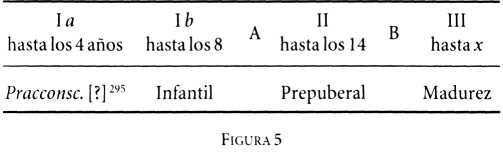

Los orígenes del psicoanálisis reúne una selección de cartas y notas dirigidas por Sigmund Freud a Wilhelm Fliess, médico y biólogo berlinés, durante el fecundo período en el que se gestaron algunas de sus obras capitales. La selección recoge el material relacionado con la labor y las inquietudes científicas de Freud, así como las circunstancias sociales y políticas en que se formó la escuela psicoanalítica.
Sigmund Freud
Los orígenes del psicoanálisis
ePub r1.0
Titivillus 02.05.18
Título original: Aus den Anfängen der Psychoanalyse
Sigmund Freud, 1950
Traducción: Ramón Rey Ardid
Editor digital: Titivillus
ePub base r1.2
Prólogo a la edición alemana
El presente volumen contiene una selección de la correspondencia cambiada entre Sigmund Freud y Wilhelm Fliess, médico y biólogo de Berlín, durante los años 1887 a 1902. Bajo el dominio nacionalsocialista en Alemania, las cartas de Freud a Fliess aquí publicadas fueron a dar, junto con otros documentos legados por Fliess, a manos de libreros anticuarios, y por su conducto llegaron a posesión de los recopiladores. Las cartas de Fliess a Freud, en cambio, nunca han sido halladas.
Marie Bonaparte tuvo a su cargo la preparación del material para la edición alemana, mientras que Anna Freud y Ernst Kris efectuaron la selección individual de las piezas publicadas. Este último es responsable, además, del «Estudio preliminar» y de todas las notas.
El total de esta correspondencia consta de 284 piezas de variada extensión (tarjetas postales, tarjetas ilustradas, cartas, notas, manuscritos). La selección fue supeditada al principio de publicar todo lo pertinente a la labor y a las inquietudes científicas de Freud, así como a las circunstancias sociales y políticas en las que se desarrolló el psicoanálisis. En cambio, fueron abreviados u omitidos aquellos pasajes o aquellas piezas cuya publicación hubiese sido incompatible con la discreción profesional o personal; los esfuerzos del autor por discutir las teorías científicas y los cálculos periódicos de Fliess; además, todas las repeticiones de idénticas ideas, las frecuentes referencias a citas concertadas, a reuniones planeadas o realizadas y a múltiples incidentes cotidianos en el círculo de las respectivas familias o de las mutuas amistades. El cuadro sinóptico que sigue a este prólogo refleja la proporción entre el material existente y el que aquí es publicado.
Este volumen no contiene nada sensacional y está principalmente destinado al lector y al estudioso concienzudo de las obras ya editadas de Freud. El «Estudio preliminar» y las notas[1] tienen la finalidad de facilitar la comprensión de las cartas y de los distintos manuscritos, estableciendo al mismo tiempo su relación con las obras simultáneas y ulteriores de Freud. [En la edición inglesa se han incluido referencias a publicaciones más recientes, expresando los recopiladores su agradecimiento a James Strachey y a Alfred Winterstein por una serie de sugerencias y correcciones que han sido adoptadas[2]].
Las cartas han sido numeradas en orden cronológico, mientras que las notas y los manuscritos se designan alfabéticamente. Casi todas las cartas se encuentran fechadas por su autor, o bien su cronología pudo ser establecida por el matasellos del correo; las escasas piezas que carecían de tal identificación fueron insertadas por los recopiladores en el texto que mejor parecía coincidir con su contenido. Las omisiones han sido marcadas con puntos suspensivos (…); la puntuación del texto, completada; las abreviaciones de palabras y de oraciones, integradas, y se corrigió la ortografía anticuada. Todas las palabras o los pasajes agregados por los recopiladores se encuentran entre corchetes […][3].
El autor del material contenido en este volumen no habría consentido la publicación de ninguna de sus partes. Freud tenía la costumbre de destruir todas las notas, bocetos y borradores en cuanto dejaban de cumplir su finalidad; nunca entregaba al público algo temáticamente inconcluso, y sólo publicaba asuntos de índole personal cuando los consideraba como material imprescindible para ilustrar determinadas relaciones inconscientes. A pesar de las inevitables reservas inspiradas por el respeto a esta actitud de su autor, los recopiladores se consideran justificados al editar esta correspondencia, conservada merced al azar, pues, mejor que ningún otro material disponible a la sazón, ella amplía nuestras nociones sobre la prehistoria y la historia inicial del psicoanálisis; nos permite conocer determinadas fases que recorrió el proceso de la elaboración intelectual en Freud, desde sus primeras impresiones clínicas hasta la formulación de su teoría; finalmente, nos ofrece un atisbo de los rodeos y callejones sin salida en que incurrió al formar sus hipótesis, y reanima ante nosotros una imagen del autor durante esos años azarosos en los cuales su interés se desplazó de la fisiología y la neurología hacia la psicología y la psicopatología.
[Desde que se publicó la versión original alemana de este tomo (Imago Publishing Co., Londres, 1950), ciertos lectores parecen haberse formado la impresión de que por fin les serían accesibles los «secretos» de la vida personal de Freud. Teniendo esto en cuenta, deseamos aclarar que el material aquí publicado complementa hasta cierto punto una serie de datos sobre la vida y las experiencias de Freud que ya conocemos a través de La interpretación de los sueños y de otras obras suyas; pero tanto las cartas a Fliess como lo que Freud se consideró obligado a escribir sobre sí mismo en sus demás obras publicadas no revelan más que ciertos aspectos de las inquietudes científicas y de las preocupaciones que lo embargaban a la sazón. I. ]
|
MARIE BONAPARTE
|
ANNA FREUD
|
ERNST KRIS
|
|
París
|
Londres
|
Nueva York
|
Estudio preliminar, por Ernst Kris
1. Las inquietudes científicas de Wilhelm Fliess
Las cartas a Fliess nos ofrecen un retrato de Freud durante los años en los cuales abordaba, a tientas al principio, un nuevo campo de estudio, el de la psicopatología, para alcanzar en este terreno aquellas nociones en las cuales reposa el psicoanálisis, como teoría y como terapéutica. Vemos a Freud esforzándose por aprehender «un problema intelectual que nunca había sido planteado antes[4]» y bregando con un ambiente cuya hostilidad hacia su obra llegaba al punto de poner en peligro la existencia material de su familia; además, nos permite seguirlo en un trecho del camino hacia la profundización de las nociones recién adquiridas, superando para ello la resistencia de sus propios impulsos inconscientes.
Las cartas abarcan el período de 1887 a 1902, o sea, en la vida de Freud, desde los treinta y uno hasta los cuarenta y seis años; desde que se estableció como especialista para enfermedades nerviosas y mentales hasta sus estudios previos a los Tres ensayos sobre teoría sexual. Durante los años a los cuales se extiende esta correspondencia, además de sus primeros trabajos sobre las neurosis, se gestaron los Estudios sobre la histeria, La interpretación de los sueños, Psicopatología de la vida cotidiana y Análisis fragmentario de una histeria.
El lector de estas cartas se encuentra, por decirlo así, en la situación de quien, escuchando una conversación telefónica, sólo oyese las palabras de uno de los interlocutores y se viera obligado a adivinar las del otro. Como en este caso su interés se concentraría únicamente en las palabras que escucha, es posible que al principio se inclinase a descartar mentalmente al interlocutor inaudible, pero no tardaría en comprobar la imposibilidad de seguir la conversación sin reconstruir de tanto en tanto el diálogo completo.
La amistad con Wilhelm Fliess [1858-1928], la más íntima que conocemos en la vida de Freud, se encuentra tan estrechamente vinculada, como factor estimulante e inhibidor a la vez, con el desarrollo de sus teorías durante el último decenio del siglo pasado, que es imprescindible comenzar por familiarizarse someramente con las inquietudes científicas que Fliess perseguía. De haberse conservado sus cartas a Freud no sólo podríamos seguir hasta los menores detalles su intercambio de ideas, sino que también lograríamos una impresión fidedigna acerca de la personalidad de Fliess. Así, empero, debemos reducirnos a las escasas noticias que podemos derivar de los propios escritos de Fliess y de las encuestas entre quienes lo conocieron personalmente. Todos destacan el caudal de sus conocimientos biológicos, su enorme capacidad imaginativa en el terreno de la medicina, su inclinación a las especulaciones más vastas y el impresionante poder sugestivo de su personalidad, pero también su tendencia a sostener dogmáticamente toda opinión adoptada. Tales características también se traducen parcialmente en sus obras publicadas.
Fliess poseía la formación de un especialista en otorrinolaringología, pero su cultura médica y sus inquietudes científicas trascendían ampliamente de este limitado sector. En su práctica clínica la terapia otolaringológica constituía el núcleo central de una vasta actividad como médico de consulta, que ejerció hasta el fin de su vida en Berlín, abarcando una extensa clientela. Sus trabajos científicos lo llevaron allende los límites de la medicina, al campo de la biología general. El primero de sus estudios más importantes que se decidió a publicar a instancia de Freud (cf. la carta núm. 10) concernía a un síndrome clínico.
Muy al comienzo de sus estudios, el interés de Fliess fue despertado por un conjunto de síntomas que había conseguido eliminar mediante la cocainización de la mucosa nasal, fundando en este descubrimiento la convicción de hallarse frente a una entidad clínica definida: una neurosis refleja de origen nasal[5]. Según sus propias palabras, ésta debía ser considerada «como un complejo formado por síntomas diversos, a semejanza del síndrome de Menière[6]». Distinguía en él tres clases de síntomas: cefalalgias, neuralgias (en los brazos, a la altura del ángulo inferior de los omóplatos o en la región interescapular, en los espacios intercostales, en la zona precordial, a nivel del apéndice xifoides, del epigastrio, en los hipocondrios, en la región lumbar, pero especialmente «neuralgias gástricas») y, por fin, trastornos funcionales, en particular del aparato digestivo, del corazón y del aparato respiratorio.
El número de los síntomas mencionados es grande —dice Fliess—, y, sin embargo, todos ellos se originan en una misma localización: en la nariz. En efecto, su interdependencia no es demostrada por su concomitancia, sino por su desaparición simultánea, pues lo característico de todo este complejo sintomático radica precisamente en el hecho de que puede ser transitoriamente abolido anestesiando con cocaína las zonas nasales responsables[7].
Fliess sostenía que la neurosis nasal refleja responde a una doble etiología: podría ser ocasionada por alteraciones orgánicas, como «las secuelas nasales de enfermedades infecciosas», pero también por «trastornos funcionales puramente vasomotores». Esta última causación explicaría por qué «las manifestaciones de la neurastenia, o sea, de las neurosis de etiología sexual, adoptan con tal frecuencia la forma de la neurosis nasal refleja[8]». Esta frecuencia era explicada por Fliess admitiendo una relación especial entre la nariz y el aparato genital. Así, recordaba el hecho de que las hemorragias nasales suelen ser vicariantes de la menstruación, que «la ingurgitación del cornete inferior durante la menstruación es visible a simple vista», y menciona casos en los cuales la aplicación nasal de la cocaína habría provocado el aborto. También en el hombre postulaba la existencia de una conexión particular entre las zonas genital y nasal. En algunos trabajos ulteriores desarrolló más ampliamente esta pretendida relación, basándose al principio en pruebas puramente clínicas.
Su interés no tardó en trascender la comprobación clínica de que «determinadas partes de la nariz desempeñan un importante papel en el origen de dos trastornos (la neuralgia gástrica y la dismenorrea)», arribando a la conclusión de que «ciertas alteraciones hiperplásticas exógenas de la nariz» llevan a «la resolución definitiva de los fenómenos a distancia, una vez eliminado el trastorno nasal», o que «alteraciones vasomotoras endógenas de la nariz» tienen su origen «esencialmente… en los órganos sexuales[9]». Fliess estaba dedicado a los problemas de la vida sexual humana en general, de modo que Freud, en una época en que sólo conocía imperfectamente sus proyectos y trabajos, bien podía suponer que aquél habría resuelto «el problema de la concepción»; es decir, la cuestión relativa al período en el cual sería mínima la posibilidad de la fecundación. Las inquietudes de Fliess, empero, estaban dirigidas hacia una meta muy distinta.
A mediados de 1896 remitió a Freud el manuscrito de su libro sobre «las relaciones entre la nariz y los órganos genitales femeninos, consideradas en su aspecto biológico», que a comienzos del año siguiente se hallaba impreso[10]. En él Fliess toma por punto de partida la teoría sobre la conexión entre la nariz y los genitales femeninos, expuesta en su trabajo anterior (1895), ampliando en múltiples sentidos las afirmaciones allí establecidas. En efecto, durante la menstruación se observarían regularmente alteraciones nasales; luego considera el valor diagnóstico y terapéutico de la cocainización del «punto nasal», dicho valor sería considerable, pues la menstruación representa
«el prototipo de numerosos fenómenos de la vida sexual…, tal como, en particular, el acto del parto y el proceso del puerperio equivalen hasta en sus menores detalles a un proceso menstrual trasmutado, tanto cronológicamente como por su índole misma».
El «genuino dolor del parto» y la «dismenorrea nasal» serían, «morfológicamente considerados», homólogos.
Estos «hechos», que Fliess procura apoyar con un cúmulo de observaciones, lo conducen a hipótesis de amplia envergadura acerca del papel que los períodos desempeñarían en la vida humana. En la introducción de su libro de 1897 formula estas ideas más agudamente que en la anterior monografía, a menudo un tanto pesada:
La hemorragia catamenial —dice allí— sería la expresión de un proceso… propio de ambos sexos y cuyo comienzo antecede a la pubertad… Los hechos comprobados nos obligan a destacar aún otro factor. De acuerdo con aquéllos, además del proceso menstrual, con su tipo de veintiocho días, existe otro grupo de procesos periódicos, con un ciclo de veintitrés días, a los cuales se hallan sujetos asimismo los individuos de todas las edades y de ambos sexos.
La consideración de estos dos grupos de procesos periódicos ha prestado asidero a la conclusión de que guardan una sólida e íntima relación con las características sexuales femeninas y masculinas, respectivamente. Las circunstancias de que ambos aparezcan, aunque distintamente acentuados, tanto en el hombre como en la mujer, no hace sino confirmar la bisexualidad de nuestra disposición [Anlage].
Una vez establecidas estas nociones, nos vimos obligados a reconocer que en tales períodos sexuales el desarrollo y la estructuración de nuestro organismo se realiza por brotes, y que aquéllos determinan el día de nuestra muerte tanto como el de nuestro nacimiento. Los trastornos patológicos están sujetos a las mismas leyes cronológicas que gobiernan dichos procesos periódicos.
La madre transmite sus períodos al hijo y determina el sexo de éste por aquel período que primero le transmite. Luego, dichos períodos siguen oscilando en el hijo y se repiten con idéntico ritmo de generación en generación. Como la energía en general, es imposible que se originen de la nada, y su ritmo nunca se extinguirá mientras existan seres organizados que se reproduzcan sexualmente. Por tanto, la existencia de tales ritmos no está limitada al ser humano, sino que se extiende al reino animal y, probablemente, a través de todo el mundo orgánico. Más aún: la maravillosa exactitud con la cual se impone el período de veintitrés, respecto del de veintiocho días enteros, permite sospechar una relación más profunda entre las condiciones astronómicas y la creación de los organismos.
He aquí los amplios principios básicos de la teoría de los períodos de Fliess, que éste siguió desarrollando durante varios decenios, ante todo en su obra principal, Der Ablauf des Lebens [«El decurso de la vida»], cuya primera edición apareció en 1906 y la segunda en 1923[11]. La primera exposición de su teoría, en 1897, fue complementada luego por una serie de monografías dedicadas primordialmente al tema de la bisexualidad, pero en todas ellas el autor insistió siempre en la «demostración matemática» de su doctrina, con una obstinación que se sobreponía a las más flagrantes contradicciones.
Mientras que algunas de las comprobaciones clínicas de Fliess han sido adoptadas por la ginecología y la otolaringología modernas, su teoría de los períodos, que al ser publicada suscitó interés crítico, fue rechazada casi unánimemente por los biólogos contemporáneos; en particular sus cálculos periódicos, basados en falsas inferencias lógicas, han sido reconocidos desde hace tiempo como crasos errores[12].
En la época de su encuentro con Freud, Fliess aún no había publicado ninguno de estos trabajos, pero es evidente que su personalidad se distinguía ya entonces por su tendencia a la especulación más amplia y osada. Cuando en el otoño de 1887 llegó a Viena en viaje de estudios, concurrió también, probablemente aconsejado por José Breuer, a las clases de neurología que dictaba Freud. Aprovechó esa ocasión para discutir con él las nuevas concepciones que éste desarrollaba sobre la anatomía y la fisiología del sistema nervioso central, o sea, ideas y proyectos que sólo en parte llegaron a madurar y a ser publicados. La correspondencia siguiente a este encuentro comenzó como la de dos médicos especialistas que se recomiendan pacientes mutuamente, y sólo a partir de 1893 convirtiese en un continuo intercambio de ideas entre dos amigos íntimamente unidos por inquietudes científicas comunes, que incesantemente contemplan el propósito de publicar algo en colaboración, aunque nunca llegan a realizarlo. El afianzamiento de su amistad se vio facilitado exteriormente por la circunstancia de que Fliess casara en 1892 con una vienesa perteneciente al círculo de los pacientes de José Breuer, de modo que no tardaron en darse múltiples oportunidades para que ambos hombres se encontraran. Al poco tiempo, sin embargo, los dos amigos comenzaron a reunirse fuera del círculo de sus familias y de sus amigos vieneses, reuniones que Freud llamaba «congresos», y en las cuales intercambiaban sus ideas y sus comprobaciones científicas. Muchas de las cartas de Freud están destinadas simplemente a servir de puente entre estos encuentros y se hallan colmadas de referencias a cuanto en ellos se había conversado[13].
Durante los primeros años de su relación ambos amigos tenían muchas circunstancias en común: eran jóvenes especialistas entregados a la investigación científica, hijos de comerciantes judíos de la clase media, que se esforzaban por consolidar sus familias y por sentar plaza en la práctica profesional. Freud, dos años mayor, se había casado en 1886, año precedente al de su encuentro con Fliess, y había instalado su consultorio en el número 8 de la Maria Theresienstraße. Durante los años que estas cartas hacen desfilar ante nosotros, vemos crecer su familia hasta llegar a los seis hijos y nos enteramos del traslado al apartamento de la Berggasse 19, casa que Freud sólo habría de abandonar cuarenta y siete años más tarde[14], para emigrar a Inglaterra después de la ocupación de Austria por los nacionalsocialistas. Tenemos noticias del casamiento de Fliess con Ida Bondy, de Viena; del nacimiento de sus tres hijos y de la existencia que llevaban ambas familias, en la medida en que puede hallar un reflejo natural en la correspondencia de dos amigos.
La semejanza de sus circunstancias exteriores de vida se integra con la comunidad del acervo cultural de ambos hombres. Sus respectivas inclinaciones científicas reposan en ambos sobre una sólida base humanística. Comparten la admiración por las obras maestras de la literatura mundial y se transmiten mutuamente citas aptas para servir de epígrafes a sus reflexiones. Freud, además de aludir continuamente a Shakespeare y encomiar a Kipling y a otros novelistas ingleses contemporáneos[15], expresa a Fliess su agradecimiento por haberlo familiarizado con Conrad Ferdinand Meyer, el cuentista suizo que siguió siendo siempre uno de sus autores predilectos.
Las mutuas incitaciones literarias traducen, además, las inclinaciones predominantes en ambos hombres. Entre los libros de Freud se encuentra una edición en dos tomos de las conferencias de Helmholtz que Fliess le envió como regalo de Navidad en 1898. Freud, a su vez, que en la última década del siglo seguía muy de cerca la literatura clínica, no cesaba de remitir a su amigo de Berlín apresuradas tarjetas postales en las que le señalaba novedades alemanas, francesas o inglesas en el campo de la otolaringología, por si hubiesen escapado a la atención de éste[16]. Además, le refiere su frecuentación de las obras psicológicas contemporáneas, pero también su creciente interés por los estudios prehistóricos y arqueológicos, por las primeras y modestas antiguallas griegas y romanas, adquiridas en reemplazo de su largamente anhelado y siempre pospuesto viaje a Italia, con el que soñaba en el sentido y en el ánimo del que Goethe efectuara. Entre las escasas noticias del día, que Freud menciona especialmente, se cuenta la de los descubrimientos de sir Arthur Evans en Creta, primeros anuncios del resurgimiento de una civilización desconocida desde los escombros del pasado.
Los respectivos ambientes en que ambos amigos vivían eran, en cambio, agudamente dispares. El contraste entre la cansada y estrecha Viena de Francisco José y el vivaz y pujante Berlín de Guillermo II refléjase a menudo en las cartas de Freud. Dicho contraste se extendía hasta la esfera económica: en Viena, la práctica de la medicina, «hasta las cumbres mismas de la profesión», era sensiblemente afectada por los menores reveses de la situación económica general, llevando a una inestabilidad que, agregada a la que el prestigio de Freud experimentaba ante los colegas y ante el público, incidía cada vez en su economía familiar. Las cartas de Freud nada dicen de dificultades análogas que pudieran haber afectado a Fliess, cuya actividad médica parece haber progresado rápida e ininterrumpidamente. Desde su matrimonio, por otra parte, Fliess habíase visto libre de toda preocupación económica.
El contraste entre Viena y Berlín comprendía asimismo la esfera política: Freud informa sobre la decadencia del liberalismo en Viena, sobre la victoria de los antisemitas, que habían conquistado la administración comunal; sobre las tendencias antisemitas reinantes en la Sociedad Médica de Viena, en la Facultad de Medicina y entre las autoridades docentes que durante largo tiempo aplazaron su nombramiento de profesor, título del cual podíase esperar con sobrada razón que daría nuevo impulso a la práctica privada de Freud, ya que el público vienés de esa época solía conceder su confianza al especialista en la medida de la posición académica que éste ocupara[17]. Ambos amigos seguían con comprensible interés las noticias del proceso Dreyfus y la «batalla por la justicia» librada por Zola; al respecto, Fliess parece haber encomiado el espíritu progresista prevaleciente en Berlín y en toda Alemania.
No obstante, el verdadero móvil de la correspondencia entablada no residía en la similitud de origen, de cultura o de las respectivas situaciones familiares ni en nada personal o privado, pues aun en los años de su más estrecha amistad las relaciones entre ambas familias nunca llegaron a ser íntimas ni se realizaron jamás los proyectos de reunirlas durante las vacaciones estivales. Según podemos colegir de todas las cartas de Freud que se han conservado, la función del intercambio epistolar estaba determinada por la comunidad de las inquietudes científicas que animaban a ambos corresponsales.
La creciente frecuencia con que se comunicaban sus ideas y la mayor intimidad en el trato epistolar, que se traduce por la transición del formal «usted» al familiar tuteo, pueden relacionarse con un importante cambio operado en las relaciones personales y científicas de Freud, cuando se separó de José Breuer [1842-1925][18]. Ya en sus años de estudiante Freud había mantenido el más estrecho contacto con este hombre de tan importante personalidad. Breuer, que contaba trece años más de edad, había informado a Freud, ya poco después de 1880, acerca del tratamiento catártico que había ensayado en una paciente suya[19], y diez años después ambos decidieron publicar en colaboración sus concepciones sobre la histeria.
Mas la labor en común no tardó en suscitar diferencias de opinión que habrían de conducir a la separación de los colaboradores. Las ideas de Freud avanzaban en forma brusca e impulsiva, al punto que Breuer, más viejo e indeciso, no podía resolverse a seguirlas en su desarrollo. Ya en ocasión de su primer trabajo publicado en colaboración[20], Freud informa a Fliess sobre sus conflictos con Breuer (carta núm. 11), y las dificultades de su cooperación no hicieron sino aumentar constantemente mientras preparaban para la publicación su primer libro en común, Estudios sobre la histeria, que apareció a fines de 1895, a punto tal que cuando el libro vio por fin la luz los autores destacaron expresamente en el prólogo la discrepancia de sus respectivos puntos de vista.
Breuer había seguido de buen grado a Freud en sus primeras hipótesis básicas y había adoptado de él los conceptos de defensa y de conversión, aunque, adhiriéndose a la escuela psiquiátrica francesa, mantenía la presunción de que un estado particular, designado «hipnoideo», sería el responsable del origen de los fenómenos histéricos. Breuer también había asumido, integrándola con sus propias concepciones, la noción básica de Freud acerca del funcionamiento del aparato psíquico que éste formulara como principio de la constancia de la energía psíquica. Las discrepancias parecen haber surgido cuando la experiencia clínica y las primeras especulaciones teóricas de Freud apuntaron hacia el predominio de la sexualidad en la etiología de las neurosis[21]. Cuando aparecieron los Estudios aún fue posible conciliar a duras penas, pero sólo exteriormente, las divergencias entre los dos autores[22]. Si se compara la reserva con que es abordado el problema de la sexualidad en dicha obra, con las consideraciones respectivas de Freud en su trabajo sobre la neurosis de angustia, publicado aún antes que los Estudios[23], y si se toma en consideración el cúmulo de nuevas nociones que, de acuerdo con el testimonio de estas cartas, agitábanse ya en Freud, resulta fácil formarse una idea de las dificultades a las cuales se veía enfrentado: el amigo mayor, el mentor que años atrás lo había conducido al problema de la histeria, negábale ahora su solidaridad y su aprobación.
Ningún apoyo podía esperar de los representantes oficiales de la psiquiatría y la neurología en la universidad. Meynert, el antiguo maestro de Freud, ya había rechazado violentamente sus primeros ensayos sobre la histeria, y Krafft-Ebing les dedicaba una reservada indiferencia. El círculo más inmediato de amigos médicos, empero, se hallaba dominado por la influencia de Breuer. Con todo, Freud no parece haber sido afectado tanto por el rechazo de sus descubrimientos por Breuer como por la fluctuación de las actitudes críticas y admirativas en éste (véanse, por ejemplo, las cartas núms. 24, 35, 135)[24].
La amistad con Fliess vino a colmar el vacío dejado por el alejamiento de Breuer y a reemplazar para Freud una relación amistosa e intelectual más antigua, pero que había cesado de ser viable[25]. Había perdido toda confianza de ser comprendido en su propio círculo más íntimo, de modo que el colega de Berlín llegó a convertirse, para usar las propias palabras de Freud, en su único y exclusivo público.
Durante los primeros años de su correspondencia, Freud solía anunciar a Fliess los trabajos proyectados y le enviaba separatas de todas sus publicaciones; mas Fliess no tardó en convertirse en el confidente al cual comunicaba su material clínico, al que anunciaba sus últimos descubrimientos y exponía las primeras formulaciones de sus nuevas ideas. Así, entre las cartas a Fliess no sólo hallamos esbozos de nociones no maduradas aún y planes para futuras investigaciones, sino también algunos ensayos conclusos, difícilmente superados por las respectivas publicaciones ulteriores. Así sucedió que Freud pidiera posteriormente a Fliess la devolución de más de un manuscrito para utilizarlo en alguna publicación, mientras que ciertas fases y determinados rodeos que las hipótesis de Freud recorrieron en el curso de su desarrollo tórnanse accesibles únicamente a través del material aquí publicado.
Nos es imposible averiguar qué repercusión despertaron las comunicaciones de Freud en la mente de su destinatario. De las cartas podemos colegir que ocasionalmente expresó dudas y advertencias, pero que a menudo aprobó y se adhirió a las manifestaciones de aquél. El material epistolar sólo comenzó a aumentar en contenido cuando las diferencias de opinión se tornaron más pronunciadas y cuando Fliess insistió cada vez más perentoriamente en que su propia teoría de los períodos estaba destinada a fundamentar la teoría de las neurosis de Freud.
Las cartas informan con profusión sobre la actitud de Freud ante los estudios de Fliess, por lo menos durante los diez primeros años, seguía los trabajos del amigo con no disimulada atención y admiraba la orientación que los guiaba. Es característico que su entusiasmo por la obra de Fliess aumentase siempre después de los encuentros con éste o después de alguna exposición epistolar de los trabajos en curso, mientras que sus comentarios sobre las memorias publicadas que Fliess le enviaba eran evidentemente reservados.
Esta circunstancia corrobora la sospecha de que su sobrevaloración de la personalidad y de la importancia científica de Fliess correspondía a una necesidad interna del propio Freud. En efecto, hacía de su amigo y confidente un aliado en la lucha contra la ciencia oficial, contra la medicina de los altivos y poderosos profesores y de las clínicas universitarias, aunque los escritos publicados a la sazón por Fliess atestiguan que tal papel estaba muy lejos de coincidir con sus intenciones. Freud, para atar más sólidamente al amigo consigo mismo, procuraba elevarlo a su propio nivel, y en ocasiones idealizaba la imagen de su presunto aliado hasta convertirla en la de una luminaria en el campo de las ciencias naturales.
No cabe duda de que la sobrevaloración de Fliess, reflejada en las cartas de Freud, obedece a una razón objetiva, además de la puramente personal. Freud no sólo buscaba en Fliess al oyente y al presunto aliado en la lucha, sino que de su relación con él esperaba también respuestas a las preguntas que desde años atrás lo asediaban: las cuestiones relativas a la demarcación entre las concepciones fisiológica y psicológica de los fenómenos que se había dedicado a estudiar.
2. Psicología y fisiología
«No he sido siempre un psicoterapeuta, sino que, formado como todos los neuropatólogos en el ejercicio del diagnóstico topográfico y del electrodiagnóstico, sigo siendo el primero en lamentarme sobremanera de que mis propias historias clínicas se lean, en cierto modo, como novelas, y carezcan, por así decirlo, de la severa impronta que confiere el cientificismo. He de consolarme reflexionando que ello obedece, más bien que a mis propias preferencias, a la naturaleza misma del material tratado, pues sucede que ni la topología lesional ni las reacciones eléctricas tienen injerencia alguna en el estudio de la histeria, mientras que la exhaustiva descripción del suceder anímico, tal como suelen ofrecérnosla los literatos, me permite, mediante la aplicación de unas pocas fórmulas psicológicas, arribar a una suerte de comprensión acerca del mecanismo y el origen de una histeria».
Con estas palabras inicia Freud la epicrisis de la historia clínica de Elisabeth von R., presumiblemente la última de las que aportó a los Estudios sobre la histeria. Apuntan a un conflicto intelectual que afectó decisivamente la evolución de sus ideas durante la última década del siglo. Habíasele abierto la perspectiva de nociones nuevas e inauditas: se trataba de formular los conflictos de la vida psíquica humana en términos científicos. Era tentador fundar la captación de este nuevo territorio sobre la comprensión empática, reduciendo, por ejemplo, todas las historias clínicas a su raigambre biográfica y fundando sobre la intuición todas las endospecciones obtenidas, «tal como suelen ofrecérnosla los literatos». La destreza literaria con que Freud manejaba el material biográfico, habilidad que por primera vez desplegó plenamente en los Estudios, debía tornarle perentoria e inmediata semejante tentación. Sus cartas demuestran que ya en esos años iniciales sabía penetrar psicológicamente la elaboración de los temas literarios: sus análisis de dos cuentos de Conrad Ferdinand Meyer representan los primeros ensayos de esta especie[26]. De años ulteriores sabemos cuál era su actitud frente a la intuición poética, frente a las creaciones de esos seres singulares a quienes «les es dado hacer surgir del torbellino de sus propios sentimientos, sin esfuerzo alguno, los más profundos conocimientos, mientras que nosotros para alcanzarlos debemos abrirnos paso a través de torturantes vacilaciones e inciertos tanteos[27]». El contraste al que aquí se refiere y que ya lo preocupó en los Estudios sobre la histeria es el que separa la comprensión intuitiva de la explicación científica. Nunca pudo surgir la menor duda acerca del partido que Freud habría de adoptar: su paso por la escuela de la ciencia lo destinó a dedicar su existencia a la fundación de la nueva psicología sobre el cimiento de los métodos científicos.
Evoquemos brevemente cuanto se conoce sobre la formación científica de Freud; para ello, nuestras fuentes serán su Autobiografía y sus trabajos doctrinarios mismos[28]. En 1882, siendo todavía estudiante en el Instituto de Fisiología de la Universidad de Viena, abandonó la biología en favor de la medicina, después de haberse dedicado durante casi seis años a ella, lo hizo a regañadientes y sólo cediendo a los insistentes consejos de su maestro, el fisiólogo Ernst Brücke [1819-1892], que hacía valer ante él consideraciones de orden práctico[29]. Al elegir su nueva especialidad clínica procuró continuar la dirección de sus anteriores trabajos biológicos, que habían partido del estudio de las raíces y los ganglios raquídeos del Petromyzon[30]. Estimulado por Theodor Meynert [1832-1892], se dedicó a la neurología, e impulsado por «cierta tendencia a la concentración exclusiva» que ya comenzaba a desarrollarse en él publicó en 1884 y en 1885 seis monografías dedicadas a la histología, la farmacología y la clínica, que le valieron la obtención del título de «Docente privado» en neuropatología, en la primavera de 1885, cuando contaba veintinueve años[31].
Una beca de viaje, cuya concesión a Freud había sido propiciada por Brücke, le permitió ir a París y asistir a la clínica de Charcot en la Salpêtrière. Su permanencia allí se extendió del otoño de 1885 hasta fines de febrero de 1886[32]. De París viajó a Berlín, «para adquirir algunas nociones de clínica pediátrica en general», junto a Adolph Baginsky, pues en Viena no lo aguardaba ningún puesto en la clínica neuropsiquiátrica, que entonces, como posteriormente, le mantuvo cerradas sus puertas. En cambio, el pediatra Max Kassowitz habíale ofrecido el cargo de jefe del nuevo servicio de neurología en el «Primer Hospital Público de Niños», una institución privada e independiente de la organización académica. Freud ocupó ese cargo durante varios años[33].
Las cartas nos ofrecen fugaces atisbos de los años siguientes a su regreso a Viena, su casamiento y su establecimiento como médico práctico, años en los cuales sus inquietudes científicas se orientaron hacia varios sectores distintos. En los trabajos publicados siguió dominando al principio el interés neurológico, de modo que sus primeras publicaciones representan otras tantas continuaciones directas de sus trabajos anteriores en el campo de la clínica, la histología, la farmacología y la anatomía.
Al poco tiempo, empero, dejóse guiar por el interés del nuevo material clínico que tenía a su disposición. Un estudio sobre las hemianopsias en la primera infancia, publicado en 1888, fue el primero de una serie de estudios dedicados a la neurología infantil: ante todo, la monografía de 1891 sobre las hemiplejías cerebrales de la infancia, en colaboración con Rie, y luego, la monografía sobre las diplejías cerebrales, que apareció en 1893. Esta orientación clínica culminó finalmente en la extensa exposición global de las parálisis cerebrales infantiles que Freud aportó al tratado de patología especial y terapéutica de Nothnagel, concluido sólo en 1897, en diferido y reluctante cumplimiento de una promesa dada mucho tiempo antes[34]. Las cartas nos revelan que Freud se sentía ante esta tarea «como Pegaso uncido al yugo», estado de ánimo que nos resulta comprensible si consideramos que hubo de posponer por ella su dedicación al estudio de los sueños.
No obstante, este trabajo, que de 1895 a 1897 parecíale a Freud meramente el cumplimiento de una obligación tediosa y oprimente, ocupa todavía, según el testimonio de R. Brun[35], un lugar seguro en la neurología moderna. La monografía de Freud sería
el estudio más completo y minucioso que se haya escrito hasta hoy sobre las parálisis cerebrales de la infancia… Se podrá apreciar el consumado dominio del enorme material clínico que aquí se halla reunido y sometido a una revisión crítica, teniendo en cuenta que sólo los títulos de la bibliografía citada ocupan catorce páginas y media.
En los años de 1886 al invierno de 1892 a 1893 aparecieron también, casi como accesoriamente, cuatro gruesos volúmenes traducidos por Freud: los dos tomos de las conferencias de Charcot y dos libros de Bernheim[36]. El traductor agregó sendos y enjundiosos prólogos a dos de estos libros y proveyó su versión de las Leçons du mardi à la Salpêtrière, de Charcot, con innumerables referencias a la literatura clínica más reciente, así como con observaciones críticas, algunas de las cuales contienen las primerísimas formulaciones de las teorías de Freud en el campo de las neurosis.
La general aceptación que hallaron sus trabajos sobre neurología infantil apenas le causó impresión alguna (cf. la carta núm. 18); su verdadero interés se dirigía a otros dos campos de estudio —o más bien a dos manifestaciones de un mismo problema—, que alternativamente ocuparon lugar preeminente en su intelecto: la anatomía del encéfalo y la investigación de la histeria.
La idea de formular sus opiniones sobre la anatomía cerebral le fue sugerida en el curso de su colaboración en el diccionario médico de Villaret[37]. Dado que los artículos de dicha obra no llevaban la firma de sus autores, Freud no incorporó más tarde a su bibliografía las aportaciones redactadas por él, además, opinaba que su artículo sobre anatomía cerebral había sido mutilado excesivamente. Su monografía sobre la concepción de las afasias[38], publicada en 1891 y dedicada a José Breuer, pertenece al mismo sector de estudios. En ella formula por vez primera sus «dudas respecto de la exactitud de cualquier esquema del lenguaje basado esencialmente en la localización de sus centros[39]». Sustituyó esta teoría localizacionista por otra que destaca la modalidad funcional de los centros cerebrales intervinientes; a su juicio, la teoría de la localización no tendría en cuenta la interacción de fuerzas, la dinámica del fenómeno, mientras que él se inclinaba a poner en primer plano los centros dinámicos, en contraste con los puntos de localización determinados. No cabe duda de que Bernfeld está en lo cierto cuando se refiere a este trabajo sobre las afasias como el primer libro «freudiano[40]».
El interés de Freud por la histeria se desarrolló paulatinamente. Ya en 1882 o en 1883, presumiblemente poco después de haber abandonado el Instituto de Fisiología, Breuer le informó acerca de una paciente que había tratado desde 1880 hasta 1882, paciente a la cual conocemos como «el caso Anna O.» de los Estudios sobre la histeria. Fue éste el caso en el cual Breuer había descubierto los principios del tratamiento catártico. Cuando Freud se dispuso a «informar a Charcot de las comprobaciones de Breuer…, aquél no demostró el menor interés ante mi primer esbozo de las mismas». Según el propio testimonio de Freud, ello tuvo por consecuencia que su propio interés se apartara transitoriamente de la dedicación a los problemas que Breuer le había planteado.
Una vez vuelto de París, estando ocupado con la traducción de las conferencias de Charcot, Freud aprovechó una circunstancia accidental para discutir nuevamente el tema de la histeria. Su beca le comprometía a relatar ante la Sociedad Médica de Viena las experiencias recogidas en París, y la comunicación, anunciada para el 15 de octubre de 1886, estaba dedicada a los nuevos trabajos de Charcot sobre la histeria masculina. Sus palabras no hallaron crédito alguno y Meynert lo comprometió a «presentar ante la Sociedad casos tales que permitieran comprobar fehacientemente aquellos signos somáticos de la histeria, aquellos estigmas histéricos» por medio de los cuales Charcot pretendía caracterizar dicha neurosis. Freud respondió a esta invitación el 26 de noviembre, presentando conjuntamente con el oculista L. Königstein un caso de «grave hemianestesia en un hombre histérico[41]». El relato fue aplaudido, pero se mantuvo el rechazo de la concepción de Charcot sustentada por Freud. Meynert no cejó en su oposición y enfrentó a la teoría de Charcot una concepción anatómica[42] que Freud halló totalmente inadecuada[43]. Como resultado de este entredicho con Meynert, cerrósele a Freud su antigua plaza de trabajo, el Instituto Neurológico de la Universidad, y sus relaciones con la Facultad de Medicina quedaron sensiblemente quebrantadas.
Después de esta comunicación puramente clínica del otoño de 1886, durante más de cinco años Freud no volvió a publicar nada sobre la histeria. Su interés, empero, no se había extinguido. Desde el otoño de 1887 comenzó a aplicar el tratamiento hipnótico (carta núm. 2) y a partir de la primavera de 1889 empleó sistemáticamente el hipnotismo para la exploración de sus pacientes[44]; además, en el verano del mismo año viajó a Nancy para completar su experiencia clínica junto a Bernheim[45], al punto que también el interés de Breuer por este tema volvió a ser estimulado por la dedicación que él mismo había despertado en Freud.
Tres años más tarde, en 1892, Freud y Breuer acordaron publicar su comunicación previa conjunta, El mecanismo psíquico de los fenómenos histéricos, que a comienzos de 1893 se hallaba impresa y que más de dos años después había de constituir el capítulo inicial de los Estudios sobre la histeria.
El interés de Freud por este nuevo campo de actividad seguía al principio una orientación exclusivamente clínica, pero el estudio del material de observación no tardó en imponerle la admisión de factores decisivos que Breuer no quiso compartir o que sólo se resignó a admitir de mala gana: el reconocimiento del carácter defensivo de los síntomas, el de su sobredeterminación y el de la función de la resistencia. Simultáneamente con esta comprensión clínica, o más bien precediéndola, modificó completamente su técnica, abandonando la catártica, que Breuer había aplicado en favor de la «técnica de concentración» que describió en los Estudios y a la que poco después, entre 1895 y 1898, había de sustraer los residuos de elementos sugestivos, convirtiéndola en la técnica psicoanalítica propiamente dicha[46].
La parte clínica y técnica de los Estudios —cuatro de las cinco historias clínicas y el capítulo sobre técnica («Sobre la psicoterapia de la histeria»)— fue escrita por Freud, mientras que Breuer suscribió la parte teórica. Sin embargo gran parte de lo redactado por Breuer, en particular la concepción básica de la cual partió, era sin duda patrimonio intelectual de Freud o pertenecía a ambos en común[47]. Disponemos de un borrador de la comunicación previa con Breuer, redactado por Freud en 1892, que anticipa muchas de las formulaciones más importantes de Breuer[48]. En particular, Freud establece allí el postulado de que
el sistema nervioso tiene la tendencia de mantener constante en sus condiciones funcionales, algo que cabe denominar suma de excitación. Procura mantener esta precondición de la salud resolviendo asociativamente todo incremento sensorial de la excitación o descargándolo por medio de una reacción motriz apropiada.
Esta hipótesis, adoptada del campo de las nociones físicas, halló cabida en la exposición de Breuer como «teoría de la excitación intracerebral» y le permitió aplicar la analogía de los procesos del sistema nervioso central con los de un circuito eléctrico. En el pensamiento de Freud, en cambio, dicha noción llegó a diversas especulaciones que aparecen expuestas en las cartas y, finalmente, a las formulaciones sobre los mecanismos de regulación psíquica que forman parte de las hipótesis básicas del psicoanálisis.
En un brillante ensayo[49], al que aquí nos ceñiremos, Bernfeld demostró el origen de estas nociones. Proceden directamente de las ideas fisiológicas de Brücke, entre cuyos discípulos habíase contado también Breuer —a quien Freud había conocido precisamente en el Instituto de Fisiología—, y estaban difundidas en el círculo de los fisiólogos vieneses, entre cuyas figuras rectoras se contaban el propio Brücke y sus asistentes Ernst von Fleischl-Marxow [1846-1891] y Sigmund Exner [1846-1925], citados ambos en las cartas, aunque en distintos contextos. Sólo ahora atinamos a comprender plenamente a qué aludía Freud cuando, ya en edad avanzada, calificó a Brücke como el maestro que habría ejercido sobre él la más profunda impresión. La fisiología de Brücke, firmemente cimentada en el terreno de la física, con su ideal de la mensurabilidad de todos los procesos, fue para Freud el punto de arranque para erigir las teorías psicoanalíticas.
Brücke no se encontraba en modo alguno aislado entre los fisiólogos de su época, sino que formaba parte de un grupo de científicos que compartían puntos de vista similares, que habían sido discípulos de Johannes Müller y que en el año 1845 se habían reunido en la Sociedad Física de Berlín. En este círculo, Helmholtz había pronunciado en 1847 su conferencia sobre el principio de la conservación de la energía; Helmholtz (1821-1894) y Du Bois-Reymond (1818-1892) tenían casi la misma edad y eran íntimos amigos; consideraban a Brücke como su «embajador en Viena».
La estrechez de las relaciones entre los fisiólogos de Viena y los de Berlín, que Bernfeld describe tan convincentemente en su estudio, fue uno de los motivos que afianzaron el vínculo entre Freud y Fliess. Cuando éste se encontraba en Viena, visitaba a aquellos investigadores con los cuales debía sentirse por fuerza íntimamente vinculado. Sus trabajos no dejan lugar a duda alguna respecto de su pertenencia a la misma escuela que la de aquéllos; tampoco fue por mero azar que, como ya mencionamos, obsequiara a Freud con las obras completas de Helmholtz. En los trabajos de Fliess parece haberse impuesto cada vez más el ideal de una biología firmemente fundada en bases fisicomatemáticas. Su inclinación a las matemáticas se trasluce claramente en el epistolario mismo; había de ejercer funesta influencia sobre sus trabajos ulteriores, y halló expresión en el subtítulo de su obra cardinal, Der Ablauf des Lebens [«El decurso de la vida», 1906], de la cual esperaba que constituiría la «fundamentación de una biología exacta».
La participación de Fliess en las investigaciones de Freud fue determinada precisamente por esta posición. Apoyó a Freud en sus esfuerzos por mantener el contacto entre las concepciones psicológicas y fisicofisiológicas, y concluyó por ofrecerle sus propias hipótesis como fundamento para las comprobaciones de aquél; pero al hacerlo se exacerbó su rivalidad, que finalmente condujo a la inevitable ruptura de las relaciones.
Durante los primeros años de su amistad, empero, todo lo que posteriormente había de llevar al alejamiento fue el fermento de su mutua estimulación. El concepto de Fliess acerca de la neurosis nasal refleja venía a tocar una de las cuestiones que más vivamente interesaban a Freud: el problema del diagnóstico diferencial de los trastornos histéricos y orgánicos, que ya lo había ocupado en París. Con todo, sólo en 1893, a los siete años de su regreso a Viena, retomó cierto aspecto de este problema en un trabajo originalmente publicado en francés, demostrando con insuperada claridad que la parálisis histérica se conduce «como si no existiese una anatomía del cerebro» y depende únicamente de «la reactividad de un grupo determinado de representaciones[50]».
El problema del diagnóstico diferencial desempeñaba también un considerable papel en los trabajos clínicos que Freud efectuaba a la sazón. Era natural para él pensar que sería necesario diferenciar
más agudamente de lo que hasta ahora ha sido posible la neurastenia genuina de las distintas pseudoneurastenias, como, por ejemplo, el cuadro clínico de la neurosis nasal refleja, orgánicamente determinada, los trastornos nerviosos de las caquexias y de la arteriosclerosis, las fases prodrómicas de la parálisis progresiva y de algunas psicosis[51].
Consideraba estas diferenciaciones tanto más perentorias cuanto que las nociones adquiridas a través de la experiencia clínica parecían destinadas a abrir una nueva e insospechada perspectiva sobre la esencia misma de la neurastenia como neurosis actual (neurosis de angustia). Podemos observar el desarrollo de esta noción a través de las cartas, en algunas de las cuales llegó a ser formulada con excesivo rigor, hasta que cuajó finalmente en la primera publicación dedicada a este tema: Sobre la justificación de separar de la neurastenia un síndrome determinado, como «neurosis de angustia»[52]. La comprobación decisiva de que el mecanismo de la neurosis de angustia radica «en que la excitación sexual somática es apartada de lo psíquico y en la consiguiente aplicación anormal de dicha energía», Freud la expresó en la fórmula de que «la angustia neurótica es libido sexual trasmutada».
Esta concepción, que sólo fue brevemente mencionada en los Estudios sobre la histeria —publicados posteriormente—, tuvo importantes consecuencias en la historia del psicoanálisis. La teoría «toxicológica» de la ansiedad, que la considera como el resultado de la libido estancada, dominó el pensamiento analítico hasta que la concepción de la angustia halló una nueva formulación en 1926, en Inhibición, síntoma y angustia. Al mismo tiempo, esta revisión actualizó otra importante noción que Freud había formulado poco después de 1890[53]: la de situar la función de la defensa en el centro mismo de la teoría de las neurosis. Después de un intervalo de más de treinta años fue este concepto de la defensa el que permitió fundamentar buena parte de la psicología psicoanalítica del yo.
Tampoco las concepciones que indujeron a Freud a establecer la neurosis de angustia como una entidad clínica independiente fueron desarrolladas en vano, pues aún ocupan en la clínica y en la teoría psicoanalíticas una plaza segura, aunque modesta. No cabe poner en duda la importancia clínica de lo que hoy denominamos «componentes actualneuróticos del conflicto neurótico», concibiéndolos como exacerbaciones de la situación de peligro para el yo; pero la frustración sexual es sólo una entre varias otras condiciones susceptibles de determinar tales situaciones actualneuróticas. La diferencia entre esta concepción actual y la primitiva de Freud ilustra con meridiana claridad el desarrollo que siguieron sus hipótesis. Mientras que nosotros, basados en nuestro conocimiento del papel que desempeñan las condiciones genéticas en la etiología de las neurosis, nos inclinamos a derivar de la propia historia del individuo sus reacciones a la frustración y a la tensión instintual, pero no creemos que la frustración en el logro de los objetivos sexuales produzca angustia neurótica en el adulto, fue precisamente esta última noción la que originalmente tuvo primordial importancia para Freud. La concepción de que «la angustia, fundamento de las manifestaciones neuróticas, no admite derivación psíquica alguna» prometía conducir de la incertidumbre de las concepciones psicológicas al terreno firme de los procesos fisiológicos, permitiendo vincular la explicación de por lo menos un grupo de fenómenos psicopatológicos con el conjunto de las teorías fisiológicas. Precisamente en este terreno, el de la etiología sexual, fue en el que Breuer se mostró reacio e incluso se negó a seguir los pasos de Freud; pero justamente en él sentía éste la necesidad de ser alentado y aconsejado. Múltiples enigmas había que resolver; las cartas reflejan el cuadro de la incesante pugna de un concienzudo observador con las impresiones clínicas que lo asedian y que se esfuerza por elaborar. Al principio Freud se excede en el alcance que presta a su nuevo enfoque, intentando explicar a la vez la fisiología y la psicología de la función sexual por medio de un esquema destinado a interpretar todos los trastornos como desplazamientos cuantitativos (Manuscrito G), un intento que, evidentemente estimulado por Fliess, no tardaría en ser repudiado por Freud ya al cabo de pocos años.
En aquellos años la idea directriz en el pensamiento de Freud era la de adoptar los fenómenos fisiológicos y lo físicamente mensurable como fundamento de toda consideración psicológica, o sea, que buscaba la estricta aplicación de aquellas concepciones que habían fundamentado el enfoque de Helmholtz y de Brücke. Por lo menos desde comienzos de 1895 habíase dedicado Freud al intento de dar forma a tal concepción global, y en este contexto cabe recordar que Breuer, precisamente en esa época, estaba ocupado en redactar la parte teórica de los Estudios sobre la histeria, en la cual sustentaba la opinión de que sería inadmisible relacionar la concepción psicológica con nociones neurofisiológicas, por lo menos en el estado que a la sazón habían alcanzado los conocimientos respectivos. Pero tal intento era justamente el que Freud se disponía a emprender. Primero pensó en escribir una «psicología para neurólogos»; pero es evidente que modificó varias veces los planes y los borradores. Disponemos de un proyecto que data del otoño de 1895, cuya mayor parte fue escrita en pocos días, después de un encuentro con Fliess, mientras que terminó de redactar el resto en el curso de las semanas siguientes. Pero apenas lo hubo remitido a Fliess cuando ya le hizo seguir un sinnúmero de explicaciones, aclaraciones y propuestas de correcciones. Las ideas expresadas en dicho borrador siguieron inspirando la correspondencia durante varios meses, hasta ceder la plaza a nuevas ideas, pero sobre todo a nuevos conocimientos.
El manuscrito del Proyecto de una psicología para neurólogos, reproducida en estas O. C., sólo ilustra, pues, una de las fases que recorrieron los intentos de Freud para alcanzar una concepción global de la psicología y de la fisiología cerebral; pero su valor histórico no por ello es menos considerable. No intentaremos analizar aquí, exhaustiva y sistemáticamente, el contenido de dicho Proyecto; sólo podemos esbozar sus ideas directrices. Trátase de un intento consecuente de describir el funcionamiento del aparato psíquico como el de un sistema de neuronas, concibiendo todos sus procesos, en última instancia, como modificaciones cuantitativas. Mas estos procesos no están confinados meramente a la percepción y a la memoria, sino que comprenden el pensamiento y la vida afectiva, la psicopatología y la psicología normal, así como una primera teoría de los sueños, restringida, pero completa en múltiples respectos. La idea de fundir la teoría de las neurosis y la psicología normal con la fisiología cerebral era, en sí misma, osada; pero lo que más ha de impresionar al lector actual es la consecuencia con que Freud persiguió este único objetivo intelectual, pese a todas las dificultades y contradicciones. Cada parte de dicho Proyecto, ya sea la de fisiología cerebral como la de psicopatología, la que trata de la defensa y la del pensamiento, contiene un cúmulo de nuevas observaciones y de nuevas hipótesis que sólo en parte y sólo alusivamente hallaron cabida en los trabajos ulteriores de Freud. Algunas de ellas apuntan ya a la evolución que el psicoanálisis había de seguir: así, por ejemplo, en la presente versión del Proyecto, Freud desarrolla la concepción del yo como un organismo caracterizado por poseer una catexis constante de energía, concepción que un cuarto de siglo después había de convertirse en la pieza angular de la teoría psicoanalítica de la estructura psíquica. Al descartar más tarde el sistema de ideas que había aplicado en 1895 para fundar esta noción, concibiendo el yo como un grupo de neuronas dotadas de características especiales, también la noción misma del yo pareció perder transitoriamente una parte de su importancia. Otras ideas básicas del Proyecto estaban destinadas a ingresar más pronto en el desarrollo del psicoanálisis; así, la noción de que la necesidad biológica, que conduce inevitablemente a la adaptación, es contraria a las tendencias hedónicas del individuo, fue desarrollada más tarde en la concepción freudiana sobre el principio del placer y el principio de la realidad. Los ejemplos, empero, que Freud aplicó en su Proyecto para ilustrar estos problemas proceden en parte de un sector cuya importancia sólo le había sido imperfectamente revelada a la sazón a través de su experiencia clínica. Pertenecen, en efecto, al período de la primera infancia, y uno de los ejemplos más importantes concierne precisamente a la relación entre el lactante y el pecho materno.
Este cúmulo de ideas, que abarca desde la fisiología cerebral hasta la metapsicología (en el sentido que este término asumiría posteriormente), por fuerza debía tornar difícil la inteligencia del Proyecto, aun para un lector preparado a través de conversaciones con su autor; además, el manuscrito contiene cierto número de contradicciones flagrantes, rectificadas más tarde por el propio Freud en sus cartas. Éstas sólo en parte nos permiten colegir la reacción de Fliess al Proyecto; pero ella consistió, aparentemente, en una mezcla de reserva y admiración.
El objetivo que Freud perseguía al enviar dicho manuscrito a Fliess —para quien, por otra parte, habíalo escrito especialmente—, o sea, el propósito de obtener de éste sugerencias detalladas para formular mejor la parte dedicada a la fisiología del cerebro (carta núm. 28), no se cumplió, pues Fliess se hallaba dedicado evidentemente a otros problemas y el propio Freud no alcanzó a mantener vivo su interés por esta empresa excesivamente osada. Por tanto, archivó los apuntes de esta «Psicología» y se rebeló contra el «tirano» que había estado dominando su pensamiento. Nuevas impresiones clínicas no tardaron en demandar su atención.
3. Sexualidad infantil y autoanálisis
El problema que tuvo ocupado a Freud durante el año 1896 y la primera mitad de 1897 venía anunciándose desde tiempo atrás. En los Estudios sobre la histeria el papel de la infancia en la etiología de la histeria sólo había sido brevemente rozado. En el Proyecto de una psicología, escrito contemporáneamente, Freud condensó sus concepciones en la formulación de que las vivencias sexuales anteriores a la pubertad tendrían importancia etiológica en la formación de las neurosis; pero más tarde opinó que la segunda dentición marcaría el momento hasta el cual las experiencias sexuales podrían desencadenar una neurosis (cartas núms. 46, 52, 55, entre otras). Finalmente, ya entonces se esforzaba por diferenciar «las distintas formas de neurosis y la paranoia, de acuerdo con sus respectivos períodos de fijación». Al principio pensó que dicho período sería el de la segunda infancia; pero no tardó en trasladarlo cada vez más atrás, y al mismo tiempo se afianzó en él la convicción de que la noxa decisiva debía atribuirse a la seducción por adultos.
Demostró ser cierto —escribe Freud en su Autobiografía— lo que poetas y expertos conocedores del alma humana habían sostenido siempre: que las impresiones de ese temprano período de la existencia, aunque casi siempre caen víctimas de la amnesia, dejan en la evolución del individuo huellas indelebles y, en particular, establecen la disposición para ulteriores trastornos neuróticos. Pero como en esos años infantiles trátase siempre de excitaciones sexuales y de la reacción a las mismas, me hallé enfrentado con el hecho de la sexualidad infantil, que era a su vez una novedad y entrañaba una contradicción a uno de los más poderosos prejuicios humanos…
Antes de considerar más detenidamente el problema de la sexualidad infantil he de mencionar un error en el que incurrí durante cierto tiempo y que no tardaría en tener consecuencias funestas para la totalidad de mi labor. Bajo la coerción de la técnica que yo aplicaba a la sazón, la mayoría de mis pacientes evocaban escenas de su infancia que tenían por contenido la seducción sexual por una persona adulta. En las mujeres el papel del seductor correspondía casi siempre al padre. Yo di fe a tales comunicaciones y creí, en consecuencia, haber descubierto las fuentes de la neurosis ulterior en esas vivencias de seducción sexual en la infancia. Mi confianza se vio aún robustecida por algunos casos en los cuales dichas relaciones con el padre, un tío o un hermano mayor habían continuado hasta una edad en la cual la memoria tenía que ser, por fuerza, fidedigna[54].
Esta concepción de la génesis de las neurosis, Freud la asentó en su trabajo sobre La etiología de la histeria, publicado en mayo de 1896 [en estas Obras completas], y según el testimonio de las cartas, se adhirió a ella durante cierto tiempo; más tarde demostrose que lo hizo superando múltiples reservas que en un principio mantuvo calladas. En el curso de los últimos meses de 1896 y en el primer semestre de 1897 dedicase a estudiar en sus pacientes la exuberante producción de la fantasía no sólo en los sueños diurnos, sino también —y principalmente— en las fantasías infantiles, que bajo las condiciones del tratamiento psicoanalítico se manifiestan invariablemente en los pensamientos, los sueños y la conducta de los neuróticos adultos. A partir de estas observaciones fueron estructurándose lentamente las primeras y vacilantes nociones sobre la naturaleza de la organización sexual infantil, en primer lugar sobre lo que más adelante debía llamarse la «fase anal». Al poco tiempo, las observaciones habían de acumularse con rapidez, culminando en lo que fue quizá la hazaña científica más osada de Freud. Partiendo de las observaciones recogidas en neuróticos adultos, logró reconstruir algunas de las fases regulares de maduración que recorre la criatura humana, pues las «fases evolutivas de la libido» describen la secuencia temporal de los procesos de maduración, una secuencia que durante el medio siglo transcurrido desde los primeros descubrimientos de Freud ha sido objeto de minuciosas investigaciones y de un examen sistemático que una y otra vez permitió confirmarla hasta en sus menores detalles.
Durante la primavera de 1897, a pesar de que se acumulaban las nuevas nociones sobre la naturaleza de las fantasías desiderativas infantiles, Freud no pudo resolverse a adoptar el paso decisivo, demandado por sus propias observaciones: renunciar a la concepción del papel traumático de la seducción en favor del reconocimiento de las condiciones normales y necesarias que rigen el desarrollo infantil y la actividad fantaseadora del niño. En sus cartas da noticias de sus nuevas impresiones; pero no menciona la contradicción entre las mismas y su anterior hipótesis de la seducción, hasta que cierto día, en una carta del 21 de septiembre de 1897 (núm. 69), describe cómo llegó a comprender su error. Los motivos para revisar sus conceptos que Freud da en dicha carta así como las consecuencias que tuvo su renuncia a la hipótesis de la seducción, han sido también objeto de menciones en sus obras[55]:
Cuando esta etiología se derrumbó ante su propia inverosimilitud y ante su contradicción frente a circunstancias decididamente verificables, la primera consecuencia fue que me hallé precipitado en un estado de completo desconcierto. Por caminos evidentemente correctos el análisis nos había conducido a tales traumas sexuales infantiles y, sin embargo, éstos no eran ciertos. Habíaseme sustraído, pues, el sólido apoyo de la realidad. En tales circunstancias, de buen grado lo habría abandonado todo… Perseveré, sin embargo, quizá por el solo motivo de que no me quedaba más remedio, de que no podía empezar todo de nuevo, de distinta manera.
Casi treinta años más tarde, en su Autobiografía, Freud apuntó otra explicación de su error de entonces, una explicación de mayor importancia psicológica. «Había tropezado, en efecto, por vez primera con el complejo de Edipo…», escribió allí. De las cartas se desprende que la estructura del complejo de Edipo y con ello el problema nuclear del psicoanálisis sólo se le tornó comprensible merced a su autoanálisis, que inició durante el verano de 1897, hallándose de vacaciones en Aussee[56].
Todo lector de las obras de Freud habrá podido familiarizarse con algunas fases de su autoanálisis. Ya en el período preanalítico había efectuado repetidas experiencias tomándose a sí mismo como sujeto, o había comunicado autoobservaciones en sus trabajos[57]; pero a partir del autoanálisis, y particularmente en relación con sus escritos psicológicos, tal práctica asumió nueva importancia. Cabe considerar como primer testimonio de ello el estudio Sobre los recuerdos encubridores, aparecido en 1899, cuyo carácter esencialmente autobiográfico fue justamente reconocido por Bernfeld[58]. A partir de la publicación de La interpretación de los sueños multiplicáronse los ejemplos de esta índole, que tomaron incremento en las ediciones sucesivas de dicha obra y en las de Psicopatología de la vida cotidiana. En las obras posteriores de Freud, aparecidas después de 1902, los ejemplos autobiográficos son más raros; pero volvió a remozar dicho tema en uno de los últimos trabajos que escribió: trátase de la carta dirigida a Romain Rolland con motivo de su septuagésimo aniversario, en la que, bajo el subtítulo Un trastorno de la memoria en la Acrópolis, describe la sensación de desrealizamiento que lo habría dominado en ocasión de una visita a Atenas en 1904, y que explicaba atribuyéndola al sentimiento de culpabilidad «vinculado con la crítica infantil contra el padre… que sigue a la primera sobrevaloración infantil de su persona». En su introducción a ese ensayo, Freud le señalaba a Romain Rolland que en la época en que se había propuesto «aclarar las manifestaciones singulares, anormales o patológicas de la mente humana…, comencé por intentarlo en mi propia persona». Sus cartas a Fliess nos facilitan una localización cronológica más precisa de estos primeros esfuerzos y nos permiten, en efecto, ver a Freud enfrentado con el complejo de Edipo. No sólo las cartas facilitan esta impresión: el propio Freud señaló dicho tema como el asunto central de su autoanálisis, cuando en el prólogo de la segunda edición de La interpretación de los sueños califica este libro en los siguientes términos:
… era una parte de mi propio análisis…, representaba mi reacción frente a la muerte de mi padre, es decir, frente al más significativo suceso, a la más tajante pérdida en la vida de un hombre[59].
Lo esencial de cuanto Freud comunica en sus cartas a Fliess respecto de su autoanálisis consiste en la reconstrucción de vivencias infantiles decisivas, ocurridas generalmente en la época anterior a los cuatro años[60]. Circunstancias exteriores marcaron una aguda separación entre este período y toda la existencia ulterior de Freud, pues cuando contaba tres años sus padres viéronse obligados por una crisis económica a abandonar la pequeña ciudad de Freiberg, en Moravia[61]. La prosperidad del período de Freiberg fue seguida por los años de privación en que transcurrió la niñez y la juventud de Freud.
Siegfried y Suzanne Cassirer Bernfeld han intentado reconstruir de los escritos de Freud sus vivencias infantiles del período de Freiberg[62]. El material de las cartas confirma en múltiples respectos las conclusiones establecidas por los Bernfeld y agrega ciertos detalles a determinados estudios; pero en general esta fuente de información es mucho más parca que el acopio de datos consignados en los escritos editados de Freud o deducibles de su texto. Las observaciones en ellos dispersas nos facilitan no pocas informaciones acerca del hogar paterno. Jacob Freud, nacido en 1815 y recién casado en segundas nupcias, mantenía reunidos a sus hijos y a sus nietos bajo un mismo techo[63], de modo que Freud tuvo por compañeros de infancia a un sobrino, un año mayor que él —John, hijo de su hermano Emmanuel, frecuentemente nombrado en las cartas—, y a una sobrina de su misma edad, Pauline, contra la cual ambos varones solían hacer causa común (carta núm. 70), por más que riñeran entre sí en cualquier otra circunstancia. La propia figura del padre, que en las cartas sólo aparece como una silueta desdibujada, preséntase con más viva claridad en las restantes obras de Freud. En los primeros años de la infancia es «el más sabio, el más poderoso y acaudalado de los hombres» que el niño puede imaginar; el recuerdo de sus paseos por los bosques, donde «solía escapársele, apenas tenía edad de caminar», lo conservó hasta muy avanzada su existencia, y bien podría ser que allanase el camino al amor de la Naturaleza que sus cartas testimonian. A través de sus obras conocemos también la figura de su nodriza, una mujer sensata, pero vieja y fea, a cuya repentina desaparición de la casa vincúlanse decisivos recuerdos: su arresto como ladrona; el nacimiento de una hermana; impresiones del embarazo de la madre y de los celos, desplazados hacia Phillip, que, siendo el menor de sus hermanastros, aún le llevaba veinte años en edad. Pero mientras en sus obras Freud emplea este material para abonar determinadas hipótesis psicoanalíticas, las cartas nos familiarizan con algunas circunstancias de la labor analítica que permitió obtenerlo. La reconstrucción de sus recuerdos infantiles reprimidos no le resultó fácil a Freud, sino que sólo la alcanzó al cabo de muchos intentos infructuosos. Para confirmar una interpretación, dirígese a la madre en busca de información (carta núm. 71), y las confirmaciones y correcciones que ella le suministra no sólo le ayudan a comprender sus propios problemas, sino que también apoyan su confianza en la fidelidad del método. Así, el beneficio personal y el científico se aúnan en esta labor.
Mientras las alusiones al autoanálisis dispersas en sus obras podrían inducirnos a suponer que Freud, al estudiar sus propios sueños en interés de su inquietud científica, alcanzaba introspecciones sobre sí mismo sin esfuerzo alguno, realizando una parte de su autoanálisis como si fuera un simple subproducto de la labor de investigación, el testimonio de las cartas viene a rectificar dicha impresión. En efecto, nos presentan algunas de las repercusiones dinámicas del autoanálisis; nos muestran las alternativas de progresos y resistencia; reflejan el abrupto vaivén de los estados de ánimo y las fases en las cuales sentíase Freud precipitado de pronto a su infancia; en suma, repercusiones que exceden en mucho de un simple proceso intelectual y que exhiben todos los signos de un genuino proceso analítico. Parecería realmente que sólo su propia conducta como analizado, que sólo éste, «el más difícil de los análisis», hubiese procurado a Freud una comprensión cabal de muchas de las formas de expresión que puede adoptar la resistencia analítica.
De las cartas se desprende cómo la introspección lograda mediante el autoanálisis fue aplicada luego en los análisis de sus pacientes; cómo, recíprocamente, lo aprendido en éstos vino a profundizar la comprensión de la propia prehistoria personal. No fue, pues, un proceso simple o limitado a un breve período, sino un avance gradual a través de una serie de fases intermitentes, cada una de las cuales arrojó importantes nuevas intuiciones. Según nos lo demuestran las obras de Freud, su autoanálisis no quedó restringido a los años que abarca la correspondencia, sino que se extendió, por lo menos, a los primeros años del siglo actual [y aun mucho más en casos aislados][64]. Decenios más tarde, cuando lo que comenzara como una experiencia personal de Freud habíase convertido en una verdadera institución y cuando el análisis didáctico era ya una parte esencial de la formación analítica, Freud retornó el tema de la interrelación entre el autoanálisis y el de los pacientes.
Pero esto sólo no bastaría para la formación del analista si no se contara con que el impulso despertado por el propio análisis continúe después de su conclusión; es decir, que los procesos de modificación del yo persistan espontáneamente en el analizado y le permitan aplicar a todas las experiencias ulteriores la comprensión que acaba de adquirir[65].
Este proceso es amenazado, empero, por los «peligros» que el análisis entraña también para su parte activa, para el analista; peligros que, en opinión de Freud, podrían ser mejor conjurados convirtiéndose el analista «periódicamente en objeto de un nuevo análisis». Es dable suponer que por lo menos una parte de esta concepción fuese el resultado de su propia experiencia y que el autoanálisis de Freud, atenuado quizá en forma de una autoobservación sistemática, llegara a ser «interminable» y actuase como un constante control del observador en el curso de su trabajo[66].
El primero y quizá el más importante resultado del autoanálisis de Freud fue, sin duda alguna, el paso de la teoría etiológica de la seducción a la plena comprensión de la importancia de la sexualidad infantil. El desconcierto que se apoderó de él cuando reconoció su error no tardó en ceder la plaza a nuevos reconocimientos.
Si los histéricos atribuyen sus síntomas a traumas ficticios, lo nuevo de este hecho radica simplemente en que fantasean tales escenas y en que la realidad psíquica exige ser considerada a la par de la realidad práctica. No tardé en reconocer que estas fantasías están destinadas a encubrir la actividad autoerótica de la primera infancia, a disfrazarla y exaltarla a un plano superior. Así surgió, tras estas fantasías, toda la vida sexual del niño, en la plenitud de sus manifestaciones[67].
El desarrollo de tales ideas, que Freud bosqueja aquí a grandes rasgos, puede seguirse en todos sus detalles a través de las cartas. El autoanálisis del verano y el otoño de 1897 le reveló las características esenciales del complejo de Edipo y le permitió captar la naturaleza de la inhibición de Hamlet: a continuación pudo comprender el papel de las zonas erógenas en la evolución de la libido. Durante la primavera de 1898 trabajó en una primera versión de La interpretación de los sueños; en el verano del mismo año resolvió el problema de los actos fallidos, y en el curso del otoño comenzó la preparación sistemática de aquella obra en la versión que actualmente conocemos, redactada durante la primavera y el verano de 1899. Entre tanto, a comienzos de 1899 y después de un nuevo «empuje» de su autoanálisis, dio un paso decisivo más en el desarrollo de la comprensión analítica. Hasta entonces se había dedicado al estudio de los sueños y a los problemas clínicos de las neurosis como si se tratara de dos sectores separados e independientes, al punto que en períodos alternados registraba progresos en uno y estancamiento en el otro. Ahora reconoció la unidad del problema, advirtiendo que cuanto aprendía en los sueños contribuía a explicar también los síntomas neuróticos (cartas números 82 y 105)[68]. Dos problemas distintos convergieron para formar un único sector de investigación científica: el psicoanálisis, como teoría y como terapia, había nacido así. La concatenación de las inquietudes teóricas y terapéuticas no tardó en hallar cabal expresión en el importante estudio El sueño y la histeria, redactado a comienzos del año 1900, pero publicado sólo cuatro años después con el título Análisis fragmentario de una histeria[69].
4. El psicoanálisis como ciencia independiente
(Fin de la relación con Fliess)
El autoanálisis de Freud, a la par que le abría acceso a la comprensión de los conflictos de la primera infancia, motivó también un sensible viraje de su orientación científica. Al captar las condiciones genéticas que hacen surgir el conflicto individual de la interacción entre el niño y su medio —o sea al introducir el enfoque social—, la necesidad de explicar directamente los procesos psicológicos por medio de factores fisiológicos había perdido buena parte de su perentoriedad, circunstancia ésta que no podía dejar de afectar las relaciones con Fliess.
Freud siempre se había dirigido a Fliess cuando sentía la necesidad de asesorarse acerca de la «subestructura fisiológica», de los «fundamentos», de las realia[70]; pero precisamente este interés era el que ahora quedaba relegado a segundo plano. Además, ya hacía tiempo que Fliess había desarrollado sus propias teorías hasta un punto en el cual, a su juicio, parecían complementar las concepciones de Freud, mientras que en realidad sólo podían coartarlas. El primer choque entre la teoría de las neurosis de Freud y la teoría de los períodos de Fliess se produjo en la primavera de 1895, cuando Ludwig Löwenfeld, un especialista en enfermedades nerviosas de Munich con el que Freud mantuvo en años posteriores una relación basada en el mutuo respeto, publicó una crítica de la concepción freudiana de la neurosis de angustia[71]. Löwenfeld afirmaba que la teoría de Freud no alcanzaba a explicar la diversidad de los estados ansiosos clínicamente observables, ni la imprevisibilidad de su aparición. La réplica de Freud[72] aclaraba muchas interpretaciones erróneas en que Löwenfeld había incurrido, destacaba el factor cuantitativo de la sumación de las noxas y al mismo tiempo dejaba establecidos los límites en los cuales debía desenvolverse la discusión de estos problemas. Tales límites estarían dados por la «fórmula etiológica», en la cual cabe distinguir una «precondición» y varias especies de «causas»: específicas, concurrentes y desencadenantes. Entre los factores condicionantes, Freud consideraba la importancia de la herencia; la causa desencadenante podría radicar en un suceso cotidiano, mientras que entre las causas específicas y las concurrentes deberían tenerse en cuenta las experiencias sexuales y factores tales como el agotamiento físico. La investigación futura, empero, estaría determinada, a juicio de Freud, por el estudio de la causa específica. «Sin embargo, la forma que adoptará la neurosis —el sentido de su desencadenamiento— depende exclusivamente del factor etiológico específico derivado de la vida sexual[73]».
Las comprobaciones acerca de la importancia de la sexualidad infantil y del valor etiológico del conflicto en la primera infancia estaban destinadas a suscitar paulatinamente la comprensión de dicho factor etiológico específico; pero mucho antes de que Freud pudiese alcanzar esa meta, Fliess adelantó su propia teoría en reemplazo de tal concepción. En su monografía sobre las relaciones entre la nariz y el aparato genital femenino, concluida en 1896[74], reconoció expresamente el valor de las comprobaciones de Freud, asegurando que su experiencia clínica siempre le habría confirmado la importancia etiológica de las excitaciones sexuales frustradas, revelada por aquél; además, procuró demostrar detalladamente la concordancia mutua entre su concepción y la freudiana. Así, por ejemplo, destacó en otro pasaje que su concepto de la «dismenorrea nasal» no excluía la influencia que la conversión podría tener como «un factor magnificante», y que en el caso de las gastralgias genuinamente histéricas, «la nariz no intervendría para nada, pues se trataría simplemente de la transformación de una idea reprimida en un síntoma corporal». El germen del futuro conflicto entre su teoría periódica y la teoría de las neurosis de Freud sólo asomaba en un punto decisivo: al considerar la angustia «en el niño, el anciano, el hombre y la mujer», llegaba a la conclusión de que «la aparición de los accesos ansiosos está ligada a ciertos días periódicos». Comparando el acceso de angustia con ciertos estados tóxicos, recordaba «la angustia que acompaña la intoxicación aguda por nicotina o por colquicina, así como la fase ansiosa del coma diabético», y concluía que «en la época de los días periódicos es excretada en el cuerpo una sustancia» que actuaría sobre el sistema nervioso. «Con la comprobación de que la angustia sólo es desencadenada en determinados días[75]», quedaría refutada la objeción de Löwenfeld contra la tesis de Freud.
Naturalmente, Löwenfeld no sospechaba con qué exactitud se cumpliría la analogía entre el ataque ansioso y el epiléptico, demandada por él. Ambos se ajustan, en efecto, a una misma ley en su respectiva determinación cronológica.
Así, Fliess respondió a las críticas de Löwenfeld contra la concepción freudiana de la neurosis de angustia, oponiéndoles su propia teoría. Al principio, Freud quedó cautivado por las comprobaciones de Fliess; mucho antes de que apareciera dicha monografía, éste ya lo había impresionado con el alto vuelo de sus ideas, al punto que se dedicó a enviarle cálculos periódicos recogidos en sus historias clínicas y datos seriados correspondientes a la vida de sus propios familiares[76]; también procuraba reducir las variaciones de su salud y de su estado de ánimo a los días «críticos», en el sentido de la concepción de Fliess. Mientras sus propias ideas se encontraban en un proceso de tumultuosa evolución, fue fácil que pasara por alto la contradicción latente entre sus concepciones y las de Fliess, pero una vez que su autoanálisis lo hubo impulsado a comprender la plena importancia del pasado en la historia individual, se percató cabalmente de que el intento de Fliess por explicar el conflicto neurótico reduciéndolo a la «periodicidad», significaba restringir decisivamente la concepción dinámica del psicoanálisis, enriquecida ahora por la introducción del enfoque genético.
El conflicto no quedó, sin embargo, limitado a esta sola cuestión. Freud pudo avanzar rápidamente del estudio de los sueños y de los actos fallidos al perfeccionamiento de su teoría sexual, merced al estímulo de una idea que adoptó de Fliess: el reconocimiento de la importancia de la bisexualidad. Ya en la introducción a su monografía de 1897, Fliess había postulado la existencia de períodos masculinos y femeninos, deduciendo de ello la hipótesis de una bisexualidad constitucional[77]. Este problema desempeñó un decisivo papel en el intercambio de ideas entre Freud y Fliess; aquél quedó fascinado y no vaciló en manifestarse de acuerdo con Fliess en que la aceptación de la bisexualidad podría representar un aporte crucial a la comprensión de las neurosis. En Psicopatología de la vida cotidiana describe, para ilustrar con un ejemplo los olvidos tendenciosos, cómo el recuerdo de que debía dicha idea a Fliess habíase esfumado completamente en su memoria y sólo volvió a surgir poco a poco[78]. Cuando se trató de aplicar dicha idea, en cambio, surgió una discrepancia entre las respectivas concepciones, que inflamó el conflicto objetivo latente ya entre Fliess y Freud. Dicho conflicto comprendía problemas que tuvieron embargado a Freud durante decenios enteros, al punto que todavía veinte años después los discute y formula con insuperable claridad[79]. Califica de «cautivante» la teoría de Fliess[80] y elogia su «soberana sencillez»; de acuerdo con ella, dice:
«El sexo dominante en una persona, el que ha llegado a desarrollarse más enérgicamente, habría reprimido al inconsciente la representación psíquica del sexo subordinado. Por tanto, el núcleo del inconsciente, lo reprimido, sería en cada ser humano aquella parte suya que pertenece al sexo opuesto». La actitud de Freud frente a esta concepción, que él mismo había pensado adoptar por un momento, aun antes de Fliess (carta núms. 52 y 6s), fue al principio vacilante (cartas núms. 75 y siguientes), pero no tardaron en prevalecer en él los argumentos contrarios. La noción de Fliess «sólo puede tener, evidentemente, sentido inteligible si admitimos que el sexo de una persona está determinado por sus órganos genitales[81]».
Freud rechazó dicha concepción, que tendería a «sexualizar la represión, es decir, a fundamentarla biológicamente en lugar de psicológicamente[82]», Con tales palabras no rechaza el valor de la bisexualidad para explicar múltiples rasgos de la conducta humana, sino la pretensión de que las condiciones biológicas excluirían toda explicación psicológica.
Esta cuestión de la bisexualidad ejerció decisiva influencia sobre las relaciones con Fliess. En el año 1901, cuando los vínculos amistosos ya se habían debilitado, Freud trató de reanimar la relación poniendo nuevamente sobre el tapete el problema de la bisexualidad como uno de los que se prestarían para una colaboración armoniosa entre ellos. El intento fue, sin embargo, en vano: la brecha abierta ya no podía volver a cerrarse. El último encuentro, que tuvo lugar en Achensee[83] en 1900, demostró la imposibilidad de todo entendimiento futuro. Podemos reconstruir algunos incidentes de este encuentro a través del relato ulterior de Fliess[84] y de algunas manifestaciones epistolares de Freud. Aquél parece haberle exigido que admitiera formalmente su intento de explicar la especificidad de las afecciones neuróticas. Según él, las oscilaciones periódicas engendradas por la interferencia de los ciclos de 28 y de 23 días, así como las alteraciones tóxicas causadas por ellas, debían ser responsables de la naturaleza del trastorno neurótico. Freud replicó, evidentemente, que tal presunción excluiría todo el dinamismo psíquico que él se esforzaba por explicar, y que en todo el material empírico de que disponía nada podía hallar que justificase semejante admisión. Fliess atacó entonces el método con el que Freud había investigado dicho dinamismo psíquico y lo acusó de que las comprobaciones recogidas en sus pacientes no serían sino proyecciones de sus propios pensamientos.
A pesar de tal ataque, Freud trató de mantener viva la correspondencia, pero Fliess se mostró irreconciliable y concluyó por admitir los motivos de su alejamiento. No conocemos los términos en que lo hizo, pero de la respuesta de Freud (carta núm. 146) se desprende que Fliess se sintió evidentemente herido por el escaso interés que Freud había demostrado por sus teorías.
En efecto, el interés por la teoría periódica de Fliess, expresado en las cartas de Freud, había venido declinado desde 1897 y, particularmente, desde 1898. El motivo es evidente: dicha doctrina habíase distanciado cada vez más de los hechos y de las observaciones; además, la pretensión de haber descubierto un principio cósmico que englobaría todo lo biológico debe de haberse acentuado en dichos años. La introducción de la citada monografía sobre las relaciones entre la nariz y el aparato genital femenino ya apuntaba en tal sentido, y en los escritos ulteriores de Fliess se expande cada vez más su obsesión de un rígido sistema abstracto[85].
En el ínterin, Fliess había «aguzado» sus demostraciones matemáticas. Cuanto menos se adaptaban los datos de observación a sus premisas teóricas, tanto más artificiosos se tornaban sus cálculos. Mientras los intervalos cronológicos podían explicarse como partes o como múltiplos de 23 y de 28, Freud lo había seguido; pero Fliess no tardó en verse obligado a reducir los intervalos a una combinación de cuatro cifras, usando no sólo el 23 y el 28, sino también el 5 (28-23) y el 51 (28+23). Freud se negó a dar también este paso y se excusó con sus limitados conocimientos matemáticos; pero el tenor de sus cartas permite sospechar que su interés se había visto enfriado por explicable cautela.
La tendencia expresada en estas exageraciones de las hipótesis de Fliess condujo luego a un epílogo que únicamente rozó en forma periférica las relaciones de aquél con Freud. En 1902, el escritor vienés Otto Weininger, que poco después (en el otoño de 1903) debía suicidarse, publicó un libro sensacional, titulado Sexo y carácter[86], en el que aplicaba la idea de la bisexualidad constitucional y otras teorías insinuadas ya en la monografía de 1897. Weininger se había enterado de las investigaciones de Fliess por intermedio del filósofo vienés Hermann Swoboda, a quien Freud había explicado el significado de la bisexualidad en el curso de un tratamiento a causa de su neurosis. Aquél transmitió la idea a Weininger, quien la explotó en su libro, mas sin mencionar el nombre de Fliess. Swoboda, en cambio, que en 1904 publicó una monografía con el título «Los períodos del organismo humano y su significado psicológico y biológico», aplicando la teoría periódica también a la interpretación de los sueños, se basaba expresamente en los trabajos de Fliess, a los que dedicó un capítulo especial. Fliess se sintió amenazado por el difundido libro de Weininger y por la monografía de Swoboda, y no sólo escribió un folleto titulado «En causa propia», donde defendía su prioridad, sino que también encargó al bibliotecario Richard Pfenning la redacción de un estudio histórico sobre la cuestión de la prioridad; éste apareció en 1906, mucho después de haberse extinguido la correspondencia con Freud[87].
La lucha de Fliess por ver reconocido su sistema biológico no cesó durante su vida entera. Nunca volvió a mencionar el nombre de Freud en ninguna de sus obras posteriores[88]. No obstante, conservó cierto interés por el psicoanálisis, que se reanimó en cierta medida durante los últimos decenios de su vida en el curso de una relación amistosa con Karl Abraham, el conocido psicoanalista de Berlín. Su hijo Robert, a quien Freud envía saludos en las cartas, llegó a ser un psicoanalista profesional.
Freud nunca dejó de mencionar escrupulosamente en sus obras el estímulo que debía a la concepción de la bisexualidad de Fliess. En 1910 comenzó a verificar la teoría periódica en sus propios sueños, a través de la aplicación a la psicología onírica intentada por Swoboda, pero no pudo confirmar las tesis de éste[89]. Mantuvo siempre vivo cierto interés por la idea básica de Fliess, y al considerar los trastornos del desarrollo que podrían arraigar en la disposición hereditaria, remitió a los trabajos de aquél:
Desde que la obra de W. Fliess ha revelado la importancia biológica de la periodicidad, se ha tornado concebible que los trastornos del desarrollo puedan ser atribuidos a modificaciones en la duración de las distintas fases evolutivas[90].
Cuando Freud expuso sus propias especulaciones biológicas en Más allá del principio del placer volvió a mencionar a Fliess:
De acuerdo con la grandiosa concepción de Wilhelm Fliess, todos los fenómenos vitales que exhiben los organismos —incluso, sin duda, su muerte— se hallan ligados a determinados períodos en los cuales se expresaría la dependencia de dos sustancias vivas, una masculina y otra femenina, con respecto al año solar. Sin embargo, cuando comprobamos cuán fácil y ampliamente la influencia de las fuerzas exteriores puede modificar el desarrollo cronológico de las manifestaciones vitales, sobre todo en el mundo vegetal, anticipándolas o retardándolas, entonces cabe dudar de la rigidez de las fórmulas de Fliess o, por lo menos, de la hegemonía exclusiva que pretenden las leyes por él establecidas.
Así, pues, la teoría periódica ocupaba un lugar periférico en el campo de intereses de Freud y no contribuyó en lo mínimo a la estructuración del psicoanálisis.
Freud mismo mencionó repetidamente que la relación con Fliess ejerció cierta influencia sobre su autoanálisis (cf., por ejemplo, la carta núm. 66). Algunos pasajes nos permiten sospechar que había llegado a comprender que su relación con Fliess estaba vinculada al problema cardinal de la primera fase del autoanálisis, o sea a la relación con el padre (carta núm. 134), y parecería que el progreso del autoanálisis facilitó el alejamiento de Fliess[91]. La depresión que Freud experimentó ante el fracaso inicial de La interpretación de los sueños, agravada por el peso de las preocupaciones económicas, fue la última de la cual tenemos noticia en su vida[92]. Rápidamente se sucedieron su viaje a Roma y su resolución de procurarse el título de profesor, asegurándose así los medios de subsistencia. Poco después encontró sus primeros discípulos, y el psicoanálisis se amplió en el movimiento psicoanalítico.
El intento de estimar retrospectivamente la importancia que el intercambio de ideas con Fliess tuvo para el desarrollo intelectual de Freud debe fundarse en el propio juicio de éste al respecto. Según Freud, Fliess se le ofreció como un oyente atento y a menudo entusiasta en un período de aislamiento y separación de todos los colegas y amigos. Su influencia científica quedó limitada casi exclusivamente a los esfuerzos de Freud por tender un puente entre sus descubrimientos psicológicos y la fisiología. Freud estaba dedicado a este problema aun antes de que sus relaciones intelectuales con Fliess llegaran a estrecharse. En La concepción de las afasias (1891) había seguido a Hughlings Jackson:
Los procesos fisiológicos no terminan en cuanto los psíquicos comienzan; por el contrario, la cadena fisiológica continúa, sólo que a cada eslabón (o grupo de eslabones) de la misma le corresponde, a partir de determinado momento, un fenómeno psíquico. Lo psíquico es con ello un proceso paralelo de lo fisiológico (a dependent concomitant)[93].
Al año siguiente comenzó Freud a preguntarse a qué distancia, el uno del otro, habría que estudiar estos procesos paralelos. Las enseñanzas de la psiquiatría francesa le mostraron el camino. En su introducción a la traducción de Charcot (1892-93) dice que los clínicos alemanes tenderían
a interpretar fisiológicamente el cuadro clínico y el complejo semiótico. La observación clínica de los franceses gana evidentemente en independencia al relegar a segundo plano los enfoques fisiológicos… Por otra parte, esto no significa descuidarlos, sino excluirlos paulatinamente, ajustándose a un plan deliberado que se estima conveniente.
En sus trabajos siguientes, Freud procuró atenerse a estos preceptos, pero ya en 1894-95, al redactar ciertos pasajes destinados a los Estudios sobre la histeria, dejóse guiar por la idea de intentar una elaboración sintética del conjunto de la psicología y la fisiología cerebral; un grandioso intento, estimulado quizá por la circunstancia de que Breuer acababa de completar el capítulo teórico de los Estudios; un intento cuyo padrino había sido Fliess, estimulándolo; pero un intento que no tardó en ser abandonado. Es significativo que el Proyecto[94] de 1895 se encontrara entre los papeles de Fliess, que Freud nunca haya pedido su devolución y que jamás volviese a manifestar interés alguno por él.
Sólo una vez concluido el autoanálisis, cuando pudo fundir completamente el punto de vista dinámico con el genético, logró Freud establecer la distancia entre el enfoque fisiológico y el psicológico. Su primer intento de hacerlo en La interpretación de los sueños tuvo sorprendente éxito, al punto que el esbozo de la estructura del aparato psíquico, en el capítulo VII de dicha obra, convirtiose en fundamento de todos los desarrollos posteriores de este problema. Durante los años siguientes rechazó expresamente todo intento de aplicar los conceptos de la fisiología cerebral, abandonando la idea
de proclamar las células y las fibras o los sistemas de neuronas que hoy las reemplazan… como las vías psíquicas, aun cuando debe ser posible representar tales vías en términos de elementos orgánicos del sistema nervioso, si bien de una manera todavía indeterminada[95].
Pocos años después Freud iluminó el problema de la relación entre los procesos somáticos y los psíquicos en su estudio sobre los trastornos psicógenos de la visión (1910), donde desarrolló los principios fundamentales de lo que en el curso de las dos últimas décadas se ha llegado a conocer como medicina psicosomática[96]. Más tarde, repetidamente volvió a describir la relación entre los procesos psíquicos y bioquímicos en el organismo, como un campo aún inexplorado, y nunca dejó de reiterar que la terminología del psicoanálisis es sólo un recurso provisorio, válido únicamente mientras no pueda ser reemplazado por una terminología fisiológica[97]. Lo que Freud decía del idioma analítico también valía evidentemente para sus conceptos; las instancias psíquicas del psicoanálisis son descritas como organizaciones y son caracterizadas por sus funciones, igual que los órganos en la fisiología. He aquí una concepción que arranca directamente del Proyecto de 1895[98].
De esta manera el modelo del aparato psíquico, a cuya estructuración habíase dedicado Freud desde sus estudios sobre anatomía del encéfalo, permitió finalmente preservar la conexión entre el enfoque fisiológico y el psicológico, sin que el desarrollo del psicoanálisis quedara coartado, empero, por la excesiva estrechez de dicha conexión[99].
A partir de 1897, año en que comenzó el autoanálisis de Freud, la influencia de Fliess sólo podía perturbar esa evolución. Sus esfuerzos por poner a las investigaciones de Freud el límite de las suyas propias, por reducir la dinámica del suceder psíquico esencialmente a intoxicaciones periódicas, o por «biologizar» la teoría de la represión, debían actuar por fuerza como cuerpos extraños. El reproche de Fliess de que el psicoanálisis no suministraría resultados científicos, de que las interpretaciones de Freud eran sólo «proyecciones» de él mismo, debían herir a éste tanto más sensiblemente cuanto que su técnica había experimentado decisivos progresos, aun durante los años de su más estrecha relación intelectual. Ya en 1898 había descrito en un trabajo las modificaciones introducidas en su técnica de concentración[100]. Dicho progreso apenas es mencionado en las cartas, a pesar de que tuvo importancia crucial y aunque se cuenta entre los grandes descubrimientos realizados por Freud hacia el fin del siglo. En efecto, la renuncia a los últimos remanentes del ceremonial hipnótico abrió nuevas posibilidades a la terapia analítica, que no tardarían en revelar con toda claridad a Freud la importancia de la resistencia y de la transferencia: concepciones éstas que convirtieron la situación terapéutica en un instrumento fidedigno en manos del investigador. Esta meta fue alcanzada pocos años después de la separación de Fliess, y con ello el psicoanálisis adquirió su triple valor de método terapéutico, teoría psicológica y nueva y singular técnica para estudiar la conducta humana. A esta nueva técnica débese la inmensa mayoría de las hipótesis clínicas del psicoanálisis, cuya verificación mediante otros métodos de observación se halla actualmente en pleno desarrollo. Al mismo tiempo se han atenuado algunas de las resistencias socialmente condicionadas contra las comprobaciones del psicoanálisis. Éste ha infundido nuevo sentido y nuevo significado a la psiquiatría, ha ganado influencia sobre todo el campo de la medicina merced al desarrollo de la investigación psicosomática, ha impartido una orientación a la asistencia social, ha influido sobre múltiples adelantos de la crianza y la educación del niño y ha ofrecido nuevos puntos de mira a las ciencias sociales. La misión que hasta ahora tenía el «movimiento psicoanalítico» de promover la investigación analítica y de asegurar la formación de los psicoanalistas, la comparte ahora con las universidades y con las instituciones dedicadas a la investigación médica.
En el curso de esta evolución muchos estudiosos han obtenido la impresión de que los principios fundamentales del psicoanálisis estarían superados por el simple motivo de que gran parte de su vocabulario proviene de la terminología científica corriente en los dos últimos decenios del siglo pasado. No es posible disputar este hecho en sí. La fisiología encefálica de la cual partió Freud es hoy tan anticuada como la psicología mecanicista de Herbart, que también sirvió muchas veces de punto de arranque a Freud, como M. Dorer[101] lo ha demostrado convincentemente. Pero los términos adoptados de la tradición científica adquirieron en el psicoanálisis nuevos significados que en múltiples casos poco tienen en común con sus acepciones originales. Así, fue precisamente merced al estímulo del intento de Herbart que Freud sustituyó por primera vez la psicología mecanicista de las asociaciones por otra nueva. Por consiguiente, la cuestión del origen de la terminología y de los conceptos básicos tiene mero interés histórico[102] y no guarda relación alguna con la cuestión del valor que esa terminología y esos conceptos freudianos básicos pueden tener para el psicoanálisis como ciencia. El problema que aquí se aborda debe ser planteado en varias partes. Primero, habremos de preguntarnos si las hipótesis que pueden ser fundadas sobre las presunciones de Freud son verificadas y si permiten a su vez la formulación de nuevas hipótesis; segundo, debemos averiguar si existen acaso otras premisas sobre cuya base puedan levantarse hipótesis más fructíferas. He aquí problemas que prometen mantener ocupada a la investigación analítica durante largo tiempo aún.
Desde este punto de mira, el material compilado en el presente volumen adquiere su verdadera importancia: nos muestra de qué manera desprendióse Freud paulatinamente de las ideas y concepciones que formaron su punto de partida, o por lo menos nos lo presentan dando los primeros pasos en esta dirección. Freud mismo no quería, al principio, efectuar ese desprendimiento, que durante cierto tiempo prosiguió inadvertidamente. Le fue impuesto, simplemente, por «la naturaleza misma del tema», por su intento de sacar la descripción y la comprensión del conflicto humano fuera del terreno de la poesía y la intuición, para llevarlo al de la ciencia natural.
Cartas a Fliess
Manuscritos
Notas
1
Viena, 24-11-87.
Apreciado amigo y colega:
Si bien es cierto que mi carta de hoy responde a un motivo estrictamente práctico, debo iniciarla confesándole que abrigo la esperanza de mantener con usted una relación permanente y que la profunda impresión que usted me ha causado, fácilmente podría inducirme a declararle con toda franqueza en qué categoría de seres humanos me veo impulsado a incluirlo.
Desde que usted partió, la señora de A. vino a consultarme, dejándome sumido en penosa indecisión. He llegado finalmente a la conclusión de que su caso no corresponde a una neurosis; no sólo a causa del pie clónico (que ahora no es evidente), sino porque no encuentro en ella aquellos síntomas que considero más significativos en la neurastenia, pues en su caso no podría tratarse de ninguna otra neurosis. En la diferenciación, tan difícil a menudo, entre las afecciones orgánicas y neuróticas incipientes, siempre me he ajustado a una característica distintiva: en la neurastenia nunca debe faltar el elemento hipocondríaco, la psicosis de angustia, ya sea admitida o negada, que se traduce por una profusión de nuevas sensaciones, es decir, por parestesias. Tales síntomas son harto escasos en nuestra enferma. Es cierto que de pronto se encontró imposibilitada para caminar, pero en la esfera de la sensibilidad sólo se queja de pesadez en las piernas, mientras que faltan por completo las sensaciones de tensión y compresión en la musculatura, las múltiples algias y dolores, las sensaciones correspondientes en otras partes del cuerpo, etc. Bien sabe usted a qué me refiero. Los pretendidos mareos que habrían ocurrido años antes resultaron ser accesos de lipotimia y no vértigos genuinos; tampoco me es posible identificar dicho síntoma con el típico mareo neurasténico en la locomoción.
Con respecto a la otra faz del diagnóstico diferencial —la demarcación frente a un proceso orgánico—, se me ha ocurrido lo siguiente. Hace diecisiete años esta mujer sufrió una parálisis posdiftérica de los miembros inferiores. Semejante proceso infeccioso medular puede, a pesar de su aparente curación, dejar un punto débil en dicho centro nervioso y constituir el foco inicial de afecciones generalizadas de evolución muy lenta. Me imagino esta relación a semejanza de la que existe entre la tabes y la sífilis. Sabrá usted, por cierto, que Marie, en París, atribuye la esclerosis a procesos infecciosos agudos antecedentes[103]. Según todas las apariencias, la señora de A. sufría de esa leve desnutrición que parece ser el destino de todas las mujeres de nuestras ciudades al cabo de varios embarazos. En tales circunstancias habría comenzado a hacerse sentir el punto de menor resistencia establecido en la médula.
Con todo, la enferma sigue bastante bien, sintiéndose mucho mejor que en ningún otro momento desde el comienzo de su enfermedad. Éste es, empero, el resultado de sus prescripciones dietéticas, de modo que poco me queda por hacer. Me he limitado a iniciar aplicaciones galvanoterápicas en la espalda[104].
Pasemos ahora a otros asuntos. Mi pequeña progresa y mi mujer se repone lentamente. Estoy muy ocupado redactando tres trabajos al mismo tiempo, entre ellos el dedicado a la anatomía cerebral[105]. El editor está dispuesto a publicarlo en el otoño próximo.
2
Viena, 28-12-87.
Mi respetable amigo y colega:
Su afectuosa carta y su magnífico presente han despertado en mí los más agradables recuerdos, y el ánimo cordial que adivino tras ambos regalos navideños me permite abrigar para el futuro la esperanza de una profusa e interesante correspondencia. Todavía no alcanzo a explicarme con qué he conquistado su interés; mi fragmento especulativo sobre la anatomía del cerebro no puede haber resistido, por cierto, durante largo tiempo a su severo juicio. Con todo, estoy encantado de que así haya ocurrido. Hasta ahora siempre he tenido la fortuna de elegir mis amigos entre los mejores y siempre he sentido particular orgullo por la suerte que tuve al respecto. Así, le doy las gracias y le ruego no sorprenderse si por ahora nada tengo que ofrecerle en retribución de su encantador regalo. De tanto en tanto oigo hablar de usted, naturalmente que por lo general en términos admirativos. Una de mis fuentes de información es la señora de A., que, dicho sea de paso, se reveló como un caso común de neurastenia cerebral. Durante las últimas semanas me he precipitado en la hipnosis, logrando toda una serie de modestos pero notables éxitos. Además, me propongo traducir el libro de Bernheim sobre la sugestión[106]. No trate de disuadirme, pues ya me he comprometido por contrato. Los dos trabajos sobre anatomía cerebral y sobre las características generales de las afecciones histéricas[107] siguen progresando, sirviéndome de esparcimiento en mi tiempo libre en la medida en que las fluctuaciones del estado de ánimo y del trabajo lo permiten.
Mi pequeñuela sigue desarrollándose espléndidamente y siempre duerme durante la noche entera: máximo orgullo de todo padre.
Le envío mis mejores deseos y le ruego que no se deje dominar totalmente por el trabajo; cuando tenga el ocio y la oportunidad necesarios, recuerde usted a su devoto amigo.
3
Viena, 4-2-88.
Estimado amigo y colega:
Le ruego anticipar en el pensamiento la recepción de esta carta, pues hace tiempo que debía de haberla escrito, sin llegar a hacerla nunca a causa del trabajo, el cansancio y —¿por qué no confesarlo?— los juegos con mi hija. Ante todo, he de darle algunas noticias sobre la señora de A., cuya hermana se encuentra ahora con usted. El caso demostró ser, simplemente, una neurastenia cerebral común: lo que los sabios solían llamar «hiperemia endocraneana crónica». Este diagnóstico se tornó cada vez más evidente y el estado mejoró sin cesar merced a la electroterapia y a los semicupios. Yo esperaba que se restablecería totalmente con kinesiterapia, cuando ocurrió algo inesperado: faltó una menstruación, y poco después algo peor, pues al faltar la segunda cesó también el tratamiento, de modo que su estado actual es bastante promisorio, pero no muy bueno. Por mi parte, me hubiera gustado continuar el tratamiento, pero no me sentí lo suficientemente seguro del éxito como para proseguirlo contra la angustia de la mujer y de toda su familia, así como contra la opinión de Chrobak[108], por lo cual he preferido adherirme a la profecía de que todo mejorará después del cuarto mes, reservándome mis poderosas dudas al respecto. ¿Tiene usted alguna experiencia sobre el influjo del embarazo en estas neurastenias?
Quizá yo sea un poco cómplice en la génesis de ese nuevo ciudadano, pues en cierta ocasión hice a la futura madre, con toda intención, algunos comentarios muy serios sobre la perniciosidad del coitus reservatus[109]. Pero puede ser que esté errado.
Poco es, mi respetable amigo, lo que puedo contarle sobre otros temas. Mi pequeña Mathilde prospera espléndidamente y nos causa gran alegría. Mi práctica profesional, que como usted sabe no es muy considerable, se ha beneficiado recientemente gracias al renombre de Charcot[110]. El coche[111] me cuesta mucho, y el visitar a los pacientes, y disuadirlos, y convencerlos —que en eso consiste mi trabajo—, me roba la mayor parte del tiempo que podría dedicar a otra labor más útil. La anatomía del cerebro está donde estaba, pero la histeria progresa y ya se encuentra lista en su primera versión.
… Ayer hubo un escándalo mayúsculo en la Asociación Médica. Quisieron suscribirnos por la fuerza a un nuevo semanario destinado a difundir el puro, exacto y cristiano punto de vista de ciertos dignatarios que hace mucho han olvidado lo que es el trabajo. Naturalmente, consiguieron sus propósitos; tengo muchas ganas de renunciar.
Me apresuro a acudir a una consulta totalmente superflua con Meynert[112]. Le envío mis mejores augurios y le ruego que uno de estos domingos me escriba algunas líneas.
4
Viena, 28-5-88.
Mi querido amigo y colega:
Tengo ahora un pequeño motivo para escribirle, aunque bien podía haberle escrito hace tiempo sin motivo alguno. Helo aquí: la señora de A., que desde su desenmascaramiento como un caso de neurastenia cerebral crónica (si está usted dispuesto a admitir el término) y desde su aborto, etc., ha experimentado una espléndida mejoría con un mínimo de tratamiento y que ahora se encuentra muy bien, siente llegar el verano. Sus viejas preferencias la atraen a Franzensbad[113], pero yo le recomiendo una cura hidroterápica en las sierras. Ante tal alternativa, me pidió que le dejara a usted la decisión, lo que hago por la presente, expresándole mis condolencias. Yo había pensado en algún lugar sobre el lago de Lucerna, como Axenstein, de modo que si usted está de acuerdo, le ruego que me mande una tarjeta postal a vuelta de correo mencionando en ella el nombre de algún balneario, y tenga la seguridad de que en él se alojará la señora de A. durante el próximo verano. Lo único que le pido es que no vuelva a transferirme la decisión a mí, pues nuestra paciente no se conformaría: la magia de su prestigio es intransferible. Por favor, contésteme inmediatamente, pues mi promesa de escribirle ya cuenta diez días más que esta carta.
… La vida sigue su curso feliz y nuestras pretensiones son cada vez más modestas. Cuando nuestra pequeña Mathilde ríe, nos imaginamos que su risa es la mayor felicidad que podría sucedernos, y por lo demás, no somos ni muy ambiciosos ni muy industriosos. La clientela aumentó un poco durante el invierno y la primavera, y ahora ha vuelto a disminuir, bastando apenas para mantenernos con vida. El poco tiempo que resta para el trabajo lo he dedicado a algunos artículos para Villaret[114], a una parte de la traducción de Suggestion, de Bernheim, y a otras cosas similares e indignas de mención. Casi olvidaba decirle que he concluido el primer borrador de las «parálisis histéricas[115]», sin que pueda predecir cuándo terminaré el segundo. En suma, vivimos, y como se sabe, la vida es ardua y muy compleja, y como decimos en Viena, son muchos los caminos que llevan al Cementerio Central[116]…
5
Viena, 29-8-88.
Apreciado amigo:
He callado durante largo tiempo, pero ahora que le respondo lo hago con tanto mayor efecto: un libro, un artículo[117] y una fotografía —difícilmente podríase pedir más anexos de una carta—. Sus líneas me dieron mucha materia para largas reflexiones, y realmente me hubiese gustado discutir todo eso con usted. Admito sin reservas que está usted en lo cierto y, sin embargo, no puedo seguir sus consejos. Ser médico, en vez de especialista; aplicar todos los recursos semiológicos y abordar al paciente en su totalidad: he aquí, por cierto, el único método que promete reales satisfacciones y éxitos materiales. Para mí, empero, es ya demasiado tarde. No he aprendido lo suficiente como para ejercer esa medicina; en mi formación médica hubo un vacío que sólo más tarde pude colmar a duras penas. Logré aprender justamente lo necesario para convertirme en un neuropatólogo, y ahora carezco, no de la juventud, pero sí del tiempo y de la libertad necesarios para recuperar lo perdido. Durante este invierno estuve muy ocupado, pudiendo mantenerme a duras penas con mi muy numerosa familia, sin que me quedara tiempo para el estudio[118]. En el verano las cosas anduvieron bastante mal, y si bien dispuse de tiempo, las preocupaciones me restaron toda inclinación al estudio. Además, cuando consulto los textos me perturba el hábito de la investigación, al que tanto he sacrificado, haciéndome sentir disconforme con lo que se le ofrece al estudioso e induciéndome a entrar en detalles y a ejercitar mis facultades críticas. Por otra parte, la atmósfera misma de Viena es poco apta para fortalecer la voluntad o para alimentar la confianza en el éxito que es propia de vosotros, los berlineses, y sin la cual un hombre adulto no puede pensar siquiera en trastrocar la base entera de su existencia. Así, pues, habré de seguir siendo lo que soy; sólo que al hacerlo no me engaño en lo mínimo sobre lo insatisfactorio de mi situación.
En cuanto a lo incluido en esta carta, la fotografía se debe al recuerdo del deseo que usted me expresó en Viena, sin que entonces pudiese yo satisfacerlo. Respecto de la Sugestión, usted está perfectamente enterado: emprendí ese trabajo muy a regañadientes y sólo porque quería meter baza en un asunto que durante los próximos años ejercerá sin duda profunda influencia sobre la práctica de los especialistas en enfermedades nerviosas. No comparto los conceptos de Bernheim, que me parecen unilaterales, y en mi prólogo a la traducción he procurado defender el punto de vista de Charcot[119]; no sé si con destreza, pero sí sé que lo hice infructuosamente. La teoría de la sugestión —es decir, de la «introsugestión»— de Bernheim ejerce sobre los médicos alemanes el encanto de lo archisabido, ya que ellos no necesitan recorrer mucho trecho para pasar de la teoría de la simulación, en la que actualmente se encuentran, a la teoría de la sugestión. Porque la actitud de todos mis amigos así lo exigía, tuve que moderarme en mi crítica de Meynert, el cual, con su habitual manera impertinente y maliciosa, se pronunció autoritariamente sobre un tema del que nada sabe. Aun así, mis amigos creen que he ido demasiado lejos. Simplemente le he puesto el cascabel al gato[120].
Por fin me encuentro a punto de terminar el trabajo sobre las parálisis histéricas y orgánicas, que me ha proporcionado gran satisfacción[121]. Mis colaboraciones en el Villaret han resultado menos extensas de lo que cabía esperar. El artículo sobre anatomía cerebral ha sido muy condensado, y muchos otros artículos sobre neurología, bastante malos, no son de mi pluma. El valor científico de la obra en su totalidad no es muy grande.
La anatomía del cerebro sigue germinando, como en la época en que usted echó la primera semilla. Hasta aquí lo que se refiere a mi actividad científica. En todo lo demás, buenas noticias. Desde comienzos de julio mi familia se encuentra en Maria-Schutz sobre el Semmering[122], donde también yo me propongo pasar ahora una semana. La pequeña progresa maravillosamente.
Me alegro cordialmente de que usted haya encontrado un asistente. Me temo que esta carta no le encuentre en Berlín. No trabaje demasiado: me gustaría recordárselo cada día de nuevo. Reciba mis mejores deseos y recuérdeme con amistad.
6
Reichenau, 1.8.90.
Apreciado amigo:
Hoy le escribo para anunciarle que, mal que me pese, no podré ir a Berlín. No lo lamento por la visita a esa ciudad ni por el congreso, sino por no poderme reunir con usted allí. Lo que ha venido a malograr mis planes no es ningún suceso importante, sino una serie de pequeñas circunstancias, como suele ocurrir en la vida de todo médico práctico que es además padre de familia. Viajar ahora a Berlín significaría complicármelo todo. En lo profesional, mi principal paciente está atravesando precisamente por una especie de crisis nerviosa…, y en lo familiar, a los niños les han estado sucediendo toda clase de cosas (ahora tengo un hijo, además de una hija), y mi mujer, que por lo general no pone objeciones a mis breves ausencias, no quisiera que me alejara en estas circunstancias, y así sucesivamente. En suma, pues, no será posible esta vez, y por más que el viaje significase para mí, me veo obligado a renunciar a él porque las circunstancias me lo exigen.
Créame que lo hago de muy mal grado, pues tenía puestas grandes esperanzas en nuestro encuentro. Aunque en todo lo demás me siento muy satisfecho —aun feliz, si usted quiere—, estoy muy aislado, científicamente embotado, entregado al ocio y resignado. Cuando a través de nuestras conversaciones advertí lo que usted piensa de mí, yo mismo comencé a sentirme más seguro de mí mismo, y el cuadro de confiada energía que usted me ofreció no dejó de ejercer su efecto. Nuestro encuentro también me habría beneficiado profesionalmente, y quizá hubiese aprovechado asimismo el contacto con la atmósfera de Berlín, pues desde hace algunos años no tengo ningún maestro y estoy dedicado casi exclusivamente al tratamiento de las neurosis.
¿Tendré alguna otra ocasión de verlo, fuera de los días del congreso? ¿No viajará usted, una vez concluido éste? ¿Acaso no volverá a Viena en el otoño? Le ruego que no se impaciente conmigo por no haberle contestado antes y por no aceptar ahora su cordialísima invitación. Hágame saber si existe alguna posibilidad de que nos encontremos durante unos pocos días para no correr el peligro de perderle como amigo.
7
Viena, 11-8-90.
¡Queridísimo amigo!
¡Magnífico! ¿Podríase imaginar mejor lugar que Salzburgo para ese propósito? Allí nos encontraremos y treparemos durante unos días por donde más le plazca. La fecha exacta me es indiferente, siempre que caiga hacia fines de agosto; de modo que le dejo libre la decisión. A causa de los inconvenientes ya mencionados, serán sólo tres o cuatro días maravillosos, pero por cierto que no dejaremos privarnos de ellos, y por mi parte haré todo lo posible para eliminar cualquier obstáculo. Si usted está de acuerdo con Salzburgo, supongo que viajará por Munich y no por Viena.
Esperando nuestro encuentro con júbilo, le saluda…
8
Viena, 2-5-91.
Querido amigo:
Me siento realmente orgulloso de tener semejante crítico y de haber obtenido tal crítica. Me imagino que el entusiasmo de la reseña ha contribuido no poco al éxito de mi trabajo[123]. Dentro de unas pocas semanas espero poder enviarle un estudio mío sobre la afasia, al que he dedicado mis mejores esfuerzos[124]. En él me he mostrado muy descarado, cruzando lanzas con su amigo Wernicke, así como con Lichtheim y Grashey, y hasta he llegado a arañar al alto y poderoso ídolo Meynert[125]. Tengo mucha curiosidad por saber qué pensará usted de mi trabajo. La privilegiada índole de sus relaciones con el autor será motivo de que parte de su contenido no sea ninguna novedad para usted, pero, en todo caso, el estudio es más bien sugerente que concluyente.
¿A qué otras cosas está usted dedicado, además de reseñar mis trabajos? En mi caso, esa «otra cosa» es un segundo varón, Oliver, que ahora cuenta tres meses.
¿Llegaremos a vernos este año?
9
Viena, 28-6-92.
Mi querido amigo:
… El motivo por el cual te escribo[126] es que Breuer ha consentido en la publicación conjunta y completa de la teoría de la abreacción y de nuestros demás trabajos sobre la histeria. Una parte de ellos[127], que en un principio quise escribir solo, ya se encuentra lista, y en otras circunstancias no habría vacilado en enviártela.
El lote de Charcot[128] que hoy te remito es bastante satisfactorio, pero contiene varios exasperantes errores de acentuación y de ortografía en las pocas palabras francesas citadas, que escaparon a la corrección. ¡Increíble descuido!
Me entero de que estás a punto de recibir una visita retribuida[129]. Espero que tengas la amabilidad de insinuarme con qué artículo puedo contribuir a la instalación de tu nuevo hogar, en testimonio de las más cordiales felicitaciones mías y de mi mujer.
Afectuosos saludos para ti, para tu Ida y para sus padres, que me recibieron con tan inmerecida amabilidad.
10
4-10-92.
He aquí el primer pliego de tus «neurosis reflejas[130]». Como ha de ser impreso en Teschen, lo más conveniente sería que tú mismo te pusieras en contacto con el impresor. Yo sólo lo he ojeado y espero que me envíes la introducción, por la cual estoy sumamente interesado…
Durante la última semana en Viena mi gente estuvo activamente dedicada a desarrollarse. Estoy escribiendo «Parálisis en la infancia», segunda parte[131], una nueva segunda parte, si parva licet, etc[132].
Con los más cordiales saludos de familia a familia, puedo firmar ahora:
tu Sigmund Freud
11
18-12-92
Tengo sumo placer en comunicarte que nuestra teoría de la histeria (reminiscencia, abreacción, etc.), está destinada a aparecer en el Neurologisches Zentralblatt del 1 de enero de 1893, en forma de una detallada comunicación preliminar. Me ha costado una larga batalla con mi señor socio[133].
¿Qué hacéis vosotros, en vuestro feliz retiro[134]? ¿Os veremos aquí en Navidad como pretenden los rumores?
Manuscrito A[135]
[Sin fecha. ¿A fines de 1892?]
PROBLEMAS
1. La angustia de las neurosis de angustia, ¿emana de la inhibición de la función sexual o de la angustia vinculada a su etiología?
2. ¿En qué medida una persona sana reacciona a los traumas sexuales tardíos de distinta manera que una persona predispuesta por la masturbación? La diferencia, ¿es sólo cuantitativa o también cualitativa?
3. ¿Puede el simple coito reservado (preservativo) tener algún efecto nocivo?
4. ¿Existe una neurastenia innata, con debilidad sexual innata, o es adquirida siempre en edad temprana (niñeras, masturbación por otra persona)?
5. ¿Puede ser la herencia algo más que un factor multiplicante?
6. ¿Cuál es la etiología de la distimia periódica?
7. ¿Puede ser la anestesia sexual de la mujer otra cosa sino un resultado de la impotencia [del hombre. T.]? ¿Puede causar por sí misma una neurosis?
Tesis
1. No existe ninguna neurastenia ni neurosis análoga sin trastorno de la función sexual.
2. Éste puede ejercer un efecto causal directo, o bien predisponer a la acción de otros factores, pero siempre de manera tal, que sin su intervención los demás factores no podrían provocar la neurastenia.
3. En virtud de su etiología, la neurastenia del hombre es acompañada siempre por impotencia relativa.
4. La neurastenia de la mujer es la consecuencia directa de la neurastenia masculina, a través de la disminución de potencia que ésta causa en el hombre.
5. La distimia periódica es una forma de la neurosis de angustia, que en otros casos adopta el cuadro de las fobias y de los accesos ansiosos.
6. La neurosis de angustia es, en parte, el resultado de la inhibición de las funciones sexuales.
7. Los simples excesos y el agotamiento por el trabajo no constituyen factores etiológicos.
8. La histeria [el elemento histérico. T.], en las neurosis neurasténicas, traduce la coartación de los afectos concomitantes.
Series [de observaciones clínicas a efectuar. T.]
1. Hombres y mujeres traumatizados que permanecieron sanos.
2. Mujeres estériles en cuya vida matrimonial no intervino el trauma anticoncepcional.
3. Mujeres blenorrágicas.
4. Hombres promiscuos blenorrágicos y estériles en consecuencia, que tienen noción de su hipospermia.
5. Miembros sanos de familias con grandes taras hereditarias.
6. Observaciones de países en los cuales determinadas anomalías sexuales tienen carácter endémico[136].
Factores etiológicos
1. Agotamiento por satisfacción anormal.
2. Inhibición de la función sexual.
3. Afectos que acompañan estas prácticas.
4. Traumas sexuales anteriores a la edad del raciocinio.
Manuscrito B
[8-2-93][137]
ETIOLOGÍA DE LAS NEUROSIS
Voy a redactar todo este asunto por segunda vez para ti, querido amigo, junto con nuestro trabajo en común [con Breuer. T.], y espero que no dejes caer este manuscrito en manos de tu joven esposa[138].
I. Puede aceptarse como sabido por todos que la neurastenia es la frecuente consecuencia de una vida sexual anormal[139]. Pero la afirmación que me propongo sostener y que deseo verificar mediante observaciones clínicas es que la neurastenia es siempre y únicamente una neurosis sexual.
Junto con Breuer he sustentado una concepción similar respecto de la histeria. La histeria traumática ya era bien conocida; pero nosotros afirmamos que toda histeria no hereditaria es traumática. Así afirmo ahora, respecto de la neurastenia, que toda neurastenia ha de ser sexual.
Por el momento dejaremos de lado el problema de si la disposición hereditaria y, en segundo término, las influencias tóxicas pueden producir una neurastenia genuina, o si también la neurastenia aparentemente hereditaria procede del agotamiento sexual precoz. De existir una neurastenia hereditaria, plantearíase la cuestión de si no habría que distinguir, frente a la neurastenia, el status nervosus de los casos hereditarios, qué significado tienen los síntomas correspondientes de la infancia y otras similares.
Por lo pronto, pues, restringiré mi afirmación a la neurastenia adquirida. En tal caso, lo que sostengo podría formularse en los siguientes términos. En la etiología de una afección nerviosa cabe distinguir: 1) la precondición necesaria, sin la cual dicho estado no puede surgir de ningún modo; 2) los factores desencadenantes[140]. La relación entre estos dos factores puede concebirse de la siguiente manera: si la precondición necesaria ha actuado con suficiente intensidad, la afección habrá de aparecer como consecuencia inevitable; si no ha actuado suficientemente, llevará en primer término al establecimiento de una predisposición que dejará de ser latente en cuanto se le agregue en suficiente medida uno de los factores de segundo orden. En otros términos, cuanto falte en la etiología primaria para producir el pleno efecto, podrá ser complementado por la etiología de segundo orden; pero ésta es dispensable, mientras que la de primer orden es indispensable.
Si esta fórmula etiológica se aplica a nuestro caso actual, llegamos a lo siguiente. El agotamiento sexual puede provocar por sí solo la neurastenia. Sin embargo, si no llegara a causarla por sí mismo, ejercería sobre el sistema nervioso un efecto predisponente tan poderoso, que el individuo ya no podría tolerar las afecciones físicas, los afectos depresivos o los excesos de trabajo (influencias tóxicas) sin caer en la neurastenia. Cada uno de estos factores, empero, sería incapaz de engendrar una neurastenia, a menos que exista un agotamiento sexual. Es posible que lleven a un cansancio normal, a una tristeza normal o a una debilidad física normal; pero sólo demostrarán con ello «hasta qué punto un hombre normal puede soportar estas influencias nocivas».
Trataré separadamente la neurastenia del hombre y de la mujer.
La neurastenia masculina es adquirida en la época de la pubertad, y se manifiesta entre los veinte y los treinta años. Su fuente es la masturbación, cuya frecuencia es absolutamente paralela a la frecuencia de la neurastenia en el hombre. Por lo menos en las poblaciones urbanas es posible comprobar regularmente, en el círculo de las propias relaciones, que los hombres que han sido precozmente seducidos por una mujer suelen escapar a la neurastenia.
Cuando esta noxa actúa con la suficiente continuidad e intensidad, convierte al sujeto en un neurasténico sexual, menoscabando también su potencia, y una causa de suficiente intensidad llevará a la persistencia de este estado durante toda la vida. Una prueba más de dicha conexión causal radica en el hecho de que todo neurasténico sexual es, al mismo tiempo, un neurasténico general.
Si la noxa no ha sido suficientemente grave, ejerce (de acuerdo con la precedente fórmula etiológica) una acción predisponente, de modo que al sobrevenir uno de los factores desencadenantes se produce la neurastenia, a pesar de que estos últimos factores no habrían alcanzado a provocarla por sí mismos. Así, el trabajo intelectual puede llevar a la neurastenia cerebral; el esfuerzo sexual normal, a la neurastenia raquídea, y así sucesivamente.
En los casos de mediana gravedad se trata de la típica neurastenia juvenil, iniciada y acompañada por dispepsia, etc., que desaparece con el matrimonio.
Una segunda noxa, que afecta al hombre de mayor edad, actúa sobre un sistema nervioso que se encuentra intacto, o bien que está predispuesto a la neurastenia en virtud de la masturbación. Cabría preguntarse si también en el primer caso puede tener consecuencias perjudiciales; pero es probable que así sea. Su efecto es manifiesto en el segundo caso, en el cual reanima la neurastenia juvenil y crea nuevos síntomas. Esta segunda noxa es el onanimus coniugalis, la cópula incompleta con el fin de prevenir la concepción. Los distintos métodos aplicados con este objeto parecen actuar de manera similar en el caso del hombre: con variable intensidad, de acuerdo con la predisposición de cada sujeto, pero en realidad sin diferencias cualitativas de su efecto. Los gravemente predispuestos y los neurasténicos crónicos no toleran ni siquiera el coito normal, aumentando su intolerancia frente al empleo del preservativo, el coito extravaginal y el coito interrumpido.
Un hombre sano tolerará cualquiera de estas formas de relación durante un período considerable, aunque no ilimitado, pues a la larga reaccionará de la misma manera que el predispuesto. Su única ventaja con respecto al masturbador reside en que el período de latencia es más prolongado, o que la ocurrencia del trastorno depende en todos los casos de las causas desencadenantes. Se comprueba que el coito interrumpido es la noxa más grave y que produce su efecto característico aun en sujetos no predispuestos.
Neurastenia femenina.-Normalmente, la adolescente se mantiene indemne a la neurastenia, que tampoco aqueja [habitualmente. T.] a la joven casada, a pesar de los múltiples traumas sexuales de ese período. En su forma pura, la neurastenia es relativamente rara en las mujeres casadas y en las solteras aun de cierta edad, debiéndose considerarla como producida espontáneamente y de la misma manera [que en el hombre. I. ]. Con frecuencia mucho mayor, la neurastenia de una mujer casada procede de la neurastenia del marido o es producida simultáneamente con ésta. En tal caso, casi siempre aparece combinada con la histeria, constituyendo la neurosis mixta común de las mujeres.
La neurosis mixta de la mujer se deriva de la neurastenia masculina en todos aquellos frecuentes casos en que el hombre, siendo neurasténico sexual, ha perdido una parte de su potencia. El elemento histérico concomitante es el resultado directo de la retención de excitación en el acto sexual. Cuanto menor la potencia del hombre, tanto más predominante será la histeria de la mujer, al punto que el neurasténico sexual es más apto para tornar a su mujer histérica que neurasténica.
La neurosis mixta se origina, junto con la neurastenia masculina, durante el segundo brote de las noxas sexuales, que es mucho más importante para la mujer, supuestamente indemne hasta ese momento. Así, nos encontramos con muchos más hombres nerviosos en el primer decenio post-puberal, y con más mujeres nerviosas en el segundo. En estas condiciones, la neurosis es el resultado de las noxas debidas al empleo de los recursos anticoncepcionales. No sería fácil clasificar éstos según su nocividad, pero, en términos generales, ninguno puede considerarse totalmente innocuo para la mujer, de modo que aun en el caso más favorable, o sea, con el uso del preservativo, la mujer, más susceptible que el hombre, difícilmente escapará a una ligera neurastenia. Naturalmente, mucho depende de las dos predisposiciones siguientes: 1) si la mujer misma ya era neurasténica antes del matrimonio; 2) si se tornó histeroneurasténica durante el período de relaciones preconyugales.
II. Neurosis de angustia. —Es evidente que todo caso de neurastenia implica cierta pérdida de la autoconfianza, cierto grado de expectación pesimista y cierta inclinación a las «ideas antitéticas penosas[141]». Cabe preguntarse, empero, si el predominio de estos factores, sin que los demás síntomas estén particularmente desarrollados, no justificaría la distinción de una «neurosis de angustia» particular, tanto más cuanto que ésta se halla tan frecuentemente en la histeria como en la neurastenia.
La neurosis de angustia se manifiesta en dos formas: como estado crónico y como ataque de angustia. Ambos pueden fácilmente combinarse entre sí, y en cuanto al acceso ansioso, nunca aparece sin síntomas crónicos concomitantes. Los paroxismos se presentan preferentemente en las formas combinadas con histeria, o sea, que predominan en el sexo femenino, mientras que los síntomas crónicos ocurren con preferencia en hombres neurasténicos.
Dichos síntomas crónicos son los siguientes: 1) ansiedad relativa al propio cuerpo (hipocondría); 2) ansiedad relativa a sus funciones corporales (agorafobia, claustrofobia, vértigo en las alturas); 3) ansiedad relativa a sus decisiones y a la memoria, es decir, relacionadas con las representaciones que tiene de sus propias funciones psíquicas (folie de doute, cavilación obsesiva, etc.). Hasta ahora no he hallado razón alguna que impida homologar estos síntomas. Cabe considerar, además, las siguientes posibilidades relativas a esta condición: 1) si puede aparecer por acción de la herencia, sin ninguna noxa sexual; 2) si en los casos hereditarios es desencadenada por alguna noxa sexual; 3) si puede sobrevenir como exacerbación de una neurastenia común. No hay duda que es adquirida, tanto por el hombre como por la mujer, en el curso de las relaciones matrimoniales, debiéndose entonces al efecto de coito interrumpido, durante el segundo período de acción de las noxas sexuales. A mi juicio, la predisposición establecida por una neurastenia preexistente no es imprescindible, aunque al faltar aquélla el período de latencia será más prolongado. La fórmula causal es la misma que en la neurastenia.
Los casos relativamente raros de neurosis ansiosa fuera del matrimonio se encuentran especialmente en el hombre, apareciendo a consecuencia del coito interrumpido, cuando existe una poderosa participación emocional, con una mujer por la cual el hombre tiene especial consideración. En tales circunstancias la precaución anticoncepcional ejerce sobre el hombre un efecto más nocivo que el coito interrumpido común, cuya influencia suele ser corregida, en cierto modo, por relaciones extramaritales normales.
La distimia periódica debe ser considerada como una tercera forma de neurosis de angustia, consistiendo esencialmente en un acceso ansioso susceptible de prolongarse durante varias semanas o aun meses. Casi siempre se distingue de la melancolía propiamente dicha por guardar una conexión aparentemente racional con determinado trauma psíquico, si bien este último actúa meramente como factor desencadenante. Además, en estas distimias periódicas falta la anestesia psíquica [sexual] que es tan característica de la melancolía.
He podido reducir cierto número de tales casos al coito interrumpido; su comienzo fue siempre tardío, durante el matrimonio y después de haber nacido el último hijo. En un caso de grave hipocondría que comenzó en la pubertad pude revelar el antecedente de un intento de violación a los ocho años de edad. Otro caso iniciado durante la infancia se explicó como reacción histérica a una seducción masturbatoria. Así, me es imposible decidir si existen realmente formas hereditarias sin causas sexuales, si cabe incriminar únicamente el coito interrumpido, o si es lícito prescindir en cualquier caso de la predisposición hereditaria.
No me referiré aquí a las neurosis ocupacionales, pues, como ya te señalé, en tales casos siempre puede demostrarse la existencia de alteraciones en determinados grupos musculares[142].
Conclusiones. —De cuanto he expuesto se desprende que las neurosis pueden ser completamente prevenidas, pero que también son totalmente incurables. Así, todos los esfuerzos del médico han de concentrarse en la profilaxis[143].
La primera parte de esta tarea, es decir, la prevención de las noxas sexuales del primer período, equivale a la profilaxia de la sífilis y la blenorragia, pues son éstas las noxas que amenazan a todo el que se sustrae a la masturbación. La única alternativa sería la posibilidad de relaciones sexuales espontáneas entre los jóvenes y las niñas libres; pero sólo se podría recurrir a esta solución contando con métodos anticoncepcionales innocuos. De lo contrario, las alternativas son: la masturbación, con neurastenia en el hombre e histeroneurastenia en la mujer, o la sífilis en el hombre, con heredosífilis en la generación siguiente, o la blenorragia del hombre, con blenorragia y esterilidad en la mujer.
Idéntico problema —o sea cómo encontrar un método innocuo para prevenir la concepción— plantean las noxas sexuales del segundo período, puesto que el preservativo no es una solución segura ni un recurso tolerable para cualquiera que ya sea previamente neurasténico.
A falta de tal solución, la sociedad parece estar condenada a ser víctima de neurosis incurables que reducirán al mínimo el goce de la vida, que destruirán las relaciones matrimoniales y que arruinarán hereditariamente a toda la próxima generación. Las clases inferiores de la sociedad nada saben del malthusianismo, pero ya se encuentran naturalmente precipitadas por la misma vía y oportunamente caerán víctimas de idéntico destino.
Así, el médico se encuentra enfrentado con un problema cuya solución bien merece el despliegue de todos sus esfuerzos.
Como intento preliminar, he comenzado una serie de cien casos de neurosis de angustia, y me agradaría reunir series similares de neurastenias masculinas y femeninas, así como de las distimias periódicas, más raras. Naturalmente, el término de comparación necesario sería una segunda serie de cien casos nerviosos.
Si se llegara a establecer que los mismos trastornos de la función nerviosa que son adquiridos a través de los abusos sexuales pueden originarse asimismo sobre una base puramente hereditaria, ello sería motivo de las más trascendentes especulaciones, cuya naturaleza sólo comenzamos a entrever.
12
Viena, 30-5-93.
… El hecho de que estés agobiado de pacientes demuestra que, en términos generales, la gente sabe lo que hace. Tengo curiosidad por averiguar si confirmarás mis diagnósticos de los casos que te he remitido. Actualmente lo establezco con frecuencia, y estoy totalmente de acuerdo contigo en que la neurosis nasal refleja es uno de los trastornos más comunes. Desgraciadamente, nunca me siento muy seguro en cuanto a «lo ejecutivo[144]». También el nexo con la sexualidad se estrecha cada vez más; lástima que no podamos trabajar con los mismos casos.
… Veo, además, la fácil posibilidad de colmar otra brecha en la etiología sexual de las neurosis. Creo comprender, en efecto, la neurosis de angustia de esas personas jóvenes que cabe considerar vírgenes en cuanto a sus antecedentes de abusos sexuales[145]. He analizado dos casos semejantes, y en ellos la causa radicaba en un aprensivo terror a la sexualidad, sobre un fondo de cosas que habían visto u oído y sólo a medias comprendido; así, la etiología era puramente afectiva, pero no por ello menos sexual en su índole.
El libro que hoy te envío no es muy interesante[146]. Parálisis histéricas[147], más breve, pero más interesante, aparecerá a comienzos de junio.
Con afectuosos saludos para ti y para Ida, de toda la familia, se despide tu…
Manuscrito C[148]
INFORME SOBRE TEMAS DIVERSOS
Querido amigo: Creo que bastará aludir de pasada al enorme placer que me depara esta continuación epistolar de nuestras conversaciones de Pascuas. En términos generales, no creo que mi imparcialidad sea suficiente para convertirme en crítico ideal de tus trabajos. Por tanto, me limitaré a declararte que éste me ha gustado mucho, y no creo que el Congreso produzca nada de mayor importancia. Pero dejo para los demás el hacerte todos los cumplidos que tu ponencia merece; yo me dedicaré a analizarla y a proponerte alteraciones, de acuerdo con tus propios deseos. Es evidente que no has escrito ese trabajo en un día totalmente libre de dolores de cabeza, pues carece de la brillantez y concisión con que sueles escribir. Ciertas partes son evidentemente demasiado extensas, como, por ejemplo, formes frustes. He marcado con lápiz azul los pasajes que deberían ser podados, y he procurado hacer resaltar algo más ciertas articulaciones de la exposición.
Te recomiendo adoptar la comparación con el síndrome de Menière, y espero que la neurosis nasal refleja no tarde en ser generalmente conocida como «enfermedad de Fliess».
Ahora lo relativo a la cuestión sexual. Creo que al respecto convendría asumir, en cierto modo, la actitud de un «vendedor literario». En efecto, expones la etiología sexual en una forma que presupone en el público un conocimiento que sólo está latente en él, pues el público sabe, pero hace como si nada supiera. Aunque reconozco plenamente los méritos de Preyer, no creo que merezca ser destacado en una exposición tan sucinta. En la medida en que conozco sus trabajos…, creo que fracasa en dos puntos fundamentales. 1) Reduce la neurastenia a distintos trastornos gástricos, intestinales, vesicales, etc., de origen reflejo; es decir, no conoce nuestra fórmula etiológica; no sabe que la noxa sexual, además de su efecto directo, tiene una acción predisponente, que es la que constituye la neurastenia latente. 2) Deriva los reflejos de leves lesiones anatómicas en los órganos genitales, en lugar de atribuirlos a las alteraciones del sistema nervioso. Aun cuando en este sentido la urethra nostica fuese un órgano reflejo a semejanza de la nariz. Preyer se aísla con su punto de vista de toda conexión con los enfoques más generales del problema.
Pienso que no podrás eludir la mención de la etiología sexual de las neurosis sin arrancar de la corona su hoja más hermosa[149]. Por tanto, menciónala de una vez, en la manera más adecuada a las circunstancias. Anuncia las próximas investigaciones; presenta el resultado que anticipas como lo que en rigor es, o sea como algo nuevo; muestra a las gentes la clave que todo lo resuelve, la fórmula etiológica, y si en este tren hallas la oportunidad de aludirme con algún calificativo, como el de «un colega y amigo», no he de enfadarme, sino alegrarme sobre manera. He anotado al margen de tu trabajo un pasaje semejante sobre la sexualidad, pero sólo como mera sugerencia[150].
En cuanto a la terapia de las neurosis nasales neurasténicas, no me expresaría en forma tan pesimista. Por cierto que también aquí pueden quedar manifestaciones residuales, pero ceden con rapidez, y aunque existen casos puros de neurosis vasomotora refleja, los casos puramente orgánicos quizá no sean frecuentes, mientras que los mixtos probablemente representen el tipo habitual. Así por lo menos lo pienso yo…
Y ahora, Go where glory waits thee[151].
Con los más cordiales saludos para ti y para Ida, tuyo,
Sigm. Freud
No me interpretes mal: ¡nada de mencionar nombres! Espero que no me consideres tan ávido de honores.
13
Viena, 10-7-93.
De no habernos reservado mutuamente la más completa libertad en nuestras relaciones, hoy correspondería que yo me disculpara ante ti con la mayor insistencia. Pero tú ni siquiera me haces notar mi indolencia epistolar, cuyo único fundamento reside en la fatiga anormal de mi pluma después de una intensa campaña de escritura.
Te has anticipado a mí en sólo pocos días con tu pregunta acerca de cuándo y dónde nos encontraremos este año. Te respondo: hacia la misma fecha que la vez pasada, pues las vacaciones que me he dictado comenzarán a mediados de agosto o poco antes. Así no habrá dificultades que se opongan a nuestro encuentro…
Parálisis histéricas debía de haber aparecido ya hace tiempo; probablemente se publique en la entrega de agosto; se trata de un artículo muy breve[152]…. Quizá recuerdes que ya pensaba en ese tema cuando tú eras mi alumno y que entonces lo expuse en mis clases[153]. No necesito molestarte más con las neurosis: ahora veo tantas neurastenias, que durante los dos o tres años venideros podré limitar el trabajo a mi propio material[154]. Esto no significa que dé por disuelta nuestra colaboración, pues en primer término espero que me expliques desde tu propio punto de vista el mecanismo fisiológico de mis comprobaciones clínicas; segundo, quiero conservar el derecho de acudir a ti con todas mis teorías y comprobaciones sobre la neurosis, y tercero, sigo poniendo mis esperanzas en ti como en el Mesías que ha de resolver mediante un perfeccionamiento técnico el problema que yo planteo[155].
Tus trabajos sobre el reflejo nasal no han sido en vano: tú mismo ya lo habrás comprendido así; sólo que la gente necesita tiempo para todo…
Nuestra obra sobre la histeria ha sido objeto, por fin, de la merecida consideración por parte de Janet en París[156]. Desde entonces poco he podido emprender con Breuer: su tiempo se encuentra totalmente ocupado con casamientos, viajes, práctica profesional, etc.
Como advierto que mi escritura se torna cada vez menos legible, me apresuro a concluir asegurándote que todos estamos bien, que, a pesar de la falta de noticias, espero lo mismo de ti y de Ida, y que aguardo con tremenda alegría que el propósito de nuestro encuentro se realice ya este año.
14
Viena, 6-10-93.
… Tu opinión sobre Charcot[157] y la noticia de que se lo has leído a Ida me han encantado mucho… Entre tanto, las cosas se han animado aquí: el asunto sexual atrae a la gente; todos vuelven a irse atónitos y convencidos, después de exclamar: «¡Hasta ahora nadie me había preguntado eso!» La cuestión se complica cada vez más a medida que se va confirmando. Ayer, por ejemplo, vi cuatro casos nuevos cuya etiología sólo podía radicar en el coito interrumpido, a juzgar por los datos cronológicos. Quizá te diviertas un poco con una breve reseña de los mismos; están muy lejos de ser monótonos.
1. Mujer de cuarenta y un años; hijos de dieciséis, catorce, once y siete. Nerviosa desde hace doce años; mejora durante los embarazos, pero vuelve a recurrir; el último embarazo no la ha empeorado. Accesos de vértigo con sensación de debilidad, agorafobia, expectación ansiosa; nada neurasténico, un poco de histeria. Etiología confirmada; caso puro [de neurosis de angustia. I.].
2. Mujer de veinticuatro años; hijos de cuatro y de dos. Desde la primavera del 93, accesos nocturnos de dolor (del dorso al esternón), con insomnio; nada de lo restante; bien durante el día. El marido es viajante de comercio; estuvo en casa durante la primavera, y últimamente, por algún tiempo. En el verano, hallándose el marido de viaje, se sintió perfectamente. Coito interrumpido e intenso temor de quedar embarazada, o sea histeria.
3. Hombre de cuarenta y dos años; hijos de diecisiete, dieciséis y trece. Sano hasta hace seis años; entonces, al morir el padre, repentino acceso de ansiedad con insuficiencia cardíaca, temores hipocondríacos por supuesto cáncer de lengua; varios meses después, segundo acceso con cianosis, pulso intermitente, miedo a la muerte, etc.; desde entonces, astenia, mareos, agorafobia, cierta dispepsia. Un caso de neurosis de angustia simple, acompañada de sintomatología cardíaca, después de una conmoción emocional, mientras que el coito interrumpido parece haber sido tolerado bien durante diez años[158].
4. Hombre de treinta y cuatro años. Desde hace tres años, anorexia; durante el último, dispepsia, con pérdida de veinte kilos; constipación, y al cesar ésta, violentísima presión endocraneana cuando sopla el siroco[159]; accesos de astenia con sensaciones vinculadas; espasmos clónicos histeriformes. En este caso predomina, pues, el elemento neurasténico. Un hijo de cinco años. Desde entonces, coito interrumpido a causa del estado enfermizo de la mujer; hacia la época del restablecimiento de la dispepsia reanudáronse las relaciones sexuales normales.
En vista de tan dispares reacciones frente a una misma noxa, es preciso tener cierto coraje para insistir en la índole específica de sus efectos, tal como yo la concibo. Con todo, así ha de ser, y aun estos cuatro casos (neurosis de angustia simple, histeria simple, neurosis de angustia con manifestaciones cardíacas, neurastenia con histeria) presentan algunos asideros en favor de mi presunción.
En el caso 1, el de una mujer muy inteligente, no existía el temor al embarazo: es una neurosis de angustia simple.
En el caso 2, una mujer joven y simpática, pero tonta, el temor al embarazo estaba muy desarrollado; al poco tiempo comienza su histeria.
En el caso 3, con angustia y síntomas cardíacos, es un hombre muy potente, fuerte fumador.
El caso 4, por el contrario, tiene sólo moderada potencia; en realidad es frígido, sin haber sido masturbador.
Imagínate ahora que yo fuese un médico como tú; que pudiese, por ejemplo, examinar al mismo tiempo los genitales y la nariz: el enigma no tardaría en quedar resuelto.
Yo, empero, ya estoy demasiado viejo, perezoso y agobiado por deberes cotidianos como para ponerme a estudiar algo nuevo a esta altura de las cosas.
Mi familia regresó anteayer en el mejor estado de salud.
15
Viena, 17-11-93.
… El asunto de la sexualidad se consolida cada vez más y las contradicciones van enmudeciendo, pero el nuevo material es harto escaso, debido a una extraordinaria disminución de la concurrencia a mi consultorio. Cada vez que tomo un nuevo paciente para una «reparación general», se confirma cuanto esperaba encontrar, y en ocasiones hallo aun más lo que que quisiera encontrar: la anestesia sexual, en particular, es muy ambigua y molesta. La angustia de tipo X se aclaró perfectamente. Tuve oportunidad de ver a un viejo solterón alegre que no deja pasar ocasión de divertirse y que produjo un ataque clásico después que su damisela, de treinta años, lo indujo a repetir tres veces el coito. En general, he llegado a la convicción de que la angustia no está vinculada a una consecuencia psíquica, sino a una consecuencia física de los abusos sexuales[160]. Tal conclusión me fue suministrada por un caso notablemente puro de neurosis de angustia por coito interrumpido en una mujer tranquila y totalmente frígida. Es que, de otro modo, dicha relación no tendría sentido alguno…
… Con Breuer estoy en buenos términos, pero lo veo muy poco. ¡Se le ha ocurrido inscribirse en mis clases de los sábados!
El adjunto («Enuresis») es sólo un mamarracho[161]…
Con los más afectuosos saludos para toda la familia…
16
Viena, 7-2-94.
Estoy actualmente tan acosado por el trabajo, que me apresuro a responder inmediatamente a tu carta, pues de lo contrario me temo que quedaría incontestada durante mucho tiempo. Tu aceptación de mi teoría de las ideas obsesivas me conforta realmente, pues en el curso de un trabajo como éste es cuando más extraño tu compañía[162]. Cuando vengas a Viena en la primavera tendrás que arrancarte durante algunas horas del seno de tu familia para dedicarlas a discutir conmigo. Tengo otra cosa en la mente que sólo comienza a germinar: habrás advertido que mi último trabajo[163] trata de la transformación y la trasposición del afecto, pero además existe el trueque de afectos. Por ahora, empero, no revelaré nada más de este asunto. [Véase más adelante la carta núm. 18].
Tienes razón: la relación de la neurosis obsesiva con la sexualidad no siempre es tan evidente y manifiesta. Puedo asegurarte que en mi caso II (micción compulsiva) no fue fácil hallarla; quien no la hubiese buscado tan «monoideísticamente» como yo lo hice, nunca habría dado con ella. ¡Y en este caso, que he podido estudiar a fondo durante varios meses de «cura de engorde», la sexualidad domina simplemente toda la escena! Tu caso de la divorciada hastiada sugiere que un análisis detenido arrojaría idéntico resultado.
Actualmente estoy dedicado al análisis de varios pacientes que parecen paranoicos y que concuerdan con mi teoría. El libro sobre la histeria que estoy redactando con Breuer se halla por la mitad; falta una pequeña parte de las historias clínicas y dos capítulos de índole general.
… No recuerdo si ya te he escrito que en el Congreso de Ciencias Naturales, a realizarse en septiembre, debo actuar como primer secretario de la sección neurológica. Espero verte por allí, así como alguna vez en casa.
La muerte de Billroth es aquí el tema del día[164]. ¡Feliz de aquel que no sobrevive a su reputación!
Con los más cordiales saludos de todos nosotros para ti y para tu encantadora esposa…
17
Viena, 19-4-94.
Con tu amable carta has puesto fin a mi reserva y a mi discreción, de modo que me siento con derecho a escribirte en primer término acerca de mi salud; los asuntos científicos y los personales seguirán después.
Como todo ser humano necesita de alguien que le sugiera las cosas, a fin de descansar de su propia crítica, te diré que desde entonces (hace ahora tres semanas) realmente no he tenido nada caliente entre los labios[165], que ya puedo ver fumar a los demás sin envidiarlos y que hasta he vuelto a concebir la vida y el trabajo sin la ayuda del tabaco. Sólo acabo de llegar a este punto, y te aseguro que las torturas de la abstinencia fueron inesperadamente violentas; pero supongo que eso es muy comprensible.
Menos comprensible, en cambio, quizá sea mi estado de salud en otros aspectos. A poco de comenzar la abstinencia hubo días tolerables, en los cuales comencé a anotar para ti mi posición actual en el problema de las neurosis; pero luego sobrevino un violento y repentino malestar cardíaco, más fuerte que nunca, mientras todavía fumaba. Tuve intensas arritmias, con constante tensión cardíaca (opresión), ardor precordial, dolores urentes que descendían al brazo izquierdo, cierta disnea —sospechosamente moderada, como si fuera orgánica—, y todo eso más bien paroxísticamente, es decir, en dos o tres accesos extendidos durante todo el día y acompañados por una depresión del ánimo expresada en la sustitución de mis habituales delirios de actividad, por visiones de muerte y despedida. Las molestias orgánicas se atenuaron durante los dos últimos días, pero el estado hipománico persiste, aunque en ocasiones (como anoche y hoy al mediodía) tiene la gentileza de desaparecer de pronto y dejar tras sí a un ser humano capaz de volver a concebir una larga vida, plena del incólume placer de fumar.
Para el médico que se afana durante todas las horas del día por captar el sentido de las neurosis es torturante no poder decidir si la depresión que sufre es lógica [sic. T.] o hipocondríaca. En tal situación es preciso socorrerle. Así, anoche me resolví a consultar a X[166], declarándole que mis síntomas cardíacos no serían, a mi juicio, compatibles con una intoxicación nicotínica, sino que yo debería tener una miocarditis crónica con intolerancia al tabaco. Además recuerdo muy bien que la arritmia apareció, más o menos repentinamente, en 1889, después de mi ataque de influenza. Tuve la satisfacción de oírle decir que podría ser así como así, y que sería mejor que me sometiera a un examen clínico. Prometí hacerlo; pero sé perfectamente que, por lo general, no se encuentra absolutamente nada. No sé en qué medida es posible diferenciar ambas condiciones; pero pienso que debería poder hacerse sobre la base de los síntomas subjetivos y de la evolución, y que ustedes, los clínicos, sabrían cómo interpretarlos. Esta vez desconfío de ti en particular, pues este trastorno cardíaco mío representa la primera ocasión en la cual te he oído contradecirte. La vez pasada me explicaste que sería nasal, y me dijiste que faltaban los signos percutorios del corazón nicotínico; ahora te muestras muy preocupado por mí y me prohibes fumar. Sólo atino a explicármelo pensando que querrías ocultarme el verdadero estado de cosas, pero te ruego que no lo sigas haciendo. Si puedes decirme algo definido, por favor, hazlo. No tengo una opinión exagerada de mis responsabilidades ni de mi indispensabilidad, de modo que sabré soportar con la mayor entereza la incertidumbre y la perspectiva de una vida abreviada que entraña el diagnóstico de miocarditis, más aún: conocerlo de antemano quizá sea beneficioso para el planteamiento de mi restante existencia y para permitirme gozar más plenamente lo que todavía me queda por vivir.
Como me encontré tan completamente incapacitado para el trabajo, hube de comprender con dolor que en el caso de una enfermedad crónica no podría contar con el consuelo de la ciencia. Ni siquiera he mirado tus excelentes historias clínicas, y en cuanto al «estado actual de los conocimientos sobre la neurosis», quedó interrumpido en medio de una frase. Todo está como en el castillo de la Bella Durmiente cuando de pronto sobrevino la catalepsia. Dada la evidente tendencia a la mejoría de estos últimos días, espero poder recuperarlo todo muy pronto y entonces te daré más noticias…
Por lo demás, nada nuevo tengo que agregar a la teoría de las neurosis; pero sigo reuniendo material, y creo que algo saldrá de todo eso.
… Como recupero mi capacidad de trabajo, te mando alguna vez un paquete de interesantes historias clínicas[167].
Con muchos y afectuosos saludos para tu querida esposa y para ti, te agradece tu amable carta…
18
Viena, 21-5-94.
… Aquí estoy más bien aislado con mi explicación de las neurosis. Me consideran poco menos que como un monomaníaco, mientras que yo tengo la clara impresión de haber tocado uno de los grandes misterios de la Naturaleza. Hay algo de cómico en la incongruencia entre la valoración propia y la ajena del trabajo intelectual. Ahí tienes, por ejemplo, mi libro sobre las diplejías, un mamotreto armado casi en broma, con un mínimo de interés y de esfuerzo[168]. Sin embargo, ha sido un éxito resonante. Los críticos le dedican los mayores encomios, y las reseñas francesas, en particular, desbordan de elogios. Hoy acaba de llegar a mis manos un libro de Raymond, el sucesor de Charcot[169], que en su capítulo respectivo simplemente reproduce mi trabajo, por supuesto que con la más honrosa mención de su autor. En cambio, para las cosas de real valor, como Afasias, Ideas obsesivas (que amenaza aparecer en breve) y la próxima Etiología y teoría de las neurosis, no puedo esperar nada mejor que un respetable fracaso. Todo esto lo deja a uno confundido y un tanto amargado. Mi concepción de las neurosis tiene cien lagunas grandes y pequeñas, pero me acerco cada vez más a un panorama exhaustivo y a puntos de vista generales. Conozco ya tres mecanismos: 1) la transformación del afecto (histeria de conversión); 2) el desplazamiento[170] del afecto (ideas obsesivas); 3) el trueque de los afectos (neurosis de angustia y melancolía). En todos estos casos sería la excitación sexual la que experimenta tales transmutaciones, pero lo que precipita esos cambios no es siempre algo sexual. En otros términos: cada vez que se adquiere una neurosis, ello se debe a trastornos de la vida sexual; pero existen también personas en las cuales la conducta de sus afectos sexuales se halla perturbada por herencia y que desarrollan las formas correspondientes de neurosis hereditaria. Los epígrafes más generales bajo los cuales pueda clasificar [la etiología de. T. ] las neurosis son los cuatro siguientes:
1. Degeneración.
2. Senilidad (¿qué puede significar esto?).
3. Conflicto.
4. Conflagración.
Degeneración significa una conducta congénitamente anormal de los afectos sexuales, de modo que a medida que estos afectos aparecen en el curso de la existencia del sujeto son convertidos, desplazados o transformados en angustia.
La senilidad es clara: viene a ser la degeneración que normalmente se adquiere al avanzar la edad[171].
El conflicto coincide con mi concepto de la defensa [o rechazo. T.], comprendiendo los casos de neurosis adquirida en personas hereditariamente normales. Lo que se rechaza es siempre la sexualidad.
Conflagración es un nuevo epígrafe que designa los estados susceptibles de interpretarse como degeneraciones agudas (por ejemplo, en las intoxicaciones graves, estados febriles, fases prodrómicas de la parálisis general); es decir catástrofes en las que, sin causas desencadenantes sexuales, prodúcense trastornos de los afectos sexuales. Quizá se podría partir de aquí para profundizar la explicación de las neurosis traumáticas.
El núcleo y el asidero principal de todo este asunto sigue siendo naturalmente el hecho de que también una persona sana puede adquirir las distintas formas de neurosis si se encuentra expuesta a una noxa sexual particular. El enlace con la concepción más general está dado por la circunstancia de que cuando una neurosis se desarrolla sin noxa sexual, puede demostrarse siempre que desde un principio ha existido un trastorno similar de los afectos sexuales. El término «afecto sexual» debe comprenderse, naturalmente, en su sentido más amplio, como una excitación de cantidad definida[172].
Quizá convenga que te comunique mi último ejemplo en apoyo de esta tesis. Un hombre de cuarenta y dos años, de físico fuerte y agraciado, produce de pronto, a los treinta años, una dispepsia neurasténica que le hace perder veinticinco kilos, y desde entonces lleva una existencia restringida, propia de su condición neurasténica. En la época en que comenzó dicho cuadro estaba comprometido, y sufrió un trastorno emocional a consecuencia de haber enfermado la novia. Aparte de esto, no hubo ninguna otra noxa sexual. La masturbación probablemente se haya limitado a un solo año, de los dieciséis a los diecisiete; desde esta última edad comienzan las relaciones normales, sin practicar apenas el coito interrumpido; no hubo excesos ni abstinencia. El propio paciente atribuye la causa de sus trastornos a los esfuerzos que hasta los treinta años impuso a su organismo, a sus excesos en el trabajo, la bebida y el tabaco; a su vida irregular en general. Sin embargo, este hombre fuerte, que sólo estuvo expuesto a las noxas más triviales, nunca —nunca entre los diecisiete y los treinta años— alcanzó una potencia normal; nunca pudo realizar el coito más de una sola vez; siempre eyaculó con rapidez; nunca pudo gozar plenamente la simpatía que despertaba en las mujeres; nunca le resultó fácil ni rápida la penetración vaginal. ¿Qué origen tienen estas limitaciones? No sabría decirlo; pero es notable que aparezcan precisamente en este caso. Por otra parte, he tratado a dos hermanas de este paciente, ambas neuróticas, y una de ellas se cuenta entre las dispepsias neurasténicas que he logrado curar con mayor éxito.
Me despido con afectuosos saludos para ti y para Ida…
Manuscrito D
[Sin fecha. ¿Mayo de 1894?][173]
SOBRE LA ETIOLOGÍA Y LA TEORÍA DE LAS GRANDES NEUROSIS
I. CLASIFICACIÓN.-
Introducción. Historia. Diferenciación gradual de las neurosis: desarrollo de mis propias concepciones.
A. Morfología de las neurosis.
1. Neurastenia y pseudoneurastenias.
2. Neurosis de angustia.
3. Neurosis obsesiva.
4. Histeria.
5. Melancolía, manía.
6. Neurosis mixtas.
7. Estados limítrofes con la neurosis y transiciones a la normalidad.
B. Etiología de las neurosis (provisionalmente restringida a las neurosis adquiridas).
1. Etiología de la neurastenia.-Tipo de la neurastenia innata.
2. Etiología de la neurosis de angustia.
3. Etiología de la neurosis obsesiva y de la histeria.
4. Etiología de la melancolía.
5. Etiología de las neurosis mixtas.
6. Fórmula etiológica fundamental.-Tesis de la especificidad; diferenciación del conjunto indiferenciado de las neurosis.
7. Estados limítrofes con la neurosis y transiciones a la normalidad.
8. Examen del paciente[174].
9. Objeciones y pruebas.
10. Conducta de los asexuales.
C. Etiología y herencia.
Los tipos hereditarios. —Relación de la etiología con la degeneración, con las psicosis y con la predisposición.
II TEORÍA[175]
D. Puntos de contacto con la teoría de la constancia.
Incremento interno y externo de la estimulación; excitación constante y efímera. —La sumación como característica de la excitación interna. —Reacción específica. —Formulación y elaboración de la teoría de la constancia.-La parte que desempeña el yo y el estancamiento de la excitación[176].
E. El proceso sexual a la luz de la teoría de la constancia.
Vía que sigue la excitación en el proceso sexual masculino y en el femenino. —Vía que sigue la excitación bajo la influencia de las noxas sexuales etiológicamente activas. —Teoría de una sustancia sexual. —Esquema de la sexualidad.
F. Mecanismo de las neurosis.
Las neurosis como trastornos del equilibrio provocados por el impedimento de la descarga. —Intentos de compensación de eficiencia limitada. —Mecanismo de las distintas neurosis en relación con su etiología sexual. —Afectos y neurosis.
G. Paralelismo entre las neurosis sexuales y las famélicas.
H. Condensación de las teorías de la constancia, de la sexualidad y de las neurosis.
Ubicación de las neurosis en la patología, factores a los cuales están sometidas; leyes que gobiernan su combinación. —Insuficiencia psíquica, desarrollo, degeneración, etc.
Manuscrito E[177]
CÓMO SE ORIGINA LA ANGUSTIA
Con toda certeza has puesto el dedo sobre aquel punto que yo mismo considero el más débil. He aquí, pues, cuanto sé al respecto:
Desde un principio fue evidente para mí que la angustia de mis neuróticos tenía mucho que ver con la sexualidad, y en particular me llamó la atención cuán inevitablemente el coito interrumpido realizado con una mujer lleva a la neurosis de angustia. Al principio seguí diversas pistas falsas. Así, creía que la angustia que sufren los pacientes debería concebirse como una simple continuación de la angustia experimentada durante el acto sexual, es decir, como un síntoma histérico. Las relaciones entre neurosis de angustia e histeria son, en efecto, bastante manifiestas. En el coito interrumpido pueden surgir dos motivos de angustia: en la mujer, el temor de quedar embarazada; en el hombre, la preocupación de errar la maniobra preventiva. Fue entonces cuando varios casos me llevaron a la convicción de que la neurosis de angustia puede aparecer también estando excluidos estos dos factores, cuando el problema del embarazo realmente carecía de toda importancia para la pareja. Así, la neurosis de angustia nunca podía ser una angustia histérica continuada y recordada.
La siguiente observación dejó establecido un segundo punto de suma importancia: la neurosis de angustia aqueja a las mujeres anestésicas en el coito en igual medida que a las normalmente sensibles. Esto es muy notable, y sólo puede significar que la fuente de la angustia no ha de buscarse en lo psíquico, sino que debe residir en lo físico; lo que engendra la angustia sería entonces algún factor físico de la vida sexual. Pero ¿cuál puede ser este factor?
Para resolver tal cuestión reuní todas las condiciones en las cuales pude comprobar angustia originada por causas sexuales. Al principio parecían formar un grupo harto heterogéneo.
1. Angustia en personas vírgenes (con observaciones o informaciones sexuales previas; con vagas presunciones acerca de la vida sexual). Numerosos ejemplos establecidos confirman esta categoría en ambos sexos, aunque predominan las mujeres. Con cierta frecuencia aparece insinuado un nexo intermedio: una sensación en los genitales análoga a la erección.
2. Angustia en personas con abstinencia deliberada: mojigatos (un tipo de neurópatas). Trátase de hombres y mujeres que se caracterizan por su pedantería y su afán de limpieza, que consideran todo lo sexual como algo abominable. Estas personas tienden a elaborar la angustia en forma de fobias, actos obsesivos o folie de doute.
3. Angustia de los abstinentes obligados: mujeres descuidadas por el marido o que no alcanzan la satisfacción por insuficiente potencia del cónyuge. Esta forma de neurosis de angustia puede ser, evidentemente, adquirida, y en razón de las circunstancias accesorias, a menudo aparece combinada con la neurastenia.
4. Angustia de las mujeres sometidas al coito interrumpido, o, lo que es muy similar, cuyos maridos sufren de eyaculación precoz, o sea personas en las cuales la estimulación física no desemboca en la satisfacción.
5. Angustia de los hombres que practican el coito interrumpido, pero aún más la de aquellos que se excitan con los más diversos medios, sin aplicar la erección para el coito.
6. Angustia de los hombres que exceden la medida de su deseo o de sus fuerzas, obligándose a realizar el coito.
7. Angustia de los hombres ocasionalmente abstinentes: hombres jóvenes, por ejemplo, casados con mujeres de cierta edad y que en el fondo les repugnan, o neurasténicos apartados de la masturbación por ocupaciones intelectuales, sin compensar tal renuncia mediante el coito, u hombres de potencia declinante que se abstienen de las relaciones conyugales a causa de sensaciones [desagradables. I.] post-coito.
En los casos restantes la relación entre la angustia y la vida sexual no era obvia, pero pudo ser demostrada teóricamente.
¿Cómo sería posible conciliar todos estos casos aislados? El factor de la abstinencia es el que más frecuentemente se repite. Teniendo en cuenta nuestra observación de que la angustia ocurre después del coito interrumpido, aun en personas anestésicas, cabría afirmar que se trata de una acumulación física de excitación, o sea de una acumulación de tensión sexual física. La acumulación se debe al impedimento de la descarga, de modo que la neurosis de angustia vendría a ser, como la histeria, una neurosis por estancamiento [de la excitación. T. ], lo cual explica su similitud, y dado que en lo acumulado no se encuentra angustia alguna, la condición real puede expresarse mejor diciendo que la angustia ha surgido por transformación de la tensión acumulada.
En este punto cabe interpolar cierta noción sobre el mecanismo de la melancolía, que he alcanzado simultáneamente. Ocurre con particular frecuencia que los melancólicos hayan sufrido de anestesia; no sienten ninguna necesidad del coito ni sensaciones en relación con éste, pero tienen un gran anhelo de amor en su forma psíquica, al punto que podría decirse que están sometidos a una profunda tensión erótica psíquica; cuando ésta se acumula y queda insatisfecha desarróllase la melancolía. He aquí, pues, la contraparte de la neurosis de angustia.
Acumulación de tensión sexual física = neurosis de angustia.
Acumulación de tensión sexual psíquica = melancolía.
¿Por qué, empero, habría de producirse esta transformación en angustia cada vez que la tensión se acumula? Aquí sería preciso considerar el mecanismo normal de resolución de las tensiones acumuladas. En este trabajo se trata de la segunda posibilidad, o sea el caso de la excitación endógena. En el otro caso, el de la excitación exógena, las condiciones son más simples. La fuente de excitación es exterior y envía al psiquismo un incremento de excitación que es resuelto de acuerdo con su cantidad. Para ello basta cualquier reacción que reduzca la excitación psíquica en idéntica cantidad.
Otra cosa ocurre, empero, con la tensión endógena, cuya fuente reside en el propio cuerpo (hambre, sed, instinto sexual). En este caso sólo sirven las reacciones específicas: reacciones que impiden la producción continuada de excitaciones en los órganos terminales respectivos, cualquiera que sea el gasto de energía necesario para alcanzarlas[178]. Cabe admitir aquí que la tensión endógena puede crecer en forma continua o discontinua, pero que en uno como en otro caso únicamente se hace notar una vez alcanzado cierto umbral. Sólo por encima de dicho umbral es elaborada psíquicamente y entra en relación con determinados grupos de ideas, que organizan entonces la reacción específica. En otros términos: una vez que ha alcanzado cierta magnitud, la tensión sexual física despierta la libido psíquica, que desde allí conduce al coito, etc. Si la reacción específica queda entonces impedida, la tensión físico-psíquica (el afecto sexual) crece desmesuradamente, haciéndose sentir como una perturbación, pero sin que por ello existan aún motivos suficientes para su transformación. En la neurosis de angustia, por el contrario, tal transformación ocurre sugiriendo que se habría producido la siguiente anomalía de dicho proceso: la tensión física crece y alcanza su valor liminal, en el que es susceptible de despertar un afecto psíquico, pero por una razón cualquiera el enlace psíquico que se le ofrece es insuficiente, no pudiéndose formar un afecto sexual por faltar algo en las condiciones psíquicas necesarias: con ello, la tensión, que no llega a ser «ligada[179]» psíquicamente, se convierte en angustia.
Si admitimos nuestra teoría hasta este punto, deberemos esperar que la neurosis de angustia exhiba un déficit de afecto sexual, es decir, de libido psíquica, como, por otra parte, lo confirma la observación. Todas las pacientes se muestran indignadas cuando se les señala el factor sexual, declarando que, por el contrario, ya no sienten ningún deseo, etc. También los hombres coinciden a menudo en la comprobación de no haber experimentado ya ningún deseo sexual desde que se tornaron ansiosos.
Veamos ahora hasta qué punto concuerda dicho mecanismo con los diferentes casos que antes hemos enumerado:
1. Angustia virginal. En estos casos no está integrado todavía el conjunto de representaciones que podría absorber la tensión física, o sólo está insuficientemente desarrollado; además, agrégase el factor del rechazo psíquico de la sexualidad como resultado secundario de la educación. Por tanto, este tipo concuerda perfectamente con nuestra hipótesis.
2. Angustia de las personas mojigatas. Éste es el caso dominado por la defensa: repudio psíquico directo que impide la elaboración de la tensión sexual. Aquí también se encuentran las frecuentes ideas obsesivas. Nuevamente concuerda muy bien con el mecanismo postulado.
3. Angustia por abstinencia forzosa. Concuerda esencialmente con el caso anterior, ya que tales mujeres, para no caer en tentación, crean a menudo un sistema de rechazo psíquico. Aquí dicho rechazo es contingente, mientras que en el caso anterior es intrínseco.
4. Angustia por coito interrumpido en la mujer. Aquí el mecanismo es más simple. Trátase de una excitación endógena que no se origina espontáneamente, sino que es inducida [desde el exterior. I.], pero no en medida suficiente para despertar el afecto psíquico. Créase así una alienación artificial entre el acto físico-sexual y su elaboración psíquica. Si en tales circunstancias la tensión endógena aumenta todavía más por causas intrínsecas, ya no podrá ser elaborada y, en consecuencia, originará la angustia. Así, pues, el rechazo psíquico es sustituido en este caso por la alienación psíquica, y la tensión de origen endógeno, por la tensión exteriormente inducida.
5. Angustia por coito interrumpido o reservado en el hombre. El caso del coito reservado es el más claro y evidente, mientras que el coito interrumpido puede concebirse en parte como equivalente a aquél. Una vez más trátase de un proceso de derivación psíquica, pues la atención es dirigida hacia otro objetivo y se le impide elaborar la tensión física. En cuanto al coito interrumpido, empero, esta explicación probablemente necesite ser perfeccionada.
6. Angustia por declinación de la potencia o por libido insuficiente. En la medida en que no se trate de la transformación de tensión física en angustia como resultado de la senilidad, cabe explicar este tipo por la incapacidad de acumular el deseo psíquico suficiente para realizar cada acto sexual.
7. Angustia del hombre «hastiado» o del neurasténico abstinente. El primer caso no requiere una explicación especial, mientras que el segundo quizá equivalga a una forma atenuada especial de neurosis de angustia, puesto que ésta sólo puede alcanzar pleno desarrollo en sujetos potentes. Ello se debe, probablemente, a que el sistema nervioso neurasténico no es capaz de tolerar una acumulación de tensión física, ya que la masturbación implica el acostumbramiento a una distensión total y frecuente.
En términos generales, pues, la explicación concuerda bastante bien con los hechos de observación. La tensión sexual física se convierte en angustia cuando es producida en abundancia, sin que la elaboración psíquica le permita convertirse en afecto, ya sea por insuficiente desarrollo de la sexualidad psíquica, por el intento de coartarla [defensa], por su descomposición o por una alienación habitual entre la sexualidad física y la psíquica. Así, para que dicho proceso se produzca es preciso asimismo que intervengan la acumulación de tensión física y el impedimento de la descarga hacia el lado psíquico.
Pero ¿por qué la transformación debe ser precisamente en angustia? La angustia es la sensación que corresponde a la acumulación de otro estímulo endógeno —el de la respiración—, el cual no admite ninguna clase de elaboración psíquica; de ahí que la angustia pueda ser aplicada en relación con cualquier tipo de tensión física acumulada. Además, si examinamos más de cerca los síntomas de la neurosis de angustia, comprobamos que también ella incluye el gran ataque de angustia, aunque fragmentado en sus elementos: disnea, palpitaciones simples, sensaciones simples de ansiedad y combinaciones de todas ellas. Examinándolas nuevamente con mayor detenimiento, son éstas las vías de inervación que la tensión físico-sexual recorre también normalmente cuando puede ser y es psíquicamente elaborada. La disnea y las palpitaciones no son sino las concomitantes del coito, normalmente usadas sólo como vías subsidiarias de descarga, mientras que en nuestros ejemplos constituyen, por así decirlo, las vías de escape obligadas para la excitación. Así también en la neurosis de angustia interviene una especie de conversión, igual que en la histeria (nueva similitud entre las mismas), sólo que en la histeria es la excitación psíquica la que adopta una vía falsa, en dirección exclusivamente somática, mientras que en la neurosis de angustia es la tensión física la que se halla impedida de encontrar una descarga psíquica y, en consecuencia, permanece en la vía física. Ambos procesos se combinan con extraordinaria frecuencia.
He aquí hasta dónde he llegado hasta la fecha; quedan muchas lagunas que colmar y siento que la explicación es incompleta, que le falta algo; pero creo que su fundamento es exacto. Por supuesto que está muy lejos de haber alcanzado la madurez necesaria para la publicación. Toda clase de sugerencias, ampliaciones y hasta refutaciones y aclaraciones serán recibidas con suma gratitud.
19
22-6-94.
Tu carta, que acabo de leer, me recuerda una deuda que de todos modos me proponía saldar muy en breve. Hoy he abandonado mi casi desierto consultorio para dedicarme a componer algo, pero en su lugar te escribiré una larga carta sobre «teoría y vida».
Tu opinión de que el asunto de la angustia todavía no está a punto me viene de perilla, pues es el eco de la mía; así, en efecto, nadie, fuera de ti, ha visto aún ese trabajo, que me propongo dejar reposar hasta que se aclare. Todavía no he podido adelantar nada, de modo que aguardaré hasta que vuelva a hacérseme la luz. Bien quisiera darte una información anticipada sobre la justificación de separar la neurosis de angustia de la neurastenia, pero ello significaría entrar en la teoría y la etiología, de modo que prefiero abstenerme. He seguido elaborando la teoría de la conversión y explicando asimismo su relación con la autosugestión, pero tampoco esto se halla todavía terminado, de modo que lo dejaré estar igualmente. La obra que preparo con Breuer contendrá cinco historias clínicas y un capítulo redactado por él, del cual yo me he excluido por completo, que expone las teorías de la histeria con criterio sintético y crítico; por fin, un trabajo mío, no comenzado aún, sobre la terapia[180].
… Mis hijos se desarrollan espléndidamente, salvo Mathilde, que me tiene un tanto preocupado. Mi mujer está bien de salud y llena de alegría, pero no tiene muy buen aspecto. Es que estamos comenzando a envejecer, aunque algo prematuramente para los niños.
En realidad me paso el día pensando únicamente en las neurosis, pero desde que cesó el contacto científico con Breuer me encuentro abandonado a mis exclusivas fuerzas, y es por eso por lo que avanzo tan lentamente.
20
Reichenau, 18-8-94.
Heme aquí de vuelta en casa, después de una encantadora recepción por la floreciente bandada de chiquillos y llevando todavía en la mente el regusto de esos magníficos días que hemos pasado en Múnich: otro de esos raros momentos en que uno siente de nuevo el placer de vivir…
A las pocas horas de mi regreso se me metió en el consultorio, sin que pudiera rechazarla, una pequeña neurosis de angustia, que me apresuro a anotar para ti, pero no con la intención de hacértela leer inmediatamente, sino alguna vez, cuando tengas un rato libre, junto con muchos otros casos de mi colección.
Con afectuosos saludos para ti y para la señora Ida, se despide con el sentimiento de una separación que está lejos de ser completa, tu amigo…
Manuscrito F
Agosto 18 de 1894.
COLECCIÓN III[181]
Neurosis de angustia: Disposición hereditaria.
Núm. 1.
Señor K., de ventisiete años.
Padre tratado por melancolía senil; una hermana, O., caso evidente de neurosis de angustia complicada, bien analizada. Todos los K. son nerviosos, pero mentalmente dotados. Es el primo del doctor K., de Burdeos. Hasta hace poco gozó de buena salud, pero durante los últimos nueve meses ha dormido mal; en febrero y marzo se despertaba frecuentemente con terrores nocturnos y palpitaciones; excitabilidad general en paulatino aumento, interrumpida por las maniobras militares, que le sentaron muy bien. Hace tres semanas, al anochecer, repentino ataque de angustia sin contenido particular, acompañado por una sensación de congestión ascendente del pecho hacia la cabeza, que fue interpretado por él como anuncio de que algo terrible estaría por ocurrirle; no tuvo disnea y sólo leves palpitaciones. Análogos ataques ocurrieron luego también de día, durante el almuerzo. Hace dos semanas consultó al médico, mejorando con bromuro, aunque la condición persiste, pero duerme bien. Además, durante las dos últimas semanas tuvo breves accesos de profunda depresión, como de apatía total, que duraban apenas unos pocos minutos y que mejoraron aquí, en R. Por lo demás, sensaciones paroxísticas de compresión occipital.
Comienza espontáneamente a suministrar informaciones sexuales. Hace un año se enamoró de una muchacha bastante frívola, sufriendo una profunda conmoción al enterarse de que estaba comprometida con otro hombre. Ya no la quiere más y concede escasa importancia a todo el episodio. Además, manifiesta haberse masturbado de los trece a los dieciséis o diecisiete años, inducido por un compañero de escuela y, según declara, lo hizo sólo en moderada medida. Su actividad sexual también habría sido moderada, durante los últimos dos años y medio usa preservativos por miedo a las infecciones, sintiéndose con frecuencia agotado después de tales coitos, que califica de «forzados»; además, advierte que su libido ha disminuido considerablemente durante el último año. En sus relaciones con aquella muchacha solía excitarse mucho sexualmente (sin caricias previas, etc.). El primer acceso nocturno fue en febrero, dos días después del coito, y el primer ataque de angustia ocurrió la misma tarde después del coito; desde entonces, o sea desde hace tres semanas, se ha mantenido abstinente. Trátase de un hombre tranquilo, afectuoso y sano por lo demás.
18-8-94.
Epicrisis del [caso] núm. 1.
Si tratamos de interpretar el caso K., una cosa llama ante todo la atención. Se trata de un sujeto hereditariamente predispuesto: el padre sufría de melancolía (posible melancolía ansiosa), mientras que la hermana tiene una típica neurosis de angustia que conozco muy bien y que en otras circunstancias no habría vacilado en considerar adquirida. Esto nos da que pensar respecto de la herencia. Probablemente sólo exista una «disposición» en la familia (una tendencia a enfermar más y más gravemente frente a la etiología típica), pero no una «degeneración». Cabe presumir entonces que en el caso del propio señor K. la leve neurosis de angustia se ha desarrollado a consecuencia de una ligera etiología. ¿Dónde buscar, sin prejuicios, tal etiología?
Ante todo, me parece que nos encontramos en presencia de un estado de debilidad sexual. La libido de este hombre ha venido disminuyendo desde hace algún tiempo; la mera colocación de un preservativo basta para hacerle sentir el acto sexual como algo forzado, y el goce del mismo, como imaginario. He aquí, sin duda, el nudo de todo el asunto. Ahora se siente ocasionalmente agotado después del coito y experimenta los primeros ataques de angustia a los dos días, o aun el mismo día por la noche.
La concomitancia del déficit libidinal con la neurosis de angustia se ajusta perfectamente a mi teoría. Trátase de un debilitamiento del dominio psíquico sobre la excitación sexual somática [véase el manuscrito G. T.] que persiste desde hace tiempo y que facilita la producción de angustia ante cualquier aumento circunstancial de la excitación somática.
¿Cómo contrajo ese debilitamiento psíquico? La masturbación juvenil no permite explicarlo; es indudable que no produce tales resultados, y en este caso no parece haber sobrepasado la medida habitual. Las relaciones con la muchacha, que le causaban intensa excitación sexual, parecerían mucho más aptas para ocasionar un trastorno de esa especie, pues el caso se asemeja a las condiciones que encontramos en esas neurosis tan comunes en los hombres durante noviazgos prolongados. Mas lo que es sobre todo evidente es que su miedo a las infecciones y su decisión de usar preservativos constituyen la base de lo que yo he calificado como factor de alienación entre lo somático y lo psíquico. El efecto parece ser el mismo que el causado en el hombre por el coito interrumpido. En suma, el señor K. ha contraído un debilitamiento sexual psíquico por haberse malogrado el placer del coito, situación que engendró la angustia, a pesar de que la salud física y la producción de estímulos sexuales no estaban afectadas. Cabe agregar que su inclinación a adoptar precauciones, en vez de procurarse satisfacciones adecuadas en una relación sexual segura, demuestra que su sensualidad no era, desde un principio, muy poderosa. Recordemos que se trata de un sujeto hereditariamente afectado y que su factor etiológico, aunque cualitativamente importante, habría sido tolerado sin dificultad por un hombre sano; es decir, vigoroso.
Un rasgo interesante de este caso está dado por la aparición de estados de ánimo típicamente melancólicos, en forma de breves accesos. Esto debe de ser teóricamente importante en relación con la neurosis de angustia debida a la citada alienación; pero por el momento hemos de limitarnos a señalarlo.
20-8-94.
Núm. 2.
Herr von F., Budapest, cuarenta y cuatro años.
Se trata de un hombre físicamente sano que se queja de «estar perdiendo la vitalidad y la energía, a un punto que no es natural en una persona de su edad». Este estado —en el que todo le resulta indiferente, siente el trabajo como una pesada carga, está malhumorado y abatido— es acompañado por una intensa presión sobre la parte superior y posterior del cráneo y por constantes trastornos digestivos, en forma de sensibilidad a determinadas comidas, flatulencias y constipación. También el sueño parece ser difícil.
Dicho estado, empero, es a todas luces intermitente; cada episodio dura de cuatro a cinco días, para atenuarse luego lentamente; la eructación le anuncia el comienzo de la astenia nerviosa; en el ínterin, remisiones de doce a catorce días y aun de algunas semanas. A veces hasta tuvo períodos de mejoría que persistieron varios meses. El paciente insiste en que dicha condición perdura ya desde hace veinticinco años. Como ocurre tan a menudo, es preciso reconstruir el cuadro clínico, dado que el propio paciente repite sus quejas con monotonía, declarando que no ha prestado la menor atención a las demás condiciones. Así, la mala demarcación de los ataques entre sí forma parte del cuadro, junto con su total irregularidad cronológica. Naturalmente, el propio paciente atribuye su estado al estómago…
Se trata de una persona orgánicamente sana, sin graves preocupaciones ni conmociones emotivas. En cuanto a su sexualidad, manifiesta haberse masturbado de los doce a los dieciséis años; las relaciones con mujeres fueron discretas, pues sus impulsos eróticos no eran imperiosos. Casado desde hace catorce años, sólo tiene dos hijos, el menor de los cuales cuenta diez años. En el intervalo entre uno y otro y desde el nacimiento del último sólo ha empleado preservativos, renunciando a toda otra técnica. La potencia declinó decididamente durante los últimos años, con coitos cada doce a catorce días, y a menudo con intervalos más prolongados. Admite que después del coito con preservativo se siente agobiado y deshecho, pero no inmediatamente después, sino a los dos días; es decir, lo manifiesta declarando haber advertido que sus trastornos gástricos comienzan dos días después. ¿Por qué usa el preservativo? ¡Pues porque no hay que tener demasiados hijos! (Tiene dos).
Epicrisis.
Un caso leve, pero muy característico, de distimia periódica o melancolía[182]. Síntomas: apatía, inhibición, presión endocraneana, trastornos del sueño; un cuadro completo.
La similitud con la neurastenia es inconfundible; también la etiología es la misma. Tengo casos muy análogos que son todos masturbadores (señor A.) y personas hereditariamente afectadas (los von F. son notorios psicópatas). He aquí, pues, un caso de melancolía neurasténica que habrá de ofrecernos un punto de contacto con la teoría de la neurastenia en general.
Es muy posible que el elemento desencadenante de una melancolía menor como ésta sea siempre un coito. Trátase entonces de una exageración del conocido dicho fisiológico omne animal post coitum triste[183]. El desarrollo cronológico de este caso concordaría perfectamente con tal presunción; en efecto, mejora con cada «cura de reposo», con cada alejamiento del hogar, o sea con cada período de liberación del coito. Es natural que, como él mismo lo declara, le sea fiel a su mujer. El empleo del preservativo evidencia, de por sí, una potencia débil y, análogamente a la masturbación, actúa como un factor causal continuo de su melancolía.
21
Reichenau, 29-8-94.
Querido amigo:
… Este lunes[184] sólo he reunido unos pocos casos:
Núm. 3.
Doctor Z., médico de treinta y cuatro años. Desde hace varios años sufre una irritabilidad orgánica de los ojos, con fotopsias, fotofobia, escotomas, etc.
Desde su casamiento, hace cuatro meses, estos síntomas se han exacerbado notablemente, llegando a impedirle trabajar. Antecedente: onanista desde los catorce, al parecer hasta los últimos años; no ha desvirgado a la mujer, su potencia está muy disminuida e, incidentalmente, inició los trámites de divorcio.
Caso típico de hipocondría relacionada con un órgano determinado en un masturbador, coincidiendo con un período de excitación sexual. Resulta interesante comprobar cuán poco profunda es la formación médica.
Núm. 4.
Señor D., sobrino de la señora de A., que murió histérica. Familia sumamente neurótica. El paciente cuenta veintiocho años; desde hace varias semanas presenta lasitud, presión endocraneana, flojedad en las rodillas, potencia disminuida, eyaculación precoz y signos incipientes de perversión: las niñas pequeñas lo excitan más que las adolescentes maduras.
Alega que su potencia siempre fue inconstante; admite la masturbación, pero no durante un período excesivo; actualmente ha dejado transcurrir un largo período de abstinencia. Antes padecía accesos de angustia al anochecer.
¿Si se habrá confesado por completo…?
Apareció un folleto de Moebius, titulado Neurologische Beiträge[185]. Trátase de una colección de pequeños ensayos ya publicados, muy bien hechos e importantes para el tema de la histeria. Moebius es el más inteligente entre los neurólogos, pero por fortuna no ha dado todavía con la pista de la sexualidad.
Me doy cuenta de que en realidad nada tengo que contar por el momento. Cuando vuelva a Viena, mi secretario de redacción[186] seguramente me acosará con pedidos de artículos. ¿Qué te parece si le ofrezco una reseña crítica de la «hemicránea», de M.?[187]. Pero para eso tú deberías suministrarme algunos comentarios. Espero que liquides tu asunto sobre el estómago-menstruación[188] en cuanto te sientas mejor de la garganta. He aquí la clase de cosas que la medicina práctica está aguardando.
Manuscrito G
[Sin fecha. 7-1…-1895?][189]
Los hechos evidentes parecen ser los que siguen:
A) Existen llamativas relaciones entre la melancolía y la anestesia [sexual], como lo demuestran las siguientes comprobaciones: 1) muchos melancólicos tienen viejos antecedentes de anestesia; 2) todo lo que provoca la anestesia estimula también la génesis de la melancolía; 3) hay un tipo de mujeres psíquicamente muy exigentes, en las cuales el deseo[190] se convierte fácilmente en melancolía, y que son anestésicas.
B) La melancolía puede surgir como intensificación de una neurastenia por masturbación.
C) La melancolía se presenta en típica combinación con angustia grave.
D) El caso típico y extremo de melancolía parece estar representado por la forma periódica o cíclica hereditaria.
II
Para emprender algo con este material necesitamos disponer de sólidos puntos de partida, que quizá nos sean provistos por las siguientes consideraciones:
a) El afecto correspondiente a la melancolía es el del duelo o la aflicción; es decir, el anhelo de algo perdido. Por consiguiente, en la melancolía probablemente se trate de alguna pérdida: una pérdida en la vida instintual del propio sujeto.
b) La neurosis alimentaria paralela a la melancolía es la anorexia. La tan conocida anorexia nerviosa de las adolescentes me parece representar, tras detenida observación, una melancolía en presencia de una sexualidad rudimentaria. La paciente asevera no haber comido simplemente porque no tenía apetito, y nada más. Pérdida de apetito equivale, en términos sexuales, a pérdida de la libido.
Por tanto, no sería desatinado partir de la siguiente idea: La melancolía consistiría en el duelo por la pérdida de la libido.
Trataríase de comprobar ahora si esta fórmula explica la ocurrencia y las peculiaridades de los melancólicos. Abordaré el problema remitiendo al esquema de la sexualidad. [Fig. 1].
ESQUEMA DE LA SEXUALIDAD
III[191]
A continuación consideraré, refiriéndome siempre al esquema de la sexualidad que aplico tan a menudo [Fig. 1.], las condiciones bajo las cuales se reduce la magnitud de excitación del grupo sexual psíquico (S. Ps.). Existen al respecto dos casos posibles: 1) cuando disminuye o cesa la producción de excitación sexual somática (S. S.); 2) cuando la tensión sexual es desviada del grupo sexual psíquico (S. Ps.).
El primer caso, o sea el cese de la producción de excitación sexual somática (S. S.), probablemente caracterice la verdadera melancolía grave común, que recurre periódicamente, o la melancolía cíclica, en la cual alternan las fases de producción aumentada y detenida. Ahora bien, de acuerdo con nuestra teoría de la masturbación excesiva, cabe admitir que ésta lleva a una excesiva descarga del órgano terminal (T) y con ello a un bajo nivel de estimulación en dicho órgano de modo que afectaría también la producción de tensión sexual somática (S. S.), con el consiguiente déficit permanente de ésta, originando así el debilitamiento del grupo sexual psíquico: he aquí la melancolía neurasténica. El segundo caso, en el que la tensión sexual es apartada del grupo sexual psíquico (S. Ps[192].), aunque la producción de tensión sexual somática (S. S.) no está disminuida, presupone que dicha tensión sea empleada en otras partes: en el límite [entre lo somático y lo psíquico; véase la Fig. 1. I.]. Esto, empero, es el elemento determinante de la angustia, de modo que este segundo caso concuerda con el de la melancolía ansiosa, una forma mixta de neurosis de angustia y melancolía.
En estos términos se explican, pues, las tres formas de la melancolía que cabe distinguir en la práctica.
IV
¿Cómo es que la anestesia desempeña tan importante papel en la melancolía?
De acuerdo con nuestro esquema, existen las siguientes formas de anestesia.
La anestesia consiste siempre en la ausencia de las sensaciones voluptuosas (V.) que deberían ser dirigidas al grupo sexual psíquico una vez transcurrida la acción refleja que descarga el órgano terminal. La magnitud de las sensaciones voluptuosas da la medida de la descarga efectuada.
a) El órgano terminal no está suficientemente cargado, de modo que la descarga por el coito es reducida y V. es muy pequeña; he aquí el caso de la frigidez.
b) La vía de la sensación a la acción refleja está dañada, de modo que la acción no es suficientemente poderosa, caso en el cual también la descarga y la voluptuosidad serán reducidas: éste es el caso de la anestesia masturbatoria, de la anestesia por coito interrumpido, etc.
c) Todo está en orden en el nivel inferior, pero la voluptuosidad no halla acceso al grupo sexual psíquico debido a sus ligazones en otro sentido (con repugnancia-defensa); he aquí la anestesia histérica, enteramente análoga a la anorexia histérica (repugnancia).
¿En qué medida puede, pues, actuar la anestesia como incentivo de la melancolía?
En el caso a), el de la rigidez, la anestesia no es la causa de la melancolía, sino un signo de la predisposición a la misma, lo que concuerda con el hecho A) 1) mencionado en el primer párrafo[193]. En otros casos la anestesia es la causa de la melancolía, puesto que el grupo sexual psíquico es fortalecido por el ingreso de sensaciones voluptuosas y debilitado por su ausencia. (Cabe remitir aquí a las teorías generales sobre la «ligadura» de la excitación de la memoria[194]. Con esto hemos tomado en cuenta el hecho a) (2)[195].
En consecuencia, es posible ser anestésico sin ser melancólico, pues la melancolía está relacionada con la ausencia de excitación sexual somática (S. S.), mientras que la anestesia está relacionada con la falta de voluptuosidad, pero la anestesia es también un índice o un pródromo de la melancolía, dado que el grupo sexual psíquico es debilitado tanto por la ausencia de sensaciones voluptuosas como por la ausencia de tensión sexual somática.
V
Cabe preguntarse aquí por qué la anestesia es una característica tan predominante en la mujer. Ello se debe al papel pasivo que ésta desempeña, pues un hombre anestésico no tardaría en renunciar a todo intento de relación sexual mientras que la mujer no tiene elección posible, ya que no se la consulta.
Luego es más susceptible a la anestesia por las dos razones siguientes:
1) Toda su educación está enderezada a no despertar tensiones sexuales somáticas (S. S.), sino a convertir en estímulos psíquicos todas las excitaciones que de otro modo tendrían aquel efecto, de manera tal que la vía punteada que [ver figura] parte del objeto sexual se desvíe totalmente al grupo sexual psíquico. Esto es necesario porque si la tensión sexual somática se reforzara, el grupo sexual psíquico no tardaría en adquirir intermitentemente una potencia tal, que, como sucede en el hombre, pondría al objeto sexual en una posición favorable por medio de una reacción específica. De la mujer se exige, empero, que renuncie al arco de la reacción específica y en cambio adopte acciones específicas permanentes, destinadas a inducir la acción específica en el individuo masculino. De ahí que en ella se procure mantener atenuada la tensión sexual y se cierre en lo posible su acceso al grupo sexual psíquico, supliendo de alguna manera la fuerza indispensable de dicho grupo. Si éste entra en el estado del deseo, es fácil que el mismo se transforme en melancolía cuando el órgano se encuentra en un nivel reducido[196]. El grupo sexual psíquico, de por sí, es poco resistente. He aquí el tipo juvenil e inmaduro de la libido, que las mencionadas mujeres exigentes, pero anestésicas, no hacen sino prolongar hasta la vida adulta [hecho A) 3)].
2) Harto a menudo la mujer aborda el acto sexual o el matrimonio sin amor alguno; es decir, con sólo reducida tensión sexual somática (S. S.) y tensión del órgano terminal. En tal caso es frígida y seguirá siéndolo.
El nivel reducido de tensión en el órgano terminal parece constituir la disposición principal a la melancolía. En tales condiciones todas las neurosis tienden a adoptar el sello de la melancolía. Por consiguiente, mientras los individuos potentes son propensos a la neurosis de angustia, los impotentes se inclinan a la melancolía.
VI
¿Cómo explicar, pues, los efectos de la melancolía? La mejor formulación sería ésta: inhibición psíquica con empobrecimiento instintual, y el dolor consiguiente.
Cabe imaginar que si el grupo sexual psíquico sufre una pérdida muy considerable en la magnitud de su excitación, ello lleve a una especie de invaginación en lo psíquico que ejercerá un efecto de succión sobre las magnitudes de excitación vecinas [véase la Fig. 2]. Las neuronas asociadas [con el grupo] deben ceder su excitación, lo que produce dolor. La disolución de asociaciones siempre es dolorosa. Como si fuera por hemorragia interna, prodúcese un empobrecimiento del caudal de excitación —es decir, de la reserva libre— que se hace sentir en los demás instintos y funciones. Este proceso de invaginación tiene acción inhibidora y actúa como una herida, de manera análoga al dolor (véase la teoría del dolor físico)[197], su contrapartida sería la manía, donde el exceso de excitación rebasa a todas las neuronas asociadas. Aquí surge una similitud con la neurastenia: en ésta se produce un empobrecimiento muy análogo, debido a que la excitación se derrama, en cierto modo, como por un orificio, pero en este caso es derramada la tensión sexual somática, mientras que en la melancolía el drenaje se produce en lo psíquico. Con todo, también el empobrecimiento neurasténico puede extenderse al psiquismo. En efecto, las manifestaciones de estas condiciones son tan similares que algunos casos sólo pueden ser discernidos con gran dificultad.
Manuscrito H
[24-1-1895][198]
PARANOIA
La idea delirante se encuentra situada en psiquiatría junto a las ideas obsesivas, como trastorno puramente intelectual, y la paranoia se encuentra junto a la insania obsesiva, en su calidad de psicosis intelectual. Si las ideas obsesivas pueden ser reducidas a trastornos afectivos y su fuerza atribuida a un conflicto, entonces idéntica concepción ha de ser aplicable también a las ideas delirantes, las que serán asimismo consecuencias de trastornos afectivos que deben su fuerza a un proceso psicológico. Los psiquiatras suelen sustentar la opinión contraria, mientras que el profano se inclina a atribuir la locura a vivencias psíquicas trastornantes. «Quien no pierde la razón por ciertas cosas, ninguna razón tiene que perder[199]».
Ahora bien: la paranoia crónica, en su forma clásica, es efectivamente un modo patológico de defensa, como la histeria, la neurosis obsesiva y la confusión alucinatoria. Uno se vuelve paranoico por cosas que no tolera, supuesto que posea la predisposición psíquica particular para ello.
¿En qué consiste esta disposición? En la tendencia a aquello que constituye la característica psíquica de la paranoia, como lo ilustraremos por medio de un ejemplo.
Una solterona que cuenta ya unos treinta años vive junto con su hermano y una hermana [mayor. I.]; pertenecen a las capas superiores de la clase trabajadora; el hermano se esfuerza por convertirse paulatinamente en pequeño industrial. Entre tanto, alquilan una pieza a un conocido, hombre que ha visto mucho mundo, un tanto misterioso, muy hábil e inteligente, que vive con ellos desde hace un año y se ha convertido en el mejor de los camaradas y amigos. El hombre se muda, para volver a los seis meses, pero se queda sólo por poco tiempo y desaparece luego definitivamente. Las hermanas suelen lamentar su ausencia y sólo pueden recordarlo con aprecio. Sin embargo, la menor refiere a la mayor cierta ocasión en la cual el huésped quiso atentar contra ella. Hallábase arreglando su habitación mientras él se encontraba todavía en cama, cuando le dijo que se acercara, y al hacerlo ella incautamente le puso el pene en la mano. Este episodio no tuvo secuela alguna y el extraño partió al poco tiempo.
En el curso de los próximos años la hermana que sufrió esta experiencia cayó enferma, comenzando a sentirse mal y desarrollándose finalmente un inconfundible delirio de observación y de persecución, con el siguiente contenido: las vecinas la compadecen como una solterona «plantada» que sigue esperando a aquel hombre; le hacen insinuaciones de esta especie; continuamente le dicen toda clase de cosas sobre el hombre, y así sucesivamente. Naturalmente, todo eso sería absolutamente falso. Desde entonces, sólo ha caído en ese estado durante períodos de pocas semanas; recupera transitoriamente la lucidez y lo atribuye todo a consecuencias de la agitación, aunque aún durante los intervalos sufre una neurosis fácilmente interpretable como sexual. No tarda en caer en un nuevo brote de paranoia.
La hermana mayor ha notado con asombro que la paciente niega la escena de la seducción cada vez que se alude a ésta en una conversación. Breuer oyó hablar del caso; me fue enviada, y yo me esforcé por corregir la tendencia a la paranoia, tratando de restaurar el recuerdo de aquella escena, aunque infructuosamente. Hablé dos veces con ella y la induje a contarme todo lo relativo al huésped, en hipnosis por concentración[200], pero mis insistentes preguntas acerca de si no habría ocurrido, a la postre, algo «embarazoso», tuvieron por respuesta la más decidida negativa y… ya no volví a verla. Me hizo comunicar que no vendría más, pues todo eso la agitaba demasiado. ¡Defensa! Es obvio: no quería que se le recordara aquello, de modo que optó por reprimirlo adrede.
La defensa era inconfundible, pero con idéntica facilidad podría haber producido un síntoma histérico o una idea obsesiva. ¿En qué radica, pues, la índole particular de la defensa paranoica?
La mujer se ahorraba algo, reprimía algo, y resulta fácil adivinar de qué se trataba. Es probable que realmente se conmoviera por lo que había visto y por el recuerdo de ese episodio. Por consiguiente, lo que evitaba era el autorreproche de ser «una mala mujer»; pero el mismo reproche era el que ahora llegaba a sus oídos desde afuera. Así, el contenido objetivo quedaba inalterado, cambiando únicamente algo en la localización de todo el asunto. En un principio había sido un reproche interno; ahora era una imputación desde el exterior. El juicio sobre sí misma quedaba traspuesto al exterior; la gente decía lo que de otro modo ella se habría dicho a sí misma, con lo cual obtenía cierto beneficio. Habría tenido que aceptar el juicio pronunciado internamente, pero podía rechazar el del exterior. De tal modo, el juicio, el reproche, quedaba apartado del «yo».
La paranoia persigue, pues, el propósito de rechazar[201] una idea intolerable para el yo mediante la proyección de su contenido al mundo exterior.
Surgen aquí dos cuestiones: 1) ¿Cómo se logra tal trasposición? 2) ¿Aplícase todo esto también a otros casos de paranoia?
1) La trasposición se realiza muy simplemente, puesto que se trata del abuso[202] de un mecanismo harto común en la vida normal: el mecanismo psíquico de trasposición o proyección. Cada vez que ocurre una modificación interna, podemos optar por atribuirla a una causa interna o a una causa externa. Si algo nos impide elegir el proceso endógeno, recurriremos naturalmente al exógeno. En segundo lugar estamos habituados a que nuestros estados internos queden expuestos a los demás (por la expresión de las emociones). Esto explica el delirio de observación normal y la proyección normal. Son, en efecto, normales, mientras permanezcamos conscientes de nuestra propia modificación interna. Si la olvidamos, empero, restándonos sólo aquel término del silogismo que lleva al exterior, tendremos la paranoia, con su exageración de lo que los demás saben de nosotros y de lo que nos han hecho: ¿Qué saben de nosotros, que ni nosotros mismos sabemos, que no podemos admitir? He aquí, pues, el abuso del mecanismo de proyección con fines defensivos [de rechazo].
Algo muy análogo ocurre en las obsesiones. También el mecanismo de la sustitución es normal. Si la vieja solterona mantiene un perrito faldero o el solterón colecciona estuches de rapé, aquélla no hace sino sustituir su anhelo de un marido y éste su necesidad de… una cantidad de conquistas. Todo coleccionista es un sustituto de Don Juan Tenorio[203], como también lo es el deportista, el alpinista y otros semejantes. Todos son, en efecto, equivalentes eróticos. También las mujeres los conocen: el tratamiento ginecológico corresponde a esta categoría. Existen dos clases de pacientes femeninos: las unas, que son tan fieles a su médico como a su marido; las otras, que cambian a sus médicos como a sus amantes.
Este mecanismo de sustitución que actúa normalmente es objeto de una aplicación abusiva en las obsesiones; una vez más, al servicio de la defensa.
2) Ahora bien: ¿aplícase también aquella concepción a otros casos de paranoia? Creo que se aplica a todos los casos, pero repasaré cada uno por separado.
El paranoico querulante no puede tolerar la idea de que ha cometido un acto injusto o que debe separarse de algo de su propiedad. En consecuencia, cree que la sentencia no tiene valor legal, que él no está equivocado, etc. Este caso es demasiado claro; su explicación quizá sea un tanto ambigua, pero podría ser más simple.
La grande nation no puede aprehender la idea de que ha sido derrotada en la guerra; ergo no ha sido derrotada: la victoria no cuenta. Nos ofrece así un ejemplo de paranoia de masas e inventa el delirio de la traición[204].
El alcohólico nunca se confesará a sí mismo que la bebida lo ha tornado impotente. Por más alcohol que pueda tolerar, no puede tolerar esta comprensión. Por tanto, la culpable es la mujer: delirio de celos, etc.
El hipocondríaco se resistirá largamente antes de encontrar la clave de sus sensaciones de grave enfermedad. No se concederá a sí mismo que proceden de su vida sexual, pero tendrá la mayor satisfacción en creer que sus padecimientos no son endógenos —según afirma Moebius—, sino exógenos, o sea que lo están envenenando.
El funcionario omitido en la lista de ascensos necesita creer en la conjuración de sus enemigos y en los espías que lo observan en su oficina, pues de lo contrario tendría que admitir su propio fracaso.
No siempre es necesario que en tales circunstancias surja un delirio persecutorio. A menudo, la megalomanía es mucho más eficaz para mantener apartada del yo la noción penosa o desagradable. He aquí, por ejemplo, a la cocinera de belleza marchita que debería acostumbrarse a la idea de haber perdido sus posibilidades de hallar la felicidad en el amor. Tal es el momento oportuno para que surja ese caballero de la casa vecina que, evidentemente, quiere casarse con ella y que se lo hace comprender de manera tan extrañamente tímida, aunque inconfundible.
En todos estos casos la idea delirante es sustentada con la misma energía con que otra idea, intolerablemente penosa, es rechazada fuera del yo. Por consiguiente, estas personas aman su delirio como se aman a sí mismas. En esto reside todo el secreto.
Comparemos ahora estas formas de defensa con aquellas que ya conocemos: 1) histeria; 2) ideas obsesivas; 3) confusión alucinatoria; 4) paranoia. Habremos de considerar el afecto, el contenido de la idea y las alucinaciones [véase la Fig. 4][205].
1. Histeria. La idea intolerable no es admitida a la asociación con el yo. Su contenido se mantiene en estado de segregación, ausente de la consciencia, mientras que su afecto es desplazado, por conversión, a la esfera somática…
2. Idea obsesiva. Tampoco aquí la idea intolerable es admitida a la asociación [con el yo]. El afecto se conserva; pero el contenido es sustituido.
3. Confusión alucinatoria. La totalidad de la idea intolerable —tanto su afecto como su contenido— es excluida del yo, lo que sólo es posible al precio de un desprendimiento parcial del mundo exterior. El sujeto recurre a las alucinaciones porque éstas son gratas al yo y prestan apoyo a la defensa.
4. Paranoia. En oposición directa al caso anterior, el contenido, tanto como el afecto de la idea intolerable, se conservan, pero son proyectados al mundo exterior. Las alucinaciones, que ocurren en algunas formas, son hostiles al yo, no obstante lo cual apoyan la defensa.
En las psicosis histéricas, por el contrario, son precisamente las ideas rechazadas las que adquieren predominio. Pueden adoptar el tipo paroxístico o el de état secondaire[206]. Las alucinaciones son hostiles al yo.
La idea delirante es, ya el calco, ya lo contrario de la idea rechazada (por ejemplo, en la megalomanía). La paranoia y la confusión alucinatoria son las dos psicosis de obstinación o desafío. Las «autorreferencias» de la paranoia son análogas a las alucinaciones de la confusión, que pretenden imponer precisamente lo opuesto del hecho rechazado. Así, la autorreferencia siempre trata de demostrar que la proyección es correcta.
22
Viena, 4-3-95.
Querido Wilhelm:
… Científicamente, pocas novedades. Estoy escribiendo a toda prisa mi artículo sobre la terapia de la histeria[207]. De ahí mi atraso en contestarte… Nada tengo esta vez para adjuntar a mi carta. A lo sumo, una pequeña analogía a la psicosis onírica de la D., que hemos visto juntos. Hela aquí: Rudi Kaufmann, el inteligente sobrino de Breuer, médico también él, es muy dormilón, y quiere que la sirvienta lo despierte todas las mañanas, resistiéndose siempre a obedecer a su llamada. Cierta mañana ésta vuelve a despertarlo, y como no contesta lo llama por su nombre: «¡Señor Rudi!», ante lo cual el durmiente alucina un cuadro clínico fijado a una cama de hospital (recuerda el hospital «Rudolfinerhaus») que lleva el nombre «Rudolf Kaufmann», y se dice: «Así que de todos modos R. K. ya está en el hospital, o sea que no hay necesidad alguna de que yo vaya», ¡y vuelve a dormirse!…[208].
… Quizá eches mano al breve estudio sobre la hemicránea. Sólo contiene dos ideas cardinales[209]….
Un rápido restablecimiento os deseamos todos, y en particular tu
Sigm.
Manuscrito I
[Sin fecha. ¿Marzo 4, 1895?]
HEMICRÁNEA: PUNTOS ESTABLECIDOS[210]
1. Cuestión de sumación. —Hay un intervalo de horas o de días entre la provocación y el desencadenamiento de los síntomas. Se tiene en cierto modo la impresión de un obstáculo que es superado y de que luego sigue un proceso.
2. Cuestión de sumación. —Aun sin existir un factor provocante, se tiene la impresión de que debe intervenir la acumulación de un estímulo que al comienzo del intervalo se encontraba sólo en mínima cantidad, mientras que su magnitud es máxima hacia el final del mismo.
3. Cuestión de sumación, en la cual la susceptibilidad a los factores etiológicos radica en el nivel alcanzado por el estímulo preexistente a los mismos.
4. Una cuestión de etiología compleja, quizá de acuerdo con el esquema de la «etiología catenaria», donde una causa inmediata puede ser producida directa e indirectamente durante un período de muchos meses; o bien, según el esquema de la «etiología por sumación», donde una causa específica puede ser cuantitativamente secundada por causas triviales.
5. Una cuestión ajustada al modelo de la jaqueca menstrual y perteneciente al grupo sexual. Pruebas:
a) Mínima frecuencia en hombres sanos.
b) Restringida al período sexual de la vida: casi no existe en la niñez ni en la senectud.
c) Cuando es producida por sumación, el estímulo sexual también es un factor producido por sumación.
d) La analogía de la periodicidad [común a la hemicránea y a la sexualidad. I.].
e) su frecuencia en personas con descarga sexual perturbada (neurastenia, coito interrumpido).
6. Certeza de que la hemicránea es provocada por estímulos químicos: tóxicos de origen humano, bochorno, fatiga, olores. Pero también el estímulo sexual es de naturaleza química.
7. Cese de la hemicránea durante el embarazo, período en el cual la producción probablemente sea dirigida en otras direcciones.
De todo esto parece desprenderse que la hemicránea representa un efecto tóxico producido por el estímulo de la sustancia sexual cuando ésta no puede hallar una descarga suficiente, a lo cual quizá se agregue la existencia de una vía [de conducción] particular —de topografía aún desconocida— que se encuentre en estado de susceptibilidad especial. La individualización de esta vía coincide con el problema de la localización de la hemicránea.
8. La existencia de esta vía se traduce por el hecho de que las afecciones orgánicas del cráneo, los tumores y los procesos supurativos del mismo (¿sin eslabones intermedios de orden tóxico?) producen hemicránea o algo similar; además, porque la hemicránea es unilateral, está vinculada a la nariz y es acompañada por fenómenos paralíticos localizados. Mientras que el primero de estos signos no es inequívoco, la unilateralidad de la hemicránea, su localización supraocular y su complicación con parálisis focales tienen mayor importancia.
9. El carácter doloroso de la hemicránea sólo puede inducir a pensar en las meninges, dado que las afecciones del parénquima cerebral son, sin duda alguna, indoloras.
10. Si de tal modo la hemicránea se aproxima a la neuralgia, ello concuerda con la sumación, con las variaciones de susceptibilidad y con la producción de neuralgias por estímulos tóxicos. De tal modo, pues, la neuralgia tóxica [sería] su prototipo fisiológico. Las meninges constituyen su zona dolorosa, y el trigémino, su vía. Dado que los fenómenos neurálgicos sólo pueden ser, empero, de orden central, cabe aceptar como centro lógico de la hemicránea un núcleo del trigémino cuyas fibras inerven la duramadre.
Como la hemicránea es un dolor de localización similar al de la neuralgia supraorbitaria, dicho núcleo dural debe hallarse en la vecindad del núcleo de la primera rama. Dado que las distintas ramas y núcleos del trigémino se influyen mutuamente, también todas las restantes afecciones del trigémino pueden contribuir a la etiología [de la hemicránea] como factores concurrentes, pero no «triviales[211]».
Sintomatología y posición biológica de la hemicránea.—El dolor de una neuralgia halla habitualmente su descarga en una tensión tónica (o hasta en espasmos crónicos). De ahí que no sea imposible que la hemicránea incluya una inervación espasmódica de la musculatura vascular, que constituye el territorio reflejo de la región dural. A esta inervación puede atribuirse el trastorno funcional general y aun el local, que no se diferencia sintomáticamente del trastorno análogo producido por vasoconstricción (similitud de la hemicránea con los accesos de trombosis). Una parte de la inhibición obedece al dolor de por sí. Es presumible que el territorio vascular del plexo coroideo sea el primero afectado por el espasmo de descarga. La relación con el ojo y la nariz se explica por su dependencia común de la primera rama [oftálmica, del trigémino. T.].
23
Viena, 27-4-95.
Hoy llegó tu tan esperada carta, que me procuró un profundo placer. En ella se respira salud, trabajo y progreso. Yo estoy, naturalmente, curioso de enterarme de todas las novedades…
Este alejamiento y el consiguiente carteo es una real pero irremediable calamidad. Especialmente para alguien que, como yo, escribe tanto y sufre ocasionalmente de horror calami…
Científicamente me va muy mal, pues estoy tan atollado en la «Psicología para neurólogos» [Proyecto de una psicología. T.] que me consume por completo, al punto de verme obligado a interrumpir el trabajo por puro agotamiento. Nunca he estado tan intensamente preocupado por cosa alguna. ¿Y qué saldrá de todo esto? Espero que algo resulte; pero el progreso es arduo y lento.
Los casos de neurosis son ahora muy raros, y mi práctica profesional aumenta en intensidad, pero disminuye en extensión. [Estoy ocupado con] una multitud de pequeñeces. Te enviaré unas páginas para Mendel sobre un caso de trastorno sensitivo descrito por Bernhardt que yo también sufro[212]. Es un mamarracho, por supuesto, destinado sólo a dar a la gente algo en qué pensar. Löwenfeld me ha atacado en la entrega de marzo de la Münchner Medizinische Wochenschrift; le contestaré con unas pocas páginas en lo de Paschkis[213], y así sucesivamente.
No tendré más remedio que resolverme a emprender el trabajo sobre parálisis infantiles para Nothnagel, aunque todo mi interés está dirigido a otra cosa[214].
My heart is in the coffin here with Caesar[215]….
… He aquí el estado actual en asuntos científicos y privados. Con mis más afectuosos saludos, una parte de los cuales te ruego transmitir a tu querida esposa, se despide tu…
24
Viena, 25-5-95.
… He tenido una cantidad inhumana de trabajo, y después de diez u once horas diarias de continua dedicación a mis neuróticos, me sentí incapaz de tomar la pluma para escribirte aun la más breve carta, a pesar de lo mucho que tendría que decirte. El motivo principal fue, empero, el siguiente: un hombre como yo no puede vivir sin un caballito de batalla, sin una pasión dominante, sin un tirano, para decirlo con las palabras de Schiller. Encontré, por fin, ese tirano, y ahora no conozco límites para servirle. Mi tirano es la psicología, esa psicología que fue siempre mi meta, lejana, pero cautivante, y que ahora, desde que di con las neurosis, se me ha tornado tan próxima. Dos ambiciones me atormentan: primero, averiguar cuál será la teoría del funcionalismo psíquico si se introduce el enfoque cuantitativo, una especie de economía de la energía nerviosa, y segundo, extraer de la psicopatología cuanto pueda ser útil para la psicología normal. En efecto, sería imposible alcanzar una satisfactoria concepción global de los trastornos neuropsicóticos si no se pudiese fundarla sobre claras presunciones acerca de los procesos psíquicos normales. Durante las últimas semanas dediqué cada minuto libre a esta labor; en las horas de la noche, de las once a las dos, me entregué a fantasear, comparar y adivinar, renunciando únicamente cuando tropezaba con algún absurdo o cuando quedaba tan agotado que ya no se hallaba en mí interés alguno por la actividad clínica de todos los días. En cuanto a resultados, por largo tiempo no podrás esperar nada de mí. También mis lecturas siguieron idéntica dirección. Un libro de W. Jerusalem sobre la función judicativa[216], me estimuló mucho, pues contiene dos de mis propias ideas cardinales: que el juicio consiste en una transposición a la esfera motriz y que la percepción interna no puede pretender ser «evidente».
Mi labor con las neurosis me depara grandes satisfacciones en la práctica. Casi todo se confirma a diario, nuevos elementos se agregan y es, por cierto, agradable poder estar seguro de tener el nudo del asunto en la mano. Hay toda una serie de las más notables cosas que comunicarte, pero no puedo hacerlo por carta, y en cuanto a mis anotaciones, en el apuro de estos días han resultado tan fragmentarias que de nada te servirían…
Tu noticia casi me hizo gritar de alegría. Si realmente has resuelto el problema de la concepción[217], convendría que empezaras a pensar qué tipo de mármol te gustaría más para tu monumento. En lo que a mí se refiere, tu hallazgo llega atrasado en algunos meses; pero podremos aprovecharlo el año próximo. En todo caso, me consume la curiosidad de oír más al respecto…
En cuanto a Breuer, está irreconocible: hay que volver a quererlo sin reservas. Ahora acepta totalmente tu nariz[218], y no sólo te está haciendo una enorme fama en Viena, sino que se ha convertido absolutamente a mi teoría de la sexualidad. He aquí, evidentemente, un hombre muy distinto de los que suelen encontrarse a diario…
Con los más afectuosos saludos para ti y para tu querida mujer, te ruega no sentar precedentes del silencio de las últimas semanas tu amigo…
25
Viena, 12-6-95.
… Tienes mucha razón al suponer que estoy abarrotado de novedades, incluso de orden teórico. La «defensa» ha dado un importante paso adelante, del cual próximamente te rendiré cuentas con unas breves notas. También la construcción de la Psicología parece querer llegar a buen fin, lo que me causa enorme alegría. Naturalmente, nada seguro puedo decirte por el momento. Darte noticias ahora sería lo mismo que mandar al baile a un feto femenino de seis meses…
He vuelto a fumar (después de catorce meses de abstinencia) porque sentía la incesante necesidad de hacerlo y porque me conviene tratar bien a ese sujeto psíquico que llevo dentro, pues, de lo contrario, no me trabaja. Le estoy exigiendo mucho últimamente, la mayoría de las veces la carga es casi sobrehumana.
Cordiales saludos de todos nosotros, que estamos perfectamente, a ti y a tu querida mujer…
6-8-95.
Te comunico que después de prolongada reflexión creo haber llegado a la comprensión de la defensa patológica y con ella de muchos importantes procesos psicológicos. Clínicamente todo concordaba ya hace tiempo, pero las teorías psicológicas que me eran necesarias surgieron sólo tras arduos esfuerzos. Espero que no resulten ser de oro falso.
Falta mucho para redondear el asunto, pero al menos ya puedo hablarte de él y apelar en muchos puntos a tu superior cultura científico-natural. Se trata de una concepción osada pero hermosa, como ya advertirás. Estoy ansioso de contártelo todo… Tu esposa ya se encargará de hacerme callar cuando te atormente con exceso.
27
Bellevue, 16-8-95.
Pasé varios días en Reichenau, y luego estuve indeciso durante algunos más; pero hoy puedo comunicarte mis planes con certeza.
Pienso viajar a Venecia con mi hermano menor[220] entre el 22 y el 24, de modo que, desgraciadamente…, no podré estar al mismo tiempo en Oberhof. Tuve que optar en uno o en otro sentido, y lo que finalmente me decidió fue la preocupación por ese joven que comparte conmigo la responsabilidad de dos personas ancianas y de tantas mujeres y niños…
Me ha ocurrido algo curioso con mi φψω[221]. Poco después de haber proclamado mi sensacional novedad, destinada a suscitar tus felicitaciones, me encontré ante nuevas dificultades. En efecto, superadas las primeras cuestas, mi aliento no alcanzó para llegar a la cumbre, de modo que me resolví sin vacilar: eché todo el «abecedario» a un lado, y trato ahora de persuadirme de que no me interesa para nada, al punto de que hasta me resulta incómoda la idea de que habría de contarte algo al respecto. Si tuviera la oportunidad de verte todos los meses, estoy seguro de que no lo haría en septiembre próximo. Así, cuanto más me interrogues, tanto más te dejaré hablar a ti. En lo que se refiere a mis novedades neuróticas[222], en cambio, no pienso tener la menor reticencia.
Mi rebaño se encuentra muy cómodamente instalado aquí, en condiciones ventajosas. Mi mujer, naturalmente, está un tanto inactiva, pero alegre por lo demás. No hace mucho, mi hijo Oliver expresó con acierto su inclinación a concentrarse exclusivamente en lo más inmediato. A una tía entusiasta que le preguntaba días pasados: «Oli, ¿qué quieres llegar a ser?», le contestó: «Un chico de cinco años en febrero, tía». También en otros sentidos los chicos son muy divertidos con sus salidas tan desconcertantes.
La psicología es realmente un calvario: jugar a los bolos o juntar hongos en el bosque son, por cierto, pasatiempos mucho más sanos. Realmente, yo sólo quería explicar la defensa; pero me encontré explicando algo que pertenece al núcleo mismo de la Naturaleza. He tenido que elaborar los problemas de la cualidad, el dormir, la memoria: en suma, la psicología entera. Ahora no quiero saber nada más de toda la cuestión.
Han servido la sopa: de otro modo seguiría lamentándome…
Te saluda afectuosamente, como a tu mujer y tu hijo, y te envía sus mejores deseos, tuyo…
28
Bellevue, 23-9-95.
La única razón que me hace escribirte tan poco es que estoy escribiendo tanto para ti. Todavía en el tren comencé una breve síntesis de la φψω, destinada a que tú la critiques, y ahora la continúo en mis horas libres y en los entreactos de mi práctica profesional, que poco a poco va en aumento[223]. Ya tengo escrito un volumen considerable —puros garabatos, por supuesto—; pero creo que será una buena base para tus adiciones y comentarios, en los que pongo todas mis esperanzas. Mi mente reposada resuelve ahora con la mayor facilidad, como si fuera un juego de niños, todas las dificultades que de antes quedaron acumuladas; por ejemplo, la contradicción de que las acciones restablezcan su resistencia[224], mientras que en general las neuronas están sometidas a la facilitación [Bahnung = canalización. T.]. Todo esto concuerda ahora perfectamente si se tiene en cuenta la reducida magnitud de los estímulos endógenos. También otros puntos se adaptan ahora, para mi mayor satisfacción, a la totalidad del tema. Naturalmente, queda aún por verse qué parte de este progreso volverá a esfumarse ante una inspección más detenida. En todo caso, tú me has dado el poderoso impulso necesario para poder tomar en serio todo este asunto.
Además de adaptar la teoría a las leyes generales del movimiento, cosa que te dejo librada a ti, supongo que deberé volver a examinarla a la luz de los hechos aislados de la nueva psicología experimental. El tema sigue fascinándome como en ningún otro momento, para gran perjuicio de todas mis inquietudes médicas y de mi Parálisis infantil, ¡qué debería estar concluida antes de fin de año!
Casi no tengo ninguna otra cosa que contarte. Creo que te enviaré todo ese asunto en dos partes. Espero que tu mente me haga el favor de recibirlo libre de preocupaciones, resolviendo este galimatías en un tris. Puedes contar con mi simpatía para tus intentos de autoterapia. En cuanto a mí, me ha ido como tú presumes, es decir, pésimamente, con crecientes molestias después de la última operación etmoidal. Si no me equivoco, hoy tuve un comienzo de mejoría.
Ida ya te habrá contado que en el tercer distrito electoral los liberales fueron derrotados por 46 escaños contra 0, y en el segundo, por 32 contra 14. Después de todo, yo también me resolví a votar. Nuestro distrito sigue siendo liberal[225].
Un sueño que tuve anteanoche me suministró la más cómica de las confirmaciones para la concepción de que la realización del deseo es el móvil del sueño[226]. En él Löwenfeld me escribe que está preparando un trabajo sobre fobias e ideas obsesivas, basado en cien casos, y me solicita diversas informaciones. En respuesta, yo le advierto que no tome mis opiniones demasiado a la ligera…
Sigo esperando… que me comuniques tus experiencias con la hemicránea. Mi mujer y mi hato de chicos están todos muy bien. A ti, a tu querida esposa —de la que hasta Alejandro está enamorado— y al heredero que esperáis, los mejores y cordiales deseos de tu…
29
Viena, 8-10-95.
… Hoy te envío toda clase de cosas, incluso algunas devoluciones atrasadas que me recuerdan las gracias que aún te debo. Entre ellas va tu historia clínica sobre los dolores del parto y dos cuadernos míos. Tus notas han afianzado mi primera impresión de que convendría hacer con ellas un folleto especial sobre La nariz y la sexualidad femenina[227]. Naturalmente, eché muy de menos tus comentarios finales, con sus explicaciones sorprendentemente simples.
Ahora, en cuanto a los dos cuadernos[228]. Los he emborronado de corrido después de mi regreso, y supongo que contendrán poco de nuevo para ti. Tengo un tercer cuaderno que trata de la psicopatología de la represión, pero todavía no está listo para enviártelo, pues sólo expone el tema hasta cierto punto[229]. A partir del mismo me vi obligado a comenzar todo de nuevo en borradores, labor en la cual me sentí alternativamente orgulloso y feliz, o avergonzado y deprimido, hasta que ahora, después de un exceso de tormentos mentales, tengo que confesarme, dominado por la apatía, que las cosas todavía no concuerdan y que quizá nunca lleguen a concordar. Lo que no se ajusta no es el propio mecanismo del asunto —respecto de eso, yo tendría la mayor paciencia—, sino la explicación de la represión, en cuyo conocimiento clínico he hecho, por otra parte, grandes progresos.
Asómbrate si quieres, pero entre otras cosas sospecho lo siguiente: que la histeria está condicionada por una experiencia sexual primaria (anterior a la pubertad) acompañada por repulsión y susto, mientras que la neurosis obsesiva estaría condicionada por la misma experiencia, pero vivida con placer[230].
No llego a captar, empero, la explicación mecánica, o más bien me inclino a escuchar atentamente la tenue vocecilla que me advierte que mis explicaciones son erradas.
Mi necesidad de ti y de tu compañía ha llegado un poco tarde esta vez, pero fue tanto más intensa. Estoy solo con mi mente, en la cual tanto germina, que por el momento no hace sino girar en torbellino. Se me ocurren las cosas más interesantes, que hasta ahora no puedo expresar y que la falta de tiempo me impide fijar sobre el papel (no obstante, lo cual, adjunto a ésta un torso mutilado)[231]. Tampoco quiero leer nada, pues se me llena la cabeza de nuevas ideas y se me malogra el placer de descubrirlas. En suma, no soy más que un pobre ermitaño. Además, estoy tan agotado que por un tiempo tendré que abandonar todo ese guisote, para dedicarme, en cambio, a estudiar tu Hemicránea[232]. Además, estoy envuelto en una polémica epistolar con Löwenfeld, que podrás leer en cuanto haya contestado su carta…
Mis mejores deseos para Ida y la pequeña Paul (ina). Mi hato de chicos está bien de salud. Martha ha vuelto a sentar sus confortables reales en Viena.
30
15-10-95.
¡Qué corresponsal tan loco debo parecerte! Durante dos semanas enteras estuve preso de una fiebre de escribir y creía haber apresado ya el secreto, pero ahora sé que no lo tengo todavía en las manos y he vuelto a dejar de lado todo el asunto. Sin embargo, pude aclarar, o por lo menos discernir un tanto o, muchas cosas, y no desespero de alcanzar la meta. ¿Te he revelado ya, verbalmente o por escrito, el gran secreto clínico? Helo aquí:
La histeria es la consecuencia de un «shock» sexual presexual, mientras que la neurosis obsesiva es la consecuencia de un placer sexual presexual, que más tarde se transforma en autorreproche[233].
«Presexual» quiere decir, en realidad, «prepuberal», anterior al desprendimiento de sustancias sexuales; los sucesos respectivos sólo entran a actuar como recuerdos.
31
Viena, 16-10-95.
… La febril actividad de las últimas semanas, cambiantes esperanzas y desengaños, algunos descubrimientos reales —y todo eso sobre un fondo de torturante malestar físico, amén de las múltiples contrariedades y dificultades prácticas de todos los días—; si en esas condiciones todavía puedo enviarte unas pocas páginas de balbuceo filosófico (sin que por eso considere que son páginas logradas), entonces espero haber hecho lo necesario para volver a reconciliarte conmigo.
Estoy todavía sumamente confundido. No obstante, tengo la casi seguridad de haber resuelto el enigma de la histeria y de la neurosis obsesiva con mis fórmulas del shock sexual y del placer sexual infantiles, y además tengo ahora idéntica certeza de que ambas neurosis son radicalmente curables no sólo los síntomas aislados, sino la propia disposición neurótica. Eso me da una especie de satisfacción a la sordina: la de no haber vivido totalmente en vano durante unos cuarenta años; pero tampoco puede ser una satisfacción completa, pues las lagunas psicológicas que subsisten en mis nuevos conocimientos demandan la totalidad de mi interés.
Naturalmente, no tuve un solo momento libre para ocuparme de tu Hemicránea[234], pero no desespero de hacerlo. He vuelto a abandonar por completo el tabaco para no tener nada que reprocharme en vista de mi mal pulso y para librarme de la horrenda lucha contra el deseo después del cuarto o quinto cigarros: prefiero combatirlo ya desde el primero. Es probable que la abstinencia sea otra de esas cosas que no contribuye precisamente a un estado de satisfacción psíquica.
Basta por ahora acerca de mí mismo. El resultado final de todo esto quizá sea, a la postre, la satisfacción de poder considerar esencialmente resueltas ambas neurosis y de poder emprender la lucha por su interpretación psicológica.
Jacobsen (N. L.) me ha conmovido más que ninguna otra lectura de los últimos nueve años. En los últimos capítulos reconozco una obra de envergadura clásica[235].
Estoy encantado de poder deducir, a través de múltiples insinuaciones, que realmente estás mejor.
… Precisamente tengo sobre mí una jarana infantil de unos veinte individuos con motivo del cumpleaños de Mathilde.
El lunes pasado y los dos próximos, conferencias sobre histeria en el Colegio de Médicos; muy aburrido[236].
32
Viena, 20-10-95.
… Tu juicio acerca de la solución de la histeria y la neurosis obsesiva me ha deparado, naturalmente, una tremenda alegría. Ahora sígueme escuchando. Durante una noche muy activa de la semana pasada, cuando me hallaba presa de ese estado de doloroso malestar que representa la condición óptima para mi actividad cerebral, las barreras se levantaron de pronto, los velos cayeron y mi mirada pudo penetrar de golpe desde los detalles de las neurosis hasta las condiciones mismas de la consciencia. Todo parecía encajar en el lugar correspondiente; los engranajes ajustaban a la perfección y el conjunto semejaba realmente una máquina que de un instante al otro podríase echar a andar sola[237]. Los tres sistemas de neuronas, los estados «libre» y «ligado» de cantidad[238], los procesos primario y secundario, las tendencias principal y transaccional del sistema nervioso, las dos reglas biológicas de la atención y de la defensa, los signos de cualidad, realidad y pensamiento, el estado del grupo psicosexual —la determinación sexual de la represión y, finalmente, las condiciones de la consciencia como función perceptiva—: ¡todo eso concordaba y concuerda todavía hoy! Es natural que apenas pueda contenerme de alegría.
Si hubiese esperado dos semanas más para comunicarte todo esto, habría resultado mucho más claro; pero fue sólo en el intento de anotarlo para comunicártelo que el asunto se me aclaró por completo; así, tenía que ser de este modo o de ningún modo. Lo lamentable es que ahora ya no tendré mucho tiempo para darle una redacción ordenada. Los tratamientos comienzan, y Parálisis infantiles, que no me interesa para nada, urge su terminación. Con todo, anotaré algunas cosas para ti: los postulados cuantitativos, de los cuales habrás de inferir lo característico del movimiento neuronal, y un planteamiento de la neurastenia-neurosis de angustia de acuerdo con las premisas de la teoría…
Con sólo cuarenta y ocho horas que pudiésemos conversar sobre este asunto, es probable que lograríamos darlo por terminado; pero estoy deseando lo imposible.
«A donde no se llega volando,
hay que llegar cojeando…
Las Escrituras lo dicen: no es pecado cojear[239]».
Las experiencias confirmadoras del material neurótico llueven literalmente sobre mí: el asunto es realmente cierto y genuino.
Hoy he disparado una segunda conferencia sobre la histeria, haciéndola girar alrededor del tema de la represión. A la gente le gustó; pero no la haré publicar.
¡Espero que no pongas objeciones a que llame Wilhelm a mi próximo hijo! Si él resultara una hija, ella se llamará Anna.
33
Viena, 31-10-95.
Es cierto que estoy muerto de cansancio, pero me siento obligado a escribirte antes de que termine el mes; ante todo, sobre tus últimas comunicaciones científicas, que han sido bien venidas, incluso como índices del alivio de tus cefaleas[240].
Primera impresión: me admiro de que exista alguien que sea un fantaseador aún más consumado que yo y que ese alguien resulte ser justamente mi amigo Wilhelm. Conclusión final: propósito de devolverte esos papeles para que no se pierdan. Entre tanto, me has convencido; terminé diciéndome que sólo un «especialista universal» como tú podría haberlo escarbado…
Todavía no quisiera contraer deudas a cuenta de mi propio millón[241]. Creo realmente que el conjunto está acabado, pero me resuelvo a confiar en las partes integrantes; no ceso de intercambiarlas por otras, y todavía vacilo en someter el conjunto al juicio de un sabio. El que ya tienes en tus manos es también un trabajo parcialmente superado —lo emprendí como ensayo más que otra cosa—, pero espero que a la postre algo resulte de él. Por el momento me siento como agotado, y en todo caso tendré que dejar de lado ese trabajo durante dos meses, porque antes de 1896 debo concluir sin falta las Parálisis infantiles para Nothnagel…, y todavía no tengo una sola palabra puesta en el papel.
La teoría del placer-dolor[242], aducida por mí con tanto entusiasmo para la explicación de la histeria y de la neurosis obsesiva, ha comenzado a inspirarme ciertas dudas. Es evidente que aquéllos son los elementos esenciales, pero percibo que todavía no he dado con la correcta ordenación de las piezas en este rompecabezas.
Por fortuna para mí, todas estas teorías deben desembocar por fuerza en los aspectos clínicos de la represión, que me ofrecerán a diario la oportunidad de corregir o aclarar mis dudas. Para fin de año deberé terminar con mi caso del «tímido», que en su juventud desarrolló una histeria y más tarde delirios de observación, estando destinada su historia, casi transparente, a resolverme ciertos puntos dudosos. Otro hombre, que no osa salir a la calle debido a sus tendencias homicidas, habrá de ayudarme a solucionar otro de mis problemas.
Últimamente estuve ocupado con un estudio del acto sexual, en cuyo curso descubrí la «bomba de placer» (no confundir con la «bomba de aire»)[243], así como otras rarezas; pero por el momento no quiero hablar de ello. Luego abordaré la hemicránea en conjunto, es precisamente a causa de ella por lo que emprendí dicha excursión por el mecanismo del acto sexual…
«Wilhelm» o «Anna» se porta muy mal, y posiblemente quiera ver todavía la luz de noviembre. Espero que todo marche perfectamente con vuestro niño de Navidad.
Hace poco he perpetrado tres conferencias sobre la histeria, en las cuales estuve muy insolente. Creo que me dedicaré a tener sumo placer en mostrarme arrogante, particularmente si tú sigues estando tan encantado de mí.
34
2-11-95.
Me alegro mucho de no haber puesto la carta en el correo, pues hoy puedo agregar que uno de los dos casos me ha suministrado lo que yo estaba aguardando —¡shock sexual, es decir, abuso infantil en un caso de histeria masculina!—, y, además, que la reelaboración del material dudoso ha reforzado mi confianza en el acierto de mis presunciones psicológicas[244]. Estoy pasando ahora realmente por un momento de verdadera satisfacción.
No obstante, todavía no ha llegado la oportunidad de gozar el instante de máxima culminación, para sentarme luego a descansar. Aún me aguarda una ardua labor en los últimos actos de la tragedia.
35
Viena, 8-11-95.
Tus largas cartas me demuestran que estás bien; espero que ambos, el síntoma como la causa, no sufran ya ninguna interrupción. En lo que se refiere a mi propia salud —para no olvidarla y para no tener que mencionarla más— me siento incomparablemente mejor desde hace dos semanas. No he logrado mantener la abstinencia total [del tabaco], pues con mi actual carga de preocupaciones teóricas y prácticas, la exacerbación de la hiperestesia psíquica se tornó insoportable. Por lo demás, me ajusto a lo prescrito, y sólo me excedí, por pura alegría, el día que Lueger fue vetado como alcalde de Viena.
De ahora en adelante mis cartas perderán buena parte de su contenido. Hice un hato de todos mis manuscritos psicológicos y los arrojé a una gaveta, donde habrán de dormitar hasta 1896. Ocurrió así: primero dejé a un lado la psicología, porque necesitaba ganar algún tiempo para las parálisis infantiles, que debo terminar antes de 1896, y simultáneamente comencé a trabajar con la hemicránea. Las primeras consideraciones me llevaron a comprender algo que volvió a recordarme el tema dejado a un lado y que habría requerido su detenida reelaboración. En ese momento me rebelé contra mi tirano, sintiéndome agotado, irritado, confuso e incapaz de dominar el asunto. Entonces lo arrojé todo a un lado. Si de aquellas hojas que te envié te hubieses formado una opinión que confirmara mi canto de victoria, lo lamentaría mucho, pues bastante te habrá costado alcanzarla…, y ahora te aconsejo que no sigas molestándote. Espero que en unos dos meses podré formularlo todo con mayor claridad. La explicación clínica de la histeria, empero, sigue en pie; es hermosa y simple, y quizá me resuelva a anotarla para ti muy en breve.
10. XI.
Adjuntas te devuelvo las historias clínicas sobre la nariz y el sexo[245]. Inútil decirte que estoy totalmente de acuerdo con tu trabajo. Comprobarás que esta vez he tenido poco que agregar: sólo algunos subrayados rojos. Espero tener algo más que decirte una vez que haya leído la parte teórica. Tus hipótesis químicosexuales realmente me han fascinado. Espero que continuarás desarrollándolas seriamente.
Estoy completamente sumido en las parálisis infantiles, trabajo por el que no experimento el menor interés. Desde que dejé de mano la psicología estoy como derrotado y desilusionado; ya no creo tener derecho alguno a tus felicitaciones.
Siento ahora que algo me falta.
No hace mucho, en el Colegio de Médicos, Breuer pronunció un gran discurso sobre mí, presentándose como un convertido a la creencia en la etiología sexual. Cuando se lo agradecí privadamente, me malogró el placer diciendo: «Pero ¡si de todos modos, yo no creo nada de eso!» ¿Puedes comprenderlo? Yo, no.
Martha ya tiene fuertes dolores[246]. Quisiera que todo hubiese pasado.
En cuanto a lo neurótico hay mucho material interesante, pero nada nuevo; sólo confirmaciones. Ojalá pudiésemos conversar al respecto.
36
Viena, 29-11-95.
… Estoy en lo mejor de mi capacidad de trabajo: de nueve a once horas de pesada labor, de seis a ocho tratamientos analíticos en el día: los más hermosos casos; toda clase de material nuevo. Para el trabajo científico original, empero, estoy totalmente perdido; cuando me siento ante el escritorio, a las once de la noche, tengo que pegotear y remendar las parálisis infantiles. En dos meses espero haber terminado con ellas para poder dedicarme de nuevo a sacar provecho de las impresiones recogidas en mis tratamientos.
Ya no atino a comprender mi propio estado de ánimo cuando me hallaba dedicado a incubar la psicología; ya no puedo comprender cómo fui capaz de enjaretarte ese embrollo. Creo que sigues siendo demasiado amable; a mí me parece una especie de aberración mental. La explicación clínica de las dos neurosis, en cambio, probablemente se impondrá, previas algunas modificaciones.
Los niños han pasado por una epidemia catarral doméstica. Minna llegó hace algunos días para quedarse por unos meses con nosotros[247]. Del mundo no veo nada y oigo muy poco; por desgracia, es precisamente en estos tiempos cuando me resulta tan arduo escribir que siento con mayor agudeza la distancia que separa Viena de Berlín.
… Sachs y C. S. Freund, los discípulos de Wernicke, han soltado una tontería en cuestiones de la histeria (Sobre parálisis psíquicas), que además es casi un plagio de mi Estudio comparativo, etc., publicado en los Archives de Neurologie. Lo que más doloroso me resulta es que Sachs establece el principio de la constancia de la energía psíquica[248].
Espero tener en breve buenas noticias de ti, de tu mujer, de tu hijo y de la sexualidad por la nariz.
37
Viena, 3-12-95.
De haber sido un varón te hubiese dado la noticia telegráficamente, pues habría llevado tu nombre; pero como resultó una hijita, con el nombre de Anna, os la presento por carta, algo más retrasada. Hoy, a las tres y cuarto de la tarde se me metió en plena actividad del consultorio; parece tratarse de una amable y cabal mujercita, que, gracias a los cuidados de Fleischmann[249], ningún daño le ha hecho a su madre, de modo que ambas ya están perfectamente bien. Espero que no tarde mucho en llegar aquí una análoga buena noticia de vuestra parte y que Anna y Paulina, cuando se encuentren, se lleven a la perfección.
38
Domingo, 8-12-1895.
… Nos place creer que es la pequeña quien ha traído consigo un aumento de mi práctica al doble del nivel habitual. Tengo dificultades en afrontar todo ese trabajo; ya puedo descartar los casos desfavorables, y comienzo a dictar mis honorarios. Lo que pasa es que adquiero cada vez mayor seguridad en el diagnóstico y el tratamiento de ambas neurosis, y creo advertir que la ciudad empieza a comprender gradualmente que algún provecho puede obtenerse conmigo.
¿Ya te he escrito que las ideas obsesivas son siempre autorreproches, tal como la histeria arraiga siempre en un conflicto (entre el placer sexual y el displacer que puede acompañarlo)? He aquí una nueva forma de expresar la solución del problema clínico. Justamente ahora tengo algunos casos mixtos de ambas neurosis, muy ilustrativos, y espero derivar de ellos nociones más profundas acerca de los mecanismos esenciales.
Siempre he respetado tu opinión, aun cuando se dirigiese a mi psicología. Tengo muchas ganas de reasumir dentro de algunos meses el trabajo interrumpido, emprendiéndolo esta vez con una paciente y crítica minuciosidad. Hasta ahora tampoco tú podrías concederle algo más que el elogio del voluisse in magnis rebus[250]. ¿Realmente crees que debería llamar la atención sobre ese balbuceo por medio de una comunicación preliminar? Por mi parte, considero que será mejor reservárnoslo hasta ver si algo definitivo resulta de ello. Quizá deba conformarme, a la postre, con la aclaración clínica de las neurosis.
En cuanto a tus descubrimientos en fisiología sexual, sólo puedo prometerte mi mayor atención y mi admiración crítica, pues mis conocimientos son demasiado limitados como para inmiscuirme. Anticipo, sin embargo, las más hermosas e importantes revelaciones y espero que cuando haya llegado el momento no dejarás de dar pública expresión incluso a tus hipótesis. No es posible prescindir de los hombres que tienen la audacia de pensar lo nuevo aun antes de poder señalar dónde está.
Por cierto que muchas cosas serían distintas si no estuviésemos separados por la distancia geográfica. No me preocupa la prioridad de la «constancia psíquica». Tienes razón: bajo ese término suelen comprenderse cosas harto distintas.
Llegan visitas, así que debo concluir esta carta.
Manuscrito J[251]
[Sin fecha. ¿1895?]
SEÑORA P. J., DE VEINTISIETE AÑOS
Una mujer casada desde hace tres meses, cuyo marido, viajante de comercio, tuvo que dejarla a las pocas semanas del casamiento y ya se encuentra ausente desde hace algunas semanas más. La mujer lo extraña mucho y anhela su regreso. Ha sido cantante, o por lo menos aprendió canto durante algún tiempo. Para distraerse, suele cantar acompañándose al piano; en cierta ocasión comienza a percibir repentinamente un malestar que parte del abdomen y el estómago, siente que la cabeza le da vueltas, tiene sensaciones de opresión y angustia, parestesias cardíacas; cree volverse loca de un momento a otro. Poco después se le ocurre que esa mañana ha comido huevos y hongos, de modo que se cree envenenada. Sin embargo, dicha convicción no tarda en desaparecer. Al día siguiente la criada le cuenta que una vecina de la misma casa se ha vuelto loca; desde ese momento ya no consigue librarse de la ansiosa obsesión de que también ella estaría volviéndose loca.
I
He aquí la discusión del caso. Comienzo por admitir que el estado descrito puede haber sido un acceso de angustia, un brote de tensión sexual que se transformó en angustia. Me temo que tal condición pueda desarrollarse sin ser acompañada de proceso psíquico alguno. No descarto, sin embargo, la posibilidad más favorable de que este proceso pueda hallarse; por el contrario, decido partir precisamente de esa posibilidad. Espero encontrar más o menos lo siguiente: La mujer comienza a sentir el anhelo del marido, es decir, el de tener relaciones sexuales con él; en su curso da con una idea que despierta en ella el afecto sexual, y a continuación, el rechazo [defensa] consiguiente; luego se asusta y establece una conexión falsa o sustitución.
Comienzo por interrogarla sobre los detalles accesorios de aquel episodio: algo determinado debe de haberle hecho recordar al marido. En efecto, había estado cantando el aria de Carmen: «Junto a las puertas de Sevilla[252]».
La invito a repetir el aria, pero ni siquiera recuerda la letra con exactitud. «¿En qué momento cree usted que comenzó el ataque?» «No sabría decirlo». Al presionarle [la frente con la mano] declara que fue después de haber terminado de cantar. Eso parece muy posible, tratándose entonces de un tren de ideas despertado por la letra de la canción. Ahora le digo que antes del ataque habríanse agitado en su mente ideas que quizá ya no recuerde. En efecto, no recuerda nada, pero la presión [sobre la frente] produce «marido» y «anhelo». Después de insistir yo, define esto último como un anhelo de caricias sexuales. «Estoy muy dispuesto a creerlo: su ataque no era nada más que un estado de efusión erótica. ¿Conoce usted la canción del paje:
Voi che sapete che cosa è amor,
Donne, vedete s’io l’ho nel cor…?[253].
Pero seguramente intervino, además, otra cosa: una sensación en el bajo vientre, un deseo compulsivo de orinar». Al punto lo confirma; la insinceridad de las mujeres comienza por la omisión de los síntomas sexuales característicos al describir sus estados. Realmente habíase tratado, pues, de una polución.
«Bien —proseguí—; advertirá usted ahora que un estado de anhelo como ése no puede ser nada vergonzoso en una mujer joven cuyo marido está ausente». «Por el contrario —concuerda ella—, es algo que cabe aprobar. Pero, de ser así, no veo motivo alguno para asustarme». «Por supuesto que no se asustó a causa del ‘marido’ y del ‘anhelo’; por tanto, nos faltan aquí otras ideas más compatibles con el susto». Ella, empero, se limita a agregar que durante todo ese tiempo tenía miedo de los dolores que le causaba la cohabitación, pero que su deseo habría sido mucho más fuerte que el miedo a los dolores. En este punto interrumpimos la sesión.
II
Es muy posible que en la escena I (junto al piano), además de pensar en el anhelo del marido (que recordaba perfectamente), actuase otro tren de ideas mucho más profundo, que no recordaba y que le habría conducido a una escena II. Todavía no puedo indicar, empero, su punto de conexión. Hoy llegó presa de llanto y de desesperación, sin tener, evidentemente, esperanza alguna de que el tratamiento pudiera tener éxito. Así, su resistencia ya se encontraba en plena actividad y el acceso a su material fue mucho más dificultoso. Yo quería averiguar qué ideas susceptibles de infundirle miedo persistían aún en ella. Adujo toda clase de cosas que no podían tener la menor relación: el hecho de que durante largo tiempo no hubiese sido desflorada por el marido (como el profesor Chrobak se lo confirmó expresamente); el hecho de que atribuía a ello sus trastornos nerviosos y, por tanto, deseaba que ya hubiese ocurrido. Éste era, naturalmente, un pensamiento muy ulterior, puesto que hasta la fecha de la escena I había estado sana. Finalmente, me informa que ya antes había tenido un ataque similar, pero mucho más leve y transitorio, aunque acompañado de idénticas sensaciones. (De ello deduzco que la conexión con las capas profundas de su mente pasa por la imagen mnemónica de la polución misma). Abordé por consiguiente, esa escena anterior. Hallábase a la sazón —es decir, cuatro años atrás— contratada en la ciudad de Ratisbona; por la mañana había tenido un ensayo que resultó satisfactorio; por la tarde, en su casa, tuvo una «visión», como si fuese a «ocurrir algo» (una riña) entre ella misma, el tenor de la compañía y otro hombre más; poco después tuvo el ataque, con miedo de volverse loca.
He aquí, pues, una escena II que fue asociativamente evocada en la escena I. Debemos admitir que también aquí la memoria es fragmentaria, pues sería preciso que se agregaran todavía otras representaciones para justificar la excitación sexual y el susto en dicha escena. Inquiero acerca de tales eslabones intermedios, pero sólo me da sus motivaciones. Toda esa vida de farándula le había desagradado. «¿Por qué?» «Por la grosería del director y por las relaciones de los actores entre sí». Le pregunto más detalles acerca de esto último. «Había allí una vieja muy cómica, con la que los jóvenes se divertían pidiéndole pasar la noche con ella». Le sigo preguntando algo más sobre el tenor. «También él la molestaba; en los ensayos solía ponerle la mano sobre el pecho». «¿Sobre el vestido o sobre la piel desnuda?» Comenzó a confirmar esto último, pero luego se rectifica: había estado vestida con traje de calle. «Además, ¿qué otra cosa?» «Pues todo el carácter de las relaciones, los tocamientos y besos entre los colegas le resultaban repugnantes». «¿Y luego?» «Otra vez la grosería del director; por otra parte, sólo se había quedado unos pocos días». «Y en cuanto al incidente con el tenor, ¿fue el mismo día que su acceso?» «No; no sabe si fue antes o después». Las pruebas de la presión [frontal] revelan que el incidente ocurrió el cuarto día de su estancia, y el ataque, el sexto.
Interrumpido por fuga de la paciente.
39
1-1-96.
El primer momento libre en el nuevo año te pertenece a ti; quiero tenderte la mano a través de esos pocos kilómetros que nos separan y decirte cuán contento me han dejado tus noticias, tanto las familiares como las científicas. Estoy lleno de alborozo porque tienes un hijo[254] y con él la perspectiva de tener otros; mientras la esperanza de su nacimiento era aún lejana, no quise confesarme a mí ni confesarte a ti cuanto habrías perdido de no tenerlo…
Tus cartas, como, por ejemplo, la última, contienen un cúmulo de intuiciones y nociones científicas acerca de las cuales nada puedo decirte, desgraciadamente, salvo que me fascinan y me dejan anonadado. El pensamiento de que ambos estamos trabajando en una misma obra es por ahora el más feliz que podría concebir. Veo cómo has emprendido el largo rodeo a través de la medicina para materializar tu primer ideal —la comprensión fisiológica del hombre—, tal como yo abrigo secretamente la esperanza de alcanzar, por la misma vía, mi objetivo original, la filosofía. Tal fue, en efecto, mi ambición primera, cuando todavía no había llegado a comprender para qué me encontraba en el mundo. Durante las últimas semanas me dediqué repetidas veces a preparar una retribución de todas esas cosas que tú has tenido la amabilidad de transmitirme, tratando de resumir para ti mis últimos descubrimientos sobre las neurosis de defensa; pero mis facultades intelectuales han quedado tan agotadas durante la pasada primavera que ya casi no soy capaz de llevar mis ideas al papel. Me he resuelto, sin embargo, a enviarte el fragmento adjunto[255]; una suave voz amiga me aconsejó dilatar todavía un tanto la descripción de la histeria, pues contiene demasiadas incertidumbres. Espero que te conformes con la neurosis obsesiva. Las pocas observaciones sobre la paranoia proceden de un análisis que acabo de iniciar y que ya me ha permitido establecer, sin lugar a duda alguna, que la paranoia es realmente una neurosis de defensa. Queda todavía por demostrar si esta explicación tiene asimismo valor terapéutico.
Tus comentarios sobre la hemicránea[256] me han llevado a una idea que tendría por consecuencia la completa revisión de todas mis teorías sobre ψψω, tarea que no puedo aventurarme a emprender todavía. Trataré, sin embargo de indicar someramente cuál es esa idea[257].
Mi punto de partida lo constituyen los dos tipos de terminaciones nerviosas; las terminaciones libres sólo admiten cantidad y la conducen por sumación a ψ [véase Proyecto], pero no tienen la capacidad de despertar sensaciones; es decir, de actuar sobre ω. En este proceso el movimiento neuronal conserva sus genuinas y monótonas características cualitativas. Éstas son las vías para toda la cantidad que llena ψ, incluyendo, naturalmente, la energía sexual. Las vías de conducción nerviosa que llevan a órganos terminales no conducen cantidad, sino su característica cualitativa particular; nada agregan a la suma [de cantidad] en las neuronas ψ, sino que sólo las colocan en estado de excitación. Las neuronas perceptivas (ω) son aquellas neuronas ψ que sólo tienen muy reducida capacidad de catexis cuantitativa. La condición necesaria para que se genere la consciencia es el encuentro simultáneo de estas cantidades mínimas con la cualidad que les es fielmente transferida del órgano terminal. En mi nuevo esquema inserto estas neuronas perceptivas (ω) entre las neuronas φ y las neuronas ψ, de modo que φ transfiera su cualidad a ω, mientras que ω no transfiere cualidad ni cantidad a ψ, sino que meramente excita a ψ, o sea, que establece las vías que habrá de seguir la energía psíquica libre [de la atención]. (No sé si podrás interpretar este galimatías. Existen tres formas en que las neuronas pueden actuar las unas sobre las otras: 1) transfiriéndose mutuamente cantidad; 2) transfiriéndose mutuamente cualidad; 3) ejerciendo, de acuerdo con determinadas reglas, un mutuo efecto excitante).
De acuerdo con ello, los procesos perceptivos implicarían eo ipso [por su propia naturaleza] la consciencia, y sólo ejercerían otros efectos psíquicos después de su conscienciación. Los procesos ψ, en cambio, serían de por sí inconscientes, y sólo ulteriormente adquirirían una consciencia secundaria, artificial, al ligarse con procesos de descarga y de percepción (asociación verbal). Una descarga de ω, que he debido postular en la anterior exposición de este tema, ya no es necesaria aquí. La alucinación, que siempre resultó difícil explicar, ya no es una retrogresión de la excitación a ψ, sino sólo a ω. Ahora es mucho más fácil comprender la regla de la defensa que no rige para las percepciones, sino únicamente para los procesos ψ. El retardo de la consciencia secundaria nos ofrece una simple explicación de los procesos neuróticos (¡sic!). Además, me he librado del molesto problema de determinar qué parte de la energía de las excitaciones φ (estímulos sensoriales) es transferida a las neuronas ψ. La respuesta es: en forma directa, nada; la cantidad (Q) en ψ depende exclusivamente de la medida en que la atención libre de ψ sea dirigida por las neuronas perceptivas (ωN).
Esta nueva concepción también concuerda mucho mejor con el hecho de que los estímulos sensoriales objetivos son de tan mínima magnitud que, ajustándose al principio de constancia, resulta difícil derivar de esta fuente la fuerza de la voluntad. Ahora advertimos, en cambio, que la sensación no aporta cantidad alguna (Q) a ψ, sino que la fuente de la energía de ψ reside en las vías orgánicas [endógenas] de conducción.
El conflicto entre la conducción orgánica puramente cuantitativa y los procesos estimulados en ψ por las sensaciones conscientes me permite explicar también la producción de displacer que necesito para motivar la represión en las neurosis sexuales.
En lo que se refiere a tu enfoque del problema, este nuevo planteamiento abre la posibilidad de que los órganos presenten estados de estimulación que no produzcan sensaciones espontáneas (aunque sin duda deben ser sensibles a la presión), pero que por un mecanismo reflejo, es decir, por una modificación del equilibrio, susciten trastornos a partir de otros centros neuronales. En efecto, la idea de que existe una mutua «trabazón» entre las neuronas o entre los centros neuronales torna harto probable que los síntomas de la descarga motriz puedan ser de especies muy diversas[258]. Los actos voluntarios probablemente estén determinados por una transferencia de cantidad (Q), ya que descargan la tensión psíquica. Pero por otro lado existen descargas placenteras, movimientos convulsivos, etc., que no me explico como transferencias de cantidad (Q) al centro motor, sino como una liberación de la misma en dicho centro, por ejemplo, debida a la disminución de la cantidad (Q) «ligante» en el centro sensorial acoplado. Esto nos ofrecería la tan largamente buscada distinción entre los movimientos «voluntarios» y los «espasmódicos», y al mismo tiempo nos permitiría explicar todo un grupo de efectos somáticos concomitantes, por ejemplo, en la histeria.
Los procesos puramente cuantitativos de transferencia a ψ pueden efectivamente atraer sobre sí la consciencia, pero sólo si esta producción cuantitativa (Q) reúne las condiciones del dolor. De estas condiciones, la esencial probablemente sea la suspensión del proceso de sumación, o sea, un aflujo continuo [de cantidad] hacia ψ, que persista durante algún tiempo. Ciertas neuronas perceptivas son entonces hipercatectizadas, producen la sensación de displacer y llevan también a que la atención quede fijada en ese punto particular. Así, cabría concebir el «fenómeno neurálgico» como un aflujo de cantidad (Q) emanada de determinado órgano y aumentada por encima de cierto límite, hasta dejar anulada la sumación, llevando a la hipercatectización de las neuronas perceptivas y a la fijación de energía ψ libre. Como advertirás, llegamos así a la hemicránea; su condición determinante sería entonces la existencia de estados de irritación en determinadas regiones nasales, como tú los has comprobado a simple vista. El exceso de cantidad se extendería por diversas vías subcorticales antes de llegar a ψ. Una vez ocurrido esto, el flujo de cantidad (Q), ahora continuo, fuerza su acceso a y, y de acuerdo con la regla de la atención, la energía ψ libre afluye al foco de la erupción.
Cabe preguntarse ahora cuál es la fuente de los estados de irritación en el órgano nasal[259]. Ofrécese al punto la idea de que el órgano cualitativo de los estímulos olfatorios podría ser la membrana de Schneider, mientras que el órgano cuantitativo, distinto de aquél, estaría dado por los cuerpos cavernosos. En efecto, las sustancias olfatorias, como tú mismo crees y como las flores nos lo enseñan, son productos de desintegración del metabolismo sexual; actuarían como estímulo sobre ambos órganos citados. En la menstruación y en otros procesos sexuales, el organismo produce una cantidad aumentada (Q) de tales sustancias; es decir, de tales estímulos. Tendríamos que establecer si actúan sobre los órganos nasales a través del aire espiratorio o por vía sanguínea; probablemente lo último sea el caso, ya que antes de los ataques de hemicránea no se tiene ninguna sensación olfatoria subjetiva. Por consiguiente, la nariz recibiría, en cierto modo, su información sobre los estímulos olfatorios internos a través de los cuerpos cavernosos, mientras que los estímulos externos le llegarían por intermedio de la membrana de Schneider, o sea, que sería víctima de su propio cuerpo[260]. Estas dos formas de producirse una hemicránea —espontáneamente o por olores y tóxicos humanos— vendrían a ser equiparadas y en cualquier momento podrían sumar mutuamente sus respectivos efectos.
De tal manera, la tumefacción de los órganos nasales de cantidad significaría una especie de adaptación del órgano sensorial consiguiente al incremento del estímulo interno, a semejanza de lo que ocurre en la adaptación de los verdaderos órganos sensoriales (cualitativos), al dilatar la abertura palpebral, enfocar el cristalino, aguzar el oído, etc.
Quizá no sería muy difícil adaptar esta concepción a las demás fuentes de hemicránea y de estados similares, aunque todavía no sé cómo podríamos hacerlo. En todo caso, lo más importante por ahora es su verificación en nuestro tema principal.
De esta manera muchísimas concepciones arcaicas y oscuras de la medicina adquieren nueva vida e importancia…
Con esto basta por hoy: te deseo un feliz año 1896 y te ruego que me escribas pronto cómo se encuentran la madre y el hijo. Ya podrás imaginarte la curiosidad que Martha siente por todo eso.
Manuscrito K[261]
[Enero 1, 1896]
LAS NEUROSIS DE DEFENSA
(Un cuento de Navidad)
Hay cuatro tipos y muchas formas. Mi análisis comparativo sólo puede extenderse a la histeria, a la neurosis obsesiva y a una forma de la paranoia. Éstas tienen, en efecto, muchos rasgos en común. Son aberraciones patológicas de estados afectivos psíquicos normales: de conflicto (histeria), de autorreproche (neurosis obsesiva), de mortificación (paranoia), de aflicción (amencia alucinatoria aguda). Se diferencian de estos afectos [en su estado normal. T.] porque no llevan a una resolución, sino a un daño permanente del yo. Aparecen en las mismas circunstancias que sus prototipos afectivos, siempre que su determinación incluya otras dos condiciones: que sea de índole sexual y que ocurra antes de haberse alcanzado la madurez sexual (las condiciones de la sexualidad y del infantilismo). Nada nuevo sé acerca de las condiciones determinantes personales; en general, me inclino a admitir que la herencia es una condición determinante adicional, en la medida en que facilita y exalta el afecto patológico, o sea, que constituye aquella condición que motiva las gradaciones desde lo normal hasta el caso extremo. En cambio, no creo que la herencia determine la elección de una neurosis defensiva en particular.
Existe una tendencia defensiva normal; es decir, una aversión a dirigir la energía psíquica de manera tal que ocasione displacer. Esta tendencia, ligada a las condiciones más fundamentales del funcionalismo psíquico (ley de la constancia)[262], no puede ser dirigida contra las percepciones, dado que éstas tienen la capacidad de imponerse a la atención (como lo demuestra su carácter consciente); aquélla sólo puede actuar frente a los recuerdos y las representaciones cogitativas. Es innocua cuando se trata de representaciones que fueron alguna vez acompañadas de displacer, pero que ya no son susceptibles de asumir ningún displacer actual (a diferencia del displacer recordado); en tal caso, aquella tendencia también puede ser superada por el interés psíquico [?].
Por el contrario, la tendencia defensiva se torna perniciosa cuando se dirige contra representaciones que, en forma de energía, son capaces de suscitar displacer actual, como es el caso con las representaciones sexuales. He aquí, en efecto, la única posibilidad de que un recuerdo produzca ulteriormente una reacción más poderosa que la original, debida a la acción de la vivencia real que le corresponde. Sólo una condición debe cumplirse para que ello ocurra: que entre la vivencia y su repetición en el recuerdo se intercale la pubertad, un factor muy intensificante para el efecto de la rememoración. El mecanismo psíquico no parece estar preparado para afrontar esta circunstancia excepcional; de ahí que la inmunidad contra la neurosis defensiva tenga por condición ineludible el no haber experimentado irritaciones sexuales considerables antes de la pubertad, si bien es cierto que una experiencia de esta especie necesitaría ser intensificada por la disposición hereditaria para que sus consecuencias se exacerbasen en medida suficiente como para tornarse patógenas[263].
(Cabe apuntar aquí una digresión de este problema: ¿cómo ocurre que, bajo análogas condiciones, en lugar de la neurosis se produzca la perversión o la simple inmoralidad?)[264].
Sin duda, nos hallaremos hundidos en los enigmas más profundos de la psicología al preguntarnos sobre el origen del displacer que sería suscitado por la estimulación sexual prematura y sin el cual no podría explicarse la ocurrencia de la represión. La respuesta más directa nos dirá que el pudor y la moralidad son las fuerzas represoras, y que la vecindad en la cual la Naturaleza ha colocado los órganos sexuales no puede dejar de despertar repugnancia en el curso de la vivencia sexual[265]. Cuando no existe el pudor (como en el sexo masculino) ni puede constituirse la moral (como en las clases sociales inferiores), cuando la repugnancia está embotada por las condiciones de vida (como en la población campesina), la estimulación sexual infantil no llevará a la represión ni, por consiguiente, a la neurosis[266]. Mucho me temo, sin embargo, que esta explicación no resistirá a un examen más detenido. Tampoco puedo creer que el desprendimiento de displacer durante las experiencias sexuales sea una consecuencia de la intervención aleatoria de ciertos factores displacenteros. La experiencia cotidiana nos demuestra que si la libido es suficientemente intensa, no se experimenta repugnancia alguna y la moral es superada fácilmente; en cuanto al origen del pudor, creo que guarda con la vivencia sexual una relación más profunda. A mi juicio, debe existir en la vida sexual una fuente independiente para la provocación del displacer; una fuente que, una vez establecida, es susceptible de activar las percepciones repugnantes, de prestar fuerza a la moral, y así sucesivamente. Me atengo al prototipo de la neurosis de angustia en el adulto, donde también interviene una cantidad originada en la vida sexual que causa un trastorno en el psiquismo, cuando normalmente habría hallado una aplicación distinta en el proceso sexual. Mientras no dispongamos de una teoría correcta de este proceso, quedará irresuelto el problema del origen del displacer que actúa en la represión.
El curso clínico de la neurosis defensiva es, en general, siempre uno y el mismo:
1) una experiencia sexual (o una serie de experiencias) que es prematura y traumática y que debe ser reprimida;
2) la represión de esta experiencia en alguna ocasión ulterior que suscite su rememoración y la consiguiente formación de un síntoma primario;
3) una fase de defensa eficaz que se asemeja al estado de salud normal salvo por la existencia del síntoma primario;
4) una fase en la cual retornan las ideas reprimidas, formándose síntomas nuevos durante la lucha entre aquéllas y el yo, que constituyen la enfermedad propiamente dicha; en otros términos, se trata de una fase de transacción, o de pleno dominio de la enfermedad, o de curación defectuosa con malformación persistente.
Las diferencias principales entre las distintas neurosis se expresan a través de la forma en que retornan las ideas reprimidas, mientras que otras obedecen a las modalidades de la formación de síntomas y del curso que sigue la enfermedad. El carácter específico de las distintas neurosis, empero, reside en la manera de realizar la represión.
La secuencia de los hechos en la neurosis obsesiva es la que me resulta más clara, ya que es ésta la enfermedad que mejor he llegado a conocer.
Neurosis obsesiva.-En ella, la vivencia primaria fue acompañada de placer; fue ya una vivencia activa (en el varón), ya una pasiva (en la niña), sin agregado alguno de dolor ni de repugnancia, condición que en la niña presupone, por lo general, una edad mayor (hacia los ocho años). Esta vivencia, al ser recordada más tarde, da motivo a la provocación de displacer, surgiendo primero un autorreproche, que es consciente. Parecería, en efecto, que todo el complejo psíquico —recuerdo y autorreproche— fuese primero consciente, y sólo más tarde —sin que nada nuevo se le haya agregado— ambos [elementos del complejo. T.] serían reprimidos, y en su lugar formaríase en la consciencia un síntoma antitético, un matiz cualquiera de escrupulosidad.
La represión también puede producirse porque el recuerdo placentero suscite displacer por sí mismo al ser reproducido en años posteriores, lo que debería explicarse partiendo de una teoría de la sexualidad. Pero también puede suceder otra cosa. En todos mis casos de neurosis obsesiva había ocurrido una vivencia puramente pasiva en una edad muy precoz, años antes de producirse la vivencia placentera, circunstancia que difícilmente podría considerarse accidental. De ser así, cabe suponer que la ulterior coincidencia de esta vivencia pasiva con la vivencia placentera es la que agrega el displacer al recuerdo placentero y, por consiguiente, la que posibilita la represión. Sería, pues, una condición clínica necesaria de la neurosis obsesiva el que la vivencia pasiva haya ocurrido con tal precocidad que no pueda interferir el desarrollo espontáneo de la experiencia placentera. La fórmula sería entonces la siguiente:
displacer — placer — represión
El factor determinante radica en las relaciones cronológicas de ambas vivencias entre sí y con respecto a la madurez sexual.
En la fase del retorno de lo reprimido comprobamos que también retorna inalterado el autorreproche, pero es raro que atraiga sobre sí la atención, de modo que durante un tiempo se manifiesta como puro sentimiento de culpabilidad, sin contenido alguno. Por lo común se adhiere a un contenido doblemente deformado —en el tiempo y en el tema—; lo primero, al referirse a un acto presente o futuro; lo segundo, al no significar la experiencia real, sino alguna experiencia vicariante por analogía (sustitución). Así, la obsesión es un producto transaccional, correcto en cuanto a afecto y categoría, falso por desplazamiento cronológico y por sustitución analógica.
El afecto del autorreproche puede ser transformado por varios procesos psíquicos en otros afectos, que entonces ingresan a la consciencia con mayor claridad aún que aquél; por ejemplo, en forma de angustia (ante las consecuencias del acto autorreprochado), de hipocondría (miedo a las consecuencias somáticas), de delirio persecutorio (miedo a sus consecuencias sociales), de vergüenza (miedo a que los demás conozcan el acto reprochado), y así sucesivamente.
El yo consciente se encuentra ante la idea obsesiva como si fuera algo ajeno a sí mismo: le niega crédito, fundándose al parecer en la idea antitética de la escrupulosidad, que ya se halla preformada desde tiempo antes. Sin embargo, el yo puede ser transitoriamente dominado en esa fase por la idea obsesiva, como, por ejemplo, cuando se intercalan episodios de melancolía del yo[267]. Salvo esta eventualidad, la fase de enfermedad es ocupada por la lucha defensiva del yo contra la idea obsesiva, que a su vez produce nuevos síntomas: los de la defensa secundaria. La obsesión, como cualquier otra idea, se halla sometida a la crítica lógica, aunque su fuerza compulsiva es inconmovible: los síntomas secundarios consisten en la intensificación de la escrupulosidad y en la compulsión de examinar y atesorar las cosas. Otros síntomas secundarios surgen cuando la obsesión es transferida a impulsos motores dirigidos contra la idea obsesiva; por ejemplo, a la cavilación, la bebida (dipsomanía), a ceremoniales protectores, etc. (folie de doute)[268].
De ahí que se produzcan tres clases de síntomas:
a) el síntoma primario de la defensa: escrupulosidad;
b) los síntomas transaccionales de la enfermedad: ideas obsesivas o afectos obsesivos;
c) los síntomas secundarios de la defensa: cavilación obsesiva, atesoramiento obsesivo, dipsomanía, ceremoniales obsesivos.
Aquellos casos en los cuales lo que llega a ser conscienciable no es el contenido mnemónico por sustitución, sino el afecto del autorreproche por transformación, impresionan como si el desplazamiento se hubiese producido en ellos a lo largo de una cadena de inferencias: me reprocho a mí mismo por algún suceso —temo que los demás lo conozcan—, luego me siento avergonzado en su presencia. En cuanto se reprime el primer eslabón de esta cadena, la compulsión salta al segundo o al tercero, dando lugar a dos formas de delirio de referencia que, sin embargo, en realidad forman parte de la neurosis obsesiva. La lucha defensiva concluye con una manía de duda generalizada o con la adopción de un modo de vida excéntrico, con indefinido número de síntomas defensivos secundarios —es decir, si se llega siquiera a semejante conclusión.
Queda aún sin resolver la cuestión de si las ideas reprimidas pueden retornar de por sí, sin la ayuda de ninguna fuerza psíquica actual, o si para cada nuevo brote recurrencial necesitan tal ayuda. Mis experiencias señalarían más bien el segundo término de dicha alternativa. Parecería que son los estados de libido actual insatisfecha los que emplean la fuerza de su displacer para despertar el autorreproche reprimido. Una vez producida esta reanimación y engendrado un síntoma por el impacto del material reprimido sobre el yo, no cabe duda que dicho material sigue operando independientemente, pero las oscilaciones cuantitativas de su poderío siguen dependiendo siempre de la magnitud que en cada momento alcance la tensión libidinal. Toda tensión sexual que no tenga tiempo de convertirse en displacer, por ser satisfecha, permanece innocua. Los neuróticos obsesivos son personas que están expuestas al peligro de que la totalidad de la tensión sexual diariamente generada en ellos termine por convertirse en autorreproche o en los síntomas consiguientes, aunque en la actualidad no estén dispuestos a admitir aquel autorreproche primario.
La neurosis obsesiva se cura deshaciendo todas las sustituciones y transformaciones afectivas que han tenido lugar hasta que el autorreproche primario y las vivencias que le corresponden quedan al descubierto y pueden ser sometidos al yo consciente para su nuevo enjuiciamiento. Al hacerlo debemos abrirnos camino a través de una increíble cantidad de ideas intermedias o transaccionales, susceptibles de convertirse fugazmente en ideas obsesivas. Ello nos proporciona la más tangible convicción de que al yo le es imposible dirigir al material reprimido aquella parte de la energía psíquica que está vinculada al pensamiento consciente. Es preciso admitir que las ideas reprimidas subsisten y entran sin dificultad alguna en las más correctas series de pensamientos, pero su recuerdo también puede ser evocado por la más remota alusión. Nuestra sospecha de que solamente a manera de excusa la «moral» es aducida como fuerza represora queda confirmada por la experiencia de que en el curso del tratamiento la resistencia recurre a todos los medios de defensa imaginables[269].
Paranoia.-En este caso aún ignoro las condiciones clínicas determinantes y las relaciones cronológicas de placer y displacer en la vivencia primaria. Lo que he comprobado hasta ahora es el hecho de la represión, el síntoma primario y el hecho de que la fase de enfermedad clínicamente manifiesta está determinada por el retorno de las ideas reprimidas.
La vivencia primaria parece ser de índole similar a la de la neurosis obsesiva; la represión tiene lugar una vez que el recuerdo de aquélla, sin que se sepa cómo, lleva a un desprendimiento de displacer. En este caso, empero, no se forma un autorreproche que luego será reprimido, sino que el displacer producido se atribuye al prójimo, de acuerdo con la fórmula psíquica de la proyección. Por tanto, el síntoma primario así formado es la desconfianza (susceptibilidad frente a los demás). Mediante este proceso, un autorreproche queda privado de todo crédito.
Podemos presumir que existen distintas formas, según que sólo el afecto haya sido reprimido por proyección o también se haya reprimido el contenido de la vivencia. En tal caso, el retorno comprenderá únicamente el afecto penoso o, junto con el, el recuerdo correspondiente. En el segundo caso, único que conozco con cierta precisión, el contenido de la vivencia retorna como una simple ocurrencia o como una alucinación visual o sensitiva. El afecto reprimido parece retornar invariablemente en la forma de alucinaciones con percepción de voces.
Los fragmentos retornantes del recuerdo han sido deformados al ser sustituidos por imágenes análogas de la vida actual, o sea, que su deformación es simple por mero desplazamiento cronológico y no por formación de sustitutos. Como es el caso en las obsesiones, las voces representan el retorno del autorreproche en forma de un síntoma transaccional: primero, lo presentan deformado en su texto, al punto de restarle todo significado y de convertirlo en una amenaza; segundo, no lo relacionan con la vivencia primaria, sino justamente con la desconfianza, es decir, con el síntoma primario.
Como al autorreproche primario se le ha negado crédito, queda a la ilimitada disposición de los síntomas transaccionales. El yo no los considera como ajenos a sí mismos, sino que es incitado por ellos a efectuar intentos de explicarlos, cuyo conjunto puede calificarse como delirio de asimilación.
En este punto la defensa fracasa apenas se cumple el retorno de lo reprimido en forma distorsionada, y el delirio de asimilación no puede ser interpretado como un síntoma defensivo secundario, sino como el comienzo de la modificación del «yo», como una expresión de que el yo está siendo dominado. El proceso llega a su término final, ya en la melancolía (sensación de pequeñez del yo), la cual concede secundariamente a las deformaciones aquel crédito que se le negó al proceso primario; ya —lo que es más frecuente y más grave— en la formación de delirios de protección (megalomanía), hasta que el yo queda finalmente remodelado por completo[270].
El elemento determinante de la paranoia es el mecanismo de proyección, acompañado por la negativa de creer en el autorreproche. De ahí las características generales de esta neurosis: el significado de las voces, como medios por los cuales los demás actúan sobre nosotros, así como el de los gestos, que nos revelan la vida psíquica de los demás; la importancia del tono de sus palabras y de sus alusiones, dado que la consciencia no admitiría ninguna referencia directa del contenido de dichas palabras al recuerdo reprimido.
En la paranoia la represión tiene lugar después de un complicado proceso cogitativo consciente (negación del crédito): ello quizá nos indique que la represión se produce en la paranoia a una edad mayor que en la neurosis obsesiva y en la histeria. Es indudable que en los tres casos las premisas de la represión son las mismas. Queda por verse si el mecanismo de la proyección arraiga exclusivamente en la disposición individual, o si es elegido en virtud de determinados factores cronológicos y accidentales.
Hay cuatro tipos de síntomas:
a) síntomas defensivos primarios;
b) el retorno [de lo reprimido] con carácter transaccional;
c) síntomas defensivos secundarios,
d) síntomas del sometimiento del yo.
Histeria.-La histeria presupone necesariamente una vivencia primaria displacentera; es decir, de índole pasiva. La pasividad sexual natural de la mujer explica así su propensión a la histeria. Cuando comprobé la histeria en un hombre, su anamnesis me reveló siempre una buena medida de pasividad sexual. Otra condición de la histeria es que la experiencia primaria displacentera no haya ocurrido en una época demasiado temprana, en la que el desprendimiento de displacer es aún demasiado reducido y otros sucesos placenteros pueden sobrevenir independientemente más tarde, pues en tal caso el resultado sólo sería la formación de ideas obsesivas. De ahí que con frecuencia se halle en el hombre una combinación de ambas neurosis, o la sustitución de una histeria inicial por una neurosis obsesiva subsiguiente. La histeria comienza con el sometimiento del yo, que es el resultado final de la paranoia. El aumento de tensión en la vivencia primaria displacentera es tan grande que el yo no puede resistirle ni construir un sistema psíquico, sino que se ve obligado a soportar una manifestación de descarga, por lo común una desmesurada expresión de la excitación. Esta primera fase de la histeria puede calificarse de «histeria terrorífica»: su síntoma primario es la manifestación del susto, acompañada por una brecha psíquica. Todavía no sabemos hasta que edad puede tener lugar esta primera superación histérica del yo.
La represión y la formación de síntomas defensivos sólo ocurren más tarde, en conexión con la memoria, y a partir de ese momento la defensa y la superación del yo, es decir, la formación de síntomas y el desencadenamiento de ataques, pueden combinarse arbitrariamente entre sí en la histeria.
La represión no se produce mediante la construcción de una idea antitética predominante, sino por el reforzamiento de una idea fronteriza que a partir de entonces representa el recuerdo reprimido en el proceso del pensamiento[271]. Cabe denominarla, en efecto, idea fronteriza, porque, de un lado, pertenece al yo consciente, y del otro, constituye una parte no deformada del recuerdo traumático. Así como en las demás neurosis ella es el resultado de una transacción; pero esta transacción no se manifiesta por la sustitución basada en una similitud temática cualquiera, sino por el desplazamiento de la atención a lo largo de una serie de ideas interrelacionadas por su simultaneidad temporal. Si la experiencia traumática pudo descargarse en alguna manifestación motriz, será precisamente ésta la que habrá de convertirse en idea fronteriza y en primer símbolo del material reprimido. No es cuestión de admitir por ello que a cada repetición del ataque primario haya de ser coartada una idea, pues aquí se trata, ante todo, de una brecha en el psiquismo.
40
Viena, 6-2-96.
¡Qué intervalo increíble en nuestra correspondencia! Yo te sabía demasiado ocupado con Robert Wilhelm como para acordarte de la nariz y del sexo, y espero que él te lo haya retribuido desarrollándose a todo vapor. En cuanto a mí, estuve dándole al trabajo, presa de uno de mis ataques de poligrafía consuetudinaria, que aproveché para terminar los tres breves artículos destinados a Mendel y una comunicación de carácter general para la Revue Neurologique. Ayer lo despaché todo, y como nadie lo hace por mí, yo me aplaudo solo, resuelvo descansar sobre estos laureles que yo mismo me concedí y comienzo por escribirte sin más tardanza[272].
Te hago gracia del manuscrito de mi «composición escolar», ya que coincide en parte con el Cuento de Navidad que ya te enjareté[273]. Lamento enormemente que el goce de estas últimas novedades (la verdadera etiología de la histeria, la naturaleza de la neurosis obsesiva, la comprensión de la paranoia) te haya sido malogrado por mi forma de presentarlas, pero espero que en nuestro congreso privado del verano próximo todo te será expuesto con claridad mucho mayor. Del 4 al 7 de agosto estaré en Múnich para el Congreso de Psicología. ¿Podrás concederme esos días? No he contraído absolutamente ningún compromiso oficial.
Annerl (Anita) está espléndida; Martha tardó mucho en reponerse. Mathilde se encuentra aislada, desde hace una semana, con una ligera escarlatina. Nadie se ha contagiado todavía…
Nuestro libro [Breuer y Freud] ha sido víctima de un comentario canallesco de Strümpell en la Deutsche Zeitschrift für Nervenheilkunde[274], pero, en cambio, fue objeto de una reseña muy sutil por Freiherr von Berger, en la vieja Presse del 2-2-96[275].
Pasado ya el momento emocionante, te ruego que nos comuniques en pocas palabras como está tu querida mujer y mi joven amigo. Con afectuosos saludos a vosotros tres, tuyo…
41
Viena, 13-2-96.
Estoy tan aislado y, por consiguiente, tan contento con tu carta, que aprovecho la tranquilidad después de las horas de consulta para contestarte hoy mismo.
Ante todo, para que no creas que te oculto algo, mi novísima publicación es un extracto del Cuento de Navidad que compuse para ti, aunque algo más objetivo y más suave.
Naturalmente, estoy muy curioso por leer tu «nariz-sexo[276]». Las clínicas de aquí están preparando contraofensivas a tu trabajo: eso es todo lo que pude averiguar. La crítica no te afectará más que la de Strümpell me afectó a mí; realmente no necesito que me consuelen por ella. Estoy tan seguro de que ambos tenemos una hermosa pieza de verdad objetiva entre las manos, que bien podemos pasarnos todavía durante largo tiempo sin la aprobación de ajenos (ajenos a los hechos). Espero que descubriremos aún mucho más y que corregiremos nuestros propios errores antes que nadie se nos ponga a la par…
Mi salud no merece ser objeto de preguntas… He encanecido rápidamente.
La psicología —en realidad metapsicología— me tiene continuamente ocupado[277]; el libro de Taine L’lntelligence me sirve extraordinariamente bien[278]. Espero que algo salga de todo esto. Las más viejas ideas son justamente las más útiles, como compruebo un poco tardíamente. Espero quedar provisto de problemas científicos hasta el fin de mis días. Claro está que después de todo esto apenas soy todavía un ser humano. A las diez y media de la noche, después de mis consultas, estoy muerto de fatiga.
Leeré inmediatamente Nariz y sexo, por supuesto, y te lo devolverá Espero que también allí menciones algunos de nuestros conceptos básicos comunes sobre la sexualidad…
42
Viena, 1-3-96.
He leído tu manuscrito sin interrupción. Me gusto enormemente su sencilla seguridad, la forma natural y casi sobrentendida, en la que cada tema se vincula con el siguiente, su modesta manera de exponer los más preciosos tesoros y —last not least[279]— el cúmulo de perspectivas que abre a nuevos enigmas y a nuevas explicaciones. Además, lo he leído primero como si me estuviese destinado exclusivamente. No hallarás anotaciones con lápiz rojo, salvo una: no había ninguna necesidad de hacerlas. Me disculparás por no haber cotejado nuevamente las historias clínicas[280].
Si he de criticarte, es preciso que adopte una actitud especial para hacerlo. Entonces encuentro, ante todo, que deberías haberme enviado al mismo tiempo el último capítulo, de índole general; no puede ser un simple apéndice, pues la parte que me has remitido clama por él con urgencia. Tengo mucha curiosidad de verlo. Creo, además, que a la gente no le gustará la manera en que la deliciosa historia acerca de los períodos del embarazo de I. F., con las correspondientes hipótesis sobre las dos mitades del órgano, su transferencia de funciones y sus interferencias, aparece como una simple y única ojeada a un distante panorama, mientras se prosigue el camino en plena llanura. Eso me recuerda casi la manera en que G. Keller, en Enrique el Verde, interrumpe la historia de su vida para describir el destino de la pobre princesita loca. Yo creo que para la plebe que ha de leer este librito tuyo, aquel intento de explicación vinculado con la tabla quedaría mejor en la parte general y explicativa. En el contexto de los hechos expuestos bastaría agregar una nota a la tabla, señalando que los fenómenos nasales parecerían indicar que a partir de julio los intervalos catameniales oscilaron entre veintitrés y treinta y tres días, característica que más adelante dará lugar a múltiples derivaciones. También las subsiguientes pruebas en favor de la periodicidad de veintitrés días quedarían entonces en una nueva perspectiva. Claro está que son precisamente estos puntos los que más nos interesan a nosotros; al público[281], empero, no habría que darle pretexto para ejercer sus limitadas facultades críticas —que por lo común aplica en su propio detrimento—, extendiéndolas a la totalidad de este capítulo, dedicado enteramente a la exposición de hechos reales[282]. Luego convendría detallar más la exposición de todo lo nuevo e hipotético en la segunda parte. Me temo que, de lo contrario, publicia no tarde en advertir que no es ésa necesariamente la única explicación posible de la periodicidad de los hechos en el caso I. F., tanto más cuanto que el nacimiento no encaja en esa serie, salvo que se haga valer una perturbación. Pero eso sólo puede verse claramente una vez leída la segunda parte[283].
Cumplido así el molesto deber de mirar tu opus con los anteojos del publicus, que a mí tan mal me quedan, permíteme agregar que algunas de las observaciones diseminadas en ella como al azar me han causado la más profunda impresión. Así, se me ocurre que los límites de la represión en mi teoría de las neurosis —es decir, la época a partir de la cual una vivencia sexual va no actúa póstumamente, sino actualmente— coinciden con la segunda dentición[284]. Ahora ya me atrevo a creer que comprendo la neurosis de angustia: el período catamenial sería su prototipo fisiológico; la propia neurosis, una intoxicación que requiere el fundamento fisiológico de un proceso orgánico[285]. Es de esperar que ese órgano enigmático (el tiroides[286], o cualquiera que sea) no tardará en dejar de ser desconocido para ti. También me encantó sobre manera la idea de la menopausia masculina; en mi Neurosis de angustia tuve la osadía de anticipar que podría revelarse como el factor determinante definitivo en el hombre[287]. Tú también pareces suministrar en lugar mío la explicación de la periodicidad de los accesos ansiosos que Löwenfeld me exigía…
43
Viena, 16-3-96.
… No creas que dudo de tu teoría periódica simplemente porque tus observaciones y las de tu mujer no estén a salvo de preconcepciones; sólo quiero evitar que entregues a tu enemigo, el señor publicus, algo que lo obligue a ejercitar la mente —como por desgracia siempre lo hago yo—, pues suele vengarse con crueldad de semejante pretensión[288].
Mi trabajo científico progresa paulatinamente. Hoy, como si fuera un poeta adolescente, encabecé una hoja con estas palabras:
Conferencias sobre las grandes neurosis
(neurastenia, neurosis de angustia, histeria,
neurosis obsesiva)
El hecho es que por el momento no veo manera de seguir avanzando en la comprensión de las neurosis comunes ni tengo motivo alguno para retractarme en nada. Así, más vale resolverme y dejar las cosas establecidas sobre el papel. Detrás de ésta asoma ya una segunda obra, mucho más hermosa:
Psicología y psicoterapia de las neurosis de defensa,
para la que me permitiré disponer de varios años de preparación y en la cual quiero volcar toda mi alma.
En nuestra próxima reunión te expondré un caso de dipsomanía que se resolvió perfectamente de acuerdo con mi esquema teórico. Continuamente me veo compelido a retornar a la psicología; no puedo escapar a su imperio. Lo que tengo entre manos no es ni un millón ni un penique, sino sólo un terrón de mineral que contiene no sé qué cantidad de metal noble. En general estoy bastante satisfecho de mis progresos; pero se me hostiliza tanto y vivo tan aislado como si hubiese descubierto las más grandes verdades[289].
Nuestro congreso significará para mí un verdadero descanso y un profundo remozamiento mental.
44
Viena, 2-4-96.
Tu manuscrito irá mañana a manos de Deuticke[290]. Acabo de leerlo y me gusta muchísimo; pronto podremos discutirlo. Me encanta comprobar que eres capaz de sustituir todos mis cabos sueltos por «cosas reales». Esto quizá nos lleve a una explicación orgánica de la diferencia entre neurastenia y neurosis de angustia, a la cual yo llegue dejándome guiar por una especie de instinto clínico. Siempre pensé que la neurosis de angustia —como todas las neurosis en general— debía ser un estado fundamentalmente tóxico, y a menudo pensé en la similitud sintomatológica de la neurosis de angustia con la enfermedad de Basedow, de la cual quizá te puedas ocupar alguna vez…
En general estoy progresando bastante bien con la psicología de las neurosis, y tengo buenos motivos para estar satisfecho. Espero que también prestes oído a algunas cuestiones metapsicológicas que he de plantearte…
Si a nosotros nos fueran deparados todavía unos pocos años más de tranquila labor, estoy seguro de que dejaríamos un legado que justificaría nuestra existencia. Esta convicción me fortalece contra todos los pesares y los esfuerzos cotidianos. En mi juventud no conocí mas anhelo que el del saber filosófico, anhelo que estoy a punto de realizar ahora, cuando me dispongo a pasar de la medicina a la psicología. Llegué a ser terapeuta contra mi propia voluntad; tengo la convicción de que, dadas ciertas condiciones de la persona y del caso en particular, puedo curar definitivamente la histeria y la neurosis obsesiva.
Ahora, pues, hasta la vista. Bien que nos hemos ganado esos pocos días que pasaremos juntos.
Cuando en las Pascuas te despidas de tu mujer y de tu hijo, salúdalos también en nombre de tu…
45
Viena, 4-5-96.
… Sigo laborando ardua y solitariamente en mi psicología, pero por más que atenúe mis normas de lo «concluido», todavía no te puedo enviar nada que esté siquiera concluso a medias. La teoría química de las neuronas[291] me convence cada vez más; yo partí de presunciones similares a las que tú me describes; pero ahora también me encuentro en un callejón sin salida, después de haberme agotado ayer el cerebro cavilando sobre esta cuestión.
Con la consciencia me siento en terreno más seguro, y ahora tengo que tratar de exponer éste, el más difícil de todos los temas, en mi curso sobre la histeria. El sábado pasado pronuncié una conferencia sobre la interpretación de los sueños en el Círculo Cultural Universitario Judío, de cuyo contenido ya llegarás a enterarte[292]. Actualmente me gusta mucho exponer mis ideas.
Estoy tan aislado que puedes sentirte satisfecho…, pues a mi alrededor todos me vuelven la espalda. Hasta ahora lo soporto con ecuanimidad; pero mucho más desagradable me resulta el que mi consultorio esté vacío por primera vez en este año, que durante semanas enteras no vea ninguna cara nueva, que no pueda iniciar ningún nuevo tratamiento y que ninguno de los viejos esté concluido todavía. Las cosas son tan arduas y penosas que se necesita tener una fuerte constitución para soportarlas…
17-5.
La algarabía del casamiento acaba de terminar[293]…. La más bella de todas fue nuestra pequeña Sofía, con sus cabellos ensortijados y su corona de nomeolvides.
46
Viena, 30-5-96.
He aquí el fruto de algunas atormentadas reflexiones acerca de la etiología de las psiconeurosis: una solución que todavía aguarda ser confirmada a través de análisis individuales. Cabe distinguir cuatro períodos en la vida [Fig. 5]:

Pracconsc.[?][295]
A y B (de los ocho a los diez y de los trece a los diecisiete años, aproximadamente) son los períodos de transición en los cuales la represión tiene lugar habitualmente[294].
La evocación de un recuerdo sexual de un período anterior en otro ulterior introduce en el psiquismo un exceso de sexualidad que ejerce efecto inhibidor sobre el pensamiento y presta al recuerdo y a sus derivados el carácter compulsivo que los torna inaccesibles a la inhibición.
El período I a tiene el carácter de lo intraducido [en imágenes verbales. T.], de modo que la evocación de una escena sexual I a no lleva a consecuencias psíquicas, sino a la realización [es decir, a consecuencias físicas], a la conversión. El exceso de sexualidad impide la traducción [en imágenes verbales].
El exceso de sexualidad, de por sí, no alcanza a causar la represión, siendo necesaria para ello la ayuda de la defensa; pero ésta no producirá la neurosis sin el exceso de sexualidad.
Las distintas neurosis están cronológicamente condicionadas en cuanto al período en que han ocurrido sus respectivas escenas sexuales [Fig. 6]:
R = represión[296]
En otros términos, las escenas sexuales de la histeria corresponden al primer período de la infancia (hasta los cuatro años), en el cual los restos mnemónicos no pueden ser traducidos todavía en imágenes verbales. Es indiferente si estas escenas I a son evocadas en el período siguiente a la segunda dentición (entre ocho y diez años) o durante el período de la pubertad, pues en uno como en otro caso se producirá la histeria —más precisamente, histeria de conversión—, dado que el efecto combinado de la defensa y del exceso de sexualidad impide la traducción [en palabras].
Las escenas de la neurosis obsesiva pertenecen al período I b, están provistas de traducción verbal y al ser evocadas en II o en III producen síntomas obsesivos psíquicos.
En la paranoia las escenas caen después de la segunda dentición, en el período II, y son evocadas en el III (madurez). La defensa se manifiesta entonces como incredulidad.
Por tanto, los períodos en los cuales se produce la represión no tienen importancia alguna para la elección de neurosis, mientras que los períodos en que ocurre el suceso [la «escena»] son decisivos. El carácter de la escena es importante en la medida en que pueda determinar la defensa.
¿Qué ocurre si las escenas se extienden a través de varios períodos? Entonces el resultado depende del primero de estos períodos, o bien se producen formas combinadas cuya existencia debería poder demostrarse. De estas formas de combinación, la constituida por la paranoia y la neurosis obsesiva ha de excluirse, porque la represión de una escena I b, acaecida durante II, tornaría imposible toda nueva escena sexual.
La histeria es la única neurosis en la cual quizá podrían aparecer síntomas, aun sin defensa previa, pues en tal caso quedaría todavía el fenómeno de la conversión (histeria somática pura).
Como se advierte, la paranoia es la que menos depende de la determinación infantil; es la neurosis defensiva por excelencia y es independiente de la moral y de la aversión a la sexualidad, factores que proveen en A y en B los motivos de la defensa en la neurosis obsesiva y en la histeria… [Es una] afección de la edad madura. Cuando faltan las escenas ocurridas en I a, I b o en II, la defensa no puede tener consecuencias patológicas (es decir, [tenemos la] represión normal). El exceso de sexualidad es el factor determinante de los ataques de angustia durante la madurez. Los rastros mnemónicos son insuficientes para absorber la cantidad de sexualidad liberada que debía de haberse convertido en libido [psíquica].
Adviértase, pues, la importancia de las pausas en la vivencia sexual. La continuación ininterrumpida de las escenas, trascendiendo los límites que separan dos períodos, quizá permita eludir la represión, dado que en tal caso no se produce ningún exceso de sexualidad entre una escena y el primer recuerdo de la misma en orden de profundidad[297].
Acerca de la consciencia, mejor dicho del proceso de conscienciación, debemos admitir tres cosas:
1. Que en lo referente a los recuerdos consiste principalmente en la consciencia verbal correspondiente, o sea, en el acceso a las imágenes verbales asociadas.
2. Que no es un atributo exclusivo ni inseparable de ninguna de las esferas denominadas, respectivamente, «inconsciente» o «consciente», de modo que estos calificativos deberían ser descartados.
3. Que está determinada por una transacción entre los distintos poderes psíquicos que se traban en conflicto en el curso de las represiones.
Estos poderes deben ser atentamente estudiados e inferidos de sus consecuencias. Ellos son: 1) la fuerza cuantitativa inherente de una idea; 2) una atención libremente desplazable, que es atraída de acuerdo con determinadas reglas y repelida de acuerdo con la regla de la defensa. Los síntomas son casi todos formaciones transaccionales. Existe una diferencia fundamental entre los procesos psíquicos no inhibidos y los que se encuentran inhibidos por el pensamiento. Del conflicto entre ellos surgen los síntomas, como transacciones a las cuales se les abre el camino a la consciencia. En la neurosis cada uno de ambos procesos es correcto[298] en sí mismo, aunque el no inhibido es monoideístico, unilateral, mientras que la transacción resultante es incorrecta[299], análoga a un error lógico[300].
En cada caso deben cumplirse condiciones cuantitativas, dado que de otro modo la formación de los síntomas sería impedida por el rechazo defensivo del proceso inhibido para ingresar al pensamiento.
Cuando aumenta la fuerza de los procesos no inhibidos surge un tipo determinado de trastorno psíquico y otro de tipo distinto cuando se atenúa la inhibición por el pensamiento (melancolía, agotamiento y el sueño, que es su prototipo).
El aumento de los procesos no inhibidos, al punto de dominar exclusivamente la vía hacia la consciencia verbal, produce la psicosis.
La separación entre ambos procesos es inconcebible; lo único que pone una barrera a las distintas transiciones asociativamente posibles entre ellos son los motivos del displacer…
Como desafío a todos mis colegas acabo de redactar detalladamente para Paschkis mi conferencia sobre la etiología de la histeria, que hoy comenzará a aparecer impresa[301].
Mi hermano mayor de Manchester ha estado aquí durante la última semana. El jueves próximo mi familia se traslada a Aussee…
No es necesario que me des tu opinión acerca de todo lo que expuse al principio; ya te he confesado que hay en ello más especulación que de costumbre.
47
4-6-96.
… Ahora tuve que dejar a un lado las neurosis y la psicología para dedicarme a escribir sobre parálisis infantiles, pues debo terminar este trabajo antes de agosto. Mi última revelación —la histeria anterior a los cuatro años— me ha dejado convencido, pues también la falta de traducción en imágenes verbales rige sólo en ese período. En cuanto al asunto Löwenfeld, seguramente habrás leído ya su trabajo; mi observación sobre el «coito-periodicidad» forma parte de mi réplica (págs. 9-10)[302]. No sigas preocupándote por ese asunto…
No me hagas esperar demasiado la comunicación que me has prometido.
48
Viena, 30-6-96.
… Mi anciano padre (tiene ochenta y un años) se encuentra en Baden en un estado muy calamitoso, con desfallecimientos cardíacos, parálisis de la vejiga y otras cosas semejantes. En realidad, lo único digno de mención durante las dos últimas semanas fue la continua espera de noticias, los viajes para verlo, etcétera. En tales circunstancias, no me animo a adoptar ningún proyecto que me aleje de Viena a más de un día de viaje. Claro está que él es un gigante hercúleo, y si, como espero, todavía le fuera deparada una temporada de bienestar trataré de aprovecharla para nuestra reunión. Aún no me es posible anunciarte mi visita; pero ¿podrías mantenerte libre de compromisos si yo te anunciara mi llegada por telegrama con veinticuatro horas de anticipación, de modo que tuvieses tiempo de telegrafiarme tu negativa? Por supuesto, siempre que no coincida con alguna de tus fechas periódicas.
Estoy un tanto abatido, y sólo puedo decirte que aguardo nuestro congreso como el sediento espera el trago de agua. Únicamente llevaré conmigo un par de oídos atentos y un lóbulo temporal bien aguzado para la captación. Espero oír cosas importantes también para mis propios propósitos: me permito ser tan egoísta. En la teoría de la represión me he topado con algunas dudas que bien podrían ser disipadas mediante una sola palabra tuya, como aquella acerca de la menstruación masculina y femenina en un mismo individuo. Angustia, quimismo y cuestiones semejantes: ¡quizá seas tú quien me provea el firme basamento necesario para dejar de explicarlo todo psicológicamente y para dedicarme a fundarlo fisiológicamente!
En realidad estuve bastante inactivo; ese trabajo, tan carente de interés sobre las parálisis infantiles consumió todo mi tiempo. Sin embargo, no pude dejar de especular sobre algunas cosas ni de comprobar otras: así, uno o dos hechos de gran valor sobre el sonambulismo. ¡Ojalá pudiera estar ya junto a ti para contártelo todo!
Los míos están pasando las vacaciones en un paraíso situado sobre el Aussee (Obertressen), y se encuentran felices; acabo de volver de allí. Todavía espero conocer a [tu hijo] R. W. en este año de 1896. Entre tanto, afectuosos saludos a su mamá y a ti, y no te olvides de escribirme pronto…
49
26-10-96.
Claro está que después de semejante intervalo ya no es posible dar respuesta a tu carta; pero espero que las cosas no sigan así.
El viejo murió la noche del 23, y ayer le enterramos. Se mantuvo fuerte e íntegro hasta el fin, como el hombre poco común que siempre fue. Al final debe de haber tenido hemorragias meníngeas: accesos estuporosos con fiebre inexplicable, hiperestesia y espasmos tónicos, de los cuales despertaba sin temperatura. El último acceso concluyó con edema de pulmón y con una muerte que en realidad fue fácil. Todo eso coincidió con mi período crítico; estoy totalmente deshecho…
50
Viena, 2-11-96.
Por ahora me resulta tan difícil escribirte que hasta he dilatado varias veces el momento de agradecerte de todo corazón las conmovedoras palabras que me has dirigido en tu carta. A través de alguna de esas oscuras rutas que corren tras la consciencia «oficial», la muerte del viejo me ha afectado profundamente. Yo lo estimaba mucho y lo comprendía perfectamente; influyó a menudo en mi vida con esa peculiar mezcla suya de profunda sabiduría y fantástica ligereza de ánimo. Cuando murió hacía mucho que su vida había concluido; pero ante su muerte todo el pasado volvió a despertarse en mi intimidad.
Ahora tengo la sensación de estar totalmente desarraigado.
Por lo demás, sigo escribiendo Parálisis infantiles (¡como Pegaso uncido al yugo!)[303]; estoy contento con mis siete casos y, más que nada, ante la perspectiva de poder, conversar contigo por unas horas. Me encuentro completamente aislado; pero eso se sobrentiende. Quizá tenga algunas rarezas que contarte a cambio de tus grandes descubrimientos y teorías. El negocio [la práctica profesional], en cambio, es menos satisfactorio este año, y de él sigue dependiendo siempre mi estado de ánimo…
Hace poco he oído la primera respuesta a mi incursión en la psiquiatría. Te cito algunas palabras: «Espeluznante, horrible, psiquiatría para viejas comadres»; sí: ése fue Rieger, de Würzburg. Me divertí en gran forma. ¡Y justamente sobre la paranoia, que se ha vuelto tan clara y comprensible!
Tu libro realmente se hace desear. Wernicke[304] me remitió hace poco un enfermo, un teniente internado en el Hospital de Oficiales.
Tengo que contarte un lindo sueño que tuve la noche siguiente al entierro. Me encontraba en una tienda y leía allí el siguiente cartel:
«Se ruega cerrar los ojos»
Inmediatamente reconocí en el local la barbería a la cual concurro todos los días. El día del entierro tuve que esperar mi turno y por eso llegué algo tarde al velatorio. Mi familia me hizo sentir su desagrado porque había dispuesto que el funeral fuese sencillo e íntimo, aunque más tarde todos se mostraron de acuerdo. Además, me tomaron un poco a mal mi atraso. Aquella advertencia tiene doble sentido, y en ambos quiere decir: «Hay que cumplir con su deber para con el muerto», con los dos sentidos de una disculpa, como si yo no hubiese cumplido mi deber y necesitase de la indulgencia, y con el del deber mismo, literalmente expuesto. Este sueño es así una expresión de esa tendencia al autorreproche que la muerte suele despertar entre los sobrevivientes[305]….
Mis más afectuosos saludos a I. F. y R. W. F.[306]. Quizá mi mujer ya esté con vosotros.
51
4-12-96.
… Estoy trabajando a todo vapor: ni una breve media hora me queda libre… Estoy elucubrando algo que consolidará nuestra obra en común y que fundará mi construcción sobre tus cimientos; pero tengo la impresión de que más vale que todavía no te escriba nada al respecto. Un fragmento estará listo dentro de algunos días, naturalmente que sólo para ti. Tengo curiosidad por saber qué opinarás de él…
Por lo demás, ¡cuánta locura hay en el mundo y también cuánta imbecilidad! (aunque los principales representantes de esta última sean los propios hombres). Lo que más fácil me resulta revelarte acerca de mis trabajos son los epígrafes que pienso anteponerles. Mi Psicología de la histeria será encabezada por estas altivas palabras:
Introite et hic dii sum[307];
y el capítulo de la sumación:
Sie treiben’s toll, ich fürcht es breche,
Nicht jeden Wochenschluß macht Gott die Zeche[308];
y el de la formación de síntomas:
Flectere si nequeo superos Acheronta movebo[309];
y el de la resistencia:
Mach es kurz!
Am jüngsten Tag ist’s nur ein[310]….
Te envío mis más cariñosos saludos, también para tu pequeña familia, y quedo en espera de rerum novarum sobre familia y ciencia.
52
6-12-96.
Como me siento muerto de cansancio, pero mentalmente fresco, después de haber colmado por una vez la medida de trabajo y de ingresos (diez horas y cien florines) que necesito para mi bienestar, trataré de exponerte con sencillez mi más reciente trocito de especulación.
Como sabes, estoy trabajando sobre la presunción de que nuestro aparato psíquico se ha originado por un proceso de estratificación: el material existente en la forma de rastros mnemónicos experimentaría de tanto en tanto un reordenamiento de acuerdo con nuevas relaciones, en cierto modo una transcripción[311]. Así, lo esencialmente nuevo en mi teoría es la afirmación de que la memoria no se encuentra en una versión única, sino en varias, o sea, que se halla transcrita en distintas clases de «signos». Hace algún tiempo (Afasias) ya afirmé un reordenamiento similar para las vías aferentes de la periferia[312]. No sabría decir cuántas de estas transcripciones existen, pero por lo menos son tres, y probablemente más. He ilustrado todo esto en el siguiente esquema, en el que admito que las distintas transcripciones también están separadas en cuanto a las neuronas que son sus portadoras, aunque no por ello es necesario que estén separadas topográficamente. Esta presunción quizá sea prescindible, pero es la más simple y es provisoriamente admisible.
FIGURA 7[313]
Pcpc. son las neuronas en las cuales aparecen las percepciones, a las que se vincula la consciencia, pero que en sí mismas no retienen la menor traza de lo que sucede. En efecto: la consciencia y la memoria se excluyen mutuamente. [Véase el Proyecto].
S.-pcpc. [signo perceptivo] es el primer registro o transcripción de las percepciones, totalmente incapaz de llegar a ser consciente y estructurado de acuerdo con las asociaciones por simultaneidad.
Ics. (inconsciente) es el segundo registro o transcripción, ordenado de acuerdo con otras asociaciones, verbigracia, por relaciones causales. Los rastros ics. podrían corresponder a recuerdos conceptuales; también son inaccesibles a la consciencia.
Pcs. (preconsciente) es la tercera transcripción, ligada a imágenes verbales y correspondiente a nuestro yo oficial. Las catexis procedentes de este pcs. se consciencian de acuerdo con determinadas reglas. Esta consciencia cogitativa secundaria es también cronológicamente secundaria y probablemente dependa de la activación alucinatoria de las imágenes verbales, de modo que también las neuronas de la consciencia vendrían a ser neuronas perceptivas, desprovistas en sí mismas de memoria.
Si pudiera indicar totalmente las características psicológicas de la percepción y de las tres transcripciones, habría enunciado con ello una nueva psicología. Tengo algún material disponible para hacerlo, pero no es ése mi propósito actual.
Debo destacar que las sucesivas transcripciones representan la obra psíquica de sucesivas épocas de la vida[314]. En cada límite de dos de esas épocas el material psíquico debe ser sometido a una traducción. Atribuyo las particularidades de las psiconeurosis a la falta de traducción de ciertos materiales que llevaría a determinadas consecuencias. Como sabes, sustento firmemente la tendencia a la ecualización cuantitativa[315]. Cada nueva transcripción inhibe la anterior y aparta de ella el proceso excitativo, incorporándoselo. Cada vez que falta una nueva transcripción, la excitación será resuelta de acuerdo con las leyes psicológicas vigentes en el período psíquico anterior y por las vías que a la sazón fueron accesibles. Persiste así un anacronismo: en determinada provincia rigen aún los fueroi[316], y es así cómo se originan las reliquias arcaicas.
La falta de traducción es lo que clínicamente conocemos por «represión». Su motivo es siempre la provocación del displacer que resultaría de la traducción efectuada, como si este displacer engendrase un trastorno del pensamiento que a su vez impediría el proceso de traducción.
Dentro de una y la misma fase psíquica y entre transcripciones de una y la misma especie, actúa un tipo normal de defensa contra la generación del displacer. La defensa patológica, en cambio, se dirige únicamente contra los rastros mnemónicos de una fase anterior que aún no han sido traducidos.
El fracaso o el éxito de la defensa en provocar la represión no puede depender de la magnitud del displacer provocado[317], pues a menudo nos esforzamos en vano precisamente contra recuerdos que entrañan el mayor displacer. De tal modo, llegamos a la siguiente concepción: si un suceso A provocó determinado displacer cuando fue un hecho actual, entonces su transcripción mnemónica, A I o A II, llevará en sí el medio de impedir el desprendimiento de displacer cuando dicha transcripción vuelva a ser evocada. Cuanto más se repita la evocación mnemónica, tanto más se inhibirá finalmente el displacer. Sin embargo, existe un caso en el que esta inhibición no es suficiente: si A, cuando fue actual, suscitó cierta cantidad de displacer, y si al ser evocado vuelve a provocar un nuevo displacer, entonces este último no podrá ser inhibido. El recuerdo viene a comportarse entonces como si fuera algo actual. Tal caso sólo puede darse cuando se trata de sucesos sexuales, porque las magnitudes de excitación que éstos liberan crecen por sí mismas a medida que pasa el tiempo, es decir, a medida que avanza el desarrollo sexual.
Así, un suceso sexual de una fase actúa en la siguiente como si fuese algo actual y como si estuviese, en consecuencia, sustraído a toda inhibición. La condición determinante de la defensa patológica (es decir, de la represión) es, por tanto, la índole sexual del suceso y su ocurrencia en una fase anterior.
No todas las experiencias sexuales suscitan displacer; la mayoría de ellas provocan placer. Así, la reproducción de la mayoría de las experiencias está acompañada por un placer que no puede ser inhibido. Pero tal placer incapaz de ser inhibido constituye una compulsión. Arribamos así a las siguientes conclusiones. Cuando una vivencia sexual es recordada en una fase distinta, y si al mismo tiempo hay un desprendimiento de placer, el resultado es la compulsión; pero si el recuerdo es acompañado de displacer, el resultado es la represión. En ambos casos parece estar impedida la traducción a los signos de la nueva fase (?)[318].
La experiencia clínica nos presenta tres grupos de psiconeurosis sexuales: la histeria, la neurosis obsesiva y la paranoia, enseñándonos al mismo tiempo que los recuerdos reprimidos están relacionados con hechos que fueron actuales entre uno y medio y cuatro años de edad en el primer caso[319], de los cuatro a los ocho en la neurosis obsesiva y de los ocho a los catorce años en la paranoia. A los cuatro años, empero, aún no existe la represión, de modo que los períodos de la evolución psíquica y las fases sexuales no coinciden entre sí[320]. [Fig. 8]
Otra consecuencia de las experiencias sexuales prematuras puede ser la perversión, cuya condición determinante parece residir en que la defensa no haya tenido lugar mientras la integración del aparato psíquico todavía no era completa, o que no se haya producido nunca[321].
Hasta aquí lo referente a la superestructura; intentemos fundarla ahora sobre una base orgánica. Será preciso explicar por qué las experiencias sexuales, que generaron placer cuando eran actuales, al ser recordadas con una diferencia de fases provocan displacer en algunas personas, mientras que en otras subsisten como compulsiones. Es evidente que en el primer caso deben liberar un displacer que no fue suscitado primitivamente. También habremos de reducir a su origen las distintas épocas, tanto las psicológicas como las sexuales. Tú mismo me has explicado estas últimas como múltiplos especiales del ciclo femenino de veintiocho días[322]….
Para explicar por qué el resultado es a veces la perversión y otras la neurosis, me valgo de la bisexualidad universal del ser humano. En un ser puramente masculino produciríase un exceso de descarga masculina en ambos límites sexuales, originándose, en consecuencia, placer, y con ello, la perversión, mientras que en un ser puramente femenino habría un exceso de sustancia displacentera en esos dos momentos cronológicos. En las primeras fases ambas descargas serían paralelas; es decir, darían por resultado un exceso normal de placer. Esto explica la preferencia de las mujeres genuinas por las neurosis defensivas.
De tal modo quedaría confirmada también, sobre la base de nuestra teoría, la naturaleza intelectual del hombre.
Finalmente, no puedo dejar de expresar la presunción de que el distingo entre neurastenia y neurosis de angustia, que establecí clínicamente, se halla relacionado con la existencia de las dos sustancias de veintitrés y de veintiocho días[323].
Además de las dos sustancias que aquí sospecho, podrían existir varias más de cada tipo.
Estoy cada vez más convencido de que lo esencial de la histeria es que consiste en el resultado de la perversión del seductor; que la herencia se presenta cada vez más como una seducción por el padre. Tendríamos así un cambio entre las generaciones.
1.ª generación: perversión.
2.ª generación: histeria y, en consecuencia, esterilidad.
A veces se produce una metamorfosis en el mismo individuo: es perverso en la edad de su plenitud de fuerzas, y luego, a partir de un período de angustia, se torna histérico. Así, la histeria no equivaldría en realidad a la sexualidad repudiada, sino más bien a la perversión repudiada.
Detras todo esto se encuentra la idea de las zonas erógenas abandonadas. En otras palabras: durante la infancia la descarga sexual puede obtenerse a través de múltiples partes del organismo, pero más tarde éstas solamente serían capaces de desprender la sustancia de la angustia de veintiocho días, y no la otra. En esta diferenciación y limitación [radicaría la base del] progreso cultural y ético, tanto social como individual.
El ataque histérico no es una descarga, sino una acción, y como tal retiene el carácter original de toda acción: el de ser un medio para la reproducción del placer. Tal es, al menos, su móvil radical; en lo restante se motiva a sí mismo ante el preconsciente con toda clase de razones. Así, aquellos pacientes a los que se les hace algo sexual durante el sueño, sufren de ataques de sueño porque les es necesario volver a dormirse para poder repetir la misma experiencia, y con ello provocan a menudo aun el desmayo histérico.
Los accesos de vértigo y de llanto están todos dirigidos a ese otro, pero sobre todo a ese otro prehistérico e inolvidable que nunca pudo llegar a ser igualado. Así también se explica el síntoma crónico del reposo compulsivo. Uno de mis pacientes todavía sigue gimiendo en sueños, tal como lo hacía mucho tiempo atrás, para que la madre —que murió cuando él contaba veintidós meses— lo llevara consigo a la cama. Al parecer, no existe, pues, el ataque «como expresión intensificada de las emociones[324]».
… Estoy trabajando a todo vapor durante diez a once horas diarias, y, por consiguiente, me siento muy bien, pero estoy casi ronco. ¿Será un exceso de esfuerzo de las cuerdas vocales o una neurosis de angustia? La respuesta es superflua: lo mejor es seguir el consejo del viejo Candide: travailler sans raisonner…
He adornado ahora mi habitación con calcos en yeso de estatuas florentinas[325], que siempre fueron para mí una fuente de extraordinario goce. Pienso llegar a ser rico para repetir estos viajes. ¡Imagínate un congreso nuestro en suelo italiano (Nápoles, Pompeya)! Mis más cordiales saludos a todos vosotros de tu
SIGM.
53
Viena, 17-12-96.
[326]… Ahora, sin conexión adecuada con lo precedente, ocupémonos de las psiconeurosis. Estoy muy contento de que hayas aceptado como clave la explicación de la angustia. Quizá no te haya comunicado todavía los análisis de varias fobias. «Miedo de tirarse por la ventana» es un error de interpretación del consciente, o, mejor, del preconsciente, relacionado con un contenido inconsciente en el cual aparece «ventana» y que puede ser descompuesto así:
Angustia +. … ventana…………;
con la siguiente explicación:
Idea inconsciente: asomarse a la ventana para hacer señas a un hombre, como hacen las prostitutas: descarga sexual consiguiente a esta idea.
Preconsciente: rechazo; de ahí, angustia surgida de la descarga sexual.
El único elemento de este contenido que se torna consciente es ventana porque dicho fragmento del mismo puede ser elevado a la categoría de formación transaccional merced a una idea que concuerda con la angustia: «caerse por la ventana». Así, el fóbico se percata de miedo a la ventana, que interpreta en el sentido de caerse por la ventana, sin que esto último sea siquiera consciente en todos los casos. Por otra parte, su acción es una y la misma para ambas motivaciones: no acercarse a la ventana. Acuérdate del faire de la fenêtre, en Guy de Maupassant[327]….
Al mismo tiempo me he topado con toda clase de pequeñas explicaciones en mi propio campo de labor. Así, por ejemplo, pude confirmar una antigua sospecha sobre el mecanismo de la agorafobia en la mujer. Tú mismo la podrás adivinar si piensas en las mujeres públicas. Es la represión del impulso de juntarse con el primero que se les cruce en la calle: envidia de la prostituta e identificación con ella. También en lo demás podría estar bastante conforme, pero ninguno de mis casos está todavía totalmente listo: en todos siento que falta un elemento esencial. Mientras no haya podido penetrar hasta el fondo de un paciente, no me siento seguro ni feliz. Una vez que lo he alcanzado, en cambio soy capaz de concederme un día tranquilo entre dos noches de viaje.
La explicación de la fase del clownismo en la fórmula del ataque [histérico] de Charcot radica en las perversiones de los seductores que estando evidentemente presos del impulso de repetición[328], procuran buscar sus satisfacciones después de la juventud, con el acompañamiento de las más locas cabriolas, saltos y visajes. De ahí el clownismo en la histeria de los varones, la imitación de animales y de escenas circenses, que se explican por el entremezclamiento de juegos infantiles y escenas sexuales…
54
3-1-97.
No fracasaremos: es posible que en lugar del estrecho que buscamos, hallemos océanos cuya exploración completa deberá ser emprendida por quienes nos sucedan, pero si los vientos no nos hacen naufragar prematuramente, si nuestra constitución lo resiste[329], llegaremos: Nous y arriverons. Dame diez años más y concluiré las neurosis y la nueva psicología; tú quizá puedas completar tu organología en menos tiempo todavía. A pesar de los trastornos a que aludes, creo que ningún Año Nuevo ha estado tan colmado de promesas para nosotros. Cuando por casualidad no me domina la angustia, me siento capaz de enfrentarme con todos los demonios del infierno, y en cuanto a ti, ni siquiera sabes todavía lo que es la angustia.
No creerás seguramente que mis teorías sobre la neurosis tengan un fundamento tan frágil como mis comentarios sobre tu organología. En este terreno carezco de todo material y sólo puedo adivinar, mientras que allí, en mi propio campo, me baso en los cimientos más sólidos que puedas imaginar. Es cierto que todavía me queda mucho por averiguar; así, por ejemplo, los límites cronológicos de la génesis de las distintas neurosis habrán de ser corregidos probablemente una vez que mis casos estén terminados, pues en el curso de la labor terapéutica es cuando más se resisten a una exacta determinación temporal. Ahora todo se retrotrae cada vez más a la primera época de la vida, anterior a los tres años[330]. De mi paciente con ideas obsesivas, al que traté durante sólo siete meses, no había tenido noticias este año; pero me contó la F. que este hombre viajó a su lugar natal para verificar la realidad de sus propios recuerdos, obteniendo la más amplia confirmación de su seductora, una vieja que aún vive y que había sido su nodriza[331]. Me dicen que le va muy bien, pero es evidente que usa esta mejoría para eludir una curación total. Una nueva y valiosa evidencia de la realidad de mi material me ha sido provista por su concordancia con las perversiones descritas por Krafft[332].
Espero que en nuestro próximo congreso pondremos importantes asuntos sobre el tapete; creo que podrá tener lugar para Pascuas, a más tardar; por ejemplo, en Praga. Hasta esa fecha quizá haya concluido el tratamiento de un caso…
El epígrafe que antepondré al capítulo sobre «Terapéutica» será Flavit et dissipati sunt[333]; para el de «Sexualidad» pienso en Vom Himmel durch die Welt zur Hölle[334], si ésta es la cita correcta…
… Espero con satisfacción resolver un caso que facilita simultáneamente la comprensión de dos psicosis: la del seductor enfermo y la de la mujer seducida por el paciente, que enfermó más tarde. El caso también tiene interés organológico, como ya lo advertirás (órganos sexuales orales).
Mis mejores deseos para el Año Nuevo, mi agradecimiento a tu querida esposa y los más afectuosos saludos de su «tío» a Robertito.
55
11-1-97.
Hoy te transmito, calientes todavía, dos ideas que me parecen viables y que, por supuesto, se basan en comprobaciones analíticas.
1. La condición que determina la ocurrencia de una psicosis, en vez de una neurosis (es decir, de la amencia, o psicosis confusional, o psicosis de superación [del yo del sujeto], como solía calificarla antes), parece radicar en que el abuso sexual haya tenido lugar antes de llegar a su término la primera fase intelectual; es decir, antes que el aparato psíquico haya quedado completado en su primera forma (antes de los 1 l/4 a 1/2 años). Es posible que dicho abuso alcance a una edad tan temprana que sus experiencias queden ocultas detrás de las ulteriores y que de tanto en tanto se produzcan recurrencias a ellas[335].
Creo que también la epilepsia se remonta al mismo período… En cuanto al tic convulsif, que antes situaba en esta etapa, pienso que tendré que hallar una nueva explicación para él. Veamos cómo llegué a estas conclusiones. Uno de mis histéricos… llevó a la mayor de sus hermanas a una psicosis histérica que concluyó en un estado de confusión total. Ahora bien: pude dar con la pista del propio seductor de mi paciente, un hombre genial que, sin embargo, había sufrido ataques de la más grave dipsomanía a partir de los cincuenta años. Estos ataques comenzaban siempre con diarrea, o bien con catarro nasal y ronquera (¡sistema sexual oral!); es decir, con la reproducción de las propias vivencias pasivas. Hasta la época de su enfermedad, empero, este hombre había sido un perverso; es decir, una persona sana. La dipsomanía se produce por la intensificación —o, mejor, por la sustitución— del impulso sexual por aquel otro, asociado. (Lo mismo sucede probablemente en el viejo F., con su manía del juego). Ahora ocurren las escenas entre este seductor y mi paciente, algunas de las cuales presenció la pequeña hermana, que contaba menos de un año. Más tarde, mi paciente tiene relaciones con ella, y hacia la pubertad se torna psicótica. Esto te demostrará cómo la neurosis se incrementa en la generación siguiente, hasta convertirse en psicosis (es esto lo que se llama comúnmente «degeneración»), por el simple hecho de que interviene alguien que se encuentra en edad más tierna. A propósito, veamos la herencia de este caso [Fig. 10]:
Espero poder darte todavía muchas noticias importantes sobre este caso en particular que ilumina no menos de tres formas de enfermedad.
2. Las perversiones desembocan regularmente en la zoofilia y tienen carácter animal. No se explican por el funcionamiento de zonas erógenas abandonadas más tarde, sino por la acción de sensaciones erógenas que pierden más tarde esta capacidad. Recordemos a este respecto que el sentido principal de los animales (también para sus propósitos sexuales) es el olfato, el cual ha perdido su hegemonía en el hombre[336]. Mientras domina el sentido del olfato (y el del gusto), el pelo, las deyecciones y toda la superficie del cuerpo —así como la sangre— ejercen un efecto sexualmente excitante. La hiperosmia de la histeria posiblemente esté relacionada con esto. El hecho de que los distintos grupos de sensaciones tengan mucho que ver con la estratificación psicológica parecería desprenderse de la distribución de los elementos en el sueño y seguramente guarda relación directa con el mecanismo de las anestesias histéricas.
Advertirás que estoy en pleno tren de descubrimientos; también en lo demás me siento muy bien. Ahora quisiera oír lo mismo de ti. Afectuosos saludos de tu
Sigm.
17-1-97.
Es evidente que te diviertes con el maremágnum que tengo en la cabeza, de modo que seguiré comunicándote cuanto en él halle de nuevo. Sigo teniendo una opinión muy alta de mi determinación de las psicosis y espero exponerte próximamente el material que le corresponde… A propósito, ¿qué me dices de ese comentario según el cual mi flamante prehistoria de la histeria ya habría sido archiconocida y publicada, aunque hace de esto varios siglos? ¿Recuerdas que siempre insistí en que la teoría medieval de la posesión, sustentada también por los fueros eclesiásticos, sería idéntica con nuestra teoría del cuerpo extraño y de la escisión de la consciencia? Pero ese diablo que se posesionaba de sus míseras víctimas, ¿por qué fornicaba siempre con ellas y de tan repugnantes maneras? ¿Por qué esas confesiones arrancadas bajo tormento son tan similares a las que mis pacientes me cuentan en el tratamiento psicológico? Próximamente habré de dedicarme un poco a la literatura respectiva. Por otra parte, las crueldades contribuyen a aclarar algunos síntomas de la histeria que hasta ahora resultaban enigmáticos. ¡Esos alfileres que salen a la luz por las vías más singulares, esas agujas con las cuales se hacen desgarrar los senos tantas pobres enfermas, y que son invisibles a los rayos X, aunque aparezcan bien claras en las historias de seducción!…
Ahora los inquisidores vuelven a punzar con sus agujas para revelar los stigmata diaboli, y en análoga situación, las víctimas vuelven a inventar en la ficción las mismas historias horripilantes, ayudadas quizá por el disfraz de los seductores. Así, víctimas y victimarios recuerdan en común su más lejana juventud.
El sábado he cumplido con el deber de referir tu trabajo sobre la nariz en mi clase sobre las neurosis y continuaré haciéndolo el próximo jueves. Los cinco chiquilines que asisten aguzaron los oídos; es un material realmente cautivante.
Como ves, me va muy bien. ¿Por qué te sientes momentáneamente decaído?
Afectuosos saludos para tu esposa y tu hijo, de tu amigo.
Sigm.
No te olvides: para Pascuas, en Praga.
57
24-1-97.
… La comparación con la brujería cobra cada vez mayor vida y creo que es muy acertada. Ya comienzan a pulular los detalles: el «vuelo» de las brujas está explicado; la escoba sobre la cual cabalgan probablemente sea monseñor Pene; sus secretas reuniones, con danza y algarabía, podrían observarse a diario en todas las calles, junto a los niños que juegan. Cierto día leí que el dinero que el diablo daba a sus víctimas se transformaba casi siempre en excrementos; al día siguiente, el señor E., describiéndome los delirios de dinero que tenía su niñera, exclama de pronto (a través de las asociaciones de Cagliostro —alquimista— Dukatenscheisser[338]), que «el dinero de la Luisa[339] era siempre excremento». Así, en los cuentos de brujas el dinero no hace sino transformarse en la sustancia que originalmente fue. ¡Si sólo supiera por qué la esperma del diablo siempre es calificada de «fría» en las confesiones de las brujas! Encargué un ejemplar del Malleus maleficarum[340], y ahora que puse punto final a las «parálisis infantiles» me dedicaré a estudiarlo asiduamente. La historia del diablo, el repertorio de insultos populares, las canciones y los juegos infantiles: todo eso adquiere ahora importancia para mí. ¿Podrías indicarme, sin incomodarte, una buena bibliografía sobre el tema que retengas en tu rica memoria? En conexión con las danzas mencionadas en las confesiones de las brujas, recuerda solamente las epidemias de bailes de la Edad Media. Luisa, la niñera de E., era una de esas brujas danzarinas; en consecuencia, volvió a recordarla por primera vez cuando estaba presenciando un ballet: de ahí su fobia al teatro.
El volar, el flotar por los aires de las brujas, tiene su parangón en las proezas gimnásticas que los varones histéricos realizan en sus accesos.
Estoy coqueteando con la idea de que las perversiones, cuyo negativo es la histeria[341], son los residuos de un antiquísimo culto sexual que en el Oriente semita quizá haya sido alguna vez una religión (Moloc, Astarté)…
Por otra parte, los actos sexuales perversos son siempre los mismos, poseen siempre un sentido y se ajustan a un modelo cualquiera, perfectamente comprensible.
Comienzo a soñar, pues, con una primitivísima religión satánica cuyos ritos se perpetúan en secreto[342], y ahora comprendo perfectamente la inexorable terapia de los jueces de brujería. Los eslabones intermedios pululan por doquier.
Otro aporte a esta corriente proviene de la consideración de que aún hoy existe una categoría de personas que siguen contando historias semejantes a las de las brujas y de mis pacientes, sin que nadie les crea, pero sin que ello conmueva en lo mínimo su absoluta creencia en las mismas. Como habrás adivinado me refiero a los paranoicos, cuyas quejas de que les ponen excrementos en la comida, de que son abominablemente maltratados por la noche, de que los violan, etc., constituyen el puro y verdadero contenido de su memoria[343]. Tú sabes que distingo entre el delirio de memoria y el delirio de interpretación. Este último se vincula con la característica vaguedad acerca de los malhechores, cuya identidad es ocultada por el mecanismo de defensa.
Un detalle más. Las exaltadas normas que los histéricos aplican en el amor, su humildad ante el ser amado y su incapacidad de casarse «por no haber encontrado todavía el ideal» me permiten reconocer la influencia de la figura del padre. El motivo reside, naturalmente, en la inmensa grandeza del padre, que condesciende al nivel del niño. Compárese con esto en la paranoia la combinación de megalomanía con la creación de mitos genealógicos tendientes al extrañamiento de la familia[344]. He aquí el reverso de la medalla.
En este trance veo que comienza a tambalearse una de las presunciones que hasta ahora había alimentado —que la elección de la neurosis está determinada por su época de origen—, pues ahora me parece mucho más probable que ésta quede fijada en la primera infancia. Sigo dudando, empero, si está determinada por la época de su origen o, más bien, de la represión.
Absorbido por tal cúmulo de nuevas visiones me ha dejado completamente frío el hecho de que el Colegio de Profesores haya propuesto a mi colega más joven en la especialidad para el título de profesor extraordinario, pasándome así por alto, si es que la noticia se confirma. Me deja completamente frío, pero quizá contribuya a acelerar mi ruptura definitiva con la Universidad.
En cartas como ésta agoto cuanto tengo que decirte, ya antes de reunirnos en nuestro congreso, de modo que podré dedicarme en él a escuchar tu exposición sobre los hechos de la periodicidad y a recibir de ti, ya lista y completa, toda la subestructura en vez de dedicarme a imaginarla.
Vuelve a escribirme pronto.
Creo haber pasado ahora el límite de edad; me encuentro en un estado mucho más estable.
58
8-2-97.
… Debo rectificar algo que te conté últimamente. Al visitar días pasados a Nothnagel para entregarle un ejemplar dedicado, me dijo espontáneamente —y por el momento en secreto— que él y Krafft-Ebing me propondrían para la cátedra, junto con Frankl-Hochwart, mostrándome al mismo tiempo el escrito ya firmado por ellos. Agregó que si el Colegio de Profesores no aceptaba la propuesta, ellos solos enviarían su recomendación al Ministerio[345]. Siendo un hombre razonable, agregó también: «Usted ya conoce perfectamente las demás dificultades. Lo único que quizá consigamos es que usted quede puesto sobre el tapete». Todos sabemos cuán escasas son las probabilidades de que el ministro acepte dicha propuesta.
La propuesta quizá haya sido planteada en la sesión de ayer. Lo más agradable del asunto es, para mí, que pueda seguir considerando a estos dos hombres como personas decentes. Si me hubiesen dejado de lado, realmente me habría sido difícil pensar bien de ellos.
No he escrito nada durante toda una semana, pues el trabajo de once y media a doce y media horas diarias agotó totalmente mis energías. De noche me caía en la cama como si me hubiese pasado el día haciendo leña.
Las esperanzas que tenía puestas en esta temporada se han confirmado. Tengo ahora diez pacientes en tratamiento, entre ellos una enferma de Budapest y otra de Breslau se ha aunciado ya. Quizá sea una hora de más, pero es precisamente con mucho trabajo cuando mejor me siento. La semana pasada, por ejemplo, gané 700 florines, y eso no se recibe de balde. Debe de ser difícil llegar a rico.
El trabajo progresa maravillosamente, pero los enigmas y las dudas son, por supuesto, los que todavía predominan. No me propongo comunicártelo todo ya antes de nuestro congreso. Para entonces quizá haya concluido totalmente un caso. Mientras tanto, no puedo sentirme seguro.
11-2.
Esta carta fue interrumpida por la urgencia del trabajo y por dos días periódicos, durante los cuales me sentí bastante mal, aunque eso ya sólo me ocurre raramente. En relación con la ingestión de los excrementos[346]… y los animales, aún quería preguntarle cuándo aparece el asco en el niño y si es que existe siquiera algún período de la primera infancia en el que no se sienta asco alguno. ¿Por qué no voy simplemente al cuarto de mis hijos… y realizo algunas experiencias? Porque con doce horas de trabajo diario no me queda tiempo para hacerlo y, además, porque las mujeres de la casa no apoyan mis investigaciones. La respuesta a esta cuestión sería teóricamente interesante. A propósito: la teoría ha quedado ahora desplazada a la lejanía; dilato en lo posible todos los intentos de llegar a una comprensión. Hasta las relaciones cronológicas se me han tornado inciertas[347].
El sonambulismo, tal como lo presumimos en Dresden[348], ha sido correctamente interpretado por nosotros. Mi último resultado es la explicación del espasmo tónico histérico: es la imitación de la muerte con rigidez cadavérica; es decir, la identificación con un muerto. Si la paciente tuvo oportunidad de ver un cadáver, yace con los ojos vidriosos y la boca abierta; de lo contrario, queda simplemente acostada, tranquila y apacible.
El escalofrío histérico = ser sacado de una cama caliente…
En todo caso, tendré mucho material interesante para Praga[349].
Afectuosos saludos para ti, para tu esposa y tu hijo. Los míos están perfectamente.
59
6-4-97.
… La pieza que me faltaba para resolver el rompecabezas de la histeria la encontré ahora, al descubrir una nueva fuente de la cual emana un nuevo elemento de la producción inconsciente. Me refiero a las fantasías histéricas, que, como ahora advierto, arrancan invariablemente de cosas que los niños oyeron en la primerísima infancia y que sólo más tarde llegaron a comprender[350]. La edad en la cual se adquieren tales conocimientos es extraordinariamente precoz: ¡a partir de los seis o los siete meses!…
Tuve que escribir mi biografía para Krafft-Ebing, que se propone informar sobre mi persona[351]. Por lo demás hice muy poco: el trabajo de las últimas semanas ha colmado los límites de mi capacidad.
Estoy encantado de que no falten más que dos semanas para nuestro encuentro.
60
28-4-97.
Esta noche tuve un sueño que se refiere a ti. Había un telegrama acerca de tu actual paradero:
He indicado gráficamente qué partes estaban difusas y cuáles aparecían en más de una versión. Lo más claro era Secerno. Al mismo tiempo, me siento enojado porque no has ido adonde te recomendé: a la Casa Kirsch[352].
Motivación. —El sueño fue inducido por sucesos del día anterior. H. estuvo a visitarme y me habló de Nurenberg: que conocía muy bien esa ciudad y que siempre paraba en el Preller. Yo no pude recordar al punto dónde quedaba, de modo que le pregunté: «¿Así que es fuera de la ciudad?» Esta conversación me hizo recordar cuánto lamenté hace poco no conocer tu paradero ni tener noticias tuyas, pues te necesitaba como «público» para comunicarte algunas experiencias y resultados de mis trabajos más recientes, pero no me animé a remitir mis notas a un destinatario incierto, pues había entre ellas algún material valioso cuya conservación era imprescindible. Así, el que tú me telegrafías tus señas es una evidente realización de deseo. Tras el texto del telegrama se ocultan toda clase de cosas: el recuerdo de los pequeños hallazgos etimológicos que tú sueles presentarme, alusiones al «fuera de la ciudad», de H.; pero también cosas más serias que no tardaron en ocurrírseme. Sentí contra ti una especie de irritación, como si siempre pretendieras algo especial para ti; te critico por no haber sentido el menor entusiasmo por la Edad Media[353], y también se expresa allí la persistente reacción contra tu sueño defensivo, en el cual tratas de sustituir al padre, tan útil en general, por el abuelo[354]. A eso se agrega que me esfuerzo sin cesar por hacerte recordar que averigües quién fue el que en su niñez llamaba «Kattzel» a I. F.[355], como ella te llama ahora a ti. Dado que yo mismo todavía estoy muy en duda en todo lo referente a las figuras paternas, mi susceptibilidad es comprensible. En suma, pues, el sueño reúne todo el enojo que en mi inconsciente siento contra ti.
Pero el texto del telegrama expresa todavía algo más:
Vía (las calles de Pompeya que estoy estudiando).
Villa (la villa romana de Böcklin).
En otras palabras, nuestras conversaciones sobre viajes; Secerno tiene un dejo napolitano-siciliano, suena casi como Salerno. Tras de todo eso, tu promesa de celebrar un congreso en tierra italiana.
La interpretación completa sólo se me ocurrió después que una feliz casualidad me volvió a confirmar esta mañana mis teorías sobre la etiología paterna. Ayer comencé el tratamiento de un nuevo caso, una joven a la que por falta de tiempo preferiría disuadir de proseguirlo. Tuvo un hermano que murió demente, y su síntoma principal, el insomnio, data del momento en que oyó alejarse el coche que lo llevaba al manicomio. Desde entonces tiene miedo de viajar en coche y está convencida de que ocurrirá un accidente. Años después, mientras viajaba en un coche, los caballos se espantaron y ella aprovechó la oportunidad para saltar y fracturarse una pierna. Hoy me dice que ha estado pensando en el tratamiento y que ha descubierto un obstáculo. «¿Cuál es?» «A mí misma puedo pintarme con los colores más negros que sean necesarios, pero debo respetar a los demás. Tendrá que permitirme usted que no mencione ningún nombre». «Los nombres no importan; usted se refiere, sin duda, a sus relaciones con las demás personas, pero me temo que no podamos dejar oculto nada de eso». «Lo que quiero decir es que antes el tratamiento me habría resultado más difícil que ahora, pues antes yo era ingenua, mientras que ahora se me ha revelado la índole criminal de ciertas cosas y ya no puedo resolverme a hablar de ellas». «Por el contrario, yo diría que la mujer madura adquiere mayor tolerancia en asuntos sexuales». «Sí, tiene usted razón con eso; cuando pienso que son los hombres más excelentes y más nobles los que se hacen culpables de tales cosas, llego a la conclusión de que es una enfermedad, una especie de locura, y no puedo menos que disculparlos». «Entonces hablemos claro. En mis análisis son siempre los parientes más próximos, el padre o el hermano, los hombres culpables». «Nada he tenido con mi hermano». «Así que fue con su padre». Y entonces se revela que su padre, un hombre tan noble y respetable en apariencia, solía acostarla regularmente en su cama, entre los ocho y los doce años, practicando con ella la eyaculación externa («me mojaba»). Ya entonces la paciente sentía miedo cuando eso ocurría. Una hermana, seis años mayor que ella, a la que se confió años después, le confesó haber tenido las mismas experiencias con el padre. Una prima le contó que a los quince años había tenido que resistirse contra los abrazos demasiado íntimos del abuelo. Naturalmente, no pudo mostrarse incrédula cuando yo le declaré que cosas similares y aun peores debían de haber ocurrido en su más temprana infancia. Por lo demás, se trata de una histeria muy común, con sintomatología habitual.
Quod erat demonstrandum[356].
61
Viena, 2-5-97.
Como podrás deducir de los escritos adjuntos, mis conquistas se consolidan. Ante todo, alcancé una noción segura acerca de la estructura de una histeria. Todo se reduce a la reproducción de escenas, algunas de las cuales pueden ser alcanzadas directamente, mientras que a las otras sólo se llega a través de fantasías interpuestas. Las fantasías proceden de cosas oídas, pero sólo más tarde comprendidas, y todo su material es, por supuesto, genuino. Son construcciones defensivas, sublimaciones y embellecimientos de los hechos, sirviendo simultáneamente al propósito de la autoexoneración. Quizá puedan derivarse accidentalmente de las fantasías masturbatorias. Una segunda noción importante me induce a suponer que las estructuras psíquicas que en la histeria son objeto de la represión no son, en realidad, los recuerdos —pues nadie se entrega sin motivo a la actividad de la memoria—, sino impulsos derivados de las escenas primarias. Ahora advierto, abarcándolas panorámicamente, que las tres neurosis —histeria, neurosis obsesiva y paranoia— comparten idénticos elementos (además de la misma etiología), o sea, recuerdos fragmentarios, impulsos (derivados de los recuerdos) y ficciones defensivas. La irrupción a la consciencia, en cambio, el establecimiento de la transacción, es decir, la formación del síntoma, tiene distinta localización en cada una de ellas. En la histeria son los recuerdos; en la neurosis obsesiva, los impulsos perversos, y en la paranoia, las ficciones defensivas (fantasías), los que irrumpen a la superficie normal bajo el aspecto de deformaciones transaccionales.
Lo que antecede me parece un gran adelanto en mi comprensión de las neurosis, y espero que la misma opinión te inspire a ti[357].
… Espero que los lagos hayan concluido por gustarte. Tampoco te perdonaré tan fácilmente tus críticas de Venecia, pero comprendo un poco la armonía y la rígida arquitectura, ajustada a proporciones ideales, que gobiernan tus procesos psíquicos.
Os desea cordialmente las más hermosas vacaciones, vuestro
SIGM.
Manuscrito L[358]
[Mayo 2, 1897].
NOTAS I
Arquitectura de la histeria
El objetivo consiste, al parecer, en llegar a las escenas primarias, lo que en algunos casos se consigue directamente, pero en otros sólo a través de largos rodeos por las fantasías. Las fantasías son, efectivamente, antepórticos psíquicos erigidos para bloquear el acceso a esos recuerdos[359]. Al mismo tiempo, las fantasías sirven a la tendencia de refinar los recuerdos, de sublimarlos. Están construidas con cosas oídas y sólo ulteriormente aplicadas, de manera que combinan lo vivenciado con lo oído, el pasado (de la historia de los padres y antecesores) con lo presenciado por el propio sujeto. Son a las cosas oídas como los sueños a las cosas vistas, pues en el sueño nada se oye, sino que sólo se ve.
Papel de las sirvientas[360].-La identificación con estas personas de baja moral, que en su calidad de material femenino carente de todo valor son tan a menudo recordadas en sus relaciones sexuales con el padre y con los hermanos, facilita una inmensa carga de autorreproches (por robos, abortos, etc.), y como resultado de la sublimación de estas muchachas en las fantasías, es probable que las mismas contengan acusaciones harto inverosímiles contra otras personas. También el miedo a la prostitución (miedo de estar sola en la calle), el miedo al hombre escondido debajo de la cama, etc., reflejan la influencia de las sirvientas. Hay una especie de trágica justicia en el hecho de que la degradación del padre de familia en la relación con una sirvienta haya de ser expiada por la autohumillación de su hija.
Hongos.-El verano pasado conocí a una muchacha que tenía miedo de arrancar una flor o hasta un hongo, porque esto sería contrariar la voluntad de Dios, quien prohíbe la destrucción de cualquier germen vivo. Esto procede del recuerdo de las máximas religiosas de la madre contra las precauciones anticoncepcionales, porque las mismas implicarían la destrucción de gérmenes vivos. Las «esponjas» («esponjitas francesas»)[361] fueron particularmente mencionadas entre dichos preventivos. La identificación con la madre es el contenido principal de su neurosis.
Dolores.-Éstos no consisten en la sensación directa de fijación[362], sino en una repetición intencionada de la misma. El niño se golpea en el canto de un mueble, etc., y al mismo tiempo se toca los genitales, para repetir una escena en la cual la parte ahora dolorida fue apretada contra un canto y llevó así a una fijación.
Multiplicidad de las personas psíquicas[363].-El hecho de la identificación quizá permita admitir literalmente esta frase.
Envolver.-Continuación de la historia de los hongos. La muchacha exigía que todos los objetos que le fuesen entregados estuvieran envueltos (condón).
Múltiples versiones de una misma fantasía. ¿Todas retrotraídas [a las vivencias originales]?.-Cuando la enfermedad es deseada y el enfermo se aferra a sus padecimientos, ello obedece siempre a que el sufrir es considerado como una defensa protectora contra su propia libido; es decir, surge de una desconfianza hacia sí mismo. En esta fase, el síntoma rememorativo [de la vivencia original] se convierte en síntoma defensivo, uniéndose en él las dos corrientes activas. En las fases previas, el síntoma fue un producto de la libido, un síntoma provocador; puede ser que entre ambas fases las fantasías sirvan al propósito de la defensa.
Es posible perseguir las vías, los momentos y los materiales de la construcción de fantasías, proceso que demuestra ser muy semejante a la construcción de los sueños, sólo que la forma de presentación no está dominada por la regresión, sino por la progresión. Véanse las relaciones entre sueño, fantasía y reproducción[364].
Otro sueño de deseo.—«No me contará usted que también éste es un sueño de deseo —me dice E.—. Soñé que cuando estaba a punto de llegar a mi casa con una dama, un policía me arrestaba, ordenándome subir a un coche. Le pido que me deje el tiempo justo para poner en orden mis asuntos, y así sucesivamente». «¿Otros detalles?» «Tuve el sueño de mañana, después de haber pasado la noche con esa señora». «¿Estaba usted horrorizado?» «No». «¿Sabe de qué le acusaban?» «Sí; de haber matado a un niño». «¿Hay alguna relación con la realidad?» «Cierta vez fui responsable del aborto de un niño a consecuencia de un enredo mío, y no me gusta recordarlo». «¿Qué ocurrió por la mañana, antes que usted tuviera ese sueño?» «Pues que me desperté y tuve un coito». «Pero ¿con precauciones?» «Sí, con retiro prematuro». «Entonces usted tuvo miedo de haber engendrado un niño, y el sueño le presenta, realizado, el deseo de que nada haya sucedido, de haber ahogado al niño en germen. Así, usted usó como material para su sueño[365] la angustia que surge después de tales coitos».
62
16-5-97.
… En tu carta se advierte cuán remozada está tu mente. Espero que ahora vuelvas a ser por mucho tiempo el mismo que siempre fuiste y que me permitas seguir abusando de ti como público indulgente. Tú sabes que no puedo trabajar de otro modo. Si estás de acuerdo haré lo mismo que la vez pasada, enviándote todas las anotaciones que tenga listas, con el ruego de devolvérmelas en cuanto te las pida. Dondequiera que comience, siempre me encuentro de vuelta en las neurosis y en el aparato psíquico. No es por indiferencia personal u objetiva si no consigo escribir de otra cosa. Es que todo eso hierve y fermenta en mí, aguardando sólo un nuevo empuje para salir a la luz. No puedo resolverme a redactar esa exposición global provisoria que tú me pides, y creo que mi vacilación se debe a una vaga sensación de que muy en breve habrá de agregársele algo esencial. En cambio, me domina el impulso de comenzar a escribir sobre los sueños, tema en el que me siento seguro y aun con pleno derecho, según tú mismo opinas. Apenas dedicado a esta labor, tuve que interrumpirla para terminar a toda prisa una sinopsis de mis publicaciones completas[366]. La votación debe tener lugar ya en estos días[367]. Pero ahora he terminado con todo eso y puedo volver a pensar en los sueños. He revisado un poco la bibliografía sobre el asunto y me siento como el duende celta: «¡Ay, qué contento estoy de que nadie, nadie, lo sepa!…»[368]. Nadie tiene, en efecto, la más ligera sospecha de que el sueño no es pura tontería, sino una realización de deseos.
No sé si ya te lo he escrito, pero en todo caso, y por simple precaución, permíteme repetirte que acabo de descubrir la fuente de las alucinaciones auditivas de la paranoia: igual que en la histeria, las fantasías proceden de cosas oídas y sólo posteriormente comprendidas.
Pocos días después de mi retorno naufragó una de mis más orgullosas naves. Mi banquero, el que más había progresado en su análisis, desertó en un punto crítico, justamente antes de la fase en que debía producir las escenas finales. Por cierto que también me perjudicó materialmente, pero ante todo me convenció de que todavía no conozco todos los móviles en juego. Con todo, descansado y fresco como estaba, pude tomarlo a la ligera y consolarme diciéndome que habré de aguardar todavía un poco más para tener entre manos un tratamiento terminado. Es posible, y lo conseguiré…
… Yo me proponía enviar a los niños a Aussee para el 18, y que Martha se quedara conmigo hasta Pentecostés, pero el tiempo horrible nos ha obligado a un aplazamiento indeterminado. Martin tuvo otro ataque innocuo de poetitis… Escribió un poema titulado «Fiesta en el bosque», y un segundo, aún inconcluso, que se llama «La caza». De los siguientes versos de sus Diálogos de los animales sabios deducirás que ya lo hemos hecho operar:
«Díjole el ciervo al conejo:
Cuando tragas, ¿todavía te duele el pescuezo?»
La indignación de Oli por los inevitables errores ortográficos en estas producciones poéticas de su hermano es extraordinariamente cómica… Mathilde está ahora entusiasmada por la mitología y no hace mucho lloró amargas lágrimas porque los griegos, que solían ser tales héroes, se han dejado vapulear tan vergonzosamente por los turcos. Es una banda muy divertida…
… Tengo ahora varios nuevos alumnos y hasta un verdadero discípulo, nada menos que de Berlin, un cierto doctor Gattl, que vino aquí para estudiar conmigo. Yo le prometí darle instrucción, pero más bien en la vieja manera clásica (peripatéticamente) que en el laboratorio o junto a la cama del enfermo, y tengo curiosidad por ver cómo aprovechará mis enseñanzas. A propósito, es medio americano…
Durante los días últimos tuve toda clase de buenas ocurrencias para transmitirte, pero se han esfumado sin excepción. Tendré que esperar el próximo «brote» que las devuelva a mi consciencia. Hasta entonces me gustaría tener buenas y copiosas noticias de ti, de Ida y de Roberto…
63
25-5-97.
Te envío con ésta il catalogo delle belle, etc[369].. La decisión del Colegio de Profesores se dilata; hubo una nueva oposición y el consiguiente aplazamiento en la última reunión. Por fortuna, mis intereses están en otra parte.
Entre los adjuntos hallarás todo un montón de barruntos que despiertan las mayores esperanzas en mí. Una vez que los haya elaborado —y si algo sale de ellos—, haré mi consabida visita a Berlín. Supongo que no será antes del año próximo…
Mi bandada partió anoche, con Minna, para Aussee, y según dicen las noticias, llegaron allí en el mejor de los tiempos. Martha se queda conmigo hasta Pentecostés.
Manuscrito M[370]
[Mayo 25, 1897]
NOTAS II
Arquitectura de la histeria.-Es probable que sea la siguiente. Algunas de las escenas son directamente accesibles, pero otras lo son sólo a través de fantasías superpuestas. Las escenas están ordenadas de acuerdo con el creciente grado de resistencia; las que no han sido más que ligeramente reprimidas en un principio sólo aparecen incompletamente, debido a su asociación con las que se hallan más profundamente reprimidas. La vía seguida por la labor [analítica] avanza en una serie de espirales; primero, desciende hasta las escenas o a su vecindad; luego, arranca del punto alcanzado y desciende una vuelta más, y así sucesivamente[371]. Dado que la mayoría de las escenas convergen sólo en unos pocos síntomas, es evidente que la labor analítica transcurre en reiteradas vueltas a través del fondo de pensamientos de unos y los mismos síntomas.
Síntomas: nuestra labor consiste en una serie de elaboraciones parciales que avanzan a niveles más y más profundos. [Véase Fig. 11].
[Todas las líneas de puntos, las flechas y los números están en rojo en el original, así como la palabra «Labor» y la línea que la acompaña].
Represión.-Es de presumir que el elemento esencial de lo reprimido sea siempre la femineidad, como lo confirma el hecho de que tanto las mujeres como los hombres admiten con mayor facilidad sus experiencias con mujeres que con hombres. Lo que los hombres reprimen es, en el fondo, su elemento pederasta[372].
Fantasías.-Las fantasías se originan por la combinación inconsciente de lo vivenciado con lo oído, siguiendo determinadas tendencias. Estas tendencias persiguen el propósito de tornar inaccesible el recuerdo del cual han surgido o podrían surgir síntomas. La formación de fantasías tiene lugar por un proceso de fusión y distorsión, análogo a la descomposición de un cuerpo químico combinado con otro. El primer tipo de deformación consiste, efectivamente, en la falsificación de la memoria por un proceso de fragmentación, con total abandono de las relaciones cronológicas. (Las correcciones cronológicas parecen depender precisamente de la actividad del sistema de la consciencia). Uno de los fragmentos de una escena visual se une entonces con un fragmento de una escena auditiva para formar la fantasía, mientras que el fragmento sobrante entra en otra combinación. Con ello una conexión original ha quedado irremediablemente perdida. La formación de tales fantasías (en períodos de excitación) hace cesar los síntomas mnemónicos, pero en su lugar aparecen ahora ficciones inconscientes que no están sometidas a la defensa. Si la intensidad de tal fantasía aumenta a un punto que le permite irrumpir a la consciencia, será víctima de la represión y surgirá un síntoma producido por la retrogresión desde la fantasía hacia los recuerdos que la constituyen.
Todos los síntomas ansiosos (fobias) se derivan de las fantasías de acuerdo con este mecanismo. Sin embargo, el precedente cuadro de los síntomas es demasiado simplista. Una tercera irrupción y una tercera forma de generación de síntomas quizá se originen a partir de los impulsos[373].
Tipos de desplazamiento transaccional:

Curso típico.-Hay buenos motivos para sospechar que la movilización del material reprimido no está dejada al azar, sino que se ajusta a determinadas leyes evolutivas. Además, que la represión avanza del material reciente hacia atrás y que afecta primero los últimos sucesos.
Diferencia entre las fantasías de la histeria y la paranoia.-En esta última las fantasías son sistemáticas y todas armonizan entre sí; en aquélla son independientes las unas de las otras y hasta contradictorias, o sea, que están aisladas entre sí, pareciendo haberse originado como automáticamente (por un proceso químico). Esto y el descuido de la característica del tiempo son, sin duda, los distingos esenciales entre la actividad del preconsciente y la del inconsciente.
Represión en el inconsciente.-No basta tomar en cuenta la represión entre el preconsciente y el inconsciente, sino que debemos considerar también la represión normal que ocurre dentro del propio sistema inconsciente. Ésta es muy importante, pero todavía harto enigmática[374].
Una de nuestras más caras esperanzas es la de poder predecir de antemano el número y la especie de las fantasías, tal como ya podemos hacerlo con las «escenas». Así, por ejemplo, se halla regularmente una novela de alienación [de la familia] —por ejemplo, en la paranoia— que sirve para ilegitimizar a los parientes en cuestión[375]. Otro: la agorafobia parece depender de una novela de prostitución, que a su vez arranca de la citada novela familiar. Así, una mujer que no quiere salir sola afirma con ello la infidelidad de la madre.
64
31-5-97.
¡Hace tanto que no he tenido noticias tuyas! Te mando unos cuantos despojos arrojados a la playa por la última marea. Cuanto anoto es para ti, y espero que me lo guardes bien. Como excusa o como explicación te diré que sé perfectamente que son sólo unas incipientes premoniciones, pero algo salió siempre de esta clase de cosas; lo único que tuve que rectificar es lo vinculado al sistema pcs[376].. Otro presentimiento me dice, como si yo lo supiera ya —aunque no sé absolutamente nada—, que estoy a punto de descubrir la fuente de la moral. Así, todo este asunto sigue creciendo en mi expectativa y me depara las mayores satisfacciones. Lo único que me falta es tenerte más cerca para poder comentarlo y discutirlo todo contigo.
Por lo demás, el humor estival se ha impuesto en toda la línea. El viernes por la noche nos iremos a Aussee para pasar allí las vacaciones de Pentecostés. No sé si hasta entonces se me ocurrirá algo que merezca ser comunicado, en todo caso no quiero trabajar más por el momento. Hasta los sueños he dejado de lado. No hace mucho soñé que sentía un cariño desmesurado por Mathilde, pero su nombre era «Hella», y luego vi ante mí la palabra «Hella» impresa en gruesos caracteres. Solución: «Hella» es el nombre de una sobrina americana cuya fotografía nos enviaron hace poco. Mathilde podría llamarse «Hella» en el sueño porque hace poco se desesperó tanto por la derrota de los griegos. Tiene una verdadera pasión por la mitología de la antigua Hélade y, naturalmente, ve héroes en todos los helenos. El sueño cumple, por supuesto, mi deseo de sorprender a un padre como provocador de una neurosis, poniendo así punto final a mis dudas todavía persistentes.
Otra vez soñé que estaba subiendo por una escalera, a medio vestir y con mucha prisa, como el sueño lo destacaba (¡cuidado: el corazón!). De pronto advierto que una mujer me sigue por la escalera, y en ese momento me siento clavado al suelo, paralizado, como es tan común en los sueños. La sensación acompañante no era de angustia, sino de excitación erótica. Puedes advertir así como la sensación de parálisis propia del dormir puede ser aprovechada para el cumplimiento de un deseo exhibicionista. Antes, esa misma noche, efectivamente había subido la escalera desde nuestro apartamento del piso bajo, sin llevar puesto por lo menos el cuello de la camisa, y recuerdo haber pensado que podría encontrarme con un vecino en la escalera[377].
Manuscrito N[378]
[Mayo 31, 1897]
NOTAS III
Impulsos.-Los impulsos hostiles contra los padres (el deseo de que mueran) constituyen también elementos integrantes de las neurosis. Salen a luz conscientemente en la forma de ideas obsesivas; en la paranoia les corresponden los peores delirios persecutorios (desconfianza patológica del gobernante o del monarca). Estos impulsos son reprimidos en aquellas ocasiones que reaniman la compasión por los padres, como su enfermedad o su muerte. Una de las manifestaciones del duelo consiste entonces en autoacusarse de su muerte (lo que denominamos «melancolía») o en castigarse de manera histérica, afectándose con los mismos estados que ellos sufrían, de acuerdo con el principio de la expiación. La identificación que tiene lugar en dicho proceso no es, como se advierte, sino un modo de pensamiento, y no nos exime de la necesidad de buscar la motivación.
Parecería que este deseo de muerte se dirige en los hijos contra el padre y en las hijas contra la madre[379]. Una sirvienta somete este deseo a la transferencia y, consiguientemente, desea la muerte de la patrona para que su amo pueda casar con ella. (Observación: el sueño de Lisel[380], en relación con Martha y conmigo).
Relación entre impulsos y fantasías.-Los recuerdos parecen bifurcarse: en parte son desplazados y sustituidos por fantasías; en parte, los más accesibles parecen conducir directamente a impulsos. ¿Será posible que también más tarde los impulsos se originen directamente de fantasías?
Similarmente, también la neurosis obsesiva y la paranoia surgirían de la histeria, lo que explicaría la incompatibilidad de estos dos trastornos [véase el Manuscrito K].
Trasposición de la creencia.-Creer (y dudar) es un fenómeno que pertenece por entero al sistema del yo (cs.) y que no tiene ninguna contrapartida en el ics. En las neurosis, la creencia es desplazada, le es negada al material reprimido cuando éste irrumpe a la reproducción, y —como si fuera a manera de castigo— es desplazada al material defensivo. Así, Titania, que rehúsa amar a su legítimo marido, Oberón, se ve obligada, en cambio, a dar su amor a Bottom, el asno de su fantasía[381].
Poesía y «fine frenzy»[382].-El mecanismo de la creación literaria es el mismo que el de las fantasías histéricas. Goethe, en su Werther, combinó algo que había experimentado (su amor por Lotte Kästner) con algo que había oído (el destino del joven Jerusalem, que se había suicidado). Probablemente haya jugado con la idea de matarse, y encontró en ella un punto de contacto para su identificación con Jerusalem al que dota de sus propios motivos derivados de su enamoramiento. Por medio de esta fantasía se protege a sí mismo contra las consecuencias de su vivencia.
Así, Shakespeare tuvo razón cuando equiparó la poesía a la locura (el «sublime frenesí»)[383].
Motivos para la formación de síntomas.-Recordar no es nunca un motivo, sino sólo un método, un modo. El primer móvil, cronológicamente, para la formación de síntomas, es la libido. El síntoma es, pues, una realización de deseo, tal como lo es el sueño[384].
En los estadios ulteriores la defensa contra la libido sienta plaza también en el ics., y la realización del deseo habrá de ajustarse asimismo a esta defensa inconsciente. Puede hacerlo a la perfección si el síntoma es susceptible de actuar como castigo (por impulsos malvados) o como autoinhibición, por desconfianza. En tal caso se sumarán las motivaciones de la libido con las de la realización del deseo en calidad de castigo[385]. En todo esto es inconfundible la tendencia general a la abreacción, a la irrupción de lo reprimido; una tendencia a la cual se superponen las otras dos motivaciones. Parecería como si en las fases más avanzadas surgieran, por un lado, estructuras complicadas (impulsos, fantasías, motivaciones) por desplazamientos a partir de los recuerdos, y por el otro, la defensa irrumpiera desde el preconsciente (del yo) hacia el inconsciente, de modo que también la defensa se tornaría multilocular.
La formación de síntomas por identificación depende de las fantasías, es decir, de su represión en el ics., siendo análoga a la modificación del yo en la paranoia. Dado que el desencadenamiento de la angustia está ligado a estas fantasías reprimidas, debemos concluir que la transformación de la libido en angustia no tiene lugar por la defensa entre el yo y el ics., sino en el propio ics. Por consiguiente, también debe existir libido ics.
La represión de impulsos no parece generar angustia, sino distimia, quizá melancolía. Así, las melancolías se adaptan al modelo de la neurosis obsesiva.
Definición de la «santidad».-La «santidad» se funda en que el ser humano sacrifica, en aras de la más amplia comunidad humana, una parte de su libertad de incurrir en perversiones sexuales. El horror al incesto (como algo impío) se basa en el hecho de que, a consecuencia de la vida sexual en común (aun en la infancia), los miembros de la familia se mantienen permanentemente unidos y pierden su capacidad de entablar contacto con extraños. Así, el incesto es antisocial, y la cultura consiste en la progresiva renuncia al mismo[386]. Lo opuesto es el «superhombre».
65
Martes, 12-6-97.
Tu carta me ha divertido mucho, en particular tus comentarios sobre mi flamante título. Espero que en nuestro próximo congreso me titules Herr Professor. Tengo el propósito de ser un caballero como todos los otros caballeros. La verdad es que andamos de la mano en nuestros padecimientos, pero no en nuestras obras. Nunca imaginé nada semejante a este período de parálisis intelectual que estoy pasando. Cada línea que escribo me significa una tortura. Tú, en cambio, vuelves a estar en pleno florecimiento; pero por más que abro de par en par todas las puertas de mis sentidos, no comprendo nada; en todo caso, espero con ansias nuestro próximo congreso. Supongo que será en Aussee y en agosto[387]….
En Aussee conozco un bosque maravilloso, lleno de helechos y de hongos, en el que habrás de revelarme los secretos del mundo de los animales inferiores y de los niños. Nunca me he sentido tan atónico y embobado ante tus comunicaciones, pero espero que seré el primero en oírlas y que, en lugar de un breve artículo, nos obsequiarás dentro de un año con un pequeño libro que resuelva todos los secretos orgánicos, reduciéndolos a períodos de 28 y de 23.
Tu comentario sobre la desaparición temporaria de los períodos y sobre su reaparición en un plano más superficial me ha impresionado con toda la fuerza de una intuición correcta. Es que lo mismo me ha ocurrido a mí. A propósito: he pasado por una especie de experiencia neurótica, con curiosos estados de ánimo, inaccesibles a la consciencia: pensamientos crepusculares, dudas veladas, apenas aquí y allá un rayo de luz[388]….
Tanto más me alegro al enterarme de que tú están entregado nuevamente al trabajo. Creo que lo compartimos todo como esos dos schnorrer[389], uno de los cuales comienza por adjudicarse a sí mismo la provincia de Posnania: tú tomas lo biológico, a mí me dejas lo psíquico. Te confesaré que en el último tiempo me dediqué a reunir una buena colección de cuentos judíos, plenos de hondo significado[390].
Ya durante el verano tuve que aceptar dos casos nuevos que progresan bastante bien. El último es el de una muchacha de diecinueve años, con ideas obsesivas casi puras, que me tiene muy intrigado. De acuerdo con mi hipótesis, las ideas obsesivas datan de una edad psíquica más bien adelantada, o sea, que de primera intención no incriminarían al padre —que tiende a respetar tanto más a la niña cuanto mayor sea en edad—, sino a sus hermanos, sólo poco mayores que ella y a cuyos ojos la niña todavía no ha llegado a convertirse en mujercita. Ahora bien: el buen Dios tuvo la amabilidad de dejar que el padre de esta niña muriese antes de que ella alcanzara los once meses de edad, mientras que dos hermanos, uno de los cuales contaba tres años más que mi paciente, se suicidaron.
Por lo demás, me siento muy estúpido y me encomiendo a tu indulgencia. Creo estar encerrado en un capullo; sabe Dios qué clase de bestia saldrá de él.
66
Viena, 7-7-97.
Sé que por el momento soy un corresponsal harto inútil y que no tengo derecho alguno a reclamar consideraciones, pero no siempre fue así ni espero que siga así. Todavía no sé qué me ha pasado: algo surgido del más profundo abismo de mi propia neurosis se opone a todo progreso mío en la comprensión de las neurosis, y de alguna manera tú estás envuelto en ello[391]. En efecto, la inhibición de escribir me parece destinada a impedir nuestras relaciones. No puedo demostrarlo, pero siento que es así de alguna incierta manera. ¿No habrá actuado algo semejante también en ti? Desde hace algunos días paréceme que se anuncia vagamente la salida de estas tinieblas: advierto que entre tanto hice algunos progresos en mi labor y que de vez en cuando vuelven a ocurrírseme ciertas ideas. No cabe duda que los calores y el exceso de trabajo han influido en parte en todo esto.
Así, por ejemplo, advierto que el rechazo de los recuerdos no impide que de ellos surjan formaciones psíquicas superiores que pueden persistir durante un tiempo para ser luego a su vez víctimas de la defensa, pero ésta es de índole altamente específica, igual que en el sueño, el que, por otra parte, contiene en quintaesencia toda la psicología de las neurosis. El resultado de dicho proceso lo constituyen las deformaciones de la memoria y las fantasías, estas últimas proyectadas al pasado o al futuro. Estoy empezando a conocer aproximadamente las reglas que gobiernan la formación de estas estructuras y las razones por las cuales llegan a ser más fuertes que los recuerdos mismos, de modo que he podido agregar muchos elementos nuevos a la caracterización de los procesos del ics. Junto con dichas formaciones surgen impulsos perversos, y la represión de estas fantasías e impulsos, que más tarde se tornará inevitable, dará lugar a las determinaciones superiores de los síntomas, engendrados ya por los recuerdos, así como a nuevos motivos para aferrarse a la enfermedad. He llegado a conocer algunas composiciones típicas de estas fantasías y de estos impulsos, así como ciertas condiciones típicas en las cuales entra en juego la represión contra los mismos. Claro está que mi conocimiento aún no es completo. En lo que a la técnica se refiere, comienzo a preferir un método determinado como el más natural.
El punto más firme me parece ser la explicación de los sueños; a su alrededor yace una multitud de enigmas flagrantes. Todo lo organológico te espera a ti: conmigo no he podido hacer progreso alguno.
Un sueño interesante es aquél en el cual uno se pasea entre gente extraña, desnudo a medias o completamente, presa de vergüenza y de angustia[392]. Lo curioso del caso es que por regla general la gente no parece advertir que uno está desnudo, cosa que sin duda debemos agradecer a la realización del deseo. Este material onírico, que arranca de la exhibición en la infancia, ha sido erróneamente interpretado y elaborado con fines didácticos en un cuento muy conocido: «Talismán —Las falsas ropas del rey[393]». De análoga manera, el yo suele interpretar erróneamente todos los demás sueños.
Lo que más me interesa ahora con respecto al próximo veraneo es establecer cuándo y dónde nos encontraremos, pues doy por cierto que habremos de encontrarnos. El doctor Gattl se apega cada vez más a mí y a mis teorías… Espero que te caiga bien y que te sirva de algo cuando vaya a Berlín.
En Aussee todo marcha a las mil maravillas. Estoy ansioso de recibir noticias tuyas.
67
Aussee, 14-8-97.
Tengo que seguir recordándome sin cesar a mí mismo que con mi cancelación de ayer cometí una buena acción, pues de lo contrario lo lamentaría demasiado. Creo, sin embargo, haber estado en lo cierto…
Nada has perdido esta vez con lo que yo habría podido contarte. Todo fermenta en mí, pero nada está acabado; me siento muy contento con la psicología, torturado por graves dudas acerca de las neurosis, muy perezoso en el pensar, y desde que me encuentro aquí no he conseguido dominar la turbulencia de mi mente y de mis sentimientos. Supongo que únicamente Italia podría remediarlo.
Después de haber pasado aquí unos días muy alegres, estoy gozando ahora del peor de los humores. El principal paciente que me ocupa soy yo mismo. Mi pequeña histeria, que se había intensificado mucho por el trabajo, ha vuelto a ceder un poco más, pero otras cosas todavía se mantienen firmes. De ello depende en primer término mi estado de ánimo. Este análisis es más difícil que ningún otro y es también el que me priva de la energía psíquica necesaria para anotar y comunicar cuanto he aprendido hasta ahora. Sin embargo, creo que debo proseguirlo y que será una etapa inevitable de mi labor.
Afectuosos saludos para ustedes dos, y espero que después de esta pasajera defraudación me permitan alimentar en breve plazo una nueva esperanza de reunirnos.
68
Aussee, 18-8-97.
… Advierto que últimamente estuve descuidando bastante nuestra correspondencia, dado lo inminente de nuestra reunión. Ahora que ya no dependo más de esta expectativa, quiero retornar a nuestra vieja técnica de intercambiar ideas, injustamente desdeñada. Además, mi escritura ha vuelto a ser más humana, signo de que la fatiga desaparece poco a poco. En cuanto a tu letra, advierto con placer que es inalterable.
Martha espera el viaje con suma alegría, aunque las diarias noticias sobre accidentes de ferrocarril no parecen destinadas precisamente a entusiasmar a un par de padres de familia. Ríete si quieres, y con justa razón, pero debo confesarte nuevas ansiedades mías, ansiedades que van y vienen, pero que entre tanto persisten durante medio día cada vez. Hace media hora superé el miedo al próximo accidente de ferrocarril, pensando que también Wilhelm e Ida [Fliess] están de viaje. Así terminó esa locura; pero quiero que todo esto quede estrictamente entre nosotros.
Esta vez espero ahondar algo más profundamente en el arte italiano. Intuyo tu punto de vista: tú no persigues, como yo, el interés histórico cultural sino la belleza absoluta en la armonía entre la idea y su configuración plástica y en el goce elemental de las sensaciones de espacio y de color. En Nurenberg yo estaba todavía muy lejos de esa manera de ver. A propósito, ¿ya te dije que hemos renunciado a visitar Nápoles y que nuestro viaje abreviado será por San Gimignano, Siena, Perugia, Asís, Ancona, o sea, por Toscana y Umbría?
Espero tener muy pronto noticias tuyas, aunque sólo sean pocas líneas. Por ahora puedes escribirme aquí, y luego, del 25 al 1-9, a Venecia, Casa Kirsch.
Con mis más cordiales deseos para unas tranquilas vacaciones de verano, tuyo…
Viena, 21-9-97.
Aquí me tienes de regreso desde ayer por la mañana; remozado, contento, empobrecido y, por el momento, desocupado, escribiéndote apenas hemos terminado de instalarnos[395]. Permíteme que te confíe sin más dilaciones el gran secreto que en el curso de los últimos meses se me ha revelado paulatinamente: ya no creo en mis neuróticos. Es difícil que puedas comprenderlo sin previa explicación, pues tú mismo has dado crédito a cuanto yo tuve oportunidad de contarte. Así, comenzaré históricamente, señalándote de dónde surgieron los motivos de mi actual incredulidad. El primer grupo lo forman los continuos desengaños en mis intentos de llevar mis análisis a una verdadera conclusión; las deserciones, precisamente entre aquellos pacientes que por un tiempo parecían ser los más favorables; la falta de los éxitos completos que tenía motivos para esperar; la imposibilidad de explicarme los resultados parciales, atribuyéndolos a otras razones que las ya harto conocidas. En segundo lugar, la asombrosa circunstancia de que todos los casos obligaban a atribuir actos perversos al padre…, y la comprobación de la inesperada frecuencia de la histeria, en la que siempre se cumple dicha condición, siendo en realidad poco probable que los actos perversos cometidos contra niños posean semejante carácter general[396]. (Más aún: la perversión tendría que ser infinitamente más frecuente que la histeria, dado que la enfermedad sólo puede producirse cuando los sucesos [las experiencias traumáticas] se acumulan y cuando se agrega un factor que debilita la defensa). En tercer término, la innegable comprobación de que en el inconsciente no existe un «signo de realidad[397]», de modo que es imposible distinguir la verdad frente a una ficción afectivamente cargada. (Queda abierta así la posible explicación de que la fantasía sexual adopte invariablemente el tema de los padres)[398]. Cuarto, la consideración de que ni aun en la psicosis de más profundo alcance llega a irrumpir el recuerdo inconsciente, de modo que el secreto de las vivencias infantiles no se traduce ni en el más confuso estado delirante. Si advertimos así que el inconsciente nunca puede llegar a superar la resistencia de la consciencia habremos de abandonar la esperanza de que en el tratamiento pueda producirse el proceso inverso, hasta llegar a la completa dominación del inconsciente por lo consciente.
Influido a tal punto por estas consideraciones, me sentí dispuesto a abandonar dos cosas: la posibilidad de resolver totalmente una neurosis y la de establecer con certeza su etiología en la infancia. Ahora ya no sé a qué atenerme, pues no he logrado alcanzar la comprensión teórica de la represión y de su juego de fuerzas. Vuelvo a dudar de que sólo las vivencias ulteriores puedan suscitar fantasías retrotraídas a la infancia, y con ello reconquista sus dominios el factor de la disposición hereditaria, que yo me había propuesto desterrar, precisamente en interés de una plena explicación de las neurosis.
Si yo me sintiera deprimido, confuso y agotado, tales dudas bien podrían interpretarse como signos de debilidad; pero como me encuentro justamente en el estado contrario, debo admitirlas como resultado de un trabajo intelectual sincero y enérgico, pudiendo sentirme orgulloso de ser todavía capaz de ejercer semejante autocrítica después de haber profundizado mi tema a tal punto. ¿Serán, por lo tanto, estas dudas sólo un episodio en mi progreso hacia nuevos conocimientos?
También es curioso que no me sienta avergonzado en lo mínimo, aunque bien sé que tendría motivos de sentirme así. Por cierto que «no lo proclamaré en Dan ni hablaré de ello en Ascalon, en tierras de los filisteos»; pero, inter nos, en realidad tengo más bien la sensación de un triunfo que de una derrota (por incorrecto que ello parezca)[399].
¡Cuán afortunado que tu carta llegue precisamente en este momento! Me ofrece la oportunidad de adelantar una sugerencia con la que me proponía concluir mi carta. Si durante este período de escaso trabajo me escapase un sábado por la noche a la estación del Noroeste, podría estar contigo el domingo al mediodía y emprender el regreso a la noche siguiente. ¿Te sería posible dedicar entonces todo el día a un idilio de dos, interrumpido por uno de tres o de tres medio? Eso es lo que quería preguntarte. ¿O por ventura tienes visitas u otra cosa urgente que hacer? Si yo tuviese que regresar la misma noche, el viaje casi ni merecería la pena, de modo que podríamos convenir todo esto también para el caso de que yo partiera de aquí el viernes por la noche, quedándome con ustedes durante un día y medio; naturalmente que todo se refiere a esta misma semana[400].
Prosigo ahora con mi carta. Quiero variar las palabras de Hamlet: To be in readiness: «Todo es estar contento[401]». Por cierto que podría sentirme muy desanimado: ¡era tan hermosa la perspectiva de eterna fama y de seguro bienestar, la plena independencia, viajar, ahorrarles a mis hijos las graves preocupaciones que malograron mi propia juventud!… Todo eso dependía de que la histeria quedase resuelta. Ahora tengo que acostumbrarme de nuevo a callar y a ser humilde, a preocuparme y a ahorrar, y al decir esto me acuerdo de uno de esos cuentecitos que tengo en mi colección: «¡Quítate ese vestido, Rebeca, que la boda terminó!…»
Algo tengo, empero, que agregar. En este derrumbe general de todos los valores, sólo la psicología ha quedado intacta. Los sueños siguen sólidamente afianzados, y mis primeros intentos de investigación metapsicológica han aumentado de valor a mis ojos. Lástima que no se pueda vivir, por ejemplo, interpretando sueños.
Martha se ha vuelto a Viena conmigo, pero Minna y los chicos se quedaron una semana más. Todos lo han pasado maravillosamente…
Espero oír muy pronto, de ti en persona —supuesto que tu contestación sea afirmativa—, cómo están ustedes y qué otras cosas han venido sucediendo entre Cielo y Tierra.
70
Viena, 3-10-97.
Mi visita ha tenido la ventaja de que puedas seguir informándome acerca de todos los detalles de ese trabajo tuyo, ahora que ya lo conozco a grandes rasgos. No esperes que te dé respuesta a todo, y en el caso de algunas, espero que tendrás en cuenta mi propia falta de competencia y seguridad en los temas que te ocupan.
Exteriormente visto, muy poco es lo que me ocurre, pero lo íntimo es tanto más interesante. Mi autoanálisis, que considero imprescindible para aclarar todo este problema, ha continuado en mis sueños durante los cuatro últimos días, suministrándome las conclusiones y las pruebas más valiosas. En ciertos puntos tengo la impresión de haber tocado a un fin, y hasta ahora siempre supe en qué punto continuarían los sueños de la noche siguiente. Lo que más difícil me resulta es describirlo todo por escrito, y además, la descripción siempre sale demasiado extensa. Únicamente puedo mencionarte que el viejo no desempeñó un papel activo en mi caso, si bien es cierto que proyecté sobre él una analogía de mí mismo; que mi «autora» [de mi neurosis] fue una mujer vieja y fea, pero sabia, que me contó muchas cosas de Dios y del infierno y me inculcó una alta opinión de mis propias capacidades; que más tarde (entre los dos años y los dos y medio) despertóse mi libido hacia matrem[402] en ocasión de viajar con ella de Leipzig a Viena, viaje en el cual debemos de haber pasado una noche juntos, teniendo yo la ocasión de verla nudam. (En el caso de tu propio hijo, hace tiempo que has sacado las conclusiones al respecto, como un comentario tuyo me lo permite suponer). Por fin, que recibí con los peores augurios y con reales celos infantiles a mi hermanito (un año menor que yo y muerto a los pocos meses), y que su muerte dejó en mí el germen de la culpabilidad. También conozco desde hace tiempo al cómplice de mis crímenes entre el año y los dos: fue un sobrino mío, un año mayor que yo, que ahora vive en Manchester y que nos visitó en Viena cuando yo tenía catorce. Parece que en ocasiones tratamos atrozmente a mi sobrina, un año menor. Este sobrino y aquel hermano menor determinaron no sólo la faz neurótica de todas mis amistades, sino también su intensidad[403]. En cuanto a mi miedo de viajar, tú mismo has tenido ocasión de observarlo en plena expansión[404].
No he alcanzado todavía las escenas mismas que han de yacer en el fondo de esta historia. Si también ellas llegasen a emerger y yo consiguiera solucionar mi propia histeria, tendré que agradecérselo a la memoria de aquella vieja que en tan temprana edad me proveyó los medios de vivir y de sobrevivir[405]. Ya ves cómo las viejas inclinaciones vuelven a imponerse hoy. No te puedo transmitir ni la menor idea de la belleza intelectual de este trabajo.
Los chicos llegan mañana temprano. El negocio [la práctica profesional] marcha todavía muy mal; me temo que una vez que se reanime pueda dificultar el autoanálisis. Cada vez se refuerza y se aclara más mi convicción de que las dificultades terapéuticas provienen, en última instancia, de que por fin ponemos al descubierto las malas inclinaciones del paciente, su voluntad de permanecer enfermo. Ya veremos qué pasa.
Mis afectuosos saludos para ti y para tu pequeña familia. Espero volver a compartir pronto algunas migajas de tu mesa.
Octubre 4.
Los niños han llegado. El buen tiempo terminó. Mi sueño de hoy produjo, bajo los más extraños disfraces, lo siguiente:
Ella era mi maestra en cosas sexuales y me regañaba por ser tan torpe, por no saber hacer nada (siempre ocurre así en la impotencia neurótica: de este modo alcanza su fundamento sexual la angustia ante la incapacidad en la escuela). Yo veía al mismo tiempo un pequeño cráneo de animal, que en el sueño me hizo pensar en un «cerdo», mientras que en el análisis asocié tu esperanza, expresada hace dos años, de que yo encontrase en el Lido un cráneo que me resultara tan revelador como el que encontró Goethe. Pero yo no encontré nada. Así, yo era «un pequeño Schafskopf[406]». Todo el sueño estaba lleno de las más humillantes alusiones a mi actual incapacidad terapéutica. Quizá arranque de aquí mi tendencia a creer en la incurabilidad de la histeria. Además, ella me lavaba con un agua rojiza en la que antes se había lavado a sí misma (la interpretación no es difícil; en mi cadena de recuerdos no encuentro nada semejante, de manera que lo considero como un genuino descubrimiento arcaico). Luego me incitaba a robar Zehner (monedas de diez Kreuzer) para dárselos a ella[407]. Una larga cadena [de asociaciones] conecta estos primeros Zehner de plata con el montón de billetes de diez florines que veía en el sueño como si fuera el dinero para los gastos semanales de Martha. Este sueño puede sintetizarse en [el tema del] «maltrato». Tal como la vieja recibía dinero de mí por el maltrato que me infligía, así yo recibo dinero hoy por el mal tratamiento de mis pacientes. La Qu., de quien me transmitiste la manifestación de que yo no debería cobrarle, por ser la esposa de un colega (el cual, por supuesto, hizo de eso una condición), desempeña un particular papel en este contexto.
Un crítico severo podría argüir que todo esto no sería sino una fantasía proyectada al pasado, en lugar de estar determinada por el pasado; pero los experimenta crucis decidirían en su contra. Ya el agua rojiza parece ser una clave de esta especie. ¿De dónde sacarán todos los pacientes ese cúmulo de horrorosos detalles perversos que suelen ser tan ajenos a sus experiencias como a su conocimiento?
71
15-10-97.
Mi autoanálisis es, en efecto, lo más importante que tengo entre manos, y promete llegar a ser del mayor valor para mí si lo llevo hasta su término final. Cuando se hallaba en pleno curso quedó interrumpido de pronto durante tres días; tuve entonces esa sensación de estar internamente trabado, de la que tanto suelen quejarse los pacientes, y en realidad me sentí desolado…
Ominosamente, mi consultorio me deja todavía mucho tiempo libre.
Todo esto es tanto más valioso para mis propósitos cuanto que he podido hallar algunos asideros reales para esa historia. Le pregunté a mi madre si todavía recordaba a mi niñera. «Naturalmente —me dijo—: una mujer de cierta edad, muy astuta por cierto. Solía llevarte a todas las iglesias, y cuando volvías a casa te ponías a predicar y a contarnos cómo maneja sus asuntos el buen Dios. Durante mi puerperio, después de haber nacido Anna (mi hermana, dos años y medio menor que yo), se descubrió que era una ladrona, y entre sus cosas encontramos todas las relucientes monedas y todos los juguetes que te habíamos regalado. Tu propio hermano Philipp fue en busca del policía, y luego la condenaron a diez meses». ¿Te das cuenta a qué punto confirma todo esto las conclusiones de mi interpretación onírica? Pude explicarme fácilmente el único error posible. En efecto, yo te escribí que ella me había inducido a robar monedas para entregárselas; pero en realidad el sueño significa que ella misma había robado, pues la imagen del sueño era, efectivamente, el recuerdo de que yo le saco dinero a la madre de un médico, o sea, que lo hago injustamente. La interpretación correcta sería que la vieja me representa a mí, y la madre del médico, a mi madre. Estaba tan lejos de saber que la vieja había sido una ladrona que mi interpretación fue totalmente errada[408]. También interrogué a mi madre acerca del médico que habíamos tenido en Freiberg, pues tuve otro sueño lleno de animosidad contra él. Al analizar el personaje del sueño tras el cual se ocultaba, se me ocurrió también cierto «profesor von K.», que fue mi profesor de Historia en el liceo y que no concordaba para nada con el sueño, puesto que yo había mantenido con él una relación indiferente o más bien cordial. Pero ¡ahora me cuenta mi madre que el médico de mi infancia era tuerto, y entre todos mis maestros el único tuerto fue el profesor von K.!
Podríase objetar que estas coincidencias no son concluyentes, dada la posibilidad de que yo hubiese oído decir alguna vez, en mi posterior infancia, que la niñera había sido una ladrona, olvidándolo aparentemente, hasta que volvió a surgir en el sueño. Yo mismo también creo que así debe haber ocurrido. Pero tengo otra prueba absolutamente inobjetable y un tanto divertida. Si la vieja desapareció tan repentinamente —me dije—, alguna impresión demostrable debe haberme quedado de ese suceso. ¿Dónde estaría? Entonces se me ocurrió una escena que durante los últimos veintinueve años ha venido retornando de tiempo en tiempo en mi recuerdo consciente, sin que atinara nunca a comprenderla. En ella yo sollozo desesperadamente porque mi madre no se encuentra por ninguna parte. Mi hermano Philipp (veinte años mayor que yo) me abre un armario [Kasten]; pero cuando me convenzo de que mi madre no se encuentra en él me echo a llorar todavía más, hasta que de pronto ella entra por la puerta, esbelta y hermosa. ¿Qué puede significar eso? ¿Por qué mi hermano me abre ese armario [Kasten], sabiendo que mi madre no está dentro y que, por tanto, no podrá calmarme así? Ahora lo comprendo todo: yo mismo debo habérselo pedido. Cuando no pude encontrar a mi madre temí de pronto que hubiese desaparecido, igual que mi vieja niñera había desaparecido poco antes. Seguramente había oído decir alguna vez que a la vieja la habían «encerrado», creyendo entonces que a mi madre le habría ocurrido lo mismo, o mejor, que la habían «encajonado» [eingekastelt][409], pues mi hermano Philipp, que ahora tiene sesenta y tres años, sigue siendo afecto a esas humorísticas expresiones hasta hoy. El hecho de que apelara a él para encontrar a mi madre demuestra que yo conocía perfectamente su participación en la desaparición de la niñera[410].
Desde entonces he avanzado mucho más, pero sin alcanzar todavía ningún verdadero punto de apoyo. Comunicar lo inacabado es una empresa tan laboriosa y ardua que te ruego me dispenses y te conformes con conocer únicamente las partes ya establecidas con certeza. Si el análisis cumple lo que de él espero lo elaboraré sistemáticamente y te expondré todos los resultados. Hasta ahora no he hallado nada totalmente nuevo, sino sólo aquellas complicaciones a las que ya estoy acostumbrado. No es, por cierto, un asunto fácil. Ser absolutamente sincero consigo mismo es un buen ejercicio. Se me ha ocurrido sólo una idea de valor general. También en mí comprobé el amor por la madre y los celos contra el padre, al punto que los considero ahora como un fenómeno general de la temprana infancia, aunque no siempre ocurren tan prematuramente como en aquellos niños que han devenido histéricos. (Similitud con la «novela genealógica» de la paranoia: héroes, fundadores de religiones). Si es así, se comprende perfectamente el apasionante hechizo del Edipo rey, a pesar de todas las objeciones racionales contra la idea del destino inexorable que el asunto presupone, y entonces también podríamos comprender por qué todos los dramas ulteriores de ese género estuvieron condenados a tan lamentable fracaso. Es que todos nuestros sentimientos se rebelan contra un destino individual arbitrariamente impuesto, como el que se presenta en la Ahnfrau[411] y en otras obras similares; pero el mito griego retoma una compulsión del destino que todos respetamos porque percibimos su existencia en nosotros mismos. Cada uno de los espectadores fue una vez, en germen y en su fantasía, un Edipo semejante, y ante la realización onírica trasladada aquí a la realidad todos retrocedemos horrorizados, dominados por el pleno impacto de toda la represión que separa nuestro estado infantil de nuestro estado actual.
Se me ha ocurrido fugazmente que esto mismo podría ser el fundamento de Hamlet. No me refiero a las intenciones conscientes de Shakespeare, sino que prefiero suponer que fue un suceso real el que lo impulsó a la presentación de su tema, merced a que su propio inconsciente comprendía el inconsciente de su protagonista. ¿Cómo explicaría el histérico Hamlet su frase: «Así la conciencia nos hace a todos cobardes[412]»? ¿Cómo explicaría su vacilación en matar al tío para vengar al padre, cuando él mismo no ha tenido el menor reparo en mandar sus cortesanos a la muerte y en asesinar tan ligeramente a Laertes? ¿Cómo explicarlo mejor, sino por el tormento que en él despierta el oscuro recuerdo de que él mismo meditó idéntico crimen contra el padre impulsado por su pasión hacia la madre? «Y si hemos de ser tratados de acuerdo con nuestros méritos, ¿quién escaparía de ser azotado?» Su conciencia [moral] no es sino su consciencia inconsciente de culpabilidad. Su frialdad sexual al dirigirse a Ofelia, su rechazo del instinto de engendrar hijos y, finalmente, su transferencia del acto cometido, de su padre al padre de Ofelia, ¿acaso no son rasgos típicamente histéricos? ¿Y no logra, por fin, acarrearse su propio castigo de la misma peregrina manera que emplean mis histéricos, sufriendo idéntico destino que el padre al ser envenenado por el mismo rival[413]?
Mi interés se ha concentrado tan exclusivamente en el análisis que hasta ahora ni siquiera he intentado decidir si, en lugar de mi hipótesis de que la represión procede siempre de lo femenino y se dirige contra lo masculino, no podría aplicarse quizá la tuya, diametralmente contraria. Sin embargo, alguna vez lo intentaré. Desgraciadamente es muy poco lo que puedo contribuir a tus trabajos y a tus progresos. En un sentido, empero, estoy en mejores condiciones que tú: cuanto yo tengo que decirte acerca del extremo psíquico de este mundo halla en ti un crítico comprensivo, mientras que cuanto tú me comunicas acerca de su extremo astral sólo despierta en mí una estéril admiración.
Con los más afectuosos saludos para ti, para tu querida esposa y para mi nuevo sobrino, se despide tu…
72
Viena, 27-10-97.
Parecería que yo no fuese capaz de «esperar» tu respuesta. La explicación de tu silencio seguramente no será la de que algún poder elemental te ha arrojado de vuelta a los tiempos en que leer y escribir eran un tormento, como me ocurrió a mí el domingo pasado cuando me propuse celebrar tu poco menos que cuadragésimo aniversario; como quiera que sea, espero una explicación no menos inocente. En cuanto a mí, nada tengo que contarte que no se refiera a mi análisis; pero supongo que esto será lo que más te interesa de mí. El negocio marcha desesperadamente mal, lo que, por otra parte, les ocurre a todos, hasta a las más altas eminencias de la profesión, de modo que estoy viviendo sólo para el trabajo «interno». Éste se ha apoderado de mí y me arrastra en vertiginosa sucesión de pensamientos a través de todo mi pasado; los estados de ánimo cambian rápidamente, como el paisaje ante la ventanilla de un tren, y como lo ha dicho el gran poeta, empleando su privilegio de ennoblecer (sublimar) las cosas:
Y surgen así siluetas amadas;
tal que una antigua y ya medio borrada leyenda,
vienen a mí el primer amor y la primera amistad[414].
Pero surgen también los primeros terrores y los primeros odios. Muchos tristes secretos de la vida se retrotraen aquí a sus primeras raíces; quedan revelados los humildes orígenes de muchos orgullos y de hartos privilegios. Experimento ahora en mí mismo cuanto presencio como testigo en mis pacientes: esos días en que me arrastro abatido por no haber comprendido nada del sueño, de la fantasía, del estado de ánimo cotidiano; esos otros días en los cuales un rayo de luz viene a aclarar de pronto toda la concatenación y permite comprender lo precedente como un mero preparativo de lo actual. En cuanto a la determinación, comienzo a percibir grandes motivaciones generales enmarcantes (así quisiera llamarlas) y otras motivaciones menores de relleno que varían de acuerdo con las vivencias individuales. Al mismo tiempo se resuelven algunas dudas, aunque todavía no todas, sobre la concepción de la neurosis. Cierta idea sobre la resistencia me ha permitido encarrilar de nuevo todos mis casos, que parecían metidos en un atolladero, con el resultado de que vuelven a marchar satisfactoriamente. La resistencia, que en última instancia es lo que se opone a la labor terapéutica, no es otra cosa sino el carácter que otrora tuvo el niño, su carácter degenerativo, que ha llegado —o habría llegado— a desarrollarse en virtud de aquellas experiencias que se encuentran conscientemente en los denominados casos degenerativos; en nuestros pacientes, empero, dicho carácter degenerativo ha sido soterrado por el desarrollo de la represión. En el curso de mi labor vuelvo a desenterrarlo contra toda su resistencia, y un paciente que era antes noble y educado, se vuelve malvado, mentiroso y empecinado, se muestra como un simulador, hasta que yo se lo declaro así, y con ello le permito superar ese carácter degenerativo. De tal modo, la resistencia se me ha convertido en algo objetivamente tangible y sólo quisiera haber captado ya la cosa correspondiente que se oculta tras el concepto de la represión[415].
Este carácter infantil se desarrolla en el período del «anhelo» una vez que el niño ha quedado sustraído a las vivencias sexuales. El anhelo es el principal rasgo caracterizados de la histeria, tal como la anestesia actual es su síntoma principal, aunque sólo aparezca facultativamente. Durante el mismo período del anhelo se crean las fantasías y se practica (¿invariablemente?) la masturbación, que luego cede a la represión. Si no desaparece, tampoco puede producirse la histeria, pues la descarga de la excitación sexual anula en su mayor parte toda posibilidad de histeria. Ha llegado a ser evidente para mí que múltiples movimientos obsesivos representan sustitutos de los movimientos masturbatorios abandonados. Pero con esto basta por hoy: los detalles irán otra vez, después que yo haya recibido de ti buenas y nuevas noticias…
73
31-10-97.
… Los negocios andan tan mal por aquí que, según creo, nos esperan tiempos muy difíciles, como, por otra parte, ya corren desde hace mucho en otros sectores. Como dispongo de tiempo libre en demasía, decidí tratar dos casos gratuitamente, que, agregados a mi propia persona, representan tres análisis no remunerativos.
Mi propio análisis sigue siendo el principal objeto de mi interés. Todo está todavía muy confuso, incluso la índole misma de los problemas; pero al mismo tiempo tengo la reconfortante sensación de que no tendría más que echar la mano a mi despensa para sacar oportunamente cuanto necesite. Lo más desagradable son los propios estados de ánimo que a menudo velan totalmente la realidad. Tampoco la excitación sexual le sirve ya de nada a una persona como yo. Con todo sigo lleno de entusiasmo, aunque por el momento los resultados brillan por su ausencia.
¿Crees que las palabras pronunciadas por los niños al dormir forman parte de sus sueños? De ser así, puedo presentarte el último de los sueños desiderativos: Annerl [Anita], de un año y medio, pasó un día de ayuno en Aussee por haber vomitado a la mañana, lo que atribuimos a un empacho con frutillas. Por la noche recita en sueños todo un menú: «¡Fesas, fambuesas, paqueques, mudín!» Quizá ya te lo haya contado antes[416].
Bajo la influencia del análisis, mis molestias cardíacas han sido reemplazadas últimamente por trastornos gastrointestinales.
Discúlpame la charla desordenada de hoy que sólo está destinada a mantener la continuidad de nuestra correspondencia.
74
Viena, 5-11-97.
En realidad nada tengo que decirte hoy; pero te escribo en uno de esos momentos en que tanto se necesita el coloquio y el aliento de un amigo…
Es interesante que la literatura de hoy se dedique tan asiduamente a la psicología del niño. Acabo de recibir otro libro de esta especie, de James Mark Baldwin[417]. Así, uno sigue siendo siempre un hijo de su época, hasta con lo que se consideraba como más propio y exclusivo.
A propósito, me da horror pensar en toda la psicología que en el curso de los años próximos tendré que ir a sacar de los libros. Por el momento no puedo leer ni pensar: la observación me absorbe por completo. Mi autoanálisis se encuentra detenido una vez más, o, mejor dicho, se arrastra lentamente, sin que yo atine a comprender nada de lo que pasa. En los demás análisis sigue ayudándome a progresar mi última idea sobre la resistencia. No hace mucho tuve ocasión de remozar una vieja ocurrencia, ya publicada alguna vez, acerca de la elección de neurosis: me refiero a que la histeria está vinculada con pasividad sexual, y la neurosis obsesiva, con actividad sexual. Todo lo demás marcha lenta, muy lentamente. Como no puedo hacer otra cosa sino analizar y como no estoy plenamente ocupado, me aburro por las noches. A mis clases concurren once alumnos, que se están ahí sentados, esgrimiendo papel y lápiz, y maldita la cosa que llegan a aprender conmigo. Yo juego ante ellos al investigador científico especializado en neuropatología, y comento a Beard; pero no pongo el menor interés en el asunto[418].
Nada me has escrito acerca de mi interpretación del Edipo rey y de Hamlet. Como no se lo he contado a nadie más, porque me imagino fácilmente la hostil recepción que tendrá ese asunto, quisiera oír algún breve comentario tuyo al respecto. El año pasado has rechazado con excelentes razones una buena parte de mis ideas.
No hace mucho, mi amigo Emmanuel Löwy, profesor de Arqueología en Roma[419], me procuró una interesantísima velada. Es un hombre excelente dotado de un cerebro tan minucioso como honesto, que me visita todos los años y suele entonces mantenerme despierto hasta las tres de la mañana. Pasa sus vacaciones de otoño aquí, en Viena, donde vive su familia. De su querida Roma me cuenta…
75
Viena, 14-11-97.
«Érase, pues, el 12 de noviembre de 1897; el sol se encontraba justamente en el cuadrante oriental, con Mercurio y Venus en conjunción…» ¡No! ¡Los anuncios de nacimientos ya no comienzan de esta manera! Fue el 12 de noviembre, un día dominado por una hemicránea izquierda, un día en el que Martin sentóse a cierta hora de la tarde para componer un nuevo poema[420], un día en cuya noche Oli perdió su segundo diente[421], fue ese día cuando, después de los horribles dolores de parto que me atormentaron durante las últimas semanas, pude dar a luz un nuevo trozo de mi conocimiento. No del todo nuevo, para decir la verdad, pues ya se había asomado algunas veces y vuelto a retirarse[422]; pero esta vez se quedó para ver la luz del día[423]. Lo curioso es que suelo tener una premonición de acontecimientos como éste algún tiempo antes de que sobrevengan. Así recuerdo haberte escrito cierta vez, durante el verano, que no tardaría en descubrir las fuentes de la represión sexual normal (moral, pudor, etc.), y luego pasó largo tiempo sin que las descubriera. Antes de las vacaciones te mencioné que mi paciente más importante era yo mismo, y apenas volví de mi viaje comenzó de pronto mi autoanálisis, del que por aquella fecha no había ni rastro. Hace pocas semanas expresé el deseo de poder penetrar la represión para inquirir lo esencial que tras ella se oculta, y he aquí que ahora me encuentro escribiéndote al respecto.
A menudo he sospechado que algo orgánico interviene en la represión, y en alguna oportunidad ya pude comentarte que se trataba del abandono de antiguas zonas sexuales, agregando que había tenido la satisfacción de hallarme con la misma idea en Moll. Entre nosotros sea dicho que no estoy dispuesto a conceder a nadie la prioridad de esta idea; en mi caso tal presunción se vinculó al cambio de función de las sensaciones olfatorias: la adopción de la locomoción erecta, la nariz que se aleja del suelo y, con ello, una serie de sensaciones ligadas al suelo que otrora fueron interesantes se tornan repugnantes: todo esto por un proceso que hasta ahora ignoro. («Lleva la nariz muy alta» = «Se considera a sí mismo como particularmente noble»). Ahora bien: las zonas que en el hombre maduro y normal cesan de producir excitaciones sexuales deben de ser la anal y la bucofaríngea. Esto ha de comprenderse en dos sentidos: primero, que su contemplación y su imaginación ya no ejercen efecto excitante, y segundo, que las sensaciones internas de ellas emanadas ya no contribuyen en absoluto a la libido, como lo hacen las sensaciones de los órganos sexuales propiamente dichos. En los animales aquellas zonas sexuales conservan su poder en ambos sentidos, cuando ello ocurre en el hombre, nos encontramos con la perversión. Cabe admitir que la excitación sexual no está todavía tan localizada en la infancia como en épocas posteriores, de modo que en ella también las zonas que habrán de ser abandonadas —y posiblemente la superficie entera del cuerpo— estimulan en cierta medida la producción de algo que puede considerarse análogo a la ulterior excitación sexual. La extinción de estas zonas sexuales iniciales tendría su contrapartida en la atrofia de ciertos órganos internos en el curso del desarrollo. Ahora bien: el desprendimiento de excitación sexual —tú ya sabes que me refiero a una especie de secreción que percibimos correctamente como el estado interno de la libido— no sólo se produce: 1) por estimulación periférica de los órganos sexuales, y 2) por excitaciones internas emanadas de dichos órganos, sino también: 3) a partir de representaciones, o sea, de rastros mnemónicos, es decir, por conducto de la acción diferida[424]. (Tú ya conoces de antes estos pensamientos míos). [Véase, por ejemplo, el Proyecto]. Si se ha irritado los órganos genitales del niño, años después se producirá en ellos, por la acción diferida del recuerdo de esa irritación, una descarga sexual mucho más poderosa que la primitiva, porque en el ínterin se acrecentaron el aparato determinante y la magnitud de la secreción. Así, también en condiciones normales existe una acción diferida no neurótica, de la cual surge la compulsión. (Aparte de esto, nuestros demás recuerdos sólo actúan en virtud de que ya actuaron una vez en calidad de vivencias). Tal acción diferida, empero opera también en relación con los recuerdos de las excitaciones vinculadas a las zonas sexuales abandonadas; pero su consecuencia no es un desprendimiento de libido, sino de displacer, o sea, de una sensación interna análoga a la repugnancia sentida en relación con el objeto.
Para decirlo crudamente: el recuerdo tiene el mismo hedor a actualidad que el propio objeto actual, y así como apartamos, repugnados, nuestros órganos de los sentidos (cabeza y nariz), así también el preconsciente y nuestro sentido consciente se apartan del recuerdo. He aquí la represión.
Mas ¿cuál es el resultado de la represión normal? Algo que libremente puede llevar a la angustia, pero que en «ligadura» psíquica produce el rechazo, es decir, la base afectiva de una multitud de procesos intelectuales del desarrollo, como la moral, el pudor y otros semejantes. Todo esto surge, pues, a costa de la sexualidad extinguida (virtual). De ello se desprende cómo el niño es revestido con piedad, pudor, etc., por los sucesivos brotes evolutivos, y cómo la falta de tal extinción de las zonas sexuales puede llevar a la moral insanity[425], concebida como inhibición del desarrollo. Estos brotes evolutivos han de tener distinta disposición cronológica en el sexo masculino y en el femenino. (La repugnancia aparece en la niña antes que en el varón). Mas la distinción fundamental entre ambos sexos se establece hacia la época de la pubertad, cuando la niña es dominada por una aversión sexual no neurótica, y el varón, por la libido. En efecto hacia esa época se extingue en la mujer —parcial o totalmente— otra zona sexual que persiste en el hombre: me refiero a la zona genital masculina, a la región del clítoris, en la que también la sensibilidad sexual de la niña parece concentrarse durante la infancia. De ahí la avalancha de pudor que domina a la mujer hacia esa época, hasta que se anima, espontánea o reflejamente, la nueva zona vaginal. De ahí también quizá la anestesia de la mujer, el papel que desempeña la masturbación en los niños predispuestos a la histeria y el cese de la misma si de ella surge, en efecto, una histeria.
Pasemos ahora a las neurosis. Las vivencias infantiles que afectan únicamente lo genital nunca producen neurosis en el hombre (ni en la mujer masculina), sino sólo masturbación compulsiva y libido. Pero como las vivencias infantiles afectan asimismo, por regla general, las otras dos zonas sexuales, también el hombre queda librado a la posibilidad de que la libido, despertada por acción diferida, lleve a la represión y a la neurosis. En la medida en que el recuerdo concierna a una vivencia relacionada con los genitales, producirá posteriormente, por acción diferida, libido; pero en la medida en que se refiera al ano, a la boca, etc., producirá repugnancia interna, con el resultado final de que cierta magnitud de la libido ya no podrá irrumpir a la acción o a la traducción en términos psíquicos, como normalmente lo haría, sino que se verá obligada a irrumpir en dirección regresiva, como ocurre en el sueño. Lo que sucede es que libido y repugnancia están asociativamente unidas; a la primera se debe que el recuerdo no conduzca siempre a un displacer generalizado, etc., sino que también pueda ser psíquicamente aplicado; en virtud de la segunda, esta aplicación no produce más que síntomas, en vez de llevar a representaciones intencionales. No debería ser difícil captar la faz psicológica de todo esto; su factor orgánico decisivo radica en decidir si el abandono de las zonas sexuales se produce de acuerdo con el tipo evolutivo masculino, de acuerdo con el femenino, o si no se produce de ningún modo.
La elección de neurosis —la decisión de si aparecerá una histeria, una neurosis obsesiva o una paranoia— probablemente dependa de la naturaleza (es decir, de la determinación cronológica) del brote evolutivo que haya facilitado la represión, o sea, que haya transformado una fuente de placer interno en una fuente de repugnancia interna.
He aquí hasta dónde he llegado… con todas las incertidumbres implícitas. He decidido, pues, considerar en adelante como factores separados lo que causa la libido y lo que causa la angustia. También he abandonado la idea de considerar la libido como factor masculino, y la represión, como factor femenino. No cabe duda de que se trata, por lo menos, de decisiones importantes. Lo que aún queda por aclarar reside esencialmente en la índole de la modificación en virtud de la cual la sensación interna de anhelo o necesidad se convertirá en la sensación de repugnancia. No es necesario que te señale especialmente otros puntos dudosos. El valor principal de mi síntesis consiste en que conecta el proceso neurótico con el normal. Por consiguiente, la angustia neurasténica común clama ahora realmente por una inmediata explicación.
Mi autoanálisis sigue interrumpido; pero ahora advierto por qué. Sólo puedo analizarme a mí mismo mediante las nociones adquiridas objetivamente (como si fuese un extraño); el autoanálisis es, en realidad, imposible[426], pues de lo contrario no existiría la enfermedad. Como tropiezo todavía con enigmas en mis pacientes, ello también debe retardar por fuerza mi autoanálisis[427].
76
18-11-97.
… Esta mañana tuve la agradable sensación de haber captado algo importante; pero no sé bien de qué puede tratarse. Tenía alguna relación con la idea de que habría que comenzar el análisis de toda histeria con la revelación de los motivos actualmente operantes para aceptar la enfermedad, motivos de los cuales ya conozco algunos[428]. (La enfermedad sólo se establece una vez que la libido aberrante ha entrado en combinación con tales motivos, o sea, una vez que ha encontrado, en cierta manera, una aplicación actual). Pero no puede tratarse solamente de eso. Te comunico todo el incidente, porque mis sensaciones de esta especie suelen revelarse como justificadas al cabo de cierto tiempo y porque hoy he tenido un día periódico ligeramente afectado (tengo la cabeza cansada y dicté una clase particularmente mala).
77
Viena, 3-12-97.
… Diciembre 5. Un día crítico me impidió continuar. En honor de la visita de tu mujer se me ocurrieron algunas explicaciones cuya transmisión a ti pensaba encomendarle. Pero probablemente no se trataba de un día favorable pues lo que en mi euforia se me había ocurrido volvió a retirarse, dejó de gustarme y aguarda ahora su resurrección. De tanto en tanto me zumban ideas por la cabeza que prometen explicarlo todo, que parecen conectar lo normal con lo patológico, el problema sexual con el psicológico; pero de pronto desaparecen y yo no me esfuerzo lo más mínimo por retenerlas, porque sé muy bien que su aparición en la consciencia, tanto como su desaparición, no son los índices reales del destino que han de tener. En días tan callados, empero, como el de ayer y el de hoy, también en mí hay un gran silencio, una terrible soledad. Con nadie puedo hablar de ello, ni puedo forzarme deliberadamente a trabajar, como otros son capaces de hacerlo. Debo aguardar a que las cosas se agiten en mí y a que yo llegue a experimentarlas. Así, a menudo me paso soñando días enteros. Todo esto no es sino una introducción al tema de nuestro encuentro: en Breslau, como Ida lo ha propuesto, siempre que las combinaciones de trenes te convengan. Ya sabrás que lo ocurrido en Praga demostró que yo tenía razón. Cuando la vez pasada decidimos encontrarnos allí, los sueños desempeñaron un gran papel en la elección. Tú no querías ir a Praga, y seguramente recordarás por qué; al mismo tiempo, yo soñé que estaba en Roma, que paseaba por sus calles y me admiraba del gran número de nombres alemanes que ostentaban las calles y los comercios. Al despertarme comprendí inmediatamente que la Roma de mi sueño era en realidad Praga, donde todos sabemos que la titulación de calles con nombres alemanes es una demanda popular. Así, pues, mi sueño daba por cumplido el deseo de encontrarme contigo en Roma, más bien que en Praga[429]. Por otra parte, mi añoranza de Roma es profundamente neurótica: está ligada a mi admiración de escolar por el héroe semita Aníbal, y, en efecto, tampoco yo llegué este año a Roma desde el lago Trasimeno, como no llegó él[430].
Desde que me dedico a estudiar el inconsciente me he convertido en una persona muy interesante para mí. Lástima que uno siempre se calle la boca acerca de lo más íntimo que en uno hay.
Aun lo mejor que logres saber,
A los chiquillos no se lo puedes contar[431].
Breslau desempeña un importante papel en mis recuerdos de infancia. A los tres años pasé en tren por la estación de esa ciudad cuando nos trasladamos de Freiberg a Leipzig, y recuerdo que las llamas de la iluminación de gas, que yo veía por vez primera, me evocaron las almas ardiendo en el infierno. Creo intuir el contexto; también mi superado miedo de viajar tiene que ver con ello[432]. Hoy no sirvo para nada…
Te envío mis más afectuosos saludos y te ruego que me hagas llegar pronto… una respuesta razonable…
78
Viena, 12-12-97.
… ¿Puedes imaginarte qué son los «mitos endopsíquicos»? Pues el último engendro de mi gestación mental. La difusa percepción interna del propio aparato psíquico estimula ilusiones del pensamiento que, naturalmente, son proyectadas hacia afuera y —lo que es característico— al futuro y a un más allá. La inmortalidad, la expiación, todo el más allá, son otras tantas representaciones de nuestra interioridad psíquica… psicomitología[433].
Permíteme que te recomiende un libro de Kleinpaul: Los vivos y los muertos[434].
¿Puedo pedirte que me traigas a Breslau todos los ejemplos de sueños que te envié con mis cartas, en la medida en que se encuentren en hojas sueltas?
El martes pasado pronuncié una conferencia sobre los sueños en mi sociedad judía (auditorio profano) y hallé una entusiasta recepción. El martes próximo he de continuar[435].
Los Maestros Cantores me procuró, no hace mucho, un extraordinario placer… La Morgentraumdeutweise[436] me conmovió profundamente… Como en ninguna otra ópera vemos aquí, puestas en música, ideas verdaderas a través de las tonalidades afectivas que acompañan a su reflexión.
Mis mejores deseos para ti hasta nuestro encuentro en Breslau…
79
Viena, 22-12-97.
He recuperado mi buen humor y estoy de lo más impaciente por encontrarme contigo en Breslau; es decir, por verte y por oír todas esas maravillosas novedades que habrás de contarme sobre la vida y sobre su dependencia del cosmos. Siempre tuve curiosidad por todo eso; pero a nadie encontré hasta ahora que supiese darme respuesta. Si existen ahora dos personas, una de las cuales puede decir qué es la vida y la otra (casi) puede decir qué es el alma, nada más justo que se encuentren y se hablen con la mayor frecuencia. Me apresuro a descargarme ahora de unas cuantas novedades para no tener tanto que contar y para poder escucharte tanto más tranquilamente.
Se me ha ocurrido que la masturbación es el primero y único de los grandes hábitos, la «protomanía», y que todas las demás adiciones, como la del alcohol, la morfina, el tabaco, etc., sólo aparecen en la vida como sustitutos y reemplazantes de aquélla[437]. La importancia que esta adición tiene en la histeria es realmente prodigiosa, y quizá radique aquí —en parte o totalmente— mi magno obstáculo, aún desconocido. Al decir esto surge naturalmente la duda de si tal adición es curable o si el análisis y la terapia deben detenerse aquí, conformándose con convertir la histeria en una neurastenia.
Confírmase cada vez más que el punto a través del cual irrumpe lo reprimido en la neurosis obsesiva es la representación verbal y no el concepto que de ella depende. (Más precisamente es el recuerdo verbal). De ahí que las ideas obsesivas tiendan a unir las cosas más dispares en una palabra plurívoca. Tales palabras ambiguas sirven a la tendencia irruptora, igual que dos moscas que se dejasen matar de un golpe, como lo demuestra, por ejemplo, el siguiente caso. Una muchacha que está a punto de concluir el curso de costura al cual asiste es aquejada por la siguiente obsesión: «¡No; todavía no puedes irte; todavía no has terminado; tienes que hacer [machen] todavía más, tienes aún mucho que aprender!» Tras todo esto aparece el recuerdo de escenas infantiles en las que se ve sentada sobre la bacinilla, queriendo levantarse, pero hallándose sujeta a la misma compulsión: «¡No puedes levantarte todavía; todavía no has terminado; tienes que hacer un poco más!» La palabra hacer permite identificar la situación actual con la infantil. Así, las obsesiones se revisten a menudo de una notable vaguedad verbal, con el fin de permitir aplicaciones múltiples como la que acabo de describir. Si se las examina más detenidamente (conscientemente), el acento queda desplazado a lo accesorio: «Tienes aún mucho que aprender». Lo que está destinado a convertirse más tarde en la idea obsesiva fijada se origina por tal interpretación equivocada de la consciencia.
Pero no todo es arbitrario en este ejemplo. La propia palabra «hacer» [machen] ha sufrido una transformación similar en su acepción[438]. Una vieja fantasía mía, que me permito recomendar a tu sagacidad lingüística, se refiere a la derivación que nuestros verbos han tenido de tales términos originalmente copro-eróticos.
Difícilmente podría enumerarte todas las cosas que se me resuelven en… mierda (¡Midas redivivo!)[439]. Esto concuerda plenamente con mi concepción del hedor interno. Primero, el dinero mismo hiede. Creo que el enlace se establece en este caso a través de la palabra «sucio», usada por «avaro». Así, también todo lo relativo al nacer, los abortos, la menstruación, se vincula con el excusado a través de la palabra Abort (abortus)[440]. Todo esto parece un disparate; pero es completamente análogo al proceso por el cual las palabras adquieren un sentido traslaticio en cuanto aparecen nuevos conceptos que requieren definición…
¿Has visto alguna vez un diario extranjero que haya pasado la censura rusa en la frontera[441]? Palabras, cláusulas y párrafos enteros están tachados de negro, al punto que lo que resta es incomprensible. Tal censura rusa ocurre también en las psicosis, dándonos los delirios, carentes en apariencia de todo sentido…
Como convinimos, saldré el sábado en el tren de las ocho.
80
Viena, 29-12-97.
… A los pocos días de mi regreso di con una pequeña interpretación. El señor E., a quien ya conoces de oídas, tuvo a la edad de diez años un ataque de angustia mientras trataba de atrapar un escarabajo [Käfer] negro, sin conseguirlo. Hasta ahora, la interpretación de dicho acceso ha sido enigmática. Mientras se hallaba ocupado con el tema de la «indecisión», repitió una conversación que había escuchado entre su abuela y su tía, acerca del casamiento de su madre —muerta ya a la sazón—, de la que se desprendía que durante largo tiempo había vacilado en comprometerse. Entonces recuerda de pronto el escarabajo negro, que no había mencionado durante meses enteros, y de éste pasa al Marienkäfer [«bicho de María» = vaca de San Antón] (su madre se llamaba María); luego se echa a reír y trata de explicar precariamente esta risa, observando que los zoólogos llaman a estos escarabajos septempunctate, etc., por el número de sus manchas, aunque se trata siempre del mismo animal. En este punto interrumpimos la sesión, y al comienzo de la siguiente me cuenta que en el ínterin se le habría ocurrido la interpretación del Käfer; sería que faire?[442], es decir, la indecisión, la incapacidad de resolverse…
Sabrás, sin duda, que entre nosotros se suele llamar familiarmente a una mujer un netter Käfer [«lindo bicho», «bichito»]. Su niñera —que fue también su primer amor— era una francesa, y en realidad aprendió el francés antes que el alemán. Recordarás nuestras conversaciones sobre el empleo de palabras como hineinstecken, Abort y otras semejantes[443]…
Lo que quisiera tener ahora es un abundante material para la estricta verificación de la teoría de la zurdería. Ya tengo listos aguja e hilo. De paso sea dicho que el problema vinculado a esta cuestión es, desde hace mucho, el primero en el cual nuestras ideas y nuestras preferencias no siguen el mismo camino[444]…
¡Te deseo un feliz Año Nuevo, y hasta más ver en 1898!
81
Viena, 4-1-98.
… Me resulta muy interesante que te afecte a tal punto mi actitud de rechazo frente a la interpretación de la zurdería. Me esforzaré por ser objetivo, pues bien sé cuán difícil es[445].
Tal como yo los veo, los hechos son los siguientes. Yo me precipité literalmente sobre tu acentuación de la bisexualidad, idea tuya que cuento entre mis temas más importantes, desde el día de la «defensa». Si yo tuviera una aversión basada en motivos personales, porque yo mismo soy un poco neurótico, debería referirse ciertamente a la bisexualidad, ya que la consideramos responsable de la tendencia a la represión. En cambio, me parece que sólo pongo objeciones a tu identificación de la bisexualidad con la bilateralidad que planteas como un postulado esencial. Al principio no adopté actitud alguna frente a esta idea pues me sentía aún demasiado alejado del tema. La segunda tarde que pasamos en Breslau… yo debí de estar un poco embotado, pues de lo contrario habría podido formular en una objeción coherente las dudas que sentía, o más bien habría retornado tus propias palabras de que cada una de las dos mitades probablemente contenga ambos tipos de órganos sexuales. Pero dime, realmente, ¿dónde dejas la femineidad de la mitad izquierda del hombre, si ésta lleva un testículo (y los correspondientes órganos sexuales masculinos menores) igual que la derecha? ¡Tu postulado de que toda efectuación debe reunir lo masculino y lo femenino ya quedaría cumplido en una sola de las mitades!
Además, se me ocurrió que quizá me considerases a mí mismo un poco zurdo; pero si así fuera me lo dirías, dado que este reconocimiento nada tiene de ofensivo para mí. Sólo de ti depende si no conoces todos mis secretos, pues has tenido sobradas oportunidades de averiguarlos. Nada recuerdo en mí de una preferencia por la mano izquierda, ni actualmente ni en la infancia; más bien diría que años atrás tuve dos manos izquierdas. Sólo en una cosa no puedo seguirte. No sé si a los demás les resulta evidente dónde tienen el lado derecho y el izquierdo, y cuál es la derecha y la izquierda en otras personas. Saber dónde estaba mi derecha era para mí, en años anteriores, más bien un producto de la reflexión, ningún sentido orgánico me lo decía. Para saber cuál era mi mano derecha solía ensayar unos movimientos de escritura. En cuanto a otras personas, todavía hoy tengo que invertir primero la posición de sus mitades, etc… Quizá esto concuerde con tu concepción y quizá se deba a que tengo, en general, una miserable capacidad de representación espacial, al punto que me resultan imposibles todos los estudios geométricos y los que de ellos se derivan.
Así es como yo veo este asunto. Bien sé que, sin embargo, podría ser también de otro modo y que toda mi actual aversión contra tu concepto de la izquierda puede obedecer a motivaciones inconscientes. Si fuesen de índole histérica nada tendrían que ver, sin duda, con el tema mismo, sino que serían evocadas únicamente por su denominación. Por ejemplo, si yo hubiese cometido algo que sólo es dable hacer con la izquierda. La explicación respectiva llegará alguna vez; Dios sabe cuándo…
Debes prometerme que nada esperarás de mi «artículo en rosa». Realmente es pura cháchara; bueno, quizá, para el público, pero indigno de ser mencionado con una sola palabra entre nosotros[446]…
82
16-1-98.
… Toda clase de minucias pululan por aquí; los sueños y la histeria se ajustan cada vez más limpiamente. El cúmulo de detalles me bloquea ahora el camino hacia los magnos problemas tocados en Breslau. Hay que tomar las cosas como vienen y estar contento de que vengan. Te incluyo en ésta mi definición de la «felicidad» (¿o ya te la conté hace tiempo?).
La felicidad es el cumplimiento diferido de un deseo prehistórico. He aquí por qué la riqueza nos hace tan poco felices: el dinero nunca fue un deseo de la infancia.
Toda clase de cosas asoman nebulosamente en mí y me hacen olvidar cada vez todo lo anterior. Todavía no puedo concretar nada…
83
Viena, 9-2-98.
… El domingo pasado estuve de consulta en Hungría, donde una dama de cincuenta años afirma estar caminando sobre rodillos de madera, tener los miembros sueltos como los de una muñeca y estar a punto de ponerse a caminar en cuatro patas. Por lo demás, estoy del mejor de los humores, sin motivo alguno, y he vuelto a encontrar mi interés cotidiano en la vida. Estoy sumido en el libro de los sueños[447], escribiéndolo con fluidez y sonriéndome para mis adentros por todo el «agitarse de las cabezas[448]» que suscitarán las indiscreciones y las audacias en él contenidas. ¡Si sólo pudiese uno librarse de tanta lectura! Aun la escasa literatura sobre el tema me tiene ya hastiado. La única cosa razonable se le ocurrió nada menos que al viejo Fechner, en su sublime ingenuidad[449]: el proceso del sueño se desenvolvería en un terreno psíquico distinto. Seré yo quien trace el primer mapa grosero de ese terreno.
… El autoanálisis ha sido dejado de lado en favor del libro de los sueños. Hasta los casos de histeria adelantaban bastante mal. Tampoco este año llegaré a concluir ninguno, y el próximo me encontraré sin pacientes.
Hoy terminé el «artículo en rosa[450]». Es bastante insolente y perfectamente apto para provocar un escándalo, lo que sin duda conseguirá. Breuer podrá decir que he vuelto a mancillar mi buen nombre.
Corre el rumor de que para el jubileo imperial, el 2 de diciembre, nos investirán con el título de profesores. Yo no lo creo, pero he tenido un delicioso sueño al respecto que por desgracia no es publicable, porque su fondo, su segundo sentido, oscila entre mi nodriza (mi madre) y mi mujer… Bueno, ya sabes: «Aun lo mejor que logres saber, etc.»[451].
Zola nos tiene a todos en suspenso: he aquí un hombre magnífico, uno con el que bien podríamos comprendernos[452]. La miserable conducta de los franceses me recordó tus comentarios en el puente de Breslau acerca de la decadencia de Francia, que al principio me resultaron tan desagradables.
La actuación de Schweninger en nuestro parlatorio municipal fue un fiasco lastimoso[453]. Naturalmente, yo no lo presencié; pero, en cambio, me di el gusto de escuchar en persona a nuestro viejo amigo Mark Twain, lo que fue un auténtico goce[454].
Buena suerte para ti y los más afectuosos saludos a toda la familia actual y futura…
84
Viena, 10-3-98.
… ¡Menuda hazaña la tuya, ver ya listo ante tus ojos mi libro de los sueños[455]! Por el contrario, ha vuelto a quedar intacto, y en el ínterin el problema se ha profundizado y ampliado. Paréceme que con la teoría de la realización del deseo sólo estaría dada la solución psicológica, pero no la biológica o, mejor dicho, la metapsicológica. (A propósito, quería preguntarte seriamente si crees que puedo adoptar el nombre de «metapsicología» para mi psicología que penetra tras la conciencia). Biológicamente considerada, toda la vida onírica me parece arrancar de los residuos de la fase prehistórica de la vida (uno a tres años), o sea, de la misma época que es también la fuente del inconsciente y la única que alberga la etiología de todas las psiconeurosis: un período normalmente oculto por una amnesia análoga a la de la histeria. Comienzo a intuir una fórmula: lo que ha sido visto en el período prehistórico daría el sueño, lo que ha sido oído resultaría en las fantasías; lo que ha sido sexualmente vivenciado llevaría a las psiconeurosis. Supongamos que toda repetición de lo vivenciado en ese período sea de por sí una realización de deseo; en tal caso, un deseo reciente sólo llevará a la formación de un sueño si puede ponerse en combinación con un material procedente de ese período prehistórico, si el deseo reciente deriva de uno prehistórico o si está en condiciones de ser adoptado por semejante deseo. Quedaría por ver hasta qué punto podré sustentar esta teoría extrema y total, y en qué medida será posible darla ya a publicidad en el libro de los sueños.
Mi curso está particularmente concurrido este año, al punto que hasta lo integra un asistente de Erb[456]. Durante la involuntaria interrupción causada por el cierre de la Universidad seguí dictando clases en mi estudio, ante jarros de cerveza y cigarros. Para el próximo semestre ya se inscribieron dos nuevos alumnos, además de todos los actuales.
Un libro de Janet que acaba de aparecer, sobre Histeria e ideas fijas[457], lo he abierto con el corazón palpitante, pero volví a dejarlo de lado con el pulso nuevamente tranquilo. No tiene ni la menor sospecha de la clave del asunto.
Así, pues, sigo envejeciendo, contento y satisfecho en general, viendo blanquear mi pelo y crecer los niños con rapidez, esperando con alegría las fiestas de Pascua y ejercitándome en paciencia, mientras aguardo que se resuelva el problema de las neurosis.
Los rumores dicen que R. W.[458] vendrá con vosotros este año. ¿Podrá por fin entablar amistad con los chicos?…
85
Viena, 15-3-98.
Si alguna vez he incurrido en menosprecio de Conrad Ferdinand, tú me has convertido sobradamente desde que me diste a leer el Himmelsthor[459]…
Tampoco menosprecio en lo mínimo la bisexualidad: simplemente, espero que de ti me llegue toda nueva ilustración al respecto, particularmente desde aquel momento en la plaza de Breslau, cuando coincidimos en lo que estábamos diciendo. Lo que sucede es que estoy tan alejado de ese problema porque, hundido en el fondo de mi negro pozo, ya no tengo ojos para ninguna otra cosa. Mi disposición para el trabajo parece estar en función de la distancia de nuestros congresos. Hacia esta época me siento simplemente imbécil…: ya no se me ocurre nada en absoluto. Creo realmente que mi manera de vivir, con nueve horas diarias de análisis durante ocho meses del año, me está agotando por completo. Desgraciadamente, esa ligereza mía que me aconsejaría intercalar de tanto en tanto unas breves vacaciones, es demasiado débil para hacer frente a los míseros ingresos de estos tiempos y a la perspectiva de peores entradas aún. Así, pues, sigo tirando como un jamelgo de plaza[460], como se dice entre nosotros. He dado en pensar que quizá tú querrías leer cuanto he escrito sobre los sueños, pero que tu discreción te impediría pedírmelo. Creo innecesario decir que antes de enviarlo a la imprenta te lo habría remitido a ti; pero como el trabajo ha vuelto a interrumpirse, bien puedo mandártelo ahora por partes. Aquí te agrego, pues, algunas explicaciones. Lo que va es el segundo capítulo; el primero, sobre la bibliografía del tema, todavía no ha sido escrito. Le seguirán los siguientes:
3) el material de los sueños;
4) sueños típicos;
5) el proceso psíquico del sueño;
6) sueño y neurosis[461].
Los dos sueños aquí descritos reaparecerán en capítulos posteriores, donde completaré su interpretación parcial. Espero que no pongas objeciones a mis sinceros comentarios en el sueño del profesorado[462]. Los filisteos locales se regocijarán en sentenciar que con ello he excedido todos los límites. Lo que en ese sueño quizá pueda dejarte atónito hallará más tarde su explicación (mi ambición). Oportunamente agregaré unos comentarios sobre el Edipo rey, el cuento de El talismán y quizá sobre Hamlet; pero antes tendré que leer más sobre el mito de Edipo, aunque todavía no sé qué.
Mi escrúpulo de agobiarte con una lectura en momentos en que te sé desganado para el trabajo, lo supero reflexionando que esa cosa, con su mínimo contenido especulativo, sólo podrá depararte una inocente diversión.
En cuanto a la histeria, estoy ahora totalmente desorientado…
86
Viena, 24-3-98.
No ha de sorprenderte si hoy te escribo acerca de tu juicio sobre mi manuscrito de los sueños, juicio que me ha deparado un día feliz…
Por fortuna puedo responder a tus objeciones remitiéndome a los capítulos posteriores. Acabo de interrumpirme en la redacción de uno que trata de los estímulos somáticos del sueño y en el que abordaré también los sueños de angustia, aunque éstos volverán a ser aclarados en el capítulo final, «Sueño y neurosis». No obstante, agregaré abundantes remisiones a la parte que ya has leído, con el fin de evitar la impresión, que tú mismo has tenido, de que el autor no hace sino esquivar las dificultades.
Por otra parte, ni por asomo considero esta versión como definitiva. Primero, me propongo dar forma a mis propias ideas; luego, estudiar detenidamente la bibliografía e introducir sólo entonces las adiciones o revisiones que dicha lectura suscite. No puedo leer mientras no haya concluido mi propia labor, y sólo escribiéndola puedo componerla en todos sus detalles. Hasta el momento he terminado otras veinticuatro páginas, pero dudo que ninguna otra parte de la obra sea tan entretenida y tan minuciosa como la que ya has leído.
Acerca de muchos detalles espero oír tu opinión de viva voz. Seguramente no te negarás a cumplir ante mí los deberes de un primer público y de un árbitro supremo…
Hace poco Martin describió en verso la seducción de la gansa por el zorro, con el siguiente canto de amor:
«Ich liebe Dich,
herzinniglich,
Komm, küsse mich,
Du könntest mir von allen
Thieren am besten gefallen[463]».
¿No te parece notable la forma que le ha dado? En ocasiones compone versos que indignan a su auditorio, como éste:
Der Fuchsvater sagt. Wir gehen nach Aussee,
Darauf freuen sich die Kinder und trinken Café[464].
Para aplacarnos, nos dice entonces: «Cuando hago versos como éstos, es sólo como si hiciera morisquetas».
¿Y Robert Wilhelm? ¿Lo traeréis con vosotros a Viena?
87
Viena, 3-4-98.
… Al odd hours[465] sigo escribiendo mi libro de los sueños. Un segundo capítulo que trata de las fuentes del sueño y de los sueños típicos está casi concluido, pero es mucho menos satisfactorio que el primero y probablemente requiera una nueva redacción. Por lo demás, nada me dice la ciencia, ni se agita en mí ningún otro interés que no sea el de los sueños.
La influenza ha transcurrido con escasos daños y sin demostrar predilección por el sexo masculino. La tribu está vivaz y divertida; el mujerío, bien; el amo de casa, engurruñado…
Los chicos quieren que hoy juegue con ellos a ese gran juego de viajes, «Cien viajes por Europa». Les daré gusto, pues también las ganas de trabajar ceden en ocasiones.
Mis clases me aburren; no tengo ganas de hablar sobre la histeria, mientras no pueda alcanzar una decisión segura en dos puntos fundamentales.
Mucho me agradaría volver este año a nuestra hermosa Italia, pero los ingresos han sido malos y creo que deberé hacer economías…
88
Viena, 14-4-98.
Creo que una buena regla de conducta para todo corresponsal es la de pasar por alto cuanto el destinatario sabe ya, para dedicarse, en cambio, a contarle algo nuevo. Así, no me ocuparé de la noticia que he tenido acerca de lo mal que pasaste las Pascuas, pues tú mismo eres quien mejor lo sabe. En cambio, te narraré algo de mi viaje de Pascuas, que emprendí de muy mal humor, pero del cual he vuelto descansado[466].
El viernes por la noche partimos (Alejandro[467] y yo) de la estación del Sur, llegando a Gorizia a las diez de la mañana del sábado. Paseamos a pleno sol entre casas encaladas, vimos árboles cuajados de capullos blancos y pudimos comer naranjas y fruta escarchada. Al mismo tiempo repasamos nuestra colección de recuerdos: la vista desde el fuerte evoca a Florencia; la fortezza misma, a San Pietro de Verona y a la ciudadela de Nurenberg. Como es natural en tales transiciones, me impresionó mucho la sensación de falta de praderas y de bosques que no lo abandona a uno en suelo italiano. El Isonzo es un río magnífico. En el viaje pasamos por tres estribaciones de los Alpes Julianos. El domingo tuvimos que madrugar, para llegar por el tren local de Friaul hasta cerca de Aquileia. Esta antigua capital es ahora un pequeño estercolero, aunque el museo exhibe todavía un inagotable tesoro de reliquias romanas: lápidas, ánforas, medallones con dioses del anfiteatro, estatuas, bronces y joyería. Hay varias estatuillas priápicas: una Venus que se aparta indignada del hijo recién nacido cuando le muestran el pene de éste; un Príapo anciano, al que un Sileno cubre las partes pudendas, momento desde el cual se dedicará sólo a la bebida; un ornamento priápico de piedra mostrando en lugar del pene un animal alado, que lleva a su vez un miembro pequeño en el lugar natural y cuyas alas terminan en penes. Príapo representaba la erección permanente, o sea, la realización del deseo como antítesis de la impotencia psíquica.
A las diez, justamente con la marea baja, entró al canal de Aquileia un vaporcito arrastrado por un cómico remolcador que llevaba una soga atada a la panza y fumaba en pipa mientras cumplía su trabajo. Me hubiese gustado llevármelo como juguete para los chicos, pero no podían pasarse sin él, pues era la única comunicación del balneario de Grado con el resto del mundo. Un viaje de dos horas y media a través de las más desoladas lagunas nos llevó a Grado, donde, vueltos por fin a las playas del Adriático, pudimos juntar conchas y erizos de mar.
La misma tarde retornamos a Aquileia, después de merendar a bordo con nuestras propias provisiones que mojamos con un delicioso vino istriano. En la catedral de Aquileia justamente se hallaban reunidas para escuchar misa varios centenares de las más hermosas muchachas de Friaul. El esplendor de la vieja basílica romana era reconfortante en medio de la presente pobreza. Al regresar vimos un pedazo de una vieja calle romana puesta al descubierto en pleno campo, un borracho contemporáneo estaba echado sobre las antiguas losas del pavimento. La misma noche llegamos a Divaca, sobre el Carso, donde pernoctamos, para visitar al siguiente y último día, el lunes, las cavernas vecinas. Por la mañana fuimos a la caverna Rodolfina, a un cuarto de hora de la estación, llena de las más curiosas estalactitas: gigantescas «colas de caballos», tortas piramidales, colmillos que crecían del suelo, cortinas, mazorcas, tapicería, jamones y gallináceas colgando del techo. Lo más notable de todo era nuestro guia, borracho perdido, pero con el pie seguro y el humor vivaz. Era el propio descubridor de las cavernas, sin duda un genio en decadencia; no dejó de hablar de su muerte, de sus conflictos con los curas y de sus conquistas en estos dominios subterráneos. Cuando me dijo que ya se había metido en treinta y seis «agujeros» del Carso, lo reconocí como un neurótico, y sus hazañas de conquistador como equivalentes eróticos. Pocos minutos después me lo confirmó, pues al preguntarle Alexander hasta dónde se podía penetrar en las cavernas contestó: «Es como una virgen: cuanto más se mete uno, tanto más lindo es».
El hombre sueña con poder ir alguna vez a Viena para visitar los museos en busca de inspiración, a fin de poner nombres a todas sus estalactitas. Me mostré excesivamente generoso con este «máximo pillastre de Divaca», como él mismo se llama, para ayudarle a beberse la vida con mayor rapidez.
Las cavernas de San Canziano, que visitamos por la tarde, son unas horripilantes maravillas de la Naturaleza: un río subterráneo que corre por gigantescas bóvedas, con cascadas, estalactitas y senderos resbaladizos, apenas protegidos por pasarelas de hierro, todo ello envuelto en las tinieblas: el Tártaro mismo. Si Dante hubiese visto algo parecido a esto, no habría necesitado forzar la imaginación para concebir su Infierno. El amo de Viena, el señor doctor Carl Lueger[468], estuvo junto con nosotros en la cueva, que al cabo de tres horas y media nos arrojó de nuevo a la luz del sol.
El lunes por la noche iniciamos el regreso, y ya al día siguiente el cúmulo de nuevas ideas en mi trabajo me demostró cuánto bien habíale hecho el descanso al aparato…
89
Viena, 1-5-98.
… Te adjunto el capítulo III de los sueños. Creo que te resultará un tanto indigesto, pero estoy tan envuelto en sueños que me tienen idiotizado. Acabo de escribir la parte de psicología, en la que había quedado atascado, pero no me gusta en absoluto y creo que no la dejaré así. El capítulo que ahora tienes en las manos está aún muy crudo estilísticamente, y en partes está mal escrito; es decir, el asunto está presentado sin vida. Será preciso destacar mucho más los pasajes que he dejado en él acerca de los estímulos somáticos del sueño. Espero, naturalmente, que me hables duro y fuerte al respecto cuando volvamos a encontrarnos. Creo que las conclusiones son correctas.
Quisiera sentir actuar sobre mí algún estímulo poderoso, pues, como hace poco oí decir a alguien de sí mismo, soy como una máquina construida para funcionar a diez atmósferas de presión, que ya con dos atmósferas se recalienta. Este año apenas llegué a sentir cansancio alguno, mientras que otras veces ya estaba sediento de reposo a esta altura del año. No tengo mucho entre manos, y lo poco que tengo me tortura mucho menos.
Nunca pude dirigir mi trabajo intelectual, de modo que mis ocios se pierden inútilmente…
Te saludo de todo corazón y espero recibir varias noticias tuyas todavía antes de Pentecostés.
90
Viena, 9-6-98.
… La continuación de los sueños apenas se arrastra[469]. (Ida te explicará esta palabra). Es cierto que ya he llegado a página 14[470], pero sería imposible publicarlo como está y ni creo que me atreva a mostrárselo a nadie. No es más que un crudísimo borrador. Es que me resulta espantosamente difícil esbozar la nueva psicología, en la medida en que al sueño se refiere, que de por sí será sólo una presentación fragmentaria; además, todas las partes oscuras que hasta ahora había dejado de lado, por simple pereza, exigen ser aclaradas sin más dilaciones. Necesito una inmensa paciencia, un excelente humor y algunas buenas ideas. Así, por ejemplo, me encuentro atascado ante la relación entre los dos sistemas cogitativos; tendré que decidirme a abordar seriamente la cuestión. Presiento que por un buen rato ya no se podrá hablar conmigo: la tensión de la incertidumbre me coloca en un estado tan miserable de incomodidad que casi lo siento físicamente…
Estoy leyendo a C. F. Meyer con sumo deleite. En El paje de Gustavo Adolfo encontré dos veces la idea de la acción diferida: en el famoso pasaje del beso durmiente que tú descubriste y en el episodio del jesuita que consigue insinuarse como maestro de la pequeña Cristina. ¡Si hasta te muestran en Innsbruck la capilla en la que se convirtió al catolicismo! Por lo demás, en cambio, la arbitrariedad de las presunciones en que se basa el nudo del asunto me deja atónito. La semejanza de manos y voces entre el paje y el duque de Lauenburg es harto inverosímil de por sí, y no se hace el menor esfuerzo por fundarla. Próximamente te enviaré un pequeño estudio sobre Die Richterin («La Señora Juez»).
91
Viena, 20-6-98.
… Esta mañana he regresado de Aussee, donde dejé a mi pobre gente toda helada y resfriada. A pesar de las bellezas de la Naturaleza, no quieren volver a veranear allí. Yo todavía tengo aquí trabajo suficiente hasta fin de mes…
La Señora Juez[471].-No cabe duda de que se trata de un mecanismo defensivo literario contra el recuerdo que el autor tiene de una relación íntima con su hermana. Lo curioso del caso es que esta defensa se realiza exactamente igual que en una neurosis. Todos los neuróticos crean la denominada novela familiar (conscienciada en la paranoia), que por un lado sirve a la necesidad de autoencumbramiento, por el otro al rechazo del incesto. En efecto, si resulta que la hermana no es la hija de la misma madre, uno queda libre de toda culpa. (Lo mismo se consigue convirtiéndose en hijo de otros padres). Mas ¿adónde recurrir en busca de todo ese material de adulterio, ilegitimidad, etc., necesario para crear estas novelas? Generalmente, al grupo social inferior de las sirvientas. Estas cosas son tan comunes en esa clase social que el material nunca falta, y es tanto más fácil recurrir a él cuando la propia seductora ha sido una persona de servicio. De ahí que en todos los análisis se oiga contar dos veces la misma historia: una vez, como fantasía referida a la madre, y la segunda vez, como recuerdo real vinculado a una sirvienta. Esto explica por qué en La señora juez —que a fin de cuentas es la madre— una misma historia haya de aparecer dos veces sin modificación alguna, lo que difícilmente podría considerarse encomiable desde el punto de vista literario. Al final, el ama y la sierva yacen exánimes lado a lado. La sierva concluye por abandonar la casa, final acostumbrado de todas las historias del servicio doméstico, que en el cuento representa también la expiación de la sirvienta. Además, esta parte de la novela familiar sirve como venganza contra la severa señora mamá que lo ha sorprendido a uno con la sierva. En la novela familiar, como en el cuento, es la madre quien es sorprendida, desenmascarada y condenada. La sustracción de la corneta es un motivo de resentimiento genuinamente infantil, y su recuperación, una realización de deseo no menos pueril. El estado en que queda la hermana, o sea, la anorexia, es evidentemente la consecuencia neurótica de la seducción infantil, con la diferencia de que en el cuento no es atribuida al hermano, sino a la madre. El veneno corresponde con paranoica exactitud a la anorexia de la histeria, o sea, a la forma de perversión más habitual entre los niños. Hasta el miedo al «golpe» [ataque de apoplejía] aparece en esa historia (el miedo fóbico al «ataque» se refiere a los azotes recibidos en la infancia)[472]. También las riñas, que nunca faltan en un verdadero amor de infancia, están representadas en el cuento por la hermana que es arrojada contra las rocas, pero adoptando aquí la forma antagónica de una manifestación de virtud indignada, porque la pequeña se ha mostrado demasiado insinuante. La figura del maestro aparece en la persona de Alcuino. La figura del padre es evocada en la persona del emperador Carlos, quien representa su remota grandeza, lejana a las actividades infantiles. En otra encarnación aparece como aquél cuya existencia es envenenada por la madre, como aquel que la novela familiar elimina siempre porque le resulta incómodo al hijo (sueño desiderativo de la muerte del padre). Las riñas entre los padres constituyen la fuente más fértil de las novelas infantiles. El resentimiento contra la madre se expresa en el cuento por su conversión en una madrastra. Así, en cada uno de sus rasgos el tema de este cuento es idéntico al de las novelas de venganza y exoneración que mis histéricos componen contra sus madres, cuando se trata de varones.
Con la psicología ocurre algo raro: está casi terminada, pero la escribí como en sueños, y por cierto que no tiene todavía una forma apta para la publicación ni está destinada a la misma, como su estilo lo demuestra. Estoy muy indeciso al respecto. Todos los temas que la integran proceden de mi labor con las neurosis y no de mi ocupación con los sueños. Antes de las vacaciones ya no terminaré nada definitivo[473].
El verano no tardará en ponerse muy aburrido. Déjame recibir pronto noticias tuyas y de tu familia…
92
Viena, 7-7-98.
Aquí está[474]. Me resultó muy difícil resolverme a entregarte esas hojas. Nuestra intimidad personal no habría bastado para decidirme, pero nuestra mutua sinceridad intelectual me lo exigía. Todo esto fue anotado tal como el inconsciente me lo dictó, ajustándome a la famosa regla de Itzig, el jinete dominguero: «Itzig, ¿hacia dónde cabalgas?» «¡Qué sé yo; pregúntaselo al caballo!». Al comenzar cada párrafo no tenía la menor idea de dónde iría a parar. Desde luego que no está escrito para ojos de lectores; ya en la segunda página renuncié a todo intento de guardar el estilo. A pesar de todo eso creo, naturalmente en los resultados, pero todavía ni siquiera sospecho de qué manera se ajustará finalmente el contenido.
Estoy viviendo ahora en confortable pereza y comienzo a cosechar algunos de los frutos de mi larga familiaridad con las histerias. Todo se me torna fácil y transparente. El domingo y el lunes me llamaron a una consulta en la que tuve una visión a distancia de los campos de batalla de Königgrätz[475]. No creo que pueda irme a Aussee; los míos están pasando por fin una buena temporada allí. Excepcionalmente no tengo ahora ninguna clase de dolores, pero lo malo es que cuando me siento bien no tengo la menor gana de trabajar.
El más hermoso cuento de nuestro autor[476] y el más alejado de las escenas infantiles me parece ser Las bodas del monje, que ilustra maravillosamente cómo en el proceso de la formación de fantasías en años ulteriores la imaginación se proyecta retrospectivamente de una vivencia nueva a una época pasada, de modo que los nuevos personajes forman series con los viejos y se convierten en sus prototipos. El tema oculto, probablemente, sea el de la venganza insatisfecha y la expiación inexorable, que Dante ha perpetuado hasta la eternidad. Puesto en primer plano, en cambio, como si fuese por una interpretación ligeramente errónea por parte de la consciencia, encuéntrase el tema del desenfreno en que se cae una vez abandonado todo sólido asidero. Común a ambos temas, al manifiesto como al latente, es sin duda el rasgo de precipitarse de locura en locura, como si La señora juez fuese la reacción a los crímenes infantiles otrora descubiertos, mientras que este cuento sería el eco de los que permanecieron ocultos. El monje es un hermano, un frate. Es como si lo hubiese fantaseado antes de su propio casamiento, a manera de advertencia: «Un frate, como yo lo soy, no debería casarse, so pena de que el viejo amor de la infancia se vengue en mi esposa».
93
Aussee, 20-8-98.
Tus palabras han reanimado en mí los placeres de nuestro viaje. Fue realmente soberbio: la Engadina, compuesta de unos pocos elementos en líneas simples, como si fuese un paisaje posrenacentista; el paso de Maloja e Italia al fondo, con una atmósfera italiana que quizá sólo sea una proyección nuestra. Leprese se nos antojó un lugar de idílico encanto, en parte por la recepción que allí tuvimos y por el contraste que ofrece después de la ascensión desde Tirano. Este camino, que no es precisamente llano, tuvimos que subirlo en medio de la más espantosa tormenta de polvo, llegando arriba medio muertos. El aire me puso vivaz y agresivo, a un punto que raramente experimenté antes. Mil seiscientos metros de mayor altura nada pudieron contra la bondad de mi sueño.
El sol no nos molestó hasta el último día que pasamos en Maloja. Entonces comenzó a apretar el calor, aun a esa altura, y nos faltó el coraje para descender a Chiavenna; es decir, a los lagos. Creo que hicimos bien, pues pocos días después, en Innsbruck, ambos tuvimos unos accesos de debilidad casi paralizante. Desde entonces el calor aumentó todavía más, a un punto que aquí, en nuestro hermoso Obertressen, nos pasamos desde las diez de la mañana hasta las seis de la tarde echados en cualquier cosa, sin atrevernos a dar un solo paso más allá de nuestros reducidos dominios.
Una pequeña estatuilla romana que compré en Innsbruck, Annerl [Anita] la bautizó, no sin propiedad, como «un niño viejo».
Aparentemente sustraído a toda actividad intelectual y apenas capaz de comprender, por ejemplo, tus magníficas explicaciones sobre las perspectivas de supervivencia en la senectud, mi mente se halla casi exclusivamente embargada por la tristeza de que ya haya transcurrido una parte tan considerable de nuestras vacaciones. Mi viva compasión porque vosotros dos hayáis estado atados a la ciudad todo este tiempo sólo es atenuada por la reflexión de que tú ya has tenido tu viaje anual, y a Ida le aguarda una hermosa compensación.
Sí: también he leído muy de prisa a Nansen, a quien mi familia entera adora; Martha, porque los escandinavos (abuela, que ahora está con nosotros, todavía habla el sueco) remozan en ella, evidentemente, un ideal de juventud que no pudo realizar en su vida; Mathilde, que se halla en plena transición de los héroes griegos, que hasta ahora la tenían presa, a los vikingos, y Martin, que, como es habitual en él, ha reaccionado a los tres tomos de aventuras con un poema que no está mal del todo.
Los sueños de Nansen me vendrán de perlas, pues son prácticamente transparentes[477]. Sé por mi propia experiencia que su estado anímico es típico de quien aborda lo desconocido, apelando a la confianza de los demás y que, probablemente por caminos errados, descubre algo nuevo y comprueba que no es tanto como se imaginaba. A ti, por fortuna, la sólida armonía de tu naturaleza te preserva de tales experiencias…
Mis afectuosos saludos para ti y para tu esposa. Todavía no me resigno a la distancia que nos separa durante los períodos de trabajo y que tan raramente salvamos durante las vacaciones.;
94
Aussee, 26-8-98.
… ¿Me preguntas qué hago aquí’? Pues me aburro un tanto en este Aussee cuyos senderos ya me son harto conocidos. No puedo pasármelas sin trabajo alguno. Me he impuesto la tarea de tender un puente entre mi germinante metapsicología y la psicología que me ofrecen los libros, de modo que me sumí en el estudio de Lipps, en quien creo ver la mente más serena entre todos los actuales autores filosóficos[478]. Hasta ahora lo comprendo bastante bien y se adapta perfectamente a mis conceptos. Éste es, por supuesto, un período bastante malo para progresar en la aclaración de los problemas. Mis trabajos sobre la histeria me parecen cada vez más dudosos y de menor valor, como si hubiese pasado por alto algunos factores poderosos; tiemblo ante la perspectiva de reasumir ese trabajo.
Por fin llegué a comprender un hecho insignificante que desde hace tiempo sospechaba. Conocerás seguramente el caso de que alguien olvide un nombre y lo sustituya por una parte de otro nombre, cuya exactitud estaría dispuesto a jurar, aunque siempre demuestra ser erróneo[479]. Eso me ocurrió no hace mucho con el nombre del poeta que compuso el Andreas Hofer («Zu Mantua in Banden…»). Estaba convencido de que debía ser un nombre que terminara en —au, como Lindau o Feldau. El poeta se llamaba, naturalmente, Julius Mosen; el «Julius» no había escapado a mi memoria. Pude demostrar entonces lo siguiente: 1) que había reprimido el nombre (Mosen) a causa de ciertas conexiones; 2) que en dicha represión intervenía cierto material infantil, 3) que los nombres sustitutivos que se me ocurrieron habían surgido, igual que un síntoma, de ambos grupos de materiales. El análisis quedó completado sin lagunas, pero desgraciadamente es tan poco apto como mi «gran sueño» para darlo a publicidad…
Afectuosos saludos. ¿Cuánto falta todavía para que llegue la pequeña Paulina?…
95
Aussee, 31-8-98.
Hoy al mediodía parto con Martha hacia el Adriático; en el camino nos decidiremos por Ragusa, Grado o algún otro lugar. Una máxima excéntrica en apariencia, pero sabia en el fondo, dice: «Si quieres llegar a rico, vende tu última camisa». El secreto de este desosiego mío es la histeria. La inactividad en que aquí me encuentro y la falta de toda novedad fascinante han hecho pesar abrumadoramente todo este asunto sobre mi espíritu. Mi trabajo se me antoja ahora muy desvalorizado; mi desorientación es completa; el tiempo —otro año entero ha pasado sin ningún adelanto apreciable en los principios básicos del problema— me parece inconmensurable con las demandas que el problema plantea. Para colmo de males, trátase precisamente de aquella labor en cuyo éxito había basado mi existencia burguesa. Es cierto que cuento con buenos resultados, pero quizá sean sólo indirectos, como si hubiese aplicado la palanca en un ángulo que corresponde, es cierto, a una componente eficaz del plano de clivaje de ese material, pero el plano mismo permanecería desconocido para mí. Así, me propongo huir de mí mismo para juntar toda la energía y la objetividad posibles, ya que no puedo librarme de ese trabajo.
La psicología avanza mejor. En Lipps he vuelto a encontrar con toda claridad los rasgos fundamentales de mi propia concepción, quizá a un punto algo mayor del que me sería grato. «¡El buscador suele encontrar más de lo que busca!» [Lipps considera] la consciencia como un mero órgano sensorial; todo contenido psíquico, como simple representación; todos los procesos psíquicos, como inconscientes. También en los detalles la concordancia es amplia; quizá surja más tarde la divergencia de la cual arrancará mi propia innovación. Hasta ahora estudié un tercio escaso, quedando atascado en las relaciones tonales, tema que siempre me resultó difícil por carecer de los conocimientos aún más elementales, debido a la atrofia de mi sensibilidad acústica. La gran novedad del día, el manifiesto del zar, también me ha afectado personalmente. Ya hace años establecí el diagnóstico de que ese joven padece, por fortuna para nosotros, de ideas obsesivas; de que es excesivamente bondadoso e incapaz de «soportar la vista de la sangre», como Koko, el verdugo mayor en El Mikado[480]. Si me pusieran en contacto con él, dos personas se beneficiarían a un tiempo. Yo iría por un año a Rusia y lo curaría en medida suficiente para evitarle el sufrimiento, pero dejándole lo necesario para impedirle provocar una guerra. Después, tú y yo celebraríamos tres congresos por año, exclusivamente en suelo italiano, y yo trataría a todos mis enfermos gratuitamente. Por otra parte, creo que también el zar persigue motivos ambiguos y que la faz egoísta de su manifiesto es la intención de dejarse apaciguar en esta conferencia, asegurándose la partición pacífica de China.
Lo más extraordinario de ese manifiesto es, por lo demás, su lenguaje revolucionario. Si se formularan tales apreciaciones sobre el militarismo en el editorial de cualquier órgano democrático de Austria, éste sería confiscado inmediatamente, y en Rusia misma su autor sería confinado a Siberia[481].
Te volveré a escribir durante nuestro viaje, pero entre tanto te envío los más afectuosos saludos, también para Ida, Roberto y la pequeña Paulina…
96
Viena, 22-9-98.
Ya era hora de que regresara, pero hace apenas tres días que estoy de vuelta y ya me encuentro totalmente dominado por la atmósfera deprimente de Viena. Es una calamidad tener que vivir aquí, en esta atmósfera que mata toda esperanza de poder llevar a término una empresa difícil.
Bien quisiera que no tuvieras una opinión tan alta de mi maestría y que, en cambio, estuvieras cerca de mí para poder escuchar tus críticas con mayor frecuencia. No es que tenga el menor desacuerdo contigo ni que me incline en absoluto a mantener lo psicológico flotando en el limbo, sin ninguna base orgánica; sólo que, aparte de la convicción [de que debe existir tal base orgánica], no sé hacia dónde encaminarme, ni en el sentido teórico ni en el terapéutico de modo que debo seguir trabajando como si únicamente estuviera confrontado con lo psicológico. No tengo la menor idea acerca de los motivos que me impiden llegar a un ajuste [de lo psicológico con lo orgánico].
He conseguido explicar más fácilmente todavía un segundo ejemplo de olvido de nombres. No podía recordar el nombre de ese gran artista que pintó el Juicio final de Orvieto, el más grande que he visto hasta ahora. En su lugar se me ocurrieron «Botticelli» y «Boltraffio», con la certeza de estar equivocado. Finalmente averigüé el nombre, que era «Signorelli», y al punto se me ocurrió espontáneamente el nombre de pila —Luca—, lo que demuestra que se trataba sólo de una represión y no de un genuino olvido. Es evidente por qué se interpuso «Botticelli»: únicamente el signor había sido reprimido; la doble «Bo» en los nombres sustitutivos se explica por el recuerdo que motivó la represión, cuyo tema se desarrolla en Bosnia y comienza con un parlamento: «¡Herr [señor, signor], qué le vamos a hacer!» Había olvidado el nombre de Signorelli durante una corta excursión por Herzegovina, emprendida desde Ragusa en compañía de un abogado berlinés (Freyhau), con quien en el camino conversé sobre pintura. El tema general de esa conversación —que recuerdo, pues, como elemento represor tras el olvido— era el de la muerte y la sexualidad. La sílaba traffio posiblemente sea un eco de Trafoi, que habíamos visitado en nuestro primer viaje. Pero ¿a quién le voy a hacer creer esto[482]?
Todavía estoy solo, pero a fines de semana o del mes regresa «toda la casa», que ya estoy extrañando mucho. Una carta de Gattl, que procura mantenerse en contacto conmigo, me urge a viajar a Berlín para ver a un paciente que él habrá de tratar. He aquí uno de esos asuntos ambiguos que podría aprovechar como excusa para volver a verte y, de paso, conocer a tu nueva hija. Pero me crearía un conflicto con mi conciencia profesional y además sé que no debo provocar a los dioses ni a los hombres con nuevos viajes, sino que habré de aguardar pacientemente aquí, hasta que los corderitos vengan a mí.
Espero tener pronto noticias tuyas acerca de cómo se conduce tu hija[483] y, lo que me interesa particularmente, cómo se porta Roberto con su hermana. Ya me enteré de que la madre está perfectamente…
97
Viena, 27-9-98.
… Sobre el tema de Signorelli hice un pequeño artículo que envié a Ziehen (Wernicke)[484]. En caso de que lo rechacen, pienso adoptar una vieja idea tuya y entregarlo a la Deutsche Rundschau…
Todavía no tengo casi nada que hacer: trabajo sólo dos horas por día, en lugar de diez. He comenzado el tratamiento de un nuevo caso, que emprenderé libre de todo prejuicio. Al principio, por supuesto, todo concuerda a las maravillas. Es un joven de veinticinco años que apenas puede caminar debido a la rigidez de sus piernas, calambres, temblores, etc. Estoy a salvo del diagnóstico erróneo, gracias a la angustia que presenta y que lo hace aferrarse a las polleras de la madre como si fuese la criatura que en él se oculta. La muerte de la hermana y del padre, en plena psicosis, fueron los motivos desencadenantes de esta condición que viene fluctuando desde los catorce años. Se siente avergonzado ante cualquier persona que lo vea caminar así y cree que su reacción es natural. Su modelo es un tío tabético, con el que ya se identificaba cuando era un muchacho de trece años, en virtud de la etiología corrientemente aceptada (vida disoluta). De paso sea dicho, es un sujeto fuerte como un caballo.
Te ruego tener en cuenta que la vergüenza es un mero apéndice anexo a los síntomas y que debe responder a otras motivaciones. El propio paciente se dice que el tío no se avergonzaba en lo mínimo de su manera de caminar. La conexión entre la vergüenza y la marcha era correcta años atrás, cuando tuvo una blenorragia que se evidenciaba, naturalmente, en la locomoción, y aun varios años antes, cuando sus constantes (e inútiles) erecciones le molestaban al caminar. Además, hay un motivo más profundo de la vergüenza. Me contó que el año pasado, cuando vivía con su familia junto al río Viena, en el campo, el Danubio comenzó a crecer de pronto y tuvo un miedo pánico de que el agua se le metiera en la cama; es decir, que su habitación fuese inundada y que, para colmo de males, ello ocurriera durante la noche. Te señalo el doble sentido de su manera de expresarse (metérsele el agua en la cama); yo sabía que había sido un enurético en su infancia. A los cinco minutos me cuenta espontáneamente que, estando ya en la escuela, todavía seguía mojando continuamente la cama y que su madre lo había amenazado con ir a la escuela para contárselo todo al maestro y a los compañeros. Esto le provocó un miedo terrible. A eso corresponde, pues, la vergüenza. Toda su historia juvenil culmina, por un lado, en los síntomas de la pierna, y por el otro, desencadena el afecto que le corresponde; luego, ambos quedan soldados entre sí para la percepción interna. Toda la historia infantil olvidada debe ser intercalada en este contexto.
Ahora bien: todo niño que se orine regularmente en la cama hasta los siete años (sin ser epiléptico, etc.), debe de haber experimentado excitaciones sexuales en su más temprana infancia. ¿Habrán sido éstas espontáneas o provocadas por seducción? He aquí la cuestión que también nos permitirá establecer la determinación más precisa, como, por ejemplo, la localización en las piernas.
Ya ves que, en última instancia, bien podría decir de mí mismo: «Es cierto que soy más listo que todos esos presumidos», etc., pero desgraciadamente no puedo eludir tampoco la triste continuación: «… y llevo a mi gente de las narices y advierto que nada podemos llegar a saber[485]».
¿Que quién es Lipps? Es un profesor de Munich que en su propia jerga ha dicho precisamente lo que yo lucubré sólo, sobre la consciencia, la cualidad, etc. Estuve estudiando sus Hechos fundamentales de la vida anímica [Lipps, 1883] hasta que nos fuimos de viaje, y ahora debo retomar el hilo de esa cuestión.
En los próximos días espero a los niños de regreso de Aussee…
98
Viena, 9-10-98.
… Mis estados de ánimo, mis facultades críticas, mis reflexiones, en suma todas mis actividades mentales accesorias, han quedado enterradas bajo una avalancha de pacientes que hace una semana se me vino encima. No estando preparado para todo esto y un poco malcriado por las vacaciones, en un primer momento me sentí como apaleado, pero ya me repuse, aunque no me queda la menor energía para ninguna otra cosa. Tengo todas mis fuerzas concentradas en la labor con mis pacientes. Después de dos breves visitas a domicilio comienzo mis tratamientos a las nueve, prosiguiéndolos sin interrupción hasta la una y media; luego viene una pausa de tres a cinco, para atender el consultorio, que está vacío unos días y otros repleto; de cinco a nueve, más tratamientos. Cuento, sin lugar a dudas, con un nuevo caso más, con el cual alcanzaré de diez a once sesiones diarias de psicoterapia. Naturalmente, por la noche quedo mudo y medio muerto. Los domingos, empero, los tengo casi libres. Doy vueltas y desplazo las cosas en mi mente; las pruebo y las modifico aquí y allá, y no carezco, en absoluto, de alguna nueva pista. En caso de que me tope con algo, no tardarás en enterarte. La mitad de mis actuales pacientes son hombres de todas las edades, desde los catorce hasta los cuarenta y cinco años…
Leonardo, de quien no se conoce ningún enredo amoroso, fue quizá el más famoso de los zurdos. ¿Puedes aprovecharlo?
99
Viena, 23-10-98.
Quiero que esta carta llegue a tus manos precisamente en esta fecha, la más importante de todas para ti, transmitiéndote a través de la distancia que nos separa los más fervientes deseos de felicidad, en mi nombre y en el de los míos. Por su índole misma, aunque no según el abuso que los humanos hacen de ellos, esos deseos conciernen al futuro, más precisamente a la conservación y al acrecentamiento de tus bienes actuales, así como a la adquisición de otros nuevos tanto en prole como en ciencia; por fin, a que te sea evitado el mínimo vestigio de sufrimiento y enfermedad, salvo el estrictamente necesario al ser humano para la adaptación de sus fuerzas y para gozar de lo bueno merced a su comparación con lo malo.
Supongo que estarás pasando por esos tiempos buenos de los que tan poco puede uno decir. Otro tanto me ocurriría a mí si no fuese porque la última epidemia de influenza me ha rozado con una infección que socavó mi estado de ánimo, dificultó mi respiración nasal y probablemente me haga sentir todavía alguna que otra repercusión. Martha se encuentra espléndidamente y Mathilde se adaptó a la escuela, gozando de ella mucho más de lo que habíamos esperado. Mis fuerzas ya no se resienten para nada con el trabajo de las nueve a las nueve, al punto que, cuando alguna vez me queda una hora libre, siento casi el malestar del ocio. Además, vuelvo a tener la tenue esperanza de que este año lograré encontrar el camino que habrá de conducirme de mis graves errores hacia la verdad. Con todo, las tinieblas no se han disipado todavía, y no quisiera hablar de ello para no explayarme por completo aún, antes de nuestra reunión, con la que cuento desde hace tiempo.
Por otra parte, tampoco puedo concentrarme lo suficiente como para hacer otra cosa sino estudiar la topografía de Roma, pues el anhelo de ese viaje me atormenta cada vez más. Los sueños yacen en total reposo; me falta el incentivo de preparar el libro para su publicación, y la brecha que quedó en la psicología, así como aquella otra que dejó el ejemplo analizado a fondo, son sendos obstáculos a todo intento de conclusión, que hasta ahora no he logrado superar. Por lo demás, estoy totalmente aislado y hasta he renunciado a dictar clases este año, para no tener que hablar de cosas que todavía no he llegado a comprender…
Una cosa he aprendido, empero, una cosa que hace de mí un anciano. Si la comprobación de esos pocos puntos imprescindibles para la explicación de las neurosis me ha exigido tantos esfuerzos, tanto tiempo y tantos errores, ¿cómo puedo esperar que alcanzaré jamás una comprensión de la totalidad del suceder psíquico, como lo esperaba otrora con orgullo?
Teniendo esto en cuenta, recibí con triste y envidiosa sonrisa el primer tomo de la Allgemeine Biologie [«Biología general»], de Kassowitz, que me fue remitido. No lo compres: te enviaré mi ejemplar.
100
5-12-98.
… La literatura (sobre los sueños) que estoy leyendo me tiene reducido a un estado de absoluta imbecilidad. Leer es el terrible castigo impuesto a todo el que pretende escribir. Le sustrae a uno todo lo propio, al punto que a menudo ya ni recuerdo qué hay de nuevo en lo que me propongo exponer, aunque todo ello sea nuevo. La lectura se extiende interminablemente y hasta ahora no alcanzo a ver su fin. Pero basta de eso. He conmemorado la redención de nuestro querido C. F. Meyer adquiriendo los volúmenes que me faltaban: Hutten, Pescara, El santo[486]. Creo que mi entusiasmo por él es ahora igual al tuyo. Me fue difícil arrancarme a la lectura de Pescara. Quisiera saber algo de su vida y del orden en que escribió sus obras, pues lo considero imprescindible para la interpretación.
Me alegro mucho de que estés nuevamente bien y de que te dediques a forjar planes como yo hago «programas». Los dolores se olvidan pronto.
¡Hasta la vista, pues, en nuestra próxima reunión! Entre tanto, cambiaremos algunas cartas y probablemente aún recibas en Berlín unas insignificantes separatas mías…
101
Viena, 3-1-99.
[487]… Ante todo, he tenido que abrirme paso laboriosamente a través de un pequeño trecho de autoanálisis, en cuyo curso pude confirmar que las fantasías son productos de períodos relativamente avanzados, que desde ese presente se proyectan retrospectivamente hasta la primera infancia; además, comprobé la vía por la cual se lleva a cabo esa proyección: trátase, nuevamente de una asociación verbal[488].
La respuesta a la pregunta de lo que ocurrió en la primera infancia es nada; pero había allí un germen de impulsos sexuales. Todo este asunto sería fácil e interesante de contar, pero por escrito me tomaría muchas páginas, de modo que lo dejaré para nuestro próximo congreso de Pascua, junto con otras revelaciones acerca de mi historia juvenil.
También he llegado a captar un nuevo factor psíquico al que reconozco vigencia general y que concibo como una etapa previa del síntoma (anterior aun a la fantasía).
4-1.
Ayer me interrumpió el cansancio y hoy ya no puedo seguir escribiendo en el mismo sentido, pues el asunto se ha ampliado. Hay algo en todo eso, algo que sólo comienza a asomar. Estoy seguro de que en los días próximos tendré mucho que agregar. Te escribiré entonces, una vez que se haya aclarado. Sólo quiero revelarte ahora que el esquema del sueño es susceptible de la más general aplicación, que en el sueño realmente reside la clave de la histeria, entre otras cosas[489]. Ahora también comprendo por qué no me fue posible concluir el libro de los sueños, a pesar de todos mis esfuerzos. Si espero un poco más podré describir el proceso psíquico del sueño de manera tal que incluya el proceso de la formación de síntomas en la histeria. Esperemos, pues.
Algo muy satisfactorio que ya quise escribirte ayer es un envío que recibí de Gibraltar, nada menos que de Mr. Havelock Ellis, un autor que se ha ocupado del tema sexual y evidentemente un hombre muy inteligente, pues su trabajo publicado en Alienist and Neurologist (octubre de 1898)[490], sobre la relación entre la histeria y la vida sexual, comienza con Platón y termina con Freud concediéndole a éste gran parte de razón y comentando con suma comprensión sus estudios sobre la histeria y otros trabajos posteriores… Es cierto que al final vuelve a retirar buena parte de sus alabanzas, pero algo queda y la buena impresión no es del todo malograda…
Ahora atiéndeme un poco. Yo me paso la vida abatido y envuelto en las tinieblas hasta que llegas tú, y entonces me desato en improperios contra mí mismo, enciendo mi parpadeante llama en tu serena luz, vuelvo a sentirme bien y después de tu partida he recuperado los ojos para ver, y lo que veo está bien y es hermoso. ¿Acaso se trata sólo del término que aún faltaba para completar un período o las múltiples influencias psíquicas que actúan sobre el sujeto que aguarda el fin de un período pueden completarlo con los numerosos días aún disponibles para los más diversos propósitos? ¿No habremos de dejar abierta esta posibilidad, de modo que el factor del tiempo no excluya toda consideración del aspecto dinámico?…[491]
102
Viena, 16-1-99.
… Si no me sintiese tan reacio a escribir después de haber hablado durante diez horas —como podrás advertirlo a través de mi irregular escritura— podría redactarte una breve monografía sobre los pequeños progresos de mi teoría del deseo, pues la luz no ha vuelto a apagarse desde el 3[492], ni se ha extinguido la certeza de tener entre manos un elemento de importancia decisiva. Pero quizá sea mejor que siga ahorrando y coleccionando para que en el congreso de Pascua no vuelva a presentarme ante ti como un pobre pordiosero[493], sin nada que ofrecerte, salvo promesas para el futuro.
También se han resuelto algunas otras cosas de menor importancia, como, por ejemplo, el que las cefaleas histéricas reposan en una comparación fantástica que equipara el extremo cefálico del cuerpo con el opuesto. En efecto, hay pelos en uno como en el otro, hay mejillas y nalgas[494], labios y labios [vulvares], boca = vagina; así, el ataque de hemicránea puede ser usado para representar una desfloración forzada, de modo que ese trastorno vuelve a convertirse en una situación de realización de deseo. El condicionamiento sexual se traduce cada vez más agudamente. Una enferma a la que pude curar mediante esta clave de la fantasía se veía continuamente precipitada en la desesperación, con la melancólica convicción de no servir para nada, de no poder realizar cosa alguna, etc. Yo siempre creí que en su más temprana infancia habría sido testigo de estados similares de la madre, de una verdadera melancolía, lo que habría concordado con mi teoría anterior; pero no pude confirmarlo en el curso de dos años. Ahora resulta que a los catorce años descubrió en sí misma una atresia del himen, desesperando de ser una mujer cabal, etc. He aquí la melancolía como miedo a la impotencia. Otros estados similares, en los cuales no puede resolverse a elegir un sombrero o un vestido, proceden de los conflictos que tuvo cuando se vio enfrentada con la elección de un marido.
Otra paciente me convenció de que realmente existe una melancolía histérica y cuáles son sus características, permitiéndome al mismo tiempo anotar las múltiples y variadas traducciones de un mismo recuerdo y obtener una primera noción de cómo se origina la melancolía por la sumación. Por otra parte, esta enferma es completamente anestésica, en un todo de acuerdo con una idea que data de mis primeros estudios sobre las neurosis.
Acerca de un tercer caso he oído de la siguiente e interesante relación: un caballero importante y muy acaudalado (director de banco), de unos sesenta años, viene a consultarme respecto de las rarezas de una muchacha que es su amante. Me aventuro a expresarle que quizá sea completamente anestésica, respondiéndome que, por el contrario, tiene de cuatro a seis orgasmos durante un solo coito. Pero ya al acercársele él es presa de temblores, e inmediatamente después del coito cae en un sopor patológico, durante el cual habla como si estuviera en hipnosis; también ejecuta sugestiones posthipnóticas y luego queda con una amnesia total del episodio. El la casará, y seguramente será anestésica con su marido. Es evidente que el viejo la domina a través de la posible identificación con el poderoso padre de la infancia, permitiéndole liberar así la libido adherida a las fantasías. ¡Muy instructivo!…
Por fin, madre e hijos están todos nuevamente bien. Anita se despertó una mañana curada de pronto, y desde entonces se porta con deliciosa insolencia.
Espero que sigas bien y te ruego que saludes afectuosamente a tu esposa e hijos y que me hagas llegar prontas noticias…
103
Viena, 30-1-99.
… Mi dilación tiene el siguiente motivo. Ya hace una semana tenía lista una carta para ti, pues creía haber hecho un hermoso descubrimiento. Mientras escribía, empero, surgieron dudas que me indujeron a retenerla, y comprobé que efectivamente tenía razón, pues el asunto estaba errado; es decir, había algo en él que debía ser aplicado a un terreno totalmente distinto.
Probablemente ni siquiera sospeches a qué punto me ha estimulado tu última visita. Todavía estoy viviendo de ella; la luz no ha vuelto a apagarse desde entonces; ora aquí, ora allá, enciéndense pequeñas llamitas de conocimiento que me significan un verdadero renacer después de la desesperanza del último año. Lo que esta vez surge del caos es la conexión con la psicología contenida en mis Estudios sobre la histeria, o sea, la vinculación con el conflicto, con la vida: la psicología clínica, como me agradaría llamarla. La pubertad se desplaza cada vez más hacia el centro del panorama y la fantasía se confirma como su elemento clave. Con todo, no ha surgido todavía nada decisivo ni completo. Anoto con diligencia los hechos más curiosos para presentártelos en nuestro congreso. Realmente te necesito como público.
A manera de descanso, leo la Historia de la cultura griega, de Burckhardt, que me provee las más inesperadas analogías. Sigo teniendo la misma predilección por lo prehistórico en todas sus expresiones humanas…
3-2.
No pude resolverme a despachar esta breve carta sin continuarla, de modo que decidí aguardar algún nuevo material. Nada vino, sin embargo, pues cuanto se me ocurre en estos días lo deposito en las hojas destinadas al congreso, y ni mi interés ni mis fuerzas bastan ahora para abordar otras cuestiones. Hoy, después de doce horas de trabajo y cien florines de ingreso, me encuentro una vez más al cabo de mi energía. Todas las aspiraciones del alma están adormecidas, pues así como el arte florece sólo en la riqueza, así las aspiraciones germinan únicamente en el ocio. Me limito a anticipar, en la imaginación, lo que opinarás de mis anotaciones, que te ofrecerán esta vez una visión más profunda que en ninguna otra ocasión anterior. Es cierto, sin embargo, que no hay en todo eso nada de primer rango. Por otra parte, sé que no te gusta hacer planes con mucha anticipación.
En lo restante, nada nuevo ha ocurrido aquí. Espero tener buenas noticias de ti, de tu esposa y tus hijos…
104
Viena, 6-2-99.
… No veo casos de la especie a que se refiere tu pregunta, por la simple razón de que lo único que veo son mis pacientes cotidianos que, por otra parte, habrán de ocupar todo mi tiempo durante un larguísimo primer período de trabajo. Ellos me proveen todo lo típico que necesito observar, y espero que en adelante ya no tendré que ocuparme yo mismo de los corolarios. Recuerdo haber visto casos de tuberculosis con angustia en años anteriores, pero no me dejaron ninguna impresión particular…
El arte de engañar a un enfermo no es, precisamente, muy recomendable ni muy necesario. Sin embargo, ¡adónde ha llegado el individuo y cuán exigua debe ser la influencia de la religión de la ciencia, presunta reemplazante de la vieja religión, si uno ya no se atreve a revelarle a una persona que le ha llegado el turno de morir!… El cristiano se hace administrar, por lo menos, los últimos sacramentos con algunas horas de anticipación. Si hasta Shakespeare dice: «Tú le debes una muerte a la Naturaleza». Espero que cuando me llegue el turno tenga a mi lado a alguien que me trate con más consideración y me advierta que ha llegado el momento de estar presto. Mi padre lo sabía perfectamente, pero nunca habló de ello y conservó su magnífica entereza hasta el fin.
Hace tiempo que no hemos estado tan pobres de acontecimientos exteriores. En lo que a los familiares se refiere, esto es más bien afortunado, pues las noticias de esta especie raramente son agradables. El trabajo progresa con lentitud, con algunos resultados, pero sin novedades sorprendentes desde hace algún tiempo. El «legajo secreto» engrosa cada vez más y exige imperiosamente ser abierto para Pascuas. Ya comienzo a preguntarme cuándo será posible celebrar las Pascuas en Roma.
Pienso muy en serio en un cambio de profesión y de residencia, a pesar de todos los progresos en mi trabajo y en mis ingresos[495]. Considerándolo todo en conjunto, las cosas son demasiado insoportables aquí. ¡Qué lástima que estos planes sean tan fantásticos como el de «Pascuas en Roma»! El destino, que en general es tan abigarrado y prolífico en cosas memorables y sorprendentes, se ha olvidado por completo de tu amigo, aislado en su solitario rincón.
Estoy ensimismado en la Historia de la cultura griega, de Burckhardt.
105
Viena, 19-2-99.
… La última de mis generalizaciones se ha impuesto y parece querer expandirse al infinito. En efecto, no sólo el sueño es una realización de deseo, sino que también lo es el ataque histérico. Esto es cierto incluso para el síntoma histérico, y quizá para todo producto de la neurosis, pues ya hace mucho que reconocí la realización del deseo en el delirio agudo[496]. Realidad —realización del deseo: de esta antítesis surge nuestra vida psíquica. Creo saber ahora cuál es la condición determinante que distingue al sueño del síntoma intruso en la vida vigil. Al sueño le basta con ser la realización de deseo del pensamiento reprimido, pues siempre se mantendrá ajeno a la realidad. El síntoma, en cambio, situado como está en medio de la vida real, debe ser al mismo tiempo algo más, debe ser también la realización de deseo del pensamiento represor. El síntoma surge, pues, cuando el pensamiento reprimido y el represor pueden coincidir en una misma realización de deseo. El síntoma es la realización de deseo del pensamiento represor en tanto que implica, por ejemplo, un castigo, un autocastigo, sucedáneo último de la autosatisfacción, es decir, de la masturbación[497].
Por medio de esta clave se aclaran ahora muchos problemas. ¿Sabes, por ejemplo, por qué la X. Y. sufre de vómitos histéricos? Porque en su fantasía está embarazada, porque es tan insaciable que no puede dejar de tener un niño en la panza, hasta del último de sus amantes imaginarios. Pero también vomita porque con eso quedará emaciada y flaca, perderá su belleza y ya no atraerá a nadie. Así, el sentido del síntoma consiste en un par contradictorio de realizaciones de deseo.
¿Sabes por qué nuestro amigo E., a quien tan bien conoces, se ruboriza y suda cada vez que se encuentra con cierta clase de conocidos, particularmente en el teatro? Tiene vergüenza, no cabe duda, pero ¿de qué? De una fantasía en la cual se imagina a sí mismo como el desflorador de toda persona que se le cruce en el camino. Suda durante la desfloración porque ésta le ocasiona arduos esfuerzos. Cada vez que se siente avergonzado ante otra persona, repercute en él un eco de este sentido, como si fuera el rencor de un derrotado: «¡Ahora pensará esta imbécil que tengo vergüenza de ella! ¡Si la tuviera en la cama, ya le enseñaría cuánta vergüenza siento!» La época de su vida en la cual dirigió sus deseos a esta fantasía dejó su huella en el complejo psíquico que desencadena el síntoma. Fue, en efecto, en sus clases de latín; la sala del teatro le recuerda siempre el aula; siempre trata de tener el mismo asiento en la primera fila. El entreacto corresponde al «recreo», y «sudar» era el término de la jerga escolar para operam dare [«dar lección»]. Por esta expresión tuvo un altercado con el profesor. Además, no logra sobreponerse al hecho de que en la Universidad fracasara en botánica, de modo que sigue dedicándose a ella en calidad de «desflorados». Su capacidad de romper en sudor se la debe, por supuesto, a su infancia, a una ocasión en que, teniendo tres años, el hermano le echó agua jabonosa sobre la cara mientras lo bañaban, lo que, si bien constituye un trauma, no es por cierto un trauma sexual. ¿Y por qué había de masturbarse en el excusado, en una actitud tan extraña, cuando a los catorce años estuvo en Interlaken? Lo hizo únicamente para obtener una buena vista de la Jungfrau [«virgen[498]»], y desde entonces no llegó a ponerle el ojo encima a ninguna otra virgen, por lo menos no a sus genitales. Claro está que hizo lo posible por evitar tal encuentro, pues, ¿por qué, si no por esto, procura entrar en relaciones únicamente con actrices? ¡Qué «ingenioso» es todo esto y, sin embargo, cuán peculiar del «ser humano, con todas sus contradicciones[499]»!
106
Viena, 2-3-99.
«Ha olvidado por completo la escritura». ¿Por qué? ¡Y eso, con una teoría plausible del olvido, fresca en la mente, a manera de advertencia! ¿No estará por producirse un nuevo cruzamiento de cartas? En todo caso, ésta habrá de aguardar un día más a ser despachada.
A mí me va casi monótonamente bien. Me cuesta esperar a que lleguen las Pascuas para presentarte detalladamente una parte principal de mi historia: la de la realización del deseo y del acoplamiento de las antítesis. Mis viejos casos me deparan muchas satisfacciones, y tengo además dos nuevos, aunque no de los más favorables. El reino de la incertidumbre sigue siendo enormemente vasto; los problemas pululan por doquier, y de todo lo que hago, sólo la mínima parte es captada hasta ahora por el entendimiento; pero cada tantos días se hace un claro, ora aquí, ora allá y yo me he vuelto muy modesto. Me preparo para largos años de trabajo y para una labor de compilación, apoyada por unas pocas ocurrencias útiles que pueda tener después de las vacaciones y después de nuestras reuniones.
Roma está todavía muy lejos: tú ya conoces mis sueños romanos.
5-3.
Por lo demás, la vida está increíblemente vacía de todo contenido. La nursery y el consultorio: nada más hay en estos tiempos, y si todo marcha bien en ambos, bastantes sacrificios le he rendido ya en otros sentidos a la envidia de los dioses… El tiempo cambia cada veinticuatro horas, entre tormentas de nieve y anuncios de primavera. El domingo sigue siendo una hermosa institución, aunque Martin afirma que para él los domingos se vuelven cada vez más raros. Pensándolo bien, las Pascuas ya no están tan lejos. ¿Has decidido algo acerca de tus planes? Yo me siento por completo inquietísimo, con ganas de viajar.
Pour revenir à nos moutons[500], puedo distinguir con toda claridad en mí dos estados intelectuales muy distintos. En el primero presto la más detenida atención a cuanto me dicen mis pacientes, y aún se me ocurren nuevas ideas durante la labor misma; pero fuera de ella no soy capaz de pensar ni de realizar ningún otro trabajo. En el segundo saco conclusiones, hago anotaciones y aún me queda cierto interés por otros asuntos; pero en realidad estoy mucho más alejado de las cosas y no me concentro del todo en la labor con mis pacientes. De tanto en tanto intuyo una posible segunda fase del tratamiento, que consistiría en provocar sus sentimientos igual que provoco sus ocurrencias y como si ello fuera absolutamente indispensable. El resultado principal alcanzado este año me parece ser la superación de las fantasías, que, en efecto, me habían arrastrado muy lejos de la realidad. Todo este trabajo le ha sentado muy bien a mi propia vida psíquica. Es evidente que estoy mucho más normal que hace cuatro o cinco años.
Este año he decidido interrumpir mis clases, a pesar de las muy numerosas inscripciones, y no me propongo reanudarlas en el futuro próximo. Tengo el mismo horror a la adulación crédula de los jovencitos que a la ciega hostilidad de los algo mayores. Además, todo esto todavía no ha madurado lo suficiente: Nonum prematur in annum![501] Los discípulos a lo Gattl existen a montones; por lo común, concluyen por solicitar a su vez ser tratados. Además, abrigo el propósito accesorio de realizar un deseo secreto que bien podría alcanzar su madurez al mismo tiempo que lo de Roma, de modo que si Roma llegara a ser posible, quizá me decida a abandonar también la docencia. Como ya te dije, empero, todavía no estamos en Roma.
Anhelo amargamente tener noticias tuyas. ¿Es inevitable que no me lleguen?
107
Viena, 28-5-99.
… Los «recuerdos encubridores» están en Jena, en lo de Ziehen[502]…. El sueño, en cambio, de pronto ha cobrado forma, sin ningún motivo especial, pero esta vez creo que definitivamente. Me he convencido de que todos los disimulos no sirven y que tampoco sirve la renuncia, pues no soy lo bastante rico como para guardarme mi más bello descubrimiento, probablemente el único que me sobrevivirá. De ahí que en este dilema me haya conducido como ese rabí en el cuento del gallo y la gallina. ¿Lo conoces? Un hombre y su mujer tienen un gallo y una gallina; pero, decididos a celebrar las fiestas con una comida de ave asada no pueden resolverse a sacrificar a uno ni al otro animal de modo que consultan al rabí. «Rabí, ¿qué podemos hacer? No tenemos más que un gallo y una gallina. Si matamos el gallo, la gallina se pondrá triste, y si matamos la gallina, el gallo se pondrá triste. Pero queremos comer ave para las fiestas. Rabí, ¿qué debemos hacer?» «Pues degollad el gallo», les dice el rabí. «Pero ¡entonces la gallina se pondrá triste, rabí!» «Sí, es cierto; entonces, degollad la gallina». «Pero, rabí, ¡entonces se pondrá triste el gallo!» «Pues ¡que se ponga triste!», responde el rabí.
Así, el sueño quedará concluido después de todo… ¡Qué desgracia que los dioses hayan puesto delante de todo tema su respectiva bibliografía para espanto de cuantos se le acerquen! La primera vez que lo abordé quedé atascado en ella; pero esta vez me abriré paso de cualquier manera; de todos modos, nada hay en ella que merezca la pena. Ninguna de mis obras anteriores ha sido tan autóctonamente mía como ésta: es mi propio almácigo con mi propio abono, mi propia semilla y encima hasta una nova species mihi (sic!). Después de las lecturas vendrán las tachaduras, los agregados, etc., ¡y con todo eso quisiera que el conjunto estuviese listo para la imprenta hacia fines de julio, cuando me vaya al campo! Quizá haga una prueba con otro editor si Deuticke no se resuelve a pagarlo bien o si advierto que no está muy entusiasmado por publicarlo.
Los diez análisis se han hecho esperar: ¡ahora tengo dos y medio! Cuatro anuncios no se materializaron, y también en lo demás cunde un silencio mortal. Pero no me importa en lo mínimo. En el último tiempo mi técnica ya había llegado a perfeccionarse mucho.
Los varones padecieron unas leves anginas después de dos días de fiebre; Ernst sigue sufriendo bastante por su pretendida dilatación de estómago: lo haremos ver por Kassowitz. El viernes todos se van a Berchtesgaden; es decir, Minna con todos los chicos, salvo Mathilde.
Me compré el Ilión, de Schliemann, y me divertí mucho con la narración de su juventud. Ese hombre halló la felicidad cuando descubrió el tesoro de Príamo, pues la felicidad sólo es posible merced al cumplimiento de un deseo infantil. Esto me recuerda que tampoco este año podré viajar a Italia. Será para otra vez…
108
Viena, 9-6-99.
¡Todavía estoy vivo! El «silencio de los bosques» parecería un tumulto callejero en comparación con el que reina en mi consultorio. Por cierto que aquí se puede «soñar» magníficamente. En la bibliografía han aparecido unos pocos especímenes que por primera vez me hicieron pensar que más me valdría no haberme metido nunca en semejante asunto. Uno de ellos se llama Spitta[503] (to spit = escupir). Pero ya superé el peor de los escollos. Naturalmente, uno se sume cada vez más en el asunto, hasta que llega un momento en el que es necesario ponerle punto final. Una vez más el problema entero se me reduce a un lugar común. Hay un único deseo que todo sueño procura siempre satisfacer, por más diversas formas que aquél adopte: ¡es el deseo de dormir! ¡Se sueña, pues, para no tener que despertar, porque siempre se quiere dormir! Tant de bruit…![504]
… He comenzado el análisis de una amiga (la señora de A.), una mujer de primer orden —¿acaso no te hablé nunca de ella?—, y una vez más pude convencerme de cómo todo concuerda a la perfección. Por lo demás, estoy resignado; de todos modos, tengo lo suficiente para vivir algunos meses… Lo que me deprime es el diluvio de bibliografía psicológica, con la consiguiente sensación de ignorarlo todo cuando ya creía haber captado algo nuevo. Otra calamidad es que esta actividad de constante lectura y reseña sólo sea soportable durante unas pocas horas en el día. Así, me pregunto si realmente me has aconsejado bien o si no debería más bien maldecirte. Tienes una sola oportunidad de resarcirme: dándome algo reconfortante para leer en el curso de mi introducción a la biología.
109
Viena, 27-6-99.
… Estoy muy cansado, y ya gozo anticipadamente los cuatro días del 29 de junio al 2 de julio que podré pasar en Berchtesgaden. Sigo escribiendo —he llegado a llenar hasta un pliego por día[505]—; el capítulo se alarga cada vez más; pero no creo que sea bueno ni fructífero. Con todo, tengo la obligación de hacerlo; pero te aseguro que, en su curso, el tema no se me torna precisamente más grato…
Mañana pasaré los primeros pliegos a la imprenta, esperando que todo esto le guste a otros más de lo que me gusta a mí. «A mí no me gusta para nada», podríamos añadir, parafraseando al Tío Jonás[506]. Mis propios sueños se exaltan a las cumbres de una absurda complejidad. Hace poco me contaron que Anita habría proferido el siguiente comentario sobre el cumpleaños de la tía Minna: «En los cumpleaños, generalmente soy más bien buenita», ante lo cual me pongo a soñar mi conocido sueño escolar, en el que me encuentro en el sexto grado y me digo: «En sueños como éste uno está generalmente en el sexto grado». Única solución admisible: Anita es mi sexta, mi sexto hijo. ¡Brrr!…
Hace un tiempo de perros. Te darás cuenta de que no tengo nada que escribir y que no estoy precisamente de buen humor…
110
3-7-99.
… El autor de la «extraordinariamente importante obra sobre los sueños, que hasta ahora no ha sido, por desgracia, suficientemente apreciada por la ciencia», acaba de pasar cuatro días maravillosos en Berchtesgaden au sein de sa famille[507]) y sólo un pequeño resto de vergüenza pudo disuadirlo de enviarte una tarjeta postal del Königssee. La casa es un primor de limpieza, de soledad y de panorama; las mujeres y los niños se sienten allí a las mil maravillas y están rebosantes de salud. Anita se pone realmente hermosa a fuerza de malvada. Los varones ya son seres humanos, civilizados y capaces de apreciar las cosas. Martin es un sujeto cómico, sensible y bondadoso en sus relaciones personales, totalmente sumido en el humorístico mundo de sus fantasías. Así, por ejemplo, cuando pasamos junto a una pequeña cueva en la roca, él se asoma a ella y pregunta: «¿Está en casa el señor dragón? ¿No? ¿Solamente está la señora dragona? ¡Buenos días, señora dragona! ¿El señor dragón ha volado a Munich? Dígale, por favor, que volveré a visitarlo y que le traeré bombones». Todo eso suscitado por ver el nombre Drachenloch[508] entre Salzburgo y Berchtesgaden. Oli se dedica aquí a hacer planos ordenados de las montañas, tal como en Viena lo hace con las líneas de tranvías y de trenes elevados. Por fortuna, todos se entienden muy bien y sin celos mutuos.
Martha y Minna están leyendo un volumen de cartas de Hehn a un señor Wichmann, y como tú tienes fama de saberlo todo y como has vivido realmente en la Wichmannstraße, me piden que te pregunta quién fue ese señor Wichmann. Yo les he advertido que posiblemente tengas cosas más importantes en que pensar.
¿Sabes qué me ha recordado vivamente este viaje mío? Nuestra primera reunión en Salzburgo en 1890 o 1891 y nuestra caminata desde allí a Berchtesgaden, pasando por el Hirschbühel, cuando al llegar a la estación fuiste testigo de uno de mis más espectaculares ataques de angustia a viajar [en tren]. En el libro de huéspedes del Hirschbühel tú apareces anotado de mi mano como «especialista universal de Berlín». Entre Salzburgo y Reichenhall tú estabas ciego, como de costumbre, para las maravillas de la Naturaleza, expresando, en cambio, tu entusiasmo por los tubos Mannesmann. En esa ocasión me sentí un tanto oprimido por tu superioridad; pero bajo esa clara sensación había otra, vaga, que sólo hoy alcanzo a captar en palabras: la sospecha de que este hombre todavía no había descubierto su vocación, revelada más tarde como la de vaciar la vida en el molde de los números y las fórmulas. Tampoco asomaba entonces rastro alguno de esa otra consabida vocación tuya, pues si te hubiese hablado de la señorita Ida Bondy me habrías preguntado, sorprendido: «¿Y quién es ésa?» Te ruego transmitir a la dama en cuestión los más afectuosos saludos de mi familia…
111
Viena, 17-7-99.
… He concluido los asuntos principales, pero todavía tengo que liquidar ciento quince menores. El primer capítulo de los sueños ya está compuesto, y las pruebas aguardan su corrección…
Aún tengo que hacer unas pocas visitas de despedida, ordenar algunas cosas, pagar algunas cuentas, etc., y estaré listo para partir. En suma, fue un año triunfal, que me resolvió múltiples dudas. Lo único sorprendente es que uno no se alegre más cuando por fin se cumplen las cosas que durante tanto tiempo fueron anheladas. Quizá sea la constitución, que empieza a flaquear[509]…. Probablemente me llevaré a Berchtesgaden, además de mi manuscrito, el Lassalle y unas pocas obras sobre el inconsciente. De mala gana tuve que renunciar a todo otro proyecto de viajes. En mis buenas horas fantaseo acerca de mis nuevas obras, grandes y pequeñas. Desde que mataste mi sentimental epígrafe de Goethe para el libro de los sueños no encontré ningún otro que me convenciera. Creo que me decidiré por aludir simplemente a la represión:
Flectere si nequeo superos, Acheronta movebo[510].
He aquí algunos títulos de mis fantasías:
Sobre la psicopatología de la vida cotidiana.
Represión y realización de deseo
(Una teoría psicológica de las neuropsicosis)
Todo esto en cuanto a mí mismo…
Todavía existen los dioses antiguos, pues no hace mucho pude comprar algunos, entre ellos un Jano de piedra, que con sus dos caras me mira muy despectivamente.
Te envío, pues, mis más afectuosos saludos, y espero que en Berchtesgaden ya me aguardarán noticias tuyas…
112
Viena, 22-7-99.
… En cuanto al libro de los sueños, la situación es la siguiente. Faltaba un primer capítulo de introducción a la bibliografía sobre el tema, que, si mal no recuerdo, también tú consideraste necesario, a fin de facilitar la lectura de lo que sigue. Ese capítulo está escrito, pero me costó muchos sinsabores y no salió precisamente a pedir de boca. La mayoría de los lectores quedarán atrapados en estas zarzas y no podrán atravesarlas para llegar a ver a la Bella Durmiente. El resto, que tú ya conoces, será sometido a una drástica reelaboración, eliminando todas las referencias a la bibliografía, agregando aquí y allá otras referencias bibliográficas detalladas que sólo ahora he llegado a conocer, e incluyendo nuevos ejemplos de sueños a manera de ilustraciones. Todo esto no suma gran cosa; pero el capítulo psicológico final deberá ser escrito de nuevo, exponiendo la teoría del deseo, que constituye el enlace con lo que ha de seguirle, así como algunas hipótesis sobre el dormir, una discusión definitiva sobre el sueño de angustia y la relación entre el deseo de dormir y lo reprimido. Quizá todo eso sea tratado un tanto alusivamente.
Lo que no alcanzo a comprender es qué parte deseas ver y cuándo. ¿Quieres que te envíe este primer capítulo? ¿Y después el resto, a medida que lo vaya revisando y antes de remitirlo a la imprenta? Me temo que te impondrías una pesada carga sin provecho alguno. Para mí, es cierto, sería un gran placer que tú te preocuparas también de esto. Nada ha cambiado en las condiciones de la publicación. Deuticke no quiso renunciar a editarlo, de modo que me resolví a ocultar en absoluto cuánto me disgusta entregárselo. En todo caso, con esto habré concluido una parte del primer tercio de la magna obra de reducir científicamente las neurosis y las psicosis por medio de la teoría de la represión y la realización del deseo. 1) lo sexual-orgánico; 2) lo clínico-fáctico; 3) lo metapsicológico que hay en todo eso. Estoy ahora en el segundo tercio de la obra; pero todavía tenemos mucho que discutir acerca del primero; una vez que haya alcanzado el tercero (Roma, Karlsbad)[511], estaré muy contento de echarme a descansar. La segura confianza que emana de tus juicios siempre me fue sumamente benéfica y ejerció sobre mí un prolongado efecto estimulante.
Espero tener en breve noticias más precisas de ti y de los tuyos. Te escribiré desde Berchtesgaden todas las veces que tenga ganas de hacerlo y que no serán, por cierto, pocas.
113
Riemerlehen, 1-8-99.
Por el mismo correo te remito dos sobres con las primeras pruebas corregidas del capítulo inicial (bibliográfico). Si tienes algo que objetar, envíame la galerada correspondiente con tus anotaciones, que tendré sobrado tiempo de aprovechar en la segunda y en la tercera prueba. No puedo expresarte cuánto bien me hace tu vivo interés por mi trabajo. Desgraciadamente, este primer capítulo constituirá una ardua prueba para los lectores.
Aquí todo es maravillosamente hermoso; hacemos cortas y largas caminatas y nos sentimos todos muy bien, salvo alguno que otro de esos estados en que caigo ocasionalmente. Trabajo en la terminación de los sueños en un gran cuarto tranquilo de la planta baja, con espléndida vista hacia las montañas. Mis viejos y mugrientos dioses, tan menospreciados por ti, colaboran en la labor, oficiando como pisapapeles. El vacío dejado por el gran sueño que tú tachaste habrá de ser colmado insertando una pequeña antología de sueños (sueños inocentes y absurdos; cálculos y discursos en los sueños; afectos en los sueños). La reelaboración sólo comprenderá el último capítulo psicológico, que quizá emprenderé en septiembre y cuyo manuscrito te enviaré o aun te entregaré personalmente. Todo mi interés está dedicado a eso.
También por estos lados hay hongos, aunque todavía no en gran cantidad. Naturalmente, los niños participan en su recolección. El cumpleaños del ama de casa ha sido festejado en gran forma, entre otras cosas con una excursión a Bartholomäe. Deberías haber visto a Anita en el Königssee. En cuanto a Martin, que vive entregado por completo a sus fantasías y que, entre otras cosas, se ha construido un Malepartus[512] en el bosque, anunció ayer: «En realidad no creo que mis pretendidos poemas sean realmente buenos». No nos atrevimos a contradecirle en esta pieza de autorreconocimiento. Oli sigue dedicándose a su exacta anotación de todos los caminos, las distancias y los nombres de lugares y montañas. Mathilde es una personita completa y cabal y, por supuesto, sumamente femenina. Todos lo están pasando muy bien…
Cuanto más se aleja en la perspectiva mi labor de este año, tanto más satisfecho estoy de ella. ¡Si no fuera por la bisexualidad! Estoy seguro de que tienes plena razón al respecto. Yo mismo me estoy habituando a concebir todo acto sexual como un proceso entre cuatro individuos, pero todavía tendremos mucho que hablar sobre eso.
Gran parte de lo que me escribes me aflige profundamente y bien quisiera poder acudir en tu ayuda.
Salúdame a tu familia de todo corazón y acuérdate de este Riemerlehen en que estoy enclaustrado.
114
Berchtesgaden-Riemerlehen, 6-8-99.
¿Habrá algo en que no tengas razón? Una vez más expresas claramente lo que yo estuve meditando en silencio: que este primer capítulo bien podría disuadir a una serie de lectores en la prosecución de la lectura. No sé, empero, cómo remediarlo, salvo con una advertencia a incluir en ese prólogo que ya habremos de construir una vez concluido todo lo demás. Tú no querías que dispersara la bibliografía en el curso de la obra, y tenías razón; pero tampoco la quieres ver antepuesta, y una vez más tienes razón. Te ocurre lo mismo que a mí: tu motivo secreto posiblemente sea el de que la bibliografía no nos gusta en ninguna parte. Pero tendremos que tolerarla en alguna si no queremos armar a los «científicos» con un hacha para hacer astillas mi pobre libro. Así, el conjunto ha venido a remedar la fantasía de un paseo forestal: primero, el umbrío bosque de los autores (que de tanto bosque no alcanzan a ver los árboles), cerrado, laberíntico; luego, una hondonada por la cual guío a mis lectores —mis ejemplos de sueños, con todas sus peculiaridades, detalles, indiscreciones y chistes malos—; por fin, de pronto, la altiplanicie, el vasto panorama y la consulta al viandante: «Por favor, ¿adónde desea dirigirse?»
No necesito que me devuelvas, naturalmente, las galeradas que te envío. Como no has objetado nada en el capítulo primero, daré por terminada su corrección. De lo demás, nada ha sido compuesto todavía. Recibirás las pruebas en cuanto la imprenta me las entregue, y te señalaré todas las partes que son nuevas para ti. Encontrarás gran cantidad de sueños nuevos, y espero que no me los taches. Pour faire une omelette il faut casser des œufs[513]. Además, se trata de humana y humaniora[514], pero no de cosas realmente íntimas, es decir, personalmente sexuales… Durante los últimos días el trabajo me ha dado gran satisfacción. «A mí me gusta», dice el Tío Jonás; lo que, en mi experiencia, es un pésimo augurio de éxito. El sueño de Roberto lo incluiré, con tu permiso, entre los sueños famélicos de los niños, a continuación del menú soñado por Anita[515]…, Lo «grande» en los sueños infantiles también habrá de ser considerado en algún momento; forma parte del afán de grandeza de los niños, del deseo de ser alguna vez capaz de comerse una fuente entera de ensalada, como papá; un niño nunca está conforme, ni aun si se trata de repeticiones. Para él, como para el neurótico, la moderación es lo más difícil.
Aquí me encuentro en condiciones realmente ideales, y, en consecuencia, me siento muy bien. Paseo sólo por la mañana y por la tarde; todo el resto del día lo paso sentado ante mi trabajo. Un lado de la casa está siempre deliciosamente umbrío, cuando el otro arde de calor. Me imagino fácilmente cómo lo estarán pasando en la ciudad…
Todos los días juntamos hongos; pero el primer día que sea algo lluvioso marcharé a pie hasta mi querido Salzburgo, donde la vez pasada hasta llegué a descubrir unas cuantas antigüedades egipcias. Esas cosas me inspiran y me hablan de tiempos y de países lejanos.
En Viena invité varias veces a comer a J. J. David[516], hombre infortunado y escritor digno de consideración…
Con los más afectuosos saludos y con todo mi agradecimiento por tu colaboración en el «libro egipcio de los sueños», tuyo…
115
Berchtesgaden, 20-8-99.
Ya hace cuatro semanas que estoy aquí, afligidísimo de que este tiempo tan feliz pase rápidamente. Un mes más y mis vacaciones habrán terminado: terriblemente breves para mi placer. He podido trabajar tan maravillosamente aquí, en completa calma y sin nada que viniera a perturbarme, con una salud casi perfecta, y todo esto matizado por correrías por bosques y montañas, que tanto placer me han deparado. Tendrás que ser condescendiente conmigo: estoy sumido por completo en mi trabajo, y no podría escribirte acerca de ninguna otra cosa. Ya estoy muy adelantado en el capítulo de la «elaboración onírica», y he reemplazado —creo que con ventaja— el sueño completo que tú tachaste por una pequeña colección de retazos de sueños. El mes próximo comenzaré el último, el capítulo filosófico, ante el que ya me siento amedrentado; además, me significará otra porción de lecturas.
La composición tipográfica progresa con lentitud. Ayer te mandé todas las pruebas nuevas que recibí. Te ruego devolverme sólo aquéllas en las que tengas alguna observación que hacer, anotándola al margen; además, aquéllas en las que, en algún momento libre, puedas corregir una cita o una referencia, pues aquí carezco, naturalmente, de toda fuente bibliográfica.
Después de cinco horas de trabajo comienzo a sentir en la mano algo así como un «calambre de escribiente». Los chicos están armando un escándalo de mil demonios en la pradera; sólo Ernst falta, pues se encuentra en cama con una fea picadura de insecto… Desde que ese chico perdió un incisivo se golpea continuamente y está lleno de heridas, como Lázaro, aunque tiene un coraje a toda prueba y es casi anestésico al dolor. Yo lo atribuyo a una leve histeria. Es el único a quien la niñera que teníamos no trató con cariño…
Alexander estuvo cuatro días aquí. Le han dado la cátedra de tarifas aduaneras en la Academia de Exportación, y al cabo de un año le darán el título y el rango de profesor extraordinario, o sea, mucho antes que a mí[517]….
Mi mano se niega a seguir trabajando hoy. Pronto te escribiré más. Afectuosos saludos…
116
B., 27-8-99.
Te agradezco las dos páginas que me acabas de enviar desde Harzburg; cuando me devuelvan las pruebas corregidas, todas tus enmiendas serán, por supuesto, fielmente incluidas. Estoy seguro de que tendrás todavía otras ocasiones de marcar pasajes similares de superflua subjetividad. Tu revisión significa una gran tranquilidad para mí.
Sumido en los sueños, como me encuentro, comprenderás que esté totalmente inservible para cualquier otra cosa. Ayer llevé al correo un montón de papel listo para la imprenta, incluso cincuenta y seis páginas nuevas, interpretaciones de sueños, ejemplos, y, sin embargo, ya empiezan a apilarse las notas para el capítulo final y más espinoso, el psicológico, cuyos límites y cuya disposición aún no alcanzo a entrever. También tengo todavía algunas cosas que leer para ese capítulo; de todos modos, los psicólogos hallarán bastantes motivos para enojarse; pero una cosa como ésta tiene que salir como quiera que sea. Todo intento de hacerlo mejor de lo que resulta de por sí le daría un carácter forzado. Tendrá, pues 2467 errores, errores que dejaré intactos[518].
Nunca lamenté tanto como este año la brevedad de las vacaciones. Dentro de tres semanas todo habrá pasado y las preocupaciones empezarán de nuevo…
El sueño de Roberto lo encontrarás en otra parte, más adelante, en conexión con el egoísmo de los sueños. Aquí todo marcha a las maravillas, tenemos un verano caluroso, pero ininterrumpidamente hermoso. Sería lindo concluirlo con un poco de Italia; pero no será posible esta vez.
¿Qué dirías de pasar diez días en Roma, para Pascua (naturalmente que nosotros dos). Siempre que todo siga bien, siempre que vuelva a tener la subsistencia asegurada y siempre que no me encierren, me linchen o me boicoteen a causa de mi libro egipcio de los sueños? ¡Hace tanto que me lo he prometido! Que en la Ciudad Eterna se le revelen a uno las eternas leyes de la vida: he aquí una combinación que no estaría del todo mal.
Supongo que te hallarás de regreso en Berlín, y me alegro de que por lo menos hayas podido librarte por unos días para la excursión a Harzburg con todos los niños…
Tendrás que concederme algún margen para mi «veneno» en las interpretaciones de sueños: descargarse le hace bien al organismo.
Te mando ahora mis más afectuosos saludos; durante las próximas semanas ya te molestaré en exceso con todos mis otros envíos…
117
B., 6-9-99.
Hoy es tu aniversario de casamiento: lo tengo bien presente; pero te ruego que sigas teniendo un poco más de paciencia conmigo. Estoy totalmente absorto en los sueños; escribo de ocho a diez páginas por día, y acabo de superar lo peor del capítulo sobre la psicología. Fue una enorme tortura, y no quiero pensar siquiera en cómo ha salido. Tú ya me dirás si puede quedar así; pero lo juzgarás en las pruebas de imprenta, pues darte a leer el manuscrito sería exigirte demasiado y en las galeradas podré introducir todavía todas las alteraciones que sean necesarias. Finalmente, puse en él mucho más de lo que quería —uno profundiza cada vez más a medida que progresa—; pero me temo que sea un montón de insensateces. ¡Y todo lo que habré de oír! Cuando la tormenta se desencadene sobre mi cabeza, huiré a refugiarme en tu cuarto de huéspedes. Tú siempre encontrarás algo que alabar en mi trabajo, pues tienes tantos prejuicios en mi favor como los otros abrigan en mi contra.
Hoy recibí 60 nuevas pruebas que te remito por el mismo correo. Casi me avergüenzo de explotarte a tal punto, pues mal puedo retribuírtelo con la biología en la que tan bien sabes discriminar por ti mismo, en la que estás enfrentado con la luz y no con las tinieblas; con el sol y no con el inconsciente. Te recomiendo empero, que no trates de revisarlas todas a un tiempo, sino que me mandes las galeradas censuradas por ti a medida que vayas teniendo algunas listas, para poder introducir tus correcciones antes de devolver las mías, que remitiré a la imprenta en conjunto. Hay en ellas una multitud de nuevos asuntos que ya he señalado para ti. He procurado eludir lo sexual, pero «lo sucio» es inevitable y lo recomiendo a tu indulgencia. No te preocupes, naturalmente, de las erratas comunes, pero te ruego que marques toda cita incorrecta, las faltas de estilo y las comparaciones defectuosas. ¡Si sólo pudiese alguien indicarme el verdadero valor de todo este asunto!
Todo ha sido muy hermoso aquí; quizá consiga tener todavía algunos días libres. Mi estilo, por desgracia, salió esta vez muy malo, porque me sentí físicamente demasiado bien, necesito sentirme un poco mal para escribir bien. Pero hablemos ahora de otra cosa. Aquí todos están a las mil maravillas; crecen y florecen, particularmente el menor de todos. No me agrada pensar en la temporada de trabajo que me espera.
Basta por hoy, pues siempre vuelvo a la misma cantilena. Recibe los más afectuosos saludos y las gracias de tu…
Sigm.
¿Conoces a David? ¿Y la historia de Friedjung de 1859-1866[519]?
118
B., 11-9-99.
Te agradezco de todo corazón tus esfuerzos. Yo mismo ya había advertido algunos descuidos y otros pasajes confusos por omisiones, pero tus restantes enmiendas han sido fielmente adoptadas… Por desgracia, otro paquete de 30 galeradas saldrá hoy, y aún está lejos de ser el último.
Por mi parte he concluido; es decir, he remitido mis últimos originales. Podrás imaginarte el estado de ánimo en que me encuentro, ese recrudecimiento de la depresión normal que sigue a la elación. Tú quizá no leas el Simplicissimus, una revista que me divierte periódicamente. He aquí la conversación entre dos militares: «Bueno, camarada, ¿así que se ha comprometido? La novia debe ser hermosa, encantadora, dulce, inteligente…» «Pues es cuestión de gustos: ¡en cuanto a mí, no me gusta nada!» Tal es, cabalmente, mi propio caso[520].
En lo que se refiere a la parte psicológica, he decidido someterme a tu juicio en cuanto a redactarla de nuevo o dejarla en su forma actual[521]. Lo referente a los sueños me parece a salvo de toda objeción; lo que en ello me disgusta es el estilo, esa total incapacidad mía de hallar la expresión noble y simple, cayendo, en cambio, en la metáfora chistosa y excesivamente figurada. Lo sé muy bien, pero la parte que en mí lo sabe y lo juzga no es, por desgracia, la parte productiva.
No hay duda de que todos los soñantes son la mar de chistosos, pero eso no es culpa mía ni puede ser motivo de un reproche. Todos los soñantes son insoportablemente chistosos, pero lo son porque no les queda más remedio, porque están puestos en un brete y porque la vía directa [de expresión] les ha quedado cerrada. Si lo consideras conveniente, procuraré insertar una observación al respecto en alguna parte[522]. El aparente carácter chistoso de todos los procesos inconscientes está íntimamente relacionado con la teoría del chiste y de lo cómico[523]….
119
Viena, 21-9-99.
Heme aquí después de un horrible viaje de treinta y dos horas a través de la lluvia, sentado de nuevo en mi viejo lugar, con siete pliegos de pruebas ante mí, sin ningún paciente que me espere, pero feliz con tu apreciada carta y con todas las buenas nuevas que contiene. Nuestra reanimada correspondencia me reemplaza en parte nuestra frustrada reunión, y espero que sigas recordando con frecuencia a los vivos, mientras te dedicas a excavar en busca de los muertos. Como presumes, con toda razón, me he librado de mi depresión, pero no después de una sola hemicránea, sino de toda una hermosa serie de tales estados. Creo, sin embargo, que mi autocrítica no era totalmente injustificada. También dentro de mí se oculta en alguna parte cierto sentido de la forma, una apreciación de la belleza como una especie de perfección, y las tortuosas sentencias de mi libro de los sueños, pavoneándose con su fraseología indirecta y retorcida, apta apenas para soslayar la idea, han herido cruentamente un ideal que llevo en mí. No creo equivocarme si interpreto este defecto formal como indicio de un deficiente dominio del tema. Estoy seguro de que también tú lo has percibido así, y creo que siempre ha reinado entre nosotros demasiada franqueza como para que ahora me ponga a simular ante ti. Mi único consuelo radica en la inevitabilidad: simplemente, no pudo salir mejor. Lamento aún haberme malquistado con mi lector predilecto y más atento, comunicándole las correcciones, pues, ¿cómo puede gustarle a uno algo que se ve obligado a leer como corrector? Desgraciadamente, empero, no puedo prescindir de ti, el representante del «otro», y… aquí tengo otras 60 galeradas para ti.
¡Y ahora un año más de esta extraña vida, en la que el propio estado de ánimo quizá sea el único valor que importa! El mío es, por cierto, inestable, pero ya ves que, como reza en el escudo de armas de nuestra querida ciudad de París:
Fluctuat nec mergitur[524].
Una paciente con la que ya estaba en tratos acaba de anunciarse, y no sé si declinar o aceptar su tratamiento. Mi estado de ánimo también depende en gran parte de mis ingresos… Recuerdo haber oído en mi niñez que los caballos salvajes de las pampas, una vez enlazados, conservan cierta nerviosidad durante toda su vida. Así, también yo he conocido una vez la más inerme pobreza y me ha quedado de ella cierto constante temor. Ya verás cómo ha de mejorar mi estilo y cómo mis ideas se tornarán más acertadas una vez que esta ciudad me proporcione una existencia desahogada.
No te preocupes esta vez con la verificación de citas, etc., pues tengo nuevamente todas las fuentes literarias al alcance de la mano. En esta entrega hallarás lo principal de mis interpretaciones oníricas: los sueños absurdos. Es asombrosa la frecuencia con que tú apareces en ellos. Estoy encantado de haberte sobrevivido en el sueño del non vixit[525]. ¿No es terrible tener que insinuar algo así, es decir, declararlo francamente para todo el que sepa comprenderlo?
Mi mujer y los chicos se quedarán hasta fines de mes en Berchtesgaden. ¡Y ni siquiera conozco todavía a la pequeña Paulina!…
120
Viena, 9-10-99.
… Imagínate que ese oscuro poder interior que mora en mí me ha impulsado a seguir leyendo obras psicológicas, comprobando que me oriento en ellas mucho mejor que antes. Hace poco tuve la satisfacción de encontrar una parte de mi hipotética teoría del placer y del displacer en un autor inglés, Mashall[526]. Otros de los autores con que he tropezado, en cambio, me resulta absolutamente incomprensibles.
También mi estado de ánimo se mantiene. La descarga al escribir el libro de los sueños parece haberme hecho bien… A tu comentario sobre la intensificación de la práctica profesional quisiera replicarte señalando que viajo también en tren carreta… La situación es ésta: aun cuando me encuentre totalmente ocupado en el mes de noviembre, por ejemplo, mis ingresos de este año, con el período malo desde el 1 de mayo hasta fines de octubre (seis meses), no alcanzarán a solventar nuestras necesidades. Tendré que buscar alguna otra cosa, y precisamente acabo de dar un paso en un sentido determinado. Para el próximo verano pienso vincularme a algún establecimiento hidropático, en cuya cercanía podría alojarme con mi familia. Un instituto así ha de ser inaugurado en el Kobenzl y su director ya me sugirió el año pasado la conveniencia de asegurarme alojamiento en la Bellevue (ambos lugares están en las cercanías de Kahlenberg)[527]. Así, pues, he vuelto a escribirle a ese señor. De todos modos, el período escolar de los niños nos obligará a renunciar a nuestras prolongadas vacaciones de verano.
En las promociones de este año (cinco nombramientos de profesores a fines de septiembre) nuestro grupo —Königstein, yo mismo, etc.—, ha vuelto a ser pasado por alto…
Salvo tres pliegos, el libro de los sueños se encuentra totalmente impreso; el prefacio, que te mostré alguna vez, quedó incluido…
121
11-10-99.
Aparato psíquico, φ
Histeria - Clínica
Sexualidad. Lo orgánico
Algo extraño se agita en el piso de abajo. Es posible que una teoría sexual suceda inmediatamente al libro de los sueños. Hoy se me han ocurrido varias cosas muy curiosas que no acierto a comprender todavía. Ni pensar en aclararlas reflexionando. Esta manera de trabajar surge por empujes. Sólo Dios sabe cuándo se producirá el próximo, a menos que tú hayas descubierto ya mi fórmula. Si esto sigue, forzosamente tendré que discutir y colaborar contigo. A propósito, se trata de las cosas más estrafalarias, algunas de las cuales ya llegué a vislumbrar durante el primer período tempestuoso de producción.
«¡De nuevo os acercáis, fantasmas vacilantes!»[528]. Según un anterior cálculo tuyo (cada siete años y medio), podría esperar un período productivo para 1900-1901.
122
Viena, 27-10-99.
Te agradezco las amables palabras con que me acusas recibo de mi libro de los sueños. Hace mucho que estoy en paz con ese asunto y ahora sólo aguardo su destino con… resignada curiosidad. Si no llegó a tus manos puntualmente, para tu cumpleaños, como yo me lo había propuesto, ello se debe a la inesperada circunstancia de que el correo no quiso aceptarlo sino como encargo. Habíamos calculado su llegada enviándolo como pieza certificada, y así quizá te alcance demasiado tarde, aunque para otros destinatarios aún sería demasiado temprano. Por lo demás, todavía no ha sido distribuido y nuestros dos ejemplares son los únicos que hasta ahora han salido a luz.
En cuanto a los otros cinco libros que me propongo publicar, es evidente que tendremos que dejarles su tiempo: todo un período de vida, suficiente material, ideas, el alejamiento de las perturbaciones más molestas y Dios sabe cuántas otras cosas harán falta, además de algún que otro enérgico empujón de «cierta parte amiga». Por ahora el hilo se ha vuelto a romper, y de ahí también la falta de respuesta a tu pregunta. Estoy buscando el punto de ataque más conveniente. También en el terreno de la sexualidad los fenómenos patológicos suelen ser formaciones transaccionales, inaptas para su resolución…
Cuando vuelva a agitarse algo en la teoría sexual, te sorprenderé una vez más con algunas líneas enigmáticas. Entre tanto, os deseo a ambos toda la felicidad que el año y el siglo aún os pueda deparar. ¡Me refiero al mes de diciembre, por supuesto!
123
5-11-99.
Nadie podría tacharte precisamente de pecar por comunicativo; pero yo no he de seguir tu ejemplo, a pesar de que una hastiada uniformidad dificulta por cierto la comunicación. El libro apareció, por fin, ayer. Como siempre supe y como hace poco recordé de pronto, el padre de Aníbal se llamaba Amílcar y no Asdrúbal[529]. La profesión y los niños siguen igualmente enfermos…
… Me habría gustado escribirte acerca de la teoría sexual, pues tengo algo entre manos que me parece admisible y que se confirma en la práctica; pero sigo perplejo ante lo + + + femenino[530], y eso me induce a desconfiar de todo el asunto. Por lo demás, las explicaciones se presentan lentamente, ya aquí, ya allí, según lo permite el día; en general, el progreso es un tanto indolente. Entre todo eso, como bocadillo especial, se me dio la explicación de cómo surgen los sueños premonitorios y qué significan[531]. Espero tener pronto noticias tuyas, de tu mujer y de tus hijos…
124
12-11-99.
… Tal como procedo con todos los pacientes extranjeros que acuden a mí, me encargaré de que la señorita G. quede perfectamente alojada y atendida. Los otros dos casos no parecen haberse concretado, pues nada he vuelto a oír de ellos.
La gente se dedica a señalarme curiosos errores que cometí en el libro de los sueños. Así, como ciudad natal de Schiller indiqué Marburg en lugar de Marbach, y en cuanto al padre de Aníbal, a quien llamo Asdrúbal en lugar de Amílcar, ya te escribí al respecto. Naturalmente que no se trata de errores de la memoria, sino de desplazamientos, es decir, de síntomas. Los críticos no hallarán cosa mejor que hacer sino destacar estos descuidos, que en realidad no son tales.
Por fin se dio la ocasión de que todos estemos de nuevo bien.
Ahora que pasó el peligro, espero que me escribas qué tuvo tu hijo.
125
Viena, 9-12-99.
Como mi afán de conocer detalles personales de tu vida quedó un tanto saciado por tu última visita bien puedo dedicarme ahora a asuntos más científicos.
Creo haber logrado recientemente un primer atisbo de ciertas cosas nuevas. Así, se me plantea el problema de la «elección de neurosis». ¿Qué cosa torna a una persona histérica, en vez de paranoica? Según mi primer intento aproximado de respuesta, cuando todavía trataba de tomar la fortaleza por asalto, ello dependía de la edad en la cual habrían ocurrido los traumas sexuales, es decir, de la edad vivencial[532]. Hace tiempo que abandoné esa opinión; pero hasta hace pocos días no conocía ninguna respuesta mejor cuando se me ofreció una conexión con la teoría sexual.
El más bajo de los estratos sexuales es el del autoerotismo, que renuncia a todo fin psicosexual y persigue sólo una satisfacción local. Éste es reemplazado luego por el aloerotismo (homo y heteroerótico); pero sin duda subsiste como tendencia independiente. La histeria (y su variante, la neurosis obsesiva) es alocrótica: la vía principal que sigue es la identificación con la persona amada. La paranoia vuelve a disolver la identificación y restablece todas las personas amadas de la infancia, abandonadas en el ínterin (véase las consideraciones sobre los sueños exhibicionistas), disolviendo al propio yo en personas extrañas. Así he llegado a concebir la paranoia como un brote de la tendencia autoerótica, como un retorno a aquel estado anterior[533]. La formación perversa que le corresponde sería la denominada demencia primaria. Las peculiares relaciones del autoerotismo con el yo original aclararían muy bien el carácter de esta neurosis. Aquí, empero, la hilación del tema ha vuelto a romperse.
Casi a un tiempo, dos de mis pacientes llegaron a hablar de los autorreproches consiguientes a la asistencia de sus padres enfermos o a la muerte de éstos, demostrándome que mis propios sueños respectivos eran típicos. La culpabilidad siempre arranca, en tales casos, de deseos de venganza, del placer por el sufrimiento ajeno, de la satisfacción ante las dificultades excretorias del enfermo (micción y defecación). He aquí un rincón realmente olvidado de la vida psíquica…
14-12.
Es, en efecto, muy raro que tú hayas llegado a escribir antes que yo. La desolación de los últimos días me impidió terminar mi carta. No cabe duda de que unas Navidades en las que se debe renunciar hasta a las compras son más bien sombrías. Ya sabemos que Viena no es el mejor lugar para nosotros. La discreción me obligó a no sustraerte demasiado a tu familia; al derecho más antiguo se le opuso el más íntimo: así, nuestra despedida en la estación fue sólo un símbolo.
Tu noticia acerca de la docena de lectores que tengo en Berlín me alegró mucho. También aquí puede ser que me lean algunos; pero el tiempo no ha madurado todavía para que tenga partidarios. Son demasiadas cosas nuevas e increíbles, y demasiado pocas demostraciones estrictas. Ni siquiera pude convencer a mi filósofo[534], aunque me suministró el más admirable material confirmador. La inteligencia es siempre débil, y para el filósofo es fácil transformar la resistencia interna en contradicción lógica.
Ha vuelto a presentárseme la perspectiva inmediata de un nuevo caso. Salvo mi resfriado, la salud reina entre nosotros. Te volveré a escribir antes de que llegue vuestro nuevo vástago…
126
Viena, 21-12-99.
Una vez más quiero volver a saludarte afectuosamente antes de Navidad, que solía ser una de las fechas de nuestros congresos.
Con todo, tengo por lo menos una perspectiva feliz. Recordarás sin duda aquel sueño mío (entre los sueños absurdos)[535] que me auguraba insistentemente la terminación del tratamiento de E., y te imaginarás cuán importante ha llegado a ser para mí este caso tan constante y pertinaz. Bien: ahora parece que el sueño está a punto de realizarse. Digo cautelosamente «parece», pero creo estar bastante seguro de ello. Profundamente enterrada bajo todas sus fantasías, nos encontramos con una escena de su edad más primigenia (antes de los veintidós meses), que cumple todas las expectativas y en la que desembocan todos los demás enigmas que habían quedado sin resolver; una escena que lo es todo a un tiempo: sexual, inocente, natural, etc. Casi no puedo decidirme todavía a creer de veras en ella. Es como si Schliemann hubiera vuelto a desenterrar una Troya en la que nadie hubiese creído. Y con todo eso, el sujeto se siente desvergonzadamente bien. Me ha demostrado en mi propia carne la verdad de mis teorías al ofrecerme como un giro sorprendente [de su análisis. I.] la solución de mi antigua fobia a los ferrocarriles, una solución que se me había sustraído por completo… Mi fobia habría sido, pues, una fantasía de pauperización o, mejor, una fobia al hambre, dependiente de mi gula infantil y provocada por la falta de dote de mi mujer (circunstancia de la que me enorgullezco). De todo esto ya oirás más en nuestro próximo congreso[536].
Por lo demás, poco hay de nuevo. El libro tuvo una sola reseña en [la revista] Gegenwart, vacua en cuanto a crítica y defectuosa como reseña. Nada más que un mal guisote de mis propios fragmentos; pero lo disculpo todo en aras de este solo calificativo: «hará época». En lo restante, la actitud de los vieneses es muy adversa. No creo conseguir que se publique aquí una sola reseña. Nos hemos adelantado demasiado a nuestro tiempo…
Por el momento me falta la energía necesaria para el trabajo teórico, de modo que por las noches me aburro terriblemente. Además, este año estoy aprendiendo a sentir el frío, una experiencia que no conocía hasta ahora. En esta covacha mía apenas puedo escribir de frío.
Dedicaré esta última página a preguntarte cómo estáis vosotros, en particular tu pequeña Paulina. Supongo que ya se encuentra en plena edad de florecimiento…
Oscar[537] viene a ver a Mathilde diariamente, por un absceso. Los chicos están todos bien y animados. Martin soporta la escuela, y Oli lo resuelve todo sin esfuerzo alguno.
Así me dirijo, pacientemente envejeciendo, hacia nuevos conocimientos. Un congreso sería un magnífico interludio; pero ¡por una vez, en tierra italiana!
127
Viena, 8-1-1900.
¡Encantado de tener noticias de mi amigo Conrad[538]! Ya con estas pocas muestras de su conducta me aventuro a anunciaros que será un espléndido muchacho. Sea que ajuste su vida futura al modelo de su nombre o a las notables circunstancias de su nacimiento, celebradas por mí, creo poder predecir que tiene algo de capaz y de fidedigno y que logrará éxito en cuanto emprenda. Me propongo conocerlo personalmente apenas haya superado los primeros escollos.
El nuevo siglo —cuya circunstancia más interesante bien podría ser la de que ambos hemos de morir en él— no me ha deparado nada nuevo, salvo una estúpida reseña en Die Zeit, hecha por Burckhard, el antiguo director del Burgtheater (no lo confundas con nuestro viejo Jacob)[539]. No es nada benévola e increíblemente falta de toda comprensión, y —lo que es aún más molesto— continuará en el próximo número…
Yo no cuento con ser reconocido, por lo menos en vida; pero espero que a ti te vaya mejor. En todo caso, puedes dirigirte a un público más decente y educado para pensar. En lo que se refiere a mis problemas más oscuros, debo enfrentarme con gente a la cual me he adelantado en diez o quince años y que nunca conseguirá ponérseme a la par. Por consiguiente, sólo anhelo tranquilidad y un discreto bienestar material. No trabajo en nada, y en mi interior todo es silencio. Si llega a surgir la teoría sexual, no vacilaré en prestarle oído[540]. Si no, no. Por las noches me dedico a leer prehistoria y otras cosas semejantes, sin ningún propósito serio, y, por lo demás, sólo me preocupo de seguir haciendo progresar a mis casos, en buen ánimo, hacia su solución… En el caso de E. surge la segunda escena real, después de años de preparación, y hasta se trata de una escena que quizá sea posible confirmar objetivamente interrogando a su hermana mayor. Tras ella se aproxima una tercera escena, sospechada desde hace tiempo…
Es triste ver cómo aquí nos hundimos cada vez más. Imagínate que el 1 de enero, cuando se introdujo la nueva moneda[541], todavía no se podía comprar tarjetas postales, que ahora han de costar cinco Heller; no obstante, el correo insistió en cobrar la sobretasa por usar las antiguas estampillas de dos Kreuzer; pero tampoco había estampillas de un Heller para la sobretasa. Las nuevas piezas de cinco y diez coronas sólo entrarán en circulación a fines de marzo; a esto se encuentra reducida hoy Austria entera. Algún día tendrás que llevarte unos cuantos de mis hijos a Berlín, aunque sólo sea para darles la oportunidad de ver mundo.
No dejes pasar otro intervalo de silencio tan largo como el último (diciembre 24 —enero 7 = 28/2), y transmite mis afectuosos saludos a tu esposa, triple madre feliz…
128
Viena, 26-1-1900.
… Realmente no ocurre nada. Cuando pienso que desde mayo de 1899 sólo he tenido un caso nuevo, del que ya sabes, y que entre abril y mayo he de perder cuatro pacientes, no me siento precisamente muy contento. Todavía no sé cómo voy a superar todo esto; pero estoy resuelto a persistir. La aversión a lamentarme es uno de los motivos de que te haya escrito tan poco. No se ha vuelto a hablar de mi libro desde la reseña en Die Zeit, que, además de incomprensiva, desgraciadamente es también insolente e irrespetuosa[542]. Estamos volviendo a hacer arreglos para pasar el verano en la Bellevue, cerca de Grinzing; pero he renunciado al proyecto del trabajo de vacaciones porque no veo ninguna perspectiva.
Mis trabajos adelantan bien, aunque no son tan agobiadores como antes…
Las nuevas ideas llegan lentamente; pero alguna se agita siempre. E. ha vuelto a detenerse en una zona oscura; pero lo ya adelantado se mantiene. Reúno material para la teoría sexual, a la espera de que una chispa venga a inflamar todo el montón ya juntado.
Estamos leyendo un libro (de Frey) sobre la vida de vuestro C. F. Meyer; pero nada sabe de su intimidad, o la calla por discreción, y no es mucho tampoco lo que se puede leer entre líneas…
129
Viena, 12-2-1900.
Si actualmente suelo reprimir mi necesidad de un más frecuente intercambio de ideas contigo, ello se debe al deseo de evitarte mis lamentos y mis quejas, precisamente ahora, cuando te hallas bajo la influencia de la persistente enfermedad de tu madre…
Casi me avergüenzo de escribirte únicamente sobre mí mismo. Hay muchas cosas que podría contarte; pero no acierto a escribirlas.
Mi actividad médica aumentó un tanto durante la última semana. La época en la cual veía un solo paciente en cinco tardes de consulta (¡uno sólo en las cinco tardes!) parece haber quedado atrás. Hoy hasta he comenzado un nuevo tratamiento, aunque todavía no sé, desde luego, si durará. También la opresión de mi estado de ánimo ha cedido hoy. Si pudiera contarte alguna vez a cuántas alteraciones debo someter todavía mis ideas, es decir, cuántos errores encuentro aún que corregir y cuánto pesa todo eso sobre mí, es probable que te mostrarías más indulgente para con mis fluctuaciones neuróticas, en particular si tomaras en cuenta además todas mis preocupaciones económicas…
No tengo el menor inconveniente en que me enseñes un poco de terapia nasal cuando se dé alguna vez la oportunidad; pero te advierto que es muy difícil introducir aquí algo nuevo y que además tropiezo con una dificultad personal mía. Ni siquiera sospechas cuán difícil me resulta aprender algo nuevo y cuán fácil me parece una vez que he podido hacerlo.
En términos generales, estoy más lejos de Roma que en momento alguno desde que nos conocemos, y mi frescura juvenil declina sensiblemente. El viaje es muy largo; las estaciones en las cuales uno puede ser expulsado son muy numerosas, y todo sigue dependiendo de «si mi constitución lo resiste[543]».
Viena, domingo 11-3-1900.
¡Por fin, una larga carta de ti! No había tenido noticias tuyas desde el 15 de febrero; te tocaba a ti escribir, y una tarjeta que te envié a principios de marzo, señalándote el libro de Jonás sobre neurosis reflejas nasógenas, no llegó, evidentemente, a tu poder…
Ahora me alegro de que me comuniques tantas novedades tuyas, pues me imagino que tú lo lamentarías tanto como yo si nuestra correspondencia languideciera y si nuestras reuniones tocaran a su fin. Me quedé asombrado al comprobar que habían pasado tres semanas desde que te escribí por última vez. El tiempo se ha deslizado tan insensiblemente, casi plácidamente, desde el comienzo de mi nuevo régimen, del cual habrás de enterarte al punto. Los chicos han estado todos bien; Martha, más fresca y rozagante que de costumbre, y mi estado de salud ha sido excelente, aunque regulado por una leve hemicránea dominical. Estuve viendo a la misma gente todos los días, y la última semana hasta inicié un nuevo tratamiento, que todavía se encuentra en su período de ensayo y que quizá no pase del mismo. Estoy prácticamente aislado del mundo exterior; ni una sola hoja se ha movido en señal de que La interpretación de los sueños haya conmovido en sentido alguno los ánimos. Sólo ayer me sorprendió un artículo de folletín, bastante amable, en un diario local, el Wiener Fremdenblatt…
En general, mis pacientes progresan bien. Tengo ahora mi temporada de mayor trabajo, a razón de setenta a ochenta florines diarios, o sea, unos quinientos por semana, de acuerdo con mi experiencia, llegará a su fin para Pascuas. Nada he podido arreglar todavía para el verano. En general, no hay nada que hacer, y es una lástima derrochar aun la mínima energía: he aquí la clave de toda la situación.
Me gustaría ausentarme para Pascua, y lo que más me gustaría sería, por cierto, encontrarme contigo. Pero siento un verdadero anhelo de adolescente por la primavera, el sol, las flores, un pedazo de agua azul, etc. Odio a Viena con un odio realmente personal, y, en contradicción con el gigante Anteo, siento retornar mis fuerzas apenas levanto la planta del suelo natal. En aras de los niños, este verano tendré que renunciar a la lejanía y a las montañas, resignándome a tener constantemente ante mí, desde la Bellevue, el panorama de Viena. No sé si tendré el dinero suficiente para permitirme un viaje en septiembre, y por eso quisiera gozar un poco de las bellezas del mundo para Pascuas…
Si te quedan ganas de saber algo más de mí, entérate de esto. Después de la gran exaltación que durante el verano me permitió concluir los sueños en febril actividad, fui lo suficientemente necio como para abandonarme a la ebria esperanza de haber dado el paso decisivo hacia la libertad y el bienestar. La recepción que el libro tuvo y el silencio que desde entonces se hizo en torno de él han vuelto a destruir la germinante relación con mi ambiente[545]. El segundo hierro que tengo en mi fragua es mi trabajo cotidiano, con la perspectiva de llegar en alguna parte a un término o de resolver muchas dudas y de saber a qué atenerme en cuanto a las posibilidades terapéuticas. La perspectiva parecía ser más favorable en mi caso E., y fue precisamente con el que sufrí el golpe más agobiador. Cuando creía tener la solución en las manos, ésta se me sustrajo y me vi obligado a volverlo todo del revés y a juntar de nuevo las piezas sueltas, perdiendo con ello todas las hipótesis que hasta entonces me habían parecido aceptables. No pude soportar la depresión que eso me produjo. También comprobé en seguida que es imposible proseguir un trabajo realmente difícil en medio de una depresión incesante. Cada uno de mis pacientes se me convierte en un fantasma aterrador cuando no me siento alegre y dueño de mí mismo. Realmente creí estar a punto de abandonarlo todo. Me recuperé renunciando a toda elaboración intelectual consciente, para dedicarme tan sólo a seguir tanteando en medio de los enigmas, guiado únicamente por el ciego tacto. Desde ese momento he proseguido con mi trabajo quizá más hábilmente que nunca, pero sin saber a ciencia cierta qué estoy haciendo. No podría dar la menor noticia de cómo están las cosas. En las horas que me quedan libres me preocupo únicamente de no abandonarme a la reflexión. En cambio, me entrego a mis fantasías, juego al ajedrez, leo novelas inglesas; todo asunto serio ha quedado excluido. Durante los últimos meses no he anotado una sola línea de cuanto aprendo o presumo. Vivo así como un filisteo sediento de placeres en cuanto el oficio me deja libre. Tú sabes cuán limitados son mis placeres: no debo fumar nada que realmente merezca la pena; el alcohol no tiene para mí ningún sentido; he terminado con la procreación; he cortado toda relación con los hombres. Así, vegeto sin hacer mal a nadie, apartando escrupulosamente mi atención de los temas que de día me ocupan. Con este régimen me mantengo contento y capaz de afrontar a mis ocho víctimas y verdugos.
Los sábados por la noche me entrego a una verdadera orgía de taroc, y cada segundo martes paso la velada con mis hermanos judíos, a los que no hace mucho volví a dar una conferencia[546]. Así estoy provisto de todo hasta Pascuas, cuando la interrupción de varios tratamientos me precipitará, sin duda, en una nueva época de incomodidad.
Supongo que con esto tendrás bastante. Si alguna vez llegase a encontrarte en Roma o en Karlsbad, te pediré disculpas por las múltiples quejas y lamentaciones que fui desperdigando por el camino.
No obstante, salúdame afectuosamente a tu esposa y a tus hijos…
131
Viena, 23-3-1900.
Tengo que volver a escribirte extensamente, pues ¿qué pensarías de mí si no lo hiciera? Ante todo, muchas gracias por la hospitalidad con que habéis recibido a Minna; por fin he vuelto a tener una información completa sobre tu familia: que tu madre se halla nuevamente bien —contra mi expectativa, y por eso doblemente halagüeño—; cuán hermosa y menuda es la querida Paulina, cuán fuerte se está poniendo Conrad, sin olvidar a nuestro viejo amigo Robert, con sus apta dicta. Ahora siento de nuevo que tengo una impresión completa de todos vosotros. Me entero con profunda satisfacción de que tu interés por mi criatura onírica sigue inalterable y que estás dispuesto a imponérselo a la [revista] Rundschau y a su indolente crítico. Después de mucho vacilar en mis juicios, me he decidido por agradecerte profundamente tu padrinazgo y por considerarlo una obra buena y genuina. En muchas horas sombrías ha sido para mí un consuelo recordar que dejaré tras de mí este libro. Es cierto que su recepción —por lo menos la que hasta ahora ha tenido— no pudo depararme placer alguno: apenas se le ha dedicado una mínima comprensión; alabanzas, casi como por caridad, y es evidente que a la mayoría les resulta antipático, sin que hasta ahora haya podido advertir, ni por asomo, una vaga presunción de lo que en él hay de importante. Me lo explico pensando que me he adelantado a mi tiempo en quince o veinte años. Luego, naturalmente, me dominan los habituales escrúpulos que siempre despierta un juicio formado sobre uno mismo.
No hubo todavía ningún período en el que mi anhelo de convivir contigo y con los tuyos hubiese sido tan intenso y constante como durante los últimos seis meses. Ya sabes que acabo de pasar por una profunda crisis interior, y te asombrarías al comprobar cuánto he envejecido en ella. Por eso me conmovió tanto tu propuesta de reunirnos en estos días de Pascua. Quien no supiera penetrar con sutileza en las contradicciones, hallaría incomprensible el que yo no me apresure a hacer mía tal propuesta. Pero en realidad es más probable que trate de rehuirte no sólo a causa de mi sed, casi pueril de la primavera y de las bellezas naturales —puesto que gustosamente las sacrificaría al placer de tenerte durante tres días cerca de mí—, sino porque existen también otras razones íntimas de la categoría de los imponderables[547], pero no por ello menos decisivas para mí… Estoy profundamente empobrecido por dentro; tuve que demoler todos mis castillos en el aire, y justamente acabo de reunir un poco de coraje para volver a levantarlos. En medio del catastrófico derrumbe, tú habrías sido invaluable para mí; pero en mi estado actual difícilmente podría hacerme comprender por ti. Vencí mi depresión sometiéndome a una dieta especial en todo lo intelectual, y ahora, bajo la influencia de la distracción, todo cura lentamente. En tu compañía, inevitablemente trataría de volver a captarlo todo conscientemente para exponértelo; hablaríamos en términos racionales y científicos; tus hermosos y positivos descubrimientos biológicos despertarían mi más íntima (e impersonal) envidia. El resultado sería que durante cinco largos días te agobiaría con mis lamentaciones y regresaría agitado e insatisfecho a este verano, para el que probablemente tendré que recurrir a toda mi entereza. Nadie puede auxiliarme en este trance; es mi cruz, yo debo llevarla, y Dios sabe que mis espalda se han agobiado sensiblemente bajo la carga…
Mis planes para Pascua consisten en viajar con Alexander a Trento, y de allí al lago de Garda, para absorber en tal viaje algunos hermosos atisbos de la primavera. Si nada se interpone, nos proponemos partir de hoy en tres semanas y pasar cuatro días como estudiantes y turistas, como siempre lo hemos hecho…
La semana pasada escuchamos una conferencia de G. Brandes[548] sobre la lectura. El tema no era nada extraordinario; la exposición, fatigante; la voz, dura; la pronunciación, extranjera; pero el hombre mismo es realmente encantador. Toda su manera de ser debe haberle parecido harto exótica a los vieneses; en realidad, no le ofreció al público más que groserías. Aquí no estamos acostumbrados a una concepción tan severa de la vida; nuestra mezquina lógica, tanto como nuestra mezquina moral, ya se han apartado demasiado de sus equivalentes nórdicos. Yo me solacé escuchándolo, y Martha… me persuadió de enviarle el libro de los sueños al hotel. Hasta ahora no me respondió; pero quizá realmente lo lea una vez vuelto a su casa…
132
Viena, 4-4-1900.
Es posible aplazar la expresión de las emociones; pero los asuntos prácticos requieren atención inmediata. Por eso permíteme apresurarme a responderte que no estoy dispuesto a escribir para la Rundschau un libro de los sueños en miniatura. Tengo para ello varias razones. Primero, porque sería una tarea ardua y desagradable, después de haber cumplido la obra magna; segundo, porque ya le prometí a Löwenfeld[549] un trabajo de esta especie, de modo que no me puedo comprometer por otro lado. En tercer lugar, violaría el principio de la división del trabajo, en virtud del cual uno escribe un libro y otro lo comenta, lo que da al lector el beneficio de la crítica, y al autor, el de la manera en que su obra se refleja en la mente del prójimo. Cuarto, quiero evitar que la Rundschau se vea obligada a publicar una reseña contra su voluntad. Un comentarista reacio se convierte al punto en un crítico hostil, lo que parece haber sido el secreto de la reseña de Burckhard en Die Zeit, una crítica que, a pesar de toda su estupidez, terminó por matar mi libro en Viena. Quinto, quiero evitar todo lo que pueda asemejarse a la publicidad. Sé que lo que hago repele a la mayoría de la gente; pero mientras me ajuste a la más estricta corrección, mis señores adversarios carecerán de toda base segura, y sólo cuando me dedique a proceder como ellos, recuperarán su confianza en la certeza de que mi obra no es mejor que la suya. Razones parecidas me disuadieron en su oportunidad de escribir una crítica sobre tu libro, que en otras circunstancias mucho me hubiera gustado hacer. Esos sujetos no han de poder decir que nos cubrimos mutuamente de alabanzas ante el público. Así, opino que lo más cuerdo es aceptar tranquilamente la negativa de la Rundschau como un signo incontrovertible de la opinión pública.
Mathilde está en cama con varicela, aunque no se siente demasiado mal; los demás se hallan todos muy bien. Gracias a la visita de Minna, estamos informados sobre los pequeños infortunios acaecidos en tu familia… E. terminará [su tratamiento] para Pascuas; según espero, con el mayor beneficio. Todavía estoy demasiado dominado por la pereza como para ponerme a redactar algo. Mi último caso nuevo tuve que despedirlo al cabo de dos semanas: resultó ser una paranoia.
133
Viena, 16-4-1900.
Que esta carta sea el anunciado saludo del país del sol: una vez más, en efecto, me he visto impedido de ir…
E. concluyó por fin su carrera como paciente mío con una invitación a cenar en casa. Su enigma está casi totalmente resuelto; se siente perfectamente bien, y su carácter está cambiado por completo, mientras que de los síntomas subsiste todavía un pequeño resto. Comienzo a comprender que la aparente interminabilidad del tratamiento es un rasgo inherente al mismo y vinculado con la transferencia[550]. Espero que esas manifestaciones residuales no menoscaben el éxito práctico. Sólo de mí dependía continuar aún el tratamiento; pero intuí que ello significaría una transacción entre la salud y la enfermedad, una transacción que los propios enfermos desean y que el médico no debe favorecer ni aceptar. La conclusión asintótica[551] del tratamiento, aunque en el fondo me resulta indiferente, es, con todo, una defraudación más para los que lo ven desde fuera. En todo caso, mantendré un ojo vigilante sobre este hombre. Dado que ha tenido que participar en todos mis errores técnicos y teóricos, creo que un próximo caso podría ser resuelto en la mitad del tiempo. Quiera Dios mandármelo pronto…
Por momentos siento agitarse en mí impulsos hacia una síntesis; pero me cuido de mantenerlos dominados.
Por lo demás, Viena sigue siendo Viena, es decir, repugnante al extremo. Si concluyera mi carta con un «¡las próximas Pascuas, en Roma!»[552], tendría que sentirme como un judío piadoso. Así, prefiero decirte hasta pronto, en el verano o el otoño, en Berlín o donde quieras.
134
Viena, 7-5-1900.
¡Muchas gracias por tus amables palabras! Me halaga tanto oírlas, que si estuviese en tu compañía casi estaría tentado de creer en parte de ellas. Así empero, veo las cosas de manera algo distinta. Nada tendría que objetar contra el hecho de la splendid isolation[553], si no fuese tan exagerada y si no se interpusiera también entre nosotros dos. Salvo un único punto débil —mi temor a la miseria—, es claro que me he vuelto demasiado comprensivo como para lamentarme, y además ahora me siento demasiado bien para eso; sé perfectamente cuánto poseo y cuán poco tiene uno derecho a pretender, de acuerdo con la estadística de la miseria humana. No obstante, nadie puede reemplazarme el contacto con el amigo, que una faz particular mía —quizá femenina— reclama con urgencia, y las voces interiores a las que acostumbro prestar oído me sugieren una estimación mucho más modesta de mi obra que la que tú quieres proclamar. Cuando tu libro[554] esté publicado ninguno de nosotros podrá, es cierto, juzgar sobre su verdad, ya que tal juicio, como en todas las grandes innovaciones, ha de quedar para la posteridad; pero la belleza de la concepción, la originalidad de las ideas, su sencilla coherencia y la convicción con que ha sido escrito despertarán una impresión que te compensará al punto toda tu ardua lucha con el demonio. Muy distinta es mi situación. Ningún crítico… puede advertir con mayor agudeza que yo mismo la desproporción que existe entre los problemas planteados y las soluciones que yo les doy, y mi justo castigo ha de ser el que ninguna de las regiones inexploradas de la mente, que yo soy el primer mortal en pisar, llevará jamás mi nombre ni se someterá a mis leyes. Cuando mi aliento amenazaba agotarse en la lucha, rogué al ángel que me diera un respiro, y eso es lo que desde entonces ha hecho. Pero yo no salí de la puja como el más fuerte, aunque desde entonces cojeo a ojos vistas. Sí; realmente tengo ya cuarenta y cuatro años, y no soy más que un viejo israelita un tanto quebrantado, como podrás ver por ti mismo en el verano o el otoño. Los míos han insistido en celebrar mi cumpleaños. Mi mejor consuelo es el que no les he escamoteado todo el porvenir: aún podrán vivir y conquistar cuanto se halle al alcance de sus fuerzas. Sólo les dejo un peldaño para hincar el pie, pero no los conduzco hasta una cima desde la cual ya no fuese posible seguir ascendiendo.
El sábado comenzaré mi conferencia sobre los sueños, y dentro de diez días nos mudaremos a la Bellevue… Mi estado de salud es ahora tolerable. Aquí, en Viena, comenzó a hacer de pronto un calor insoportable… Tengo un nuevo paciente, un impotente psíquico, que con toda probabilidad sólo se tratará durante el verano; además, algunas perspectivas que todavía no se han concretado; en general, las cosas se animan un tanto…
135
Viena, 16-5-1900.
Una paciente vespertina me ha abandonado: era mi caso más difícil, pero el más seguro en cuanto a la etiología; durante cuatro años no pude abordarlo bien, y, para colmo, era la única paciente enviada por Breuer. Éste insistía en volverme a mandar a la muchacha cada vez que, en mi desesperación, yo la despedía. El último año conseguí, por fin, reconciliarme con ella, y este año comenzó finalmente a moverse. Pude dar con la clave, es decir, me convencí de que las claves halladas en otros casos se ajustaban también a ella, y en la medida en que el corto tiempo lo permitió (de diciembre hasta hoy) pude influir profunda y esencialmente sobre su condición. Hoy se despidió de mí, diciéndome: «¡Usted hizo milagros por mí!» Además, me dijo que cuando informó a Breuer de su extraordinaria mejoría, éste habría batido palmas, exclamando una y otra vez: «¡Así que tiene razón, después de todo!…»
Sólo tengo tres oyentes: Hans Königstein, la señorita Dora Teleky y un doctor Marcuse, de Breslau. El librero se queja de que La interpretación de los sueños sale muy lentamente. En la Umschau del 10 de marzo había una breve reseña amable, pero sin la menor comprensión. A mí, naturalmente, sólo me domina el trabajo, y estoy dispuesto a llevar mi unilateralidad al extremo con tal de que logre salir adelante con mis pacientes…
136
Viena, 20-5-1900.
… Ahora comienza la estación muerta, a la que tanto temo, es decir, en la que siento miedo de mí mismo. Ayer despedí a la cuarta paciente en los términos más cordiales y en el mejor de los estados, con La isla de los muertos[555], de Böcklin, como regalo de despedida. Este caso me ha deparado las mayores satisfacciones, y posiblemente haya quedado concluido. Así, las cosas han ido bien este año: por fin lo conseguí. Pero ¿qué haré ahora? Tengo todavía tres pacientes y medio, es decir, tres sesiones y media por día: alimento insignificante para una ballena. ¡Ay de mí, si me aburro! Toda clase de cosas podrían ocurrirme. No puedo trabajar; estoy saturado de pereza, y la clase de labor a la que me dediqué desde octubre hasta ahora es la más desemejante y la más desfavorable para la redacción. Ni siquiera comencé todavía el folletito sobre los sueños para Löwenfeld[556], ni tengo paciencia en mis aficiones; oscilo entre ajedrez, la historia del arte y la prehistoria; pero no hago nada con constancia. Me agradaría desaparecer por algunas semanas, escondiéndome en cualquier parte donde no exista la ciencia… Aparte, por supuesto, del congreso contigo. ¡Si sólo tuviera dinero o un compañero de viaje para Italia!…
Espero que tu visita a Viena no sea para Pentecostés, pues mi hermano mayor de Manchester se ha anunciado para esos días. Ya no es un joven; creo que tiene sesenta y ocho años (!), aunque es muy juvenil en su aspecto.
137
Viena, 12-6-1900.
Hemos tenido visitas de la familia. Mi hermano mayor, Emanuel, llegó aquí la víspera de Pentecostés con su hijo menor, Sam, que ya es un hombre de más de treinta y cinco años; se quedaron hasta el miércoles por la noche. Fue un gran placer tenerlo aquí, pues es una magnífica persona, fresco y mentalmente inquieto, a pesar de sus sesenta y ocho o sesenta y nueve años, y siempre ha significado mucho para mí. De aquí se fueron a Berlín, donde está ahora el cuartel central de la familia…
Por lo demás, la vida en Bellevue es muy agradable para todos. Las mañanas y las noches son deliciosas; después de las lilas y del laburno, las acacias y el jazmín perfuman ahora el aire. Las rosas silvestres están en flor, y me parece como si todo esto hubiese ocurrido de pronto.
¿Crees que en esta casa podrá leerse algún día una placa de mármol que diga así?:
Aquí, el 24 de julio de 1895
se le reveló al doctor Sigmund Freud
el enigma de los sueños[557].
Por el momento parecen escasas las perspectivas de que ello ocurra. Cuando leo, empero, las últimas obras psicológicas (Mach: Analyse der Empfindungen, segunda edición; Kroell: Aufbau der Seele, etc.)[558], todas las cuales persiguen objetivos similares al de mi obra, y cuando compruebo qué pueden decirnos sobre los sueños me regocijo como el enano del cuento, «porque la princesita no lo sabe».
No tengo ningún caso nuevo, o más bien tengo uno; pero éste sólo ha venido a reemplazarme otro que había comenzado en mayo y que abandonó, de modo que estoy en el mismo nivel que antes. Pero el nuevo caso es interesante: una niña de trece años, a la que debo curar a todo vapor, y que por una vez me mostrará en superficie lo que en otras circunstancias debo forzarme por sacar a luz, levantando las capas que se le han superpuesto. Innecesario decirte que se trata otra vez de la misma cosa. Ya hablaremos de esta muchacha en agosto, a menos que me la saquen prematuramente. Pues en agosto me propongo verte sin falta, salvo que se defrauden mis esperanzas en las mil quinientas coronas que espero para el 1 de julio. O, más bien, iré a Berlín de todos modos y… me daré algún respiro, buscando nuevas energías para 1901 en las montañas o en Italia. El mal humor es tan poco productivo como el ahorro.
Me han llegado noticias del accidente de Conrad, así como de su feliz desenlace. Ahora tengo nuevamente el derecho de pedirte noticias tuyas y de tu familia…
138
Viena, 10-7-1900.
Todo se explica y se resuelve, finalmente, con facilidad. Como tú no podías darme hasta ahora una fecha determinada y yo, en cambio, tenía una, te propuse diferir el congreso para un momento más avanzado de nuestras vacaciones. Ahora que me has comunicado tus planes, sólo me resta responderte que me convienen perfectamente. Puedo estar en Innsbruck el 31 de julio y quedarme allí contigo hasta el 4 de agosto, cuando nuestras mujeres se reunirán con nosotros y yo seguiré con Martha a Landeck, desde donde viajaremos en coche a Trafoi. Si ningún chico enferma y ningún puente se derrumba, etc., eso es lo que haremos. Lo único que lamento un tanto es que tampoco esta vez podré ver a tus hijos y que habrás de encontrarte conmigo en el colmo de mi agotamiento y de mi mal humor; pero la reunión es lo principal, y todo aplazamiento entraña nuevos riesgos. Nada me dices de tus posteriores intenciones, de modo que no sé si podríamos encontrarnos siquiera en otro momento de estas vacaciones. Así, dejémoslo establecido; aguardo nuestro encuentro con alegría, después de tanto tiempo en que no he tenido nada de qué alegrarme…
Estoy totalmente agotado por el trabajo y por cuanto con él se relaciona germina, atrae y amenaza. El verano no ha sido tan malo, después de todo. La cuestión de tener trabajo durante el verano, que hace un año parecía un problema insoluble, se ha resuelto ahora por sí sola. Por un lado, no era necesario en absoluto que trabajara todo el año; por el otro, mis fuerzas no habrían alcanzado para tanto. Los grandes problemas aún siguen irresueltos. Todo se mueve y asoma; es un verdadero infierno intelectual, con un estrato surgiendo tras otro y cubriéndose mutuamente; en el núcleo más tenebroso se alcanza a vislumbrar el contorno de Lucifer-Amor.`
La opinión de la gente sobre el libro de los sueños ya me resulta indiferente, y hasta estoy empezando a deplorar su destino. Es claro que la gota de agua no ha podido desgastar la piedra. No tengo noticias de ningún otro comentario publicado, y las ocasionales apreciaciones por las personas con quienes me encuentro son aún más ofensivas que la silenciosa condenación general. Yo mismo no encuentro hasta ahora nada que prefiriese ver corregido. Su contenido es cierto y seguirá siendo cierto. He resuelto dejar para octubre mi exposición resumida del mismo tema.
Nuestro encuentro del 31 de julio o del 1 de agosto es para mí un nuevo rayo de luz: atengámonos a él sin cejar. Ya podremos discutir los detalles. Quizá nos resolvamos, en vez de Innsbruck, por algún otro lugar de la misma línea; pero tampoco esto importa mucho[559]….
139
Viena, 14-10-1900.
Seguramente tendrás otra vez contigo a tu esposa y tus hijos, y sin duda te habrás enterado de que tuve una breve oportunidad de verlos y de hablar con ellos una vez más. Roberto estaba encantador…
Espero tener noticias tuyas. Yo estoy dedicado a escribir, sin real placer, el librito sobre los sueños, y estoy convirtiéndome en un verdadero profesor a fuerza de distraído, mientras reúno material para la psicopatología cotidiana. Acabo de tener una temporada movida, que entre otros casos me ha traído el de una muchacha de dieciocho años fácilmente accesible a mi actual colección de ganzúas[560].
Para la psicología cotidiana quisiera que me cedieses el hermoso epígrafe: Nun ist die Welt von solchem Spuk so voll[561]…. Por lo demás, me dedico a leer arqueología griega y sueño con viajes que nunca haré y con tesoros que nunca poseeré…
P. S.-Hay una reseña sobre el libro de los sueños en la Münchner Allgemeine Zeitung del 12 de octubre.
140
Viena, 25-1-01.
… Ayer terminé «Sueños e histeria» y hoy ya noto la falta de un narcótico. Trátase del análisis fragmentario de una histeria, en el que las interpretaciones se agrupan alrededor de dos sueños, de modo que es, en realidad, una continuación del libro de los sueños[562]. Además contiene resoluciones de síntomas histéricos y perspectivas hacia el fundamento orgánico-sexual del problema en conjunto. Es, con todo, lo más sutil que hasta ahora haya escrito y horrorizará a la gente aún más que de costumbre. Como quiera que sea, uno cumple con su deber y, a fin de cuentas, no se escribe para este solo día. Ziehen ya me aceptó este trabajo[563], sin sospechar que pronto le enjaretaré también la Psicopatología de la vida cotidiana. Cuánto tiempo seguirá soportando Wernicke estos huevos de cucú: eso es cosa suya[564]….
141
Viena, 30-1-01.
… Puede ser que «Sueños e histeria» no te decepcione. Lo principal de ese trabajo es, una vez más, lo psicológico, la utilización de los sueños y algunas particularidades de las ideas inconscientes. Sólo contiene atisbos de lo orgánico, en particular de las zonas erógenas y de la bisexualidad. Con todo, queda mencionado y reconocido, dejándolo preparado para su consideración detallada en otra ocasión. Trátase de una histeria con tos nerviosa y afonía, síntomas que pueden obedecer al carácter de esta «chupadora»; en sus procesos ideacionales en pugna, el principal papel lo desempeña la oposición entre una inclinación hacia el hombre y otra hacia la mujer.
Entretanto, la vida cotidiana descansa a medio hacer, pero pronto será continuada. Pienso en un tercer trabajo, algo pequeño, pues tengo ahora mucho tiempo libre y siento la necesidad de estar más ocupado. Este año mis pacientes han disminuido en tres a cuatro sesiones diarias, lo que implica un mayor bienestar psíquico, pero también cierto malestar financiero…
¿No crees que éste sería el momento oportuno para anotar en unas tres páginas y entregar al público los pocos agregados que tienes para tu tema actual: las zonas de Head, el efecto en el herpes zóster y los demás asuntos que te ocupen? En todo caso, mantener el contacto con el público contribuiría a asegurar cierta consideración a los grandes problemas biológicos que tan importantes son para ti. No cabe duda de que la gente sólo sigue a la autoridad, y que ésta sólo se conquista haciendo algo que sea accesible al público[565].
En medio de esta depresión mental y material me obsesiona la tentación de pasar en Roma las Pascuas de este año. No es que tenga derecho alguno a eso, porque nada he alcanzado todavía, y lo más probable es que las circunstancias exteriores me lo impidan. Esperemos, pues, tiempos mejores. Anhelo sinceramente que pronto puedas darme noticias de ellos.
142
Viena, 15-2-1901.
No: ¡si yo tampoco he de ir a Roma para las Pascuas! Sólo tu comentario ha venido a aclararme el sentido de una interpolación en mi última carta, que de otro modo habría quedado incomprendida aun por mí mismo. Era, sin duda, una invocación a la promesa que tú me hiciste cierta vez, en tiempos mejores, de celebrar conmigo un congreso en tierra clásica. Bien sabía yo que tal referencia sería, precisamente ahora, harto inoportuna. Sólo traté de escapar del presente a la más hermosa de mis fantasías de entonces, y me percataba perfectamente de cuál era esa fantasía. Entre tanto, hasta los congresos se han convertido en reliquias del pasado; yo mismo no hago nada de nuevo y, como tú me escribes, me he alejado por completo de lo que tú haces.
Sólo me resta alegrarme desde la lejanía, cuando me anuncias la inminente exposición de tus grandes soluciones y cuando te declaras tan satisfecho con el progreso del trabajo. En tal caso tienes evidente razón en posponer toda referencia a las relaciones nasales, en favor de esa exposición global.
Dentro de pocos días concluiré la psicología cotidiana y luego corregiré ambos trabajos, los despacharé, etc[566].. Todo eso ha sido escrito en una especie de embotamiento cuyas huellas no será posible disimular. El tercer asunto que he comenzado es algo totalmente innocuo: un verdadero caldo aguado. He comenzado a reunir mis anotaciones sobre los neuróticos de mi consultorio, para demostrar qué revela la observación, aun superficial, acerca de las conexiones entre la vida sexual y la neurosis, y para agregar a ellas mis propios comentarios. En suma, me estoy dedicando más o menos a lo mismo que en su oportunidad hizo tan impopular a Gattl en Viena[567]. Como necesito casos nuevos y mi consultorio está muy poco concurrido, sólo he reunido hasta ahora seis ejemplos, y no de los mejores. También aplico ahora las pruebas de la zurdería, dinamómetro y enhebrar agujas…
No pronuncié la conferencia que la Neue Freie Presse anunció el lunes pasado. Fue… Breuer quien me echó encima a la Sociedad Filosófica, después de mucho e insistente rogar. Yo acepté a regañadientes, pero luego, mientras preparaba la conferencia, advertí que habría de exponer una serie de cosas íntimas y sexuales totalmente impropias para un público mixto y extraño para mí, de modo que les escribí renunciando (primera semana). A continuación se me presentaron dos delegados, insistiendo en que hablara, a pesar de todo. Les advertí seriamente contra tal propósito y los invité a que vinieran una noche a mi casa para escuchar la conferencia en privado (segunda semana). Durante la tercera semana la expuse ante los dos, quienes la consideraron maravillosa, opinaron que el público la recibiría sin objeciones, etc. Por consiguiente, la conferencia se anunció para la cuarta semana. Unas horas antes, sin embargo, recibí una carta neumática, diciéndome que algunos miembros habrían concluido por hacer ciertas objeciones y rogándome que comenzara por ilustrar mi teoría por medio de ejemplos inofensivos, para anunciar luego que a continuación vendría la parte comprometedora, invitando a un intervalo para que las damas pudieran abandonar el salón. Naturalmente, cancelé al punto la conferencia, y la carta en que lo hice no carecía, por cierto, de sal y de pimienta. ¡He aquí la vida científica de Viena!
143
Viena, 8-5-1901.
Por cierto que puedes aprovechar la ocasión de mi cumpleaños para desearme la persistencia de tu vigoroso estado de ánimo y la repetición de nuestros reconfortantes interludios; por mi parte, no vacilo en apoyar altruísticamente tal deseo. Encontré tu carta en medio de otros regalos que me alegraron y que en parte estaban vinculados a ti, aunque había pedido que se pasara por alto este aniversario tan miserablemente indefinido: soy demasiado joven para un jubilado y demasiado mayor para una fiesta de cumpleaños. Tu carta me significó una de las mayores alegrías, salvo el pasaje referente a la magia, que objeto como una exageración innecesaria de tus dudas contra la «lectura del pensamiento». Yo sigo fiel a la lectura del pensamiento y sigo dudando de la «magia».
Recuerdo haber oído en alguna parte que sólo la necesidad despierta las mejores facultades en el hombre. Por tanto, como tú deseabas que lo hiciera, recurrí a todas mis fuerzas para dominarme, y hasta lo conseguí algunas semanas antes que tú me lo pidieras, adaptándome perfectamente a mis condiciones de vida. Ahora, un ramillete de orquídeas me da la ilusión de la opulencia y del esplendor solar, un fragmento de un muro pompeyano, con faunos y centauros, me transporta a mi añorada Italia[568].
Fluctuat nec mergitur[569]!
… Precisamente estoy corrigiendo las primeras páginas de la Vida cotidiana, que ha llegado a sumar unas sesenta. Me desagrada tremendamente y espero que a los demás les desagrade mucho más. Es un trabajo que carece de toda forma acabada y que está lleno de toda clase de cosas vedadas. Todavía no me he resuelto a despachar el segundo trabajo [Sueños e histeria]. Una nueva paciente, novia fracasada, ha llenado el vacío que dejó la partida de R. y, naturalmente, se resuelve de la manera más satisfactoria. También en otros respectos las cosas han dejado de estar tan muertas como hace algunas semanas…
Es evidente que en mi trabajo sólo cabe esperar un progreso repitiendo cuatro mil veces las mismas impresiones, y ya estoy resignado a someterme siempre de nuevo a esa rutina. Hasta ahora todo se confirma, pero todavía no alcanzo a abarcar en toda su extensión los tesoros que tengo ante mí ni a dominarlos intelectualmente.
Tus «relaciones[570]» hallarán en mí un atento lector. Estoy seguro de que no habrás dejado de incluir algo nuevo…
144
Viena, 4-7-1901.
Me preguntas tantas cosas que ésta habrá de ser una larga carta de respuesta, de modo que le dedicaré mi hora de consulta.
Aún no podría decirte a ciencia cierta hacia dónde nos dirigimos. Después de los múltiples planes fracasados, hemos dado con algo imprevisto que probablemente se confirmará. Pasé los dos días de fiesta, a fines de junio, con mamá y Minna[571] en Reichenhall, quedando encantado con el villorrio, después de una excursión en coche al vecino Thumsee; las rosas de los Alpes se extienden hasta la misma carretera, un pequeño lago verde, magníficos bosques en todo su contorno, llenos de frutillas, flores y —según espero— también de hongos. Quedé tan prendado que averigüé si no se podría parar en la única posada de la localidad. En efecto, este año toman huéspedes por primera vez, ya que el dueño, un médico y terrateniente de Bad Kirchberg, que solía vivir allí, acaba de fallecer. Así, estamos negociando con Reichenhall y probablemente lleguemos a un acuerdo…
El padre de una de mis pacientes se ha dedicado con el mayor celo a enviarme toda clase de recortes y artículos en los que se alude al libro de los sueños; entre ellos, un artículo titulado «Sueños y cuentos de hadas», del Lotse, que luego me remitió también el propio autor, un docente de Munich[572]. [El padre de la paciente] me sigue escribiendo ahora acerca de lo que del tratamiento podría hacerse público con fines de «propaganda». Si de esto sale mucho, poco o nada, en todo caso se deberá al instante en que tú mencionaste mi nombre a este señor…
A mis demás pacientes parece irles muy bien este año, aunque es cierto que son menos que el año pasado. También yo me siento incomparablemente mejor con este régimen de menor esfuerzo que, sin embargo, ya me está embotando un poco. No se me ocurre nada nuevo ni sé tampoco cómo llenar las horas libres.
El doctor Van der Leyen, de Munich, me recomendó el libro de L. Laistner, El enigma de la esfinge[573], en el que sustenta con la mayor energía la reducción de los mitos a sueños. He comenzado por leer la interesantísima introducción de ese libro, pero la pereza me impide proseguir. Advierto que nada sabe de lo que se halla detrás del sueño, mientras que parece tener una idea acertada de los sueños de angustia…
La Vida cotidiana verá la luz en estos días, pero con toda probabilidad sólo nacerá a medias, de modo que no podré enviarte antes de agosto la tirada aparte que te destino. En efecto, es un trabajo demasiado largo para publicarlo en una sola entrega de la Monatsschrift.
Martin compone ahora pocos poemas, dedicándose más bien a dibujar y a pintar, por lo común fantasías con animales, que evidencian signos de humor y en las que comienza a representar movimientos, etc. Quizá sea más importante que acaba de pasar al segundo grado, con calificaciones más o menos buenas. Lo que nos retiene aquí hasta el 15 de este mes es el examen de ingreso de Oli. Todos mis hijos mayores tendrán que aguantar hasta entonces…
¿Te has enterado de que los ingleses desenterraron en Creta (Cnossos) un viejo palacio que consideran el laberinto original de Minos[574]? Zeus parece haber sido primitivamente un toro, y también nuestro viejo Dios habría sido adorado primero como toro, antes de la sublimación incitada por los persas. Hay aquí mucha materia para reflexiones que todavía no es oportuno anotar…
145
Thumsee, 7-8-01.
Por primera vez en tres semanas el tiempo se ha puesto horrible hoy, impidiendo toda actividad; mañana iremos a Salzburg para ver una representación de Don Giovanni…; de ahí que me apresure a contestarte ya hoy o, por lo menos, a comenzar una respuesta.
Veamos, primero, algunos asuntos profesionales; luego, algo serio, y dejemos los placeres para el final.
La señora D. sería una excelente reemplazante para G. A juzgar por los informes que me transmitiste anteriormente, sería por cierto la persona indicada para esta clase de tratamiento, de modo que podría esperarse un éxito más completo que en el común de los casos. No obstante, estoy resuelto a no volver a la noria antes del 16 de septiembre, y no lo haré por ninguna paciente, conocida o desconocida, de modo que hasta entonces es posible que haya superado por sí misma el ataque. Nunca cuento con nadie, mientras no lo tenga preso en un puño. Mis clientes son enfermos, o sea, personas particularmente irracionales e imprevisibles. Por otra parte, me interesan sobre manera las perspectivas para la próxima temporada, pues sólo tengo un paciente «seguro», un joven neurótico obsesivo; en cuanto a mi buena viejecita, que significaba para mí una pequeña, pero segura entrada, falleció durante las vacaciones[575].
No es posible ocultar el hecho de que nos hemos distanciado mucho. Aquí y allá se evidencia ya el alejamiento… Tu capacidad de penetración ha tocado aquí a un límite; tomas partido contra mí y me enrostras algo que invalida todos mis esfuerzos: «El adivinador de pensamiento sólo adivina en los demás sus propios pensamientos».
Si realmente soy tal cosa, entonces te aconsejo que arrojes mi Vida cotidiana al cesto de los papeles, sin leerla, pues está plagada de alusiones a ti: ya referencias manifiestas, para las cuales has dado el material; ya otras ocultas, cuyos motivos arrancan de ti. También has sido tú quien me suministró el epígrafe. Aparte de todo lo permanente que pueda haber en su contenido, será para ti el testimonio del papel que hasta ahora has desempeñado en mi vida. Habiéndolo anunciado así, creo que podré remitirte el trabajo en cuanto llegue a mis manos, sin agregarle una sola palabra más…
Prometí escribirte también acerca de los «placeres». Thumsee es realmente un pequeño paraíso, en especial para los niños, que se alimentan a reventar, se pelean entre sí y con los demás huéspedes por los botes, en los que luego escapan a nuestra ansiosa mirada de padres. La convivencia con los peces ya me ha idiotizado profundamente, pero todavía no alcancé la espontaneidad anímica que habitualmente logro en las vacaciones, y sospecho que no podré pasarme sin ocho o doce días en el [país del] aceite y el vino. Mi hermano quizá me acompañe en mi viaje…
Y ahora pasemos a lo más importante. En la medida en que puedo preverlo mi próximo trabajo se llamará La bisexualidad humana, abordará el problema en su raíz y dirá la última palabra que me sea dado decir sobre el tema: la última y la más profunda. Por el momento sólo cuento con una cosa: con el principio fundamental que desde hace algún tiempo vengo cimentando en la idea de que la represión —mi problema central— sólo es posible merced a una reacción entre dos corrientes sexuales. Tardaré alrededor de medio año en reunir el material y espero comprobar que su elaboración ya es ahora factible. Luego, empero, necesitare mantener contigo una larga y seria discusión. La idea misma es tuya. Recordarás que ya hace años, cuando todavía eras rinólogo y cirujano, te dije que la solución radicaría en la sexualidad, y que tú me corregiste años después, señalándome que residía en la bisexualidad. Compruebo ahora que tenías razón. Así, quizá deba tomar prestadas aún otras cosas de ti; quizá mi escrupulosidad hasta me obligue a rogarte que suscribas conmigo el trabajo, con lo que la parte anatómico-biológica, bastante magra en mis manos, alcanzaría, sin duda, una conveniente expansión. Yo me pondría por objetivo el aspecto psíquico de la bisexualidad y la explicación de la faz neurótica. He aquí, pues, el proyecto inmediato para el futuro; un proyecto que, según espero, volverá a unirnos satisfactoriamente también en asuntos científicos.
146
19-9-01.
Recibí tu tarjeta pocas horas antes de mi partida. Tendría que escribirte ahora sobre Roma, pero veo que me resulta difícil. Fue para mí una experiencia sobrecogedora, que, como sabes, representó el cumplimiento de un deseo alimentado desde mucho tiempo atrás. Pero también fue un poco defraudante, como suelen ser estas satisfacciones que han sido esperadas demasiado tiempo; con todo, fue uno de los momentos culminantes de la vida. Además, aunque pude contemplar imperturbable la Roma antigua (podría haber adorado los humildes y mutilados restos del templo de Minerva, junto al foro de Nerva) no me fue posible gozar espontáneamente de la segunda Roma[576]; me molestaba su sentido intrínseco e, incapaz de sobreponerme al recuerdo de mi propia miseria y de toda la otra miseria que conozco, no logré soportar la patraña de la salvación de la Humanidad, que tan orgullosamente levanta su faz al cielo.
La tercera, la Roma italiana, me resultó reconfortante y simpática.
Por lo demás, fui modesto en mis placeres y no traté de verlo todo en doce días. No sólo soborné la Fontana del Trevi[577], como todo el mundo lo hace, sino que también —cosa que hice por mi cuenta— metí la mano en la Boca della Verità, junto a Santa María Cosmedin, jurando regresar. El tiempo estuvo caluroso, pero tolerable, hasta que un día —por suerte sólo el noveno— se desencadenó un siroco que me quebró por completo y del que no pude recuperarme. Después de mi regreso se me manifestó una gastroenteritis que creo haber contraído en el viaje y que ahora padezco sin lamentarme. Mi gente había regresado un día antes que yo; apenas tengo todavía algo que hacer.
Tu última carta fue más bien reconfortante, y ahora atino a comprender la manera en que me has estado escribiendo durante el último año. En todo caso, es la primera vez que me has dicho algo que no fuera la verdad.
En mi fuero interno reconozco que es injusto lo que me escribes sobre mi actitud frente a tu principal trabajo. Bien sé cuán frecuentemente pensé en él con orgullo y con inquietud y cómo me perturbó la incapacidad de adherirme a determinada conclusión. Tú sabes que carezco de todo talento cuantitativo y que no tengo la menor memoria para cifras y medidas; quizá sea eso lo que te dio la impresión de que no apreciaba lo que me habías comunicado. No creo, empero, que lo cualitativo, los puntos de vista surgidos de los números, hayan caído en saco roto. Quizá te hayas apresurado demasiado en renunciar a mí como interlocutor. Un amigo a quien se le concede también el derecho de la contradicción y que, a causa de su ignorancia, difícilmente podrá llegar a ser un rival peligroso, no carece de utilidad para quien explora senderos tan sombríos y que está rodeado por muy pocas personas, todas las cuales lo admiran sin crítica e incondicionalmente.
Lo único que me hirió fue otra incomprensión traducida en tu carta, cuando interpretas que mi exclamación[578]: «Pero ¡si estás socavando todo el valor de mis trabajos!» se refiere a mi terapia… Yo lamentaba perder a mi «único público», como dijo nuestro Nestroy. ¿Para quién he de escribir ahora? Si tan pronto como una interpretación mía te resulta incómoda te apresuras a concluir que el «adivinador de pensamientos» no adivina nada en los demás, sino que simplemente proyecta en ellos sus propios pensamientos, entonces realmente has dejado de ser mi público y por fuerza tendrás que considerar toda mi manera de trabajar tan inútil como los otros la consideran.
No entiendo tu respuesta sobre el tema de la bisexualidad. Evidentemente nos resulta muy difícil comprendernos. Yo no tenía, por cierto, otra intención sino la de desarrollar mi contribución a la teoría de la bisexualidad, exponiendo la tesis de que la represión y las neurosis, es decir, la autonomía del inconsciente, se fundan en la condición previa de la bisexualidad.
En el ínterin, mi referencia a tu prioridad en la Vida cotidiana te habrá demostrado que ni pienso en exagerar mi parte en el descubrimiento de esta idea. Pero no es posible evitar alguna conexión con los aspectos biológicos y anatómicos generales de la bisexualidad, y como casi todo lo que sé procede de ti, no me queda más remedio que referirme a ti o dejar toda esta introducción en tus manos. Pero ya no siento el mínimo deseo de proceder ahora a una publicación. Entre tanto, espero que volvamos a conversar al respecto.
No es posible declarar simplemente que «la consciencia es lo dominante y lo inconsciente el factor sexual subordinado», sin incurrir en una grosera simplificación de las condiciones naturales, que son mucho más complejas, aunque aquél es, por supuesto, el hecho básico. Estoy trabajando ahora en un ensayo más psicológico: Olvidar y reprimir, pero que también me propongo reservar por largo tiempo aún[579].
La fecha de tu «exposición de las relaciones[580]» ya pasó y quedo en su espera con el mayor interés. ¿Acaso la has aplazado?…
147
29-9-01.
Tableau!: ¡nuestras cartas se han cruzado! Precisamente ayer te preguntaba por ella, y he aquí que ha llegado. La leí una primera vez, y me complazco en declararte que nunca has producido algo tan claro, conciso y preñado de contenido. ¡Y qué maravilla que no haya la menor duda de su veracidad! Te agradezco también el pequeño lugarcito que allí me has reservado[581]. También quedé encantado con el «herpes». Por doquier se intuye que mucho se esconde todavía detrás de todo eso, pero que tú has sabido dejar a un lado todos tus tesoros, constriñéndote a lo esencial. Creo que ése es el signo distintivo del estilo clásico.
El título me resulta un tanto extraño: ¿relación «causal» entre nariz y órganos sexuales? Supongo que es una elipsis de «entre las alteraciones de la nariz y de los órganos sexuales». Pero eso no tiene la menor importancia y no quiero pecar de pedante.
148
Viena, 7-10-01.
Hace tres semanas vino a verme la señora D., enviada por ti, de modo que mi informe al respecto ya se ha retrasado en exceso.
Es, por supuesto, justamente la persona que yo necesito: un difícil caso constitucional, al que se ajustan todas las claves y en el que resuenan todas las cuerdas que uno pulsa. Será difícil efectuar con ella una labor indolora, pues ya se ha aficionado demasiado a sentir dolor y a infligirlo a otros. Con todo, creo que el éxito será seguro y permanente.
Por desgracia, hay algunos obstáculos. El marido… todavía no ha dado su consentimiento. Sólo estaba dispuesto a permitir un tratamiento de tres meses, cosa que, naturalmente, rechacé, pero aun esta concesión es aparente, pues ya la misma noche quería llevársela, y si bien ella sigue aquí, espera a diario que venga a buscarla. En tal caso, naturalmente, lo seguirá, pues ya no puede pasárselas sin él.
Si las facilidades cronológicas son tan inciertas, las pecuniarias no parecen mucho mejores. Yo no atino a decidir si las condiciones son realmente tan desfavorables o si sólo es ella la que ha logrado confundirme a tal punto. En suma, es muy posible que no tarde en declararles que lo mejor sería renunciar a un tratamiento comenzado con tan endebles fundamentos. A pesar de toda su inteligencia, es muy poco probable que en el curso de tres meses alcance un resultado útil. En cuanto al marido, me enfrentó una desconfianza tan evidentemente celosa que no puedo esperar impresionarlo a través de una simple conversación.
Quizá, a la postre, todo se arregle. Sólo quería anunciarte la posibilidad de que la vieras de nuevo antes de lo que suponías y justificarme de antemano en el caso de que el gran esfuerzo que has hecho resultara infructuoso.
Debido a la exigüidad de nuestra correspondencia, todavía no he podido darte las gracias.
149
Viena, 2-11-01.
Tienes, por cierto, pleno derecho de enterarte de tanto en tanto acerca del estado de tu paciente y, por mi parte, estoy tanto más dispuesto a cumplir contigo cuanto que me falta todo ánimo para escribirte de otras cosas.
Me has elegido realmente un caso predestinado para esta clase de tratamiento. Sólo puedo decirte que hasta ahora marcha extremadamente bien, en parte quizá porque me resulta tan fácil tomar interés por un carácter como el de ella. Ya te daré personalmente mayores detalles, una vez que pueda violar un tanto la discreción. Como quiera que sea, todo vuelve a ajustarse una vez más —por lo menos desde mi nuevo punto de vista— y el instrumento responde dócilmente a los dedos que lo pulsan. No es que no haga más de un intento de complicarme la vida: ya los hubo, y seguramente habrá más. Mi carta malhumorada, a la que respondiste dándome los informes correctos, fue el resultado de un engaño en el que me precipitó, erigiendo ante mí montañas de dificultades. Creo que no volverá a confundirme con tanta facilidad, o por lo menos ésa es mi intención. En todo caso, es una persona interesante y valiosa.
Me alegro de poder informarte de todo esto y te saludo afectuosamente…
150
Viena, 7-12-01.
La señora D. acaba de partir. Las dudas que te exprese después de las dos primeras semanas no carecían de fundamento. Como sabes, el marido interrumpió el tratamiento con su violenta intervención, que motivó con argumentos de tiempo y dinero, aunque éstos —de acuerdo con tus aclaraciones— sólo habrían sido pretextos para enmascarar sus celos. Finalmente, recibí de él una carta que me impidió aprovechar el plazo concedido hasta el 19 de este mes. En general, el hombre adoptó hacia mí una actitud tan ofensiva que necesité todo mi dominio para continuar el tratamiento durante tanto tiempo.
El tratamiento fue tan breve —diez semanas— que no es posible pensar siquiera en una curación definitiva. Tampoco podría predecir qué curso seguirá la vida de la enferma en el próximo tiempo. Por otro lado, la labor fue tan productiva que es inconcebible que no tenga resultado. Una vez transcurrida la convulsión desencadenada ahora, seguramente se apreciará el efecto logrado.
En todo caso, es ésta la persona más adecuada e interesante entre todas las que tú me has recomendado. No es posible imputar a ninguno de nosotros el que las cosas no hayan salido mejor. El profesor D. no pudo, simplemente, transferir su confianza de ti a mí. Estoy pasando en estos momentos por una región dificultosa del azar, en la que me ocurren principalmente cosas desagradables. Sigo ejercitándome en paciencia…
151
8-3-02.
Me alegro de poder informarte que por fin llegó el largamente diferido nombramiento de profesor, que últimamente se había hecho bastante deseable. En la próxima semana la Wiener Zeitung lo anunciará al público, que, según espero, sabrá apreciar este sello oficial. Hace tiempo que no podía transmitirte ninguna noticia que diera pie a esperanzas optimistas.
152
Viena, 11-3-02.
¡Las cosas que puede hacer una de estas «Excelencias»! Hasta puede lograr que yo vuelva a oír tu familiar voz en una carta. Pero como vinculas cosas tan hermosas a la noticia —reconocimiento, maestría, etc.—, mi habitual obsesión de honestidad, tan perjudicial para mis intereses, me induce a escribirte con exactitud cómo ocurrieron las cosas.
Todo fue, en efecto, obra mía. Cuando regresé de Roma, el anhelo de vivir y de actuar había aumentado un poco, y el del martirologio se había reducido un tanto en mí. Hallé que mi práctica profesional se había diluido bastante y retiré de la imprenta mi único trabajo, dado que acababa de perder contigo a a mi único público restante[582]. (Se dice que Nestroy, espiando cierta vez por la mirilla del telón antes de una función de beneficio, al ver sólo dos personas en la platea, habría exclamado: «A uno de los ‘públicos’ lo conozco: tiene una entrada gratis. Si el otro ‘público’ tiene también una entrada gratis, eso no lo sé»). Reflexioné, pues, que la espera del reconocimiento público fácilmente podría consumir buena parte de la existencia que me queda y que, entre tanto, ninguno de mis semejantes se preocuparía de mí. En cuanto a mí, quería volver a Roma, ocuparme de mis pacientes y criar felices a mis hijos. Así, resolví romper con mis estrictos escrúpulos, como lo hace todo el mundo. En fin de cuentas, es preciso tener algo de que esperar la propia salvación, y resolví elegir por salvador el título académico. Durante cuatro largos años no gasté una sola palabra en conseguirlo, pero ahora me hice anunciar ante mi viejo profesor Exner[583]. Me recibió con la mayor hostilidad posible, casi con grosería, y nada quería revelarme acerca de las razones por las cuales yo había sido pasado por alto, adoptando plenamente las ínfulas del alto funcionario. Sólo una vez que lo hube enfurecido un poco con algunas observaciones irónicas sobre las actividades del alto ministerio, me insinuó algo acerca de ciertas influencias personales que obrarían contra mí ante Su Excelencia[584] y me aconsejó recurrir a una contrainfluencia personal. Le anuncié que podía dirigirme a mi vieja amiga y ex paciente, la señora del «Hofrat» Gomperz[585], lo que pareció impresionarle. Frau Elise se mostró muy amable y se hizo cargo del asunto con el mayor entusiasmo. Entrevistó al ministro y recibió una mirada de asombro por respuesta: «¿Desde hace cuatro años? ¿Y quién es ése?» El viejo zorro reaccionó como si yo fuera un desconocido para él En todo caso, dijo, sería necesario proponerme de nuevo para el cargo. Así, escribí a Nothnagel y a Krafft-Ebing[586] (que estaba a punto de jubilarse), rogándoles que renovaran su proposición de entonces. Ambos se condujeron maravillosamente, y Nothnagel me escribió a los pocos días anunciándome haber presentado la moción. El ministro, empero, evitó tenazmente encontrarse con Gomperz y parecía que el asunto fracasaría de nuevo.
Entonces entró en acción una nueva fuerza: una de mis pacientes… había oído hablar del asunto y se puso en campaña por su propia cuenta. No descansó hasta que no hubo conocido al ministro en una reunión; supo congraciarse con él y le hizo prometer a una amiga común que nombraría profesor a su médico, el cual la había curado. Teniendo presente, sin embargo, que una primera promesa de su parte no significaría nada, lo comprometió personalmente, y creo que si cierto [cuadro de] Böcklin le hubiera pertenecido a ella, en lugar de a su tía…, yo habría sido nombrado tres meses antes. Como están las cosas, su excelencia tendrá que conformarse con un cuadro moderno para la galería que se propone inaugurar, naturalmente que no para su propia persona[587]. Por fin, pues, el ministro tuvo la graciosa deferencia de anunciar a mi paciente, mientras estaba invitado a comer en casa de ésta, que el decreto de nombramiento estaba a la firma del emperador y que ella podría ser la primera en darme la noticia de su promulgación.
Así, un día vino a la sesión enarbolando con expresión radiante una carta neumática del ministro. Todo había sido logrado. La Wiener Zeitung todavía no ha publicado la noticia, pero su inminencia se difundió con rapidez desde el ministerio. El entusiasmo público es indescriptible[588]. Las felicitaciones y las flores llueven sobre nosotros, como si el papel de la sexualidad hubiese sido de pronto sancionado de oficio por su majestad, como si el Consejo de Ministros en pleno hubiera confirmado La interpretación de los sueños y como si la necesidad del tratamiento psicoanalítico de la histeria hubiera sido votada por el Parlamento con mayoría de dos tercios.
Es evidente que he vuelto a ser una persona respetable, y aun los admiradores que más apocados se habían tornado vuelven a saludarme desde lejos cuando me encuentran en la calle.
Por mi parte, sigo dispuesto a canjear cinco felicitaciones por un solo caso que acuda a mí para un tratamiento extenso. He aprendido que este viejo mundo es regido por la autoridad, tal como el nuevo es gobernado por el dólar. Hice mi primera reverencia ante la autoridad y puedo esperar, pues, recibir el premio correspondiente. Si el efecto sobre los círculos más alejados es tan considerable como el que comprobamos en los más próximos, supongo que mis esperanzas no serán vanas.
En todo este asunto hay una persona con un par de larguísimas orejas que no ha sido suficientemente mencionada en tus cartas, y esa persona soy yo. Si hubiera dado estos pocos pasos hace ya tres años, habría sido nombrado profesor tres años antes y me habría ahorrado muchos inconvenientes y sinsabores. Otros llegan a esta sabia conclusión sin necesidad de ir antes a Roma. He aquí, pues, el glorioso proceso que, entre otras cosas, debo a tu amable carta. Te ruego mantener en reserva el contenido de ésta…
153
10-9-02.
(Tarjeta postal del templo de Neptuno, en Paestum).
Un afectuoso saludo desde el punto culminante de su viaje, te envía tu
Sigm.
SIGMUND FREUD nació en Freiberg (Moravia) en 1856, y muy pronto se trasladó con su familia a Viena, donde cursaría posteriormente estudios de medicina y fijaría su lugar de residencia. De origen judío, la invasión de Austria por las tropas de Hitler le obligó a exiliarse en Londres, donde moriría en 1939.
Freud ideó el método psicoanalítico en el curso de sus investigaciones sobre pacientes histéricas, a quienes había intentado tratar en un principio mediante la hipnosis. Tras el rechazo inicial con el que fue acogido por la comunidad científica, el psicoanálisis empezó a cosechar más y más adeptos, hasta que en 1909, a raíz de una serie de conferencias que Freud dictó en los EE.UU., llegó la consagración definitiva y el inicio de una imparable expansión internacional.
Freud fue un autor prolífico, entre cuyas obras más destacadas figuran, además de La interpretación de los sueños (la más conocida), Estudios sobre la histeria, Psicopatología de la vida cotidiana, Tres ensayos para una teoría sexual, Introducción al narcisismo, El Yo y el Ello.
Notas
[1] De Ernst Kris. (Nota del T.) <<
[2] Este pasaje entre corchetes, así como el párrafo terminal de este prólogo igualmente señalado, se encuentran únicamente en la versión inglesa. (Nota del T.) <<
[3] Esta enumeración de las enmiendas y correcciones se halla omitida en la versión inglesa. <<
[4] Según una expresión de Estudios sobre la histeria. <<
[5] Véase Fliess (1892), así como su trabajo más extenso (1893). <<
[6] Esta comparación fue sugerida por Freud. Véase el manuscrito C. <<
[7] Aunque en la correspondencia no se hace mención de ello, es notable que el criterio semiólogo en el cual se fundó Fliess, o sea la cocainización de la mucosa nasal, se deba indirectamente a Freud, quien había sido uno de los primeros en destacar la importancia farmacológica de la coca. Sus estudios fueron continuados por el oftalmólogo Koller. <<
[8] El valor de los trabajos clínicos de Fliess sigue siendo disputado. A raíz de sus estudios, en la bibliografía rinológica alemana aparecieron numerosas discusiones cuyo contenido fue reseñado, entre otros, por G. Hoffer, en su estudio crítico sobre el asma nasal. En su descripción monográfica de la neurosis nasal refleja, Fliess habría prestado insuficiente atención a los trabajos de otros autores en el mismo terreno. En consecuencia, al principio «una serie de entusiastas partidarios… se vieron enfrentados con un pequeño grupo de escépticos, que no tardaron en aumentar rápidamente». Según opinión de Hoffer, no existiría «… justificación alguna para atribuir a la lesión nasal ninguna clase de prioridad con respecto a las irritaciones nerviosas en cualquier otra región del cuerpo, ni para concedérsela a las excitaciones puramente emocionales», («Enfermedades de las vías respiratorias y de la cavidad bucal», en Denker y Kahler [1928], parte III, página 263 y sig.) Otros colaboradores del tratado de Denker y Kahler adoptan una posición similar, aunque algunos confirman la existencia del síndrome descrito por Fliess y juzgan favorablemente la eficacia de sus propuestas terapéuticas.
En la medida de nuestra información, las investigaciones de Fliess no han sido mencionadas en la bibliografía norteamericana. Véase al respecto el estudio crítico sobre «neurosis nasales» de R. A. Fenton, en la obra de Jackson (1945), o los trabajos de Greenfield Sluder, compendiados en Sluder (1927). [Referencias más recientes sobre la obra de Fliess y sobre sus aportaciones a lo que hoy comprende la «medicina psicosomática» se hallarán en Holmes (1951). I.] <<
[11] Véanse asimismo sus trabajos ulteriores, más breves y, en parte, de carácter popular (Fliess, 1924 a, b y c). <<
[12] El libro del médico J. Aelby (1928) contiene una crítica detallada de las premisas matemáticas en las cuales se apoya la teoría periódica de Fliess. Sus orientaciones han sido continuadas sobre una base metodológica más firme por el ginecólogo Georg Riebold, cuyas monografías parciales, publicadas de 1908 en adelante, se hallan reunidas en un volumen (Riebold 1942). Según su opinión, «hay algo de cierto» en la idea básica de Fliess de que «la vida se desenvuelve en un ritmo periódico…, y también los períodos de veintitrés y veintiocho días por él hallados ocurren a menudo en la realidad, pero las pretensiones de Fliess, que en su vanidad se coloca al lado de un Kepler», son relegadas al terreno de la psicopatología. La importancia de los estudios de Riebold, de Fliess y de otros que se esforzaron por investigar los procesos periódicos en relación con la menstruación fueron críticamente examinados por Knaus (1938, pág. 47): «Con el progreso de nuestros conocimientos acerca de las relaciones funcionales entre las glándulas que gobiernan el funcionalismo uterino y el propio órgano de la menstruación desaparece… la creencia en cualquier conexión cósmica profunda entre la menstruación y su periodicidad, y con ello se extingue también el crédito científico de las leyes periódicas establecidas por Riebold.» Fuera de Alemania, no se ha prestado la menor consideración a las concepciones biológicas de Fliess.
Independientemente de Aelby y de Riebold, algunos otolaringólogos advirtieron asimismo cierta tendencia mística en los trabajos clínicos de Fliess. «Quien pretenda captar la actitud mental en la que se fundan estas doctrinas, no habrá de limitarse a considerar sólo lo esencial de los trabajos rinológicos producidos por Fliess, sino que procurará valorar más bien sus restantes escritos, expresiones de una numerología mística que bien podría haber sido creada en las postrimerías de la Edad Media.» (Artículo de F. Blumenfeld sobre «Enfermedades de las vías respiratorias y de la cavidad bucal», en Denker y Kahler [1928], parte II, pág. 51.). <<
[13] De ahí que numerosos pasajes y muchas observaciones dispersas, sólo algunos de los cuales han sido reproducidos aquí, permanezcan ininteligibles a pesar de todos los esfuerzos realizados para interpretarlos. <<
[14] Cuarenta y tres años dice el original; pero la mudanza es de 1891, y la emigración, de 1938, o sea a los cuarenta y siete años. Véase Jones (1953), página 361. (Nota del T.) <<
[15] En tarjetas postales o en cartas no reproducidas aquí. <<
[16] En piezas postales no reimpresas aquí. <<
[17] Los cargos de esta índole no implicaban obligaciones ni privilegios especiales. El título de Privatdozent mit dem Titel eines außerordentlichen Professors corresponde aproximadamente al de Associate clinical professor en las escuelas médicas norteamericanas [I.] [y al profesor adjunto o docente adscrito en las universidades latinas. (Nota del T.)] <<
[18] Freud expuso a menudo sus relaciones con Breuer, y al hacerlo «nunca disimuló, por cierto, la deuda de gratitud que el psicoanálisis tiene para con él». Véase Historia del movimiento psicoanalítico (1914 d), En memoria de José Breuer (1925 g) y Autobiografía (1925 d). <<
[19] Trátase del caso «Anna O.», incluido en los Estudios sobre la histeria. [Véase, en particular, El mecanismo psíquico de los fenómenos histéricos, comunicación preliminar redactada en colaboración por Breuer y Freud.] <<
[20] Vorläufige Mitteilung über den psychischen Mechanismus hysterischer Phänomene, «Neurologisches Zentralblatt», núms. 1 y 2, 1893. [Es ésta la «comunicación previa» que se incorporó a los Estudios sobre la histeria, como capítulo inicial, con el título: «El mecanismo psíquico de los fenómenos histéricos».] <<
[21] Véase al respecto la narración que de este episodio hace Freud en su Historia del movimiento psicoanalítico. <<
[22] Divergencia explícitamente declarada en el prólogo de la primera edición de los Estudios (1895) y agudizada a tal punto en oportunidad de la segunda (1908), que cada uno de los autores le antepuso su propio prólogo. <<
[23] Über die Berechtigung, von der Neurasthenie einen bestimmten Symptomkomplex als Angstneurose abzutrennen («Sobre la justificación de separar de la neurastenia un determinado síndrome, como neurosis de angustia») (Freud, 1895). (Publicado con el título La neurastenia y la neurosis de angustia.) <<
[24] Cierto pasaje de una carta de Breuer a Fliess, casualmente conservado y que data del verano de 1895, o sea varios meses antes de publicarse los Estudios sobre la histeria, dice así: «El intelecto de Freud se halla en raudo vuelo. Yo le miro volar como la gallina clueca al halcón.» <<
[25] En nuestra opinión, Fritz Wittels ha inferido correctamente de los sueños de Freud expuestos en La interpretación de los sueños que el papel de Fliess consistió en sustituirle los amigos perdidos. Wittels comprobó asimismo una actitud ambivalente hacia Fliess en dichos sueños de Freud, conclusión que él mismo había deducido a su vez (carta núm. 119). <<
[26] Cartas núms. 90 y 91. <<
[27] El malestar en la cultura (1930). <<
[28] Véase Bernfeld, 1949 y 1951. [I.] <<
[29] En una carta a un amigo (Wilhelm Knöpfmacher), fechada el 6 de agosto de 1878, Freud dice: «Durante las últimas vacaciones he pasado a otro laboratorio, en el que me preparo para mi verdadera profesión…, desollar animales o torturar a seres humanos…, y me inclino cada vez más en favor del primer término de esta alternativa.» <<
[30] Freud, 1877 a y 1878 a. [Resumidos por Freud] <<
[31] Freud, 1884 a, d, e; 1885 a, c, d. [Véase también la sinopsis de estos trabajos.] <<
[32] De acuerdo con referencias de Freud en una nota al pie de la pág. 301 de su traducción alemana (1886 f) de las Leçons sur les maladies du système nerveux, de Charcot (1887), tomo III. <<
[33] Ese instituto, fundado durante el reinado de José II, en 1787, no había sido modernizado desde las postrimerías del siglo XVIII. El consultorio externo atendido por Freud lo tenía ocupado tres días por semana durante algunas horas. Véase M. Kassowitz (1890), tomo I, Introducción. <<
[34] Los trabajos citados en este párrafo corresponden, sucesivamente, a Freud, 1888 a; Freud y Rie, 1891 a; Freud, 1893 b y 1897 a. [Reseñas de todos ellos se hallarán en estas Obras completas.] <<
[36] Charcot, 1886 y 1888; Bernheim, 1886 y 1891.
No son éstas las únicas traducciones efectuadas por Freud. En sus años de estudiante vertió un volumen de John Stuart Mill (cf. la nota a la carta número 152). Más tarde, en 1922, tradujo asimismo el capítulo sobre Samuel Butler en la edición alemana, publicada por Anna Freud, de The Unconscious, de Israel Levine (1926). Finalmente, ya a edad avanzada, mientras aguardaba el permiso de dejar Viena, ocupada por los nacionalsocialistas, tradujo, conjuntamente con su hija Anna Freud, el librito de Marie Bonaparte Topsy. <<
[37] Villaret, 1888 y 1891. <<
[38] Zur Auffassung der Aphasien (1891 b). <<
[39] Brun (1936) dice de esta obra: «Freud distingue netamente la proyección periférica (raquídea) de la representación central (cortical) de los segmentos somáticos en el neuroeje, sosteniendo que la representación de las zonas periféricas del cuerpo en las partes superiores del cerebro ya no es topográfica, sino meramente funcional. Además, rehúsa terminantemente localizar “representaciones” (ideas) en áreas circunscritas del cerebro (“centros”), explicando, en cambio, la función del lenguaje con criterio genético (sobre la base de su gradual adquisición en la infancia), como el resultado de la reestimulación de extensas vías asociativas visuales, acústicas, táctiles, quinestéticas, etc.; la interrupción de estas vías asociativas —y no la destrucción de ningún centro especial del lenguaje, sea motor, sensorial o aun “comprensivo”— sería la que conduce a la mutilación de las funciones del lenguaje, produciendo así las distintas formas de la afasia. Finalmente, fue asimismo el primero que prestó particular importancia a los trabajos de Hughlings Jackson y a la teoría de la involución funcional (dis-involution) que este aparato altamente organizado experimentaría en condiciones patológicas, teoría introducida por ese genial clínico inglés en la patología, pero desgraciadamente pasada por alto hasta entonces. Además, en dicho trabajo tan preñado de ideas, Freud estableció también el concepto de la agnosia para caracterizar los trastornos de la capacidad de reconocer objetos que hasta entonces habían sido confundidos con la “asimbolia” de Finkelnburg: un concepto que, como es bien sabido, ha demostrado ser fecundo en patología cerebral y que goza de general aceptación. Si consideramos con cuánta claridad Freud desarrolla paso a paso, ya en 1891, todos estos modernos puntos de vista en su sobresaliente estudio encefalopatológico, no vacilaremos en declararlo el más importante precursor de von Monakow. Afirmarlo hoy, sin reservas, me parece un acto de justicia histórica y de probidad científica.» <<
[40] [Bernfeld, 1944. (Nota del T.)] En 1939, Freud declinó la sugerencia de incluir su estudio Zur Auffassung der Aphasien en el primer tomo de la nueva edición cronológica de sus obras completas en alemán, señalando que dicho estudio formaba parte de sus trabajos neurológicos y no de los psicoanalíticos. En las cartas, por el contrario, se refiere al mismo en términos más calurosos que a sus demás publicaciones neurológicas. <<
[41] Freud, 1886 e. [Para una narración detallada de estas circunstancias, consúltese S. y S. C. Bernfeld (1952), quienes demuestran que la admiración de Freud por Charcot fue considerada como una traición contra las tradiciones médicas de Viena. I.] <<
[42] Wiener klinische Wochenschrift, 1889. <<
[43] Véase la nota agregada por Freud al pie de la página 100 de su traducción de Charcot (1892-1893 a). En su Autobiografía informa que cuando visitó a Meynert durante la enfermedad que había de llevarlo a la tumba, éste se calificó a sí mismo como un caso típico de histeria masculina. [Un error de Kris en la versión alemana: la Autobiografía contiene sólo una reseña del entredicho en la Sociedad Médica, mientras que el relato de la última visita a Meynert, con las palabras de éste, se halla en La interpretación de los sueños]. <<
[44] Según un pasaje de los Estudios, el caso de la señora Emmy von N. fue el primero en el cual aplicó Freud este nuevo método. Además, comunicó otras aplicaciones de la hipnosis con fines terapéuticos en su trabajo Un caso de curación hipnótica y algunas observaciones sobre la génesis de síntomas histéricos por «antivolición» (1892-93 b). La posición que durante esos años tenía frente al tratamiento hipnótico, empero, la caracteriza en los siguientes términos: «Ni el paciente ni el médico pueden soportar durante mucho tiempo la evidente contradicción entre la negación decidida de la enfermedad en la sugestión y su inevitable admisión fuera de la misma.» [1892-93 a.] <<
[45] Respecto de esta visita, consúltese la Autobiografía y los Estudios sobre la histeria (Miss Lucy R.). <<
[46] De la exposición que Freud hace en los Estudios se desprende que el cambio de técnica precedió quizá a la formulación de sus comprobaciones. Una secuencia similar tuvo decisiva influencia en el desarrollo ulterior del psicoanálisis. En efecto, los trabajos técnicos de Freud durante la segunda década de este siglo sentaron los fundamentos para su concepción de la estructura psíquica y contienen múltiples puntos de arranque de lo que debía llegar a ser la psicología psicoanalítica del yo. <<
[47] Véase al respecto Bernfeld (1944). <<
[48] Se encuentra entre las Obras póstumas de Freud, en estas Obras Completas, con el título Sobre la teoría del acceso histérico (1940). Formulaciones similares hállanse también en una carta de Freud a Breuer del 29 de junio de 1892 (ibid.), y en una nota al pie de la pág. 107 del libro de Charcot (1892-93), escrita evidentemente en una fecha anterior del mismo año, dice así:
«He tratado de resolver el problema de la histeria abordándolo con un criterio distinto del meramente descriptivo, y el examen de los casos de histeria en pleno estado hipnótico me ha suministrado, en efecto, nuevos resultados, algunos de los cuales me propongo mencionar aquí. El núcleo del ataque histérico, cualquiera que sea la forma en la cual éste se manifieste, es siempre un recuerdo, la revivencia alucinatoria de una escena patogenéticamente importante. Es este proceso el que se expresa manifiestamente en la fase de las attitudes passionnelles, pero también interviene cuando el ataque sólo consiste, aparentemente, en fenómenos motores. El contenido del recuerdo es, por regla general, el trauma psíquico, suficiente para provocar por su intensidad el brote histérico en el o la paciente, o bien es el suceso mismo que merced a su ocurrencia en un momento dado se convirtió en un trauma.
»En los casos de histeria denominada “traumática” este mecanismo es evidente aun a la más superficial observación, pero también es demostrable en la histeria sin trauma único y brutal. En tales casos se comprueban repetidos traumas menores, o también, cuando predomina el factor disposicional, recuerdos indiferentes en sí mismos que han adquirido la categoría de traumas. El trauma podría definirse como un aumento de excitación en el sistema nervioso, que no ha podido ser resuelto suficientemente por este mediante la reacción motriz.
»El ataque histérico quizá deba concebirse como un intento de completar la reacción al trauma.» <<
[49] Bernfeld (1944). [T] <<
[50] Quelques considérations pour une étude comparative des paralysies motrices organiques et hystériques (Freud, 1893). Este artículo respondía a una sugerencia de Charcot. Véase la nota de Freud al pie de la pág. 268 de Charcot (1892-93). <<
[51] Sobre la justificación de separar de la neurastenia un síndrome determinado, como «neurosis de angustia» (1895). <<
[52] Subtítulo de La neurastenia y la «neurosis de angustia» (loc. cit.). <<
[53] Esta nueva formulación, que parte de la importancia inherente a la situación de peligro, ya había sido preparada, es cierto, en La neurastenia y la «neurosis de angustia» (1895): «El psiquismo cae en el afecto de la angustia cuando se siente incapaz de resolver mediante reacciones adecuadas una dificultad procedente del exterior (o sea un peligro)…» <<
[54] Entre estos casos se cuenta también el de «Katharina», de los Estudios sobre la histeria. Cuando esta historia clínica fue reimpresa en el tomo I de las Gesammelte Schriften [primera edición —vienesa— de las obras completas en alemán, 1924], Freud agregó una nota al pie, declarando que «después de tantos años me atrevo a abandonar la discreción observada entonces, dejando establecido que Katharina… había caído bajo la influencia de seducciones sexuales por el propio padre». [Como tantos otros pasajes, este apéndice de 1924 falta en algunas traducciones. Se encuentra en Gesammelte Werke, tomo I, página 195]. <<
[55] Historia del movimiento psicoanálitico [Freud, 1914. Véase también Kris, 1950]. <<
[56] En la carta núm. 75 menciona que sólo comenzó su autoanálisis después de dicho verano, pero las cartas núm. 65 y sigs. lo contradicen. <<
[57] Véase al respecto Sobre la coca (1883 e, pág. 84); La concepción de las afasias (1891 b, pág. 63); pasaje este último que ha sido señalado por Otto Isakower («International Journal of Psycho-Analysis», 20: 240-348; 1939); además: Sobre la meralgia parestésica de la pierna, de Bernhardt (1895 e, pág. 491). Véase también el artículo de Bernfeld (1946, pág. 17). <<
[59] Nuevas aportaciones a la interpretación de los sueños. <<
[60] La versión inglesa dice aquí «tres años», probablemente para salvar una contradicción que sólo existe en apariencia. (Nota del T.) <<
[61] En la actual Checoslovaquia dicha ciudad lleva el nombre de Pribor. <<
[62] Bernfeld, S. S. C., 1944. [Consúltese también Jones (1953), caps. I y II. (Nota del T.)] <<
[63] Esta afirmación ha sido impugnada por Jones (1953), pág. 6, nota. (Nota del T.) <<
[64] El ya citado análisis de Un trastorno de la memoria en la Acrópolis se refiere a un incidente del año 1904; el análisis del recuerdo encubridor acerca de la desaparición de su nodriza fue ampliado por Freud en una edición posterior de Psicopatología de la vida cotidiana, y a través de la tercera edición de La interpretación de los sueños sabemos que también la separación de Fliess fue elaborada mediante el autoanálisis. <<
[65] Análisis terminable e interminable. <<
[66] Un ejemplo de autoanálisis en las postrimerías de la vida de Freud se hallará en La sutileza de un acto fallido (1935). <<
[67] Historia del movimiento psicoanalítico [1914]. <<
[68] Para una reseña más completa acerca de cómo se formaron estas hipótesis y un intento de concebir este proceso como un ejemplo de pensamiento creador, consúltese Kris (1950). [I.] <<
[69] Durante muchos años se han repetido los ensayos de investigar el material que fue objeto del autoanálisis de Freud. Wittels (1924) recurrió a la reinterpretación de los sueños comunicados en La interpretación de los sueños para componer su bosquejo biográfico, y Maylan (1930) aplicó un procedimiento similar para sus vilipendios antisemitas. Más recientemente, Fromm (1951) ha intentado reinterpretar uno de los sueños de Freud con el fin de demostrar los defectos de su método de interpretación onírica. Para un examen sistemático del autoanálisis de Freud, basado en La interpretación de los sueños y en las cartas a Fliess, con el material citado en las notas a la edición alemanas de éstas, cf. el trabajo de Buxbaum (1951), quien sugiere que «Fliess desempeñó un importante papel en el autoanálisis de Freud, actuando como una figura transferencial». Van der Heide (1952) apoyó este examen, aunque algunas de sus afirmaciones fueron corregidas más tarde por Jones (1952); en cuanto a un comentario crítico, cf. el de S. Cassirer Bernfeld (1952). Teniendo en cuenta todos estos ensayos, conviene destacar una vez más que en La Interpretación de los sueños Freud no se propuso ofrecer un análisis «completo» de sus sueños, sino que aplicó cada uno de los ejemplos con propósitos bien definidos; similarmente, tampoco existe motivo alguno para admitir que abandonara toda discreción en sus cartas a Fliess. Por el contrario, este material evidencia que las cartas conciernen únicamente a determinados aspectos de las inquietudes y preocupaciones que embargaban a Freud. También es evidente que Fliess nunca estuvo familiarizado con todas las fases de su autoanálisis. La comunicación más detallada de esta especie, la contenida en el trabajo de Freud Sobre los recuerdos encubridores (1899), fue disfrazada como si se tratara de un ejemplo ajeno, hecho del que no informó a Fliess (cf. la carta núm. 107). En este punto también es oportuno señalar nuevamente que Freud siempre se percató de las limitaciones del autoanáisis. En una época muy posterior de su vida dejó claramente establecida su opinión en una carta a cierta persona que había realizado importantes contribuciones al psicoanálisis, pero que nunca había sido analizada. Freud destaca allí la crucial importancia del análisis personal para la labor analítica y recuerda el hecho de que él mismo tuvo que depender exclusivamente de su autoanálisis: en un principio, porque era el único analista, y más tarde, porque todos los analistas eran sus discípulos, circunstancia ésta que habría imposibilitado el proceso analítico. [I.] [Respecto de la primera parte de esta nota, cf. también Jones (1953), en particular sus caps. 13 y 14. (Nota del T.)] <<
[70] «Las cosas reales», en latín en el original. (Nota del T.) <<
[71] Löwenfeld (1895). <<
[72] La crítica de la neurosis de angustia (1895). <<
[73] El propio Freud resumió en los siguientes términos el contenido de dicho trabajo. «Expónese aquí el problema de la etiología en neuropatología, con el objeto de justificar la división de los factores etiológicos en tres categorías: a) condicionantes; b) específicos; c) concurrentes o causas accesorias. Son condicionantes aquellos factores que, si bien imprescindibles para que se produzca el efecto, no alcanzan para provocarlo por sí solos, sino que necesitan de las causas específicas. Éstas, a su vez, se diferencian de las precondiciones porque cada una de ellas sólo interviene en unas pocas fórmulas etiológicas, mientras que las precondiciones pueden desempeñar idéntica función en numerosas afecciones. Son causas accesorias aquellas que ni necesitan intervenir siempre ni alcanzan a provocar por sí solas el efecto en cuestión. En lo que se refiere a las neurosis, la precondición probablemente radique en la herencia, mientras que la causa específica estaría dada por factores sexuales; todo lo demás que es posible aducir como etiología de las neurosis (agotamiento, conmociones afectivas, enfermedades físicas) son meras causas accesorias, y nunca pueden reemplazar por completo el factor específico, aunque es posible que lo sustituyan cuantitativamente. La forma que b neurosis adopte dependerá de la naturaleza del factor sexual específico, mientras que la alternativa de que la afección neurótica aparezca o no estará determinada por factores que actúan cuantitativamente; la herencia interviene a manera de un multiplicador conectado en un circuito eléctrico.» <<
[75] Del texto de Fliess no se desprende cómo llegó a esta conclusión. <<
[76] En cartas no reproducidas aquí; cf., sin embargo, la núm. 52. <<
[77] Sin emplear, empero, el término «bisexualidad», a pesar de ser ya corriente en la bibliografía contemporánea. <<
[78] «Durante el verano del año 1901 [debe decir 1900] explique cierta vez a un amigo mio, con quien mantenía a la sazón un animado cambio de ideas sobre cuestiones científicas: “Sólo podemos explicar estos problemas de las neurosis si nos adherimos plenamente a la presunción de la bisexualidad primordial del individuo.” Mi amigo me replicó: “Eso es lo que te dije hace ya dos años y medio en Br. cuando salimos a pasear cierta noche. Pero entonces tú no quisiste saber nada.” Es, por cierto, doloroso verse obligado a renunciar de esta manera a la propia originalidad, de modo que no pude recordar tal conversación ni que mi amigo hubiese expresado dicha afirmación. Uno de los dos debía estar equivocado, y de acuerdo con el principio del cui prodest?, debía ser yo. Efectivamente, recordé, en el curso de la semana siguiente, esa conversación tal como mi amigo había querido evocármela, y hasta recordé la respuesta que le di en aquella ocasión: “¡Todavía no he llegado a eso y no quiero ponerme a discutirlo por ahora!” Desde entonces me inclino a ser mucho más tolerante cuando encuentro citada en la bibliografía médica una de las pocas ideas con las cuales puede vincularse mi nombre sin que éste sea mencionado para nada.» [Freud, 1904]. <<
[79] Pegan a un niño [1919]. <<
[80] El nombre de Fliess no se encuentra mencionado en dicho pasaje; pero al volver a discutir las teorías de Fliess en una de sus obras posteriores (cf. más adelante) remitió expresamente al mismo. <<
[81] Pegan a un niño [1919]. <<
[82] Esta formulación se encuentra en uno de los últimos trabajos de Freud: Análisis terminable e interminable [1937], donde reproduce en máxima concisión el argumento expuesto en varias cartas (núms. 85 y 146, entre otras). <<
[83] Lago y población del Tirol austríaco. (Nota del T.) <<
[84] Véase la nota al pie de la carta núm. 138. <<
[85] Aelby (1928) concluye su examen de la obra de Fliess con la observación de que «todo el que esté algo versado en psiquiatría quedará convencido de que Fliess padecía de una idea sobrevalorada» [se refiere al concepto de Wernicke y Bumke. (Nota del T.)]. Rieboid (1942) lo llama «un malabarista de números, ignorante de los principios aritméticos aun mas elementales». O. Frese opina que ya la concepción de la neurosis nasal refleja «linda con lo místico» (Denker y Kahler [1928], parte II, pág. 51). <<
[86] Weininger (1902). Hay traducción castellana editada por Losada, Buenos Aires. (Nota del T.) <<
[87] La obra de Pfenning se titulaba Wilhelm Fliess und seine Nachentdecker. O. Weininger und H. Swoboda («Wilhelm Fliess y sus redescubridores», O. Weininger y H. Swoboda), y su publicación dio lugar a un pleito literario de vastas repercusiones. Véase en particular la réplica de Swoboda, Die gemeinnutzige Forschung und der eigennutzige Forscher («La investigación altruista y el investigador egoista»), de 1906. Sobre las relaciones de Freud con Swoboda y con Weininger nos informan dos cartas de aquél a Fliess (23 y 27 de julio de 1904), que éste entregó a Pfenning para su publicación (págs. 26 y 30 sig.), así como dos cartas de Freud a D. Abrahamsen, fechadas el 14 de marzo de 1938 y el 11 de junio de 1939, facsimilarmente reproducidas en la obra de dicho autor The Mind and Death of a Genius (1946) [y en esta edición]. Abrahamsen no conoce, evidentemente, los trabajos de Fliess. Véase también la carta núm. 147. <<
[88] La última mención es de 1902. Véase la carta núm. 147. <<
[89] Véase La interpretación de los sueños. Freud agrega a sus comprobaciones el comentario de que la teoría de Fliess-Swoboda tenderia a restar importancia al significado de los sueños, pues, de acuerdo con ella «… el material temático de los mismos quedaría explicado por la coincidencia de todos aquellos recuerdos que en esa noche particular completan precisamente uno de los períodos biológicos, por primera o por enésima vez.» <<
[90] La disposición a la neurosis obsesiva [1913]. Cuando, en 1911, Karl Abraham trató de ponerse en contacto con Fliess, Freud lo alentó con las siguientes palabras, entre otras: «Conocerá usted a una persona sumamente talentosa y aun fascinante y, por otra parte, tendrá fácilmente la oportunidad de llegar a conocer el fragmento de verdad científica que sin duda contiene la teoría de los períodos, una ocasión que yo no puedo aprovechar por motivos personales.» (De una carta a Karl Abraham, febrero 13 de 1911). Después del encuentro con Fliess, Abraham informó a Freud sobre el mismo en los siguientes términos: «Desde la ruptura con usted, él (Fliess) se había mantenido adverso a todos los resultados más recientes del psicoanálisis pero mostró sumo interés por cuanto yo le informé. No experimenté la impresión fascinante que usted me auguró (es posible que haya cambiado mucho durante los últimos años), pero sí tuve la impresión de que se trata de un investigador agudo y original. En mi sentir, carece de verdadera grandeza, y algo de eso trasúntase también en su labor científica. Parte de unas pocas ideas valiosas, pero todo lo demás gira alrededor de la demostración de su exactitud o de su definición más precisa.» (Carta a Freud, febrero 26 de 1911.) <<
[91] Una traza de esta labor analítica se conserva en la segunda edición [tercera edición dice la versión inglesa. (Nota del T.)] de La interpretación de los sueños: «Mientras estaba dedicado a la elaboración de cierto problema científico, tuve durante varias noches seguidas un sueño bastante perturbador, que tenía por tema la reconciliación con un amigo del que me había apartado años atrás. En la cuarta o quinta ocasión logro comprender finalmente el sentido de ese sueño. Consiste en la incitación a abandonar mis últimos restos de consideración por dicha persona, liberándome totalmente de ella, y esta incitación aparecía hipócritamente disfrazada en su contraria.»
Cabe presumir que el problema que tenía embargado a Freud era el de la bisexualidad. <<
[92] En esos años Freud tenía aún deudas que saldar, contraídas al establecer su hogar. Criar seis hijos no era, para un médico especialista sin otros recursos, cosa fácil en aquella época. <<
[93] La concepción de las afasias, pág. 56. Las palabras entre paréntesis son reproducidas en inglés de la obra de Hughlings Jackson (1879 y 1880), no citada en ese lugar. Consúltese también Dorer (1932). <<
[94] Proyecto de una psicología para neurólogos, en estas Obras Completas (Nota del T.). <<
[95] El chiste y su relación con lo inconsciente [1905]. Freud establece allí la misión futura de la fisiología cerebral en los mismos términos en que Charcot lo había hecho para su campo de estudio: Je fais la morphologie pathologique, je fais même un peu l’anatomie pathologique, mais je ne fais pas la physiologie pathologique, j’attends que quelqu’un d’autre la fasse. [En francés en el original.] En la obra de Freud se halla frecuentemente expresado el pesar por el fracaso de todo intento de explicación psicológica en términos de la fisiología cerebral. <<
[96] Véase Fenichel (1945). <<
[97] Véase Kris (1947). <<
[98] Véase Hartmann, Kris y Loewenstein (1947). Los autores escribieron dicho trabajo sin conocer el Proyecto. <<
[99] Para el desarrollo de esta noción, cf. Kris (1951 a). [I.] <<
[100] La sexualidad en la etiología de las neurosis [1898]. <<
[102] Véase con respecto a esta concepción: H. Hartmann (1927); Hartmann, Kris y Loewenstein (1947), y Kris (1947). <<
[103] En París, Freud se había familiarizado con los conceptos de P. Marie sobre la etiología infecciosa de la esclerosis en placas. (Cf. al respecto la traducción alemana de las conferencias de Charcot por Freud [1892-93] <<
[104] En la Historia del movimiento psicoanalítico [1914] dice: «Habíame dedicado confiadamente a la fisioterapia; pero no tardé en quedar desconcertado ante los desengaños que me depararon los abundantes y detallados consejos e indicaciones de la ‘Electroterapia’, de W. Erb.» (se refiere al tratado de Erb, 1882.) <<
[105] La Anatomía del cerebro, que también es mencionada repetidamente en las cartas siguientes, nunca apareció en forma de libro. Algunos pasajes de la colaboración en el diccionario médico de Villaret (1888 y 1891), así como la monografía sobre La concepción de las afasias (1891), son evidentes resultados del interés por dicho tema. El propio Freud se refirió a la Anatomía del cerebro en la Historia del movimiento psicoanalítico cuando observa que cierto comentario de Charcot podría haberle indicado ya tempranamente el papel de la sexualidad en la etiología de las neurosis si «la anatomía del cerebro y la inducción experimental de las parálisis histéricas no hubiesen absorbido todo mi interés». Es difícil decidir cuáles pueden haber sido los otros dos trabajos que lo tuvieron ocupado durante el año 1887. [En ese año publicó Observaciones sobre el cocainismo y la cocainofobia. I.] En la carta del 28 de diciembre menciona un trabajo, nunca publicado, sobre las características generales de los fenómenos histéricos. En el año 1888 apareció únicamente el estudio Sobre la hemianopsia en la primera infancia, y de los años entre 1886 y 1891 dice Freud, en la Autobiografía, que su labor científica fue escasa y que apenas publicó algo: «Tuve que dedicar todo mi tiempo a afianzarme en mi nueva profesión y a asegurar mi existencia material y la de mi familia, que iba creciendo rápidamente.» [Cf., sin embargo, S. y S. C. Bernfeld (1952).] <<
[106] Bernheim (1888). En 1892 Freud publicó la traducción de otro libro de Bernheim: Neue Studien über Hypnotismus, Suggestion und Psychotherapie [«Nuevos estudios sobre hipnotismos sugestión y psicoterapia»]. Mientras Freud agregó al primero de estos volúmenes una extensa introducción (que fue abreviada y algo modificada en la segunda edición), renunció a toda expresión de sus propias ideas en la traducción del segundo tomo. <<
[107] En cuanto a la Anatomía del cerebro, cf. las notas precedentes. El trabajo sobre las características generales de los fenómenos histéricos nunca fue publicado. <<
[108] Rudolf Chrobak (1843-1910), profesor de Ginecología en Viena. Freud menciona a Chrobak en la Historia del movimiento psicoanalítico [1914] y en su Autobiografía [1925] como uno de aquellos hombres cuya experiencia clínica contribuyó a convencerlo de la importancia que posee la sexualidad en la génesis de las afecciones neuróticas. En la segunda de dichas obras [«primera», dicen erróneamente las ediciones alemana e inglesa de este volumen.] Freud menciona también que cuando Chrobak le facilitó esta clave —evidentemente, entre 1880 y 1890— aún no estaba preparado para comprenderla. En efecto, sólo al anotar sus memorias en la Historia del movimiento Psicoanalítico habría vuelto a su memoria lo que Chrobak le señalara al respecto. <<
[109] La idea de que el coitus reservatus (interruptus) desempeña un papel en la etiología de la neurosis de angustia apareció poco más tarde en los escritos publicados de Freud. <<
[110] Las Leçons sur les maladies du système nerveux, de Charcot, traducidas por Freud al alemán, habían aparecido en 1886 [«1887», dice el original alemán.]. En el prólogo de dicha traducción Freud menciona que gracias a la gentileza de Charcot pudo «publicar la versión alemana varios meses antes de que apareciera la francesa». Por encargo del autor agregole también algunas notas, complementando, por lo general, las historias clínicas expuestas en el texto. <<
[111] Trátase del coche que solía alquilar para sus visitas a domicilio. <<
[112] Theodor H. Meynert, profesor de Psiquiatría en Viena (1833-1892). Sobre su relación con Freud, cf. la carta número 5. <<
[113] Un balneario en Bohemia (Checoslovaquia). <<
[114] Las colaboraciones al diccionario médico de Villaret (1888-1892) eran anónimas, pero el artículo sobre anatomía del encéfalo puede ser atribuido con seguridad a Freud, ya que en la carta número 5, del 29-8-1888, se lamenta de que haya sido «muy condensado» (Villaret: loc. cit., tomo I, art. «Cerebro», I, Anatomía, pags. 684-691); además el artículo sobre «Afasia», que Freud menciona en su Estudio autobiográfico. Los artículos sobre «Histeria» y sobre «Parálisis infantil», y quizá también el de «Parálisis», bien podrían ser atribuidos a Freud en razón de su estilo y de su contenido. En cambio el artículo sobre «Neurastenia» no es, evidentemente, de Freud. Sus contribuciones al tratado de Villaret fueron omitidas en su bibliografía general, de modo que tampoco se hallan mencionadas en la reseña de sus trabajos neurológicos hecha por R. Brun (1936, págs. 200-207). <<
[115] Evidentemente, una versión previa del trabajo titulado Quelques considérations pour une étude comparative des paralysies motrices organiques et hystérisques [1893 c: «Estudio comparativo de las parálisis motrices orgánicas e histéricas»]. <<
[116] El gran cementerio municipal de Viena, que a la sazón se acababa de construir en las afueras de la ciudad. <<
[117] El libro, Bernheim [1886]; La sugestión y sus aplicaciones terapéuticas, en la traducción de Freud; el artículo, «Sobre la hemianopsia en la primera infancia» [1888]. <<
[118] La mención de su «muy numerosa familia», en una época en que sólo había nacido su primera hija, se explica por el compromiso que tenía Freud de contribuir al sostén de su madre y de los demás parientes, harto numerosos. <<
[119] El «Prólogo del traductor» para el libro de Bernheim De la suggestion et de ses applications à la thérapeutique [1888-89] nos ofrece una precisa comparación de las concepciones teóricas de Bernheim y de Charcot, o sea de las escuelas de Nancy y de la Salpêtrière. La cuestión está allí condensada en los siguientes términos:
«¿Cómo afecta todo esto la antítesis entre los fenómenos psíquicos y los fisiológicos de la hipnosis? Aquélla podía ser significativa mientras se concibiese la sugestión como una influencia psíquica directa ejercida por el médico, que a su gusto podía imponer cualquier sintomatología al sujeto hipnotizado; pero dicha antítesis pierde su significado en cuanto se reconoce que aun la sugestión sólo puede desencadenar series de manifestaciones que están basadas en las particularidades funcionales del sistema nervioso del sujeto, y que en la hipnosis se hacen sentir también otras características del sistema nervioso, además de la sugestibilidad. Aun cabría preguntar si todos los fenómenos de la hipnosis deben pasar en algún punto a través de la esfera psíquica, o sea si los cambios de excitabilidad que ocurren en la hipnosis siempre afectan únicamente la corteza cerebral, pues éste es el único sentido que dicha pregunta admite. Al verterla así, en otros términos, parecería que ya hubiésemos decidido su respuesta. En efecto, no hay justificación alguna para establecer tal contraste entre la corteza cerebral y el resto del sistema nervioso: es improbable que una modificación funcional tan profunda de la corteza cerebral no sea acompañada por importantes alteraciones de la excitabilidad en las demás partes del encéfalo. No poseemos ningún criterio que nos permita discernir exactamente un proceso psíquico de otro fisiológico, un acto que ocurre en la corteza cerebral de otro que tiene corticales, pues la “consciencia”, sea ésta lo que fuere, no forma parte de todas las actividades de la corteza cerebral ni se adhiere a cualquiera de ellas siempre en igual medida; no es una cosa vinculada a ninguna localización particular en el sistema nervioso. Creo, por consiguiente, que la cuestión de si la hipnosis exhibe fenómenos psíquicos o fenómenos fisiológicos debe ser rechazada en estos términos generales subordinando la decisión a una investigación particular para cada fenómeno individual.»
La mayor parte de este prólogo, empero, está dedicado a discutir la «legitimidad» de los fenómenos histéricos descritos por Charcot, así como la posición de Meynert en relación con estos problemas. <<
[120] Cf. el Estudio preliminar, que precede a estas cartas. <<
[121] Cf. la carta núm. 4, del 28-5-1888. <<
[122] Lugar de veraneo en las cercanías de Viena. <<
[123] No se pudo establecer qué trabajo de Freud fue reseñado por Fliess. <<
[124] La monografía La concepción de las afasias. Estudio crítico (1891). R. Brun (1936) hizo una apreciación crítica de su valor como aporte a este tema. <<
[125] Las teorías de Meynert, Lichtheim, Wernicke y Grashey fueron críticamente discutidas en esa obra de Freud. <<
[126] Es ésta la primera carta en la cual Freud emplea el familiar tuteo en lugar del formal «usted». <<
[127] Es decir, de los Estudios sobre la histeria. Ya no podemos establecer a ciencia cierta qué parte se hallaba lista en 1892. [Consúltese la publicación póstuma de la Carta a Breuer (1941 a), escrita al día siguiente (29-6-92)]. <<
[128] Freud se refiere a su traducción de Leçons du mardi à la Salpêtrière, de Charcot, que tituló Poliklinische Vorträge. La traducción apareció en varias entregas, en 1892 y 1893. En el prólogo Freud describe las diferencias entre la neuropatología francesa y la alemana. Además, agregó a su traducción gran número de notas, destinadas en parte a «aclarar el texto y agregar datos bibliográficos, y en parte a formular objeciones críticas y observaciones marginales que podrían ocurrírsele al oyente de estas clases». Según parece, omitió recabar el consentimiento de Charcot para estos agregados, y al comentar tal circunstancia en Psicopatología de la vida cotidiana, Freud supone que «mi arbitrario proceder había disgustado a dicho autor». <<
[129] Es decir, la visita que sus futuros suegros retribuyeron a Fliess. [I.] <<
[130] Fliess: Nuevas aportaciones a la clínica y la terapéutica de la neurosis nasal refleja (1892). La portada del ejemplar que se encontró en la biblioteca de Freud lleva la siguiente dedicatoria: «A la parte amiga (p. 3), en Navidad de 1892», que se refiere a un pasaje del libro que dice así: «Mi intención de adoptar la neurosis refleja como tema de una publicación es de data muy reciente y responde a la sugerencia que me llegó de cierta parte amiga, después de haberle señalado yo la extrema frecuencia de esta enfermedad.» <<
[131] Se refiere a Freud (1893). El autor alude a este trabajo como «Parálisis de la infancia, segunda parte», porque era el complemento de un trabajo anterior escrito en colaboración con el doctor Oscar Rie (1891 a). [«Segunda parte» es también una referencia irónica a la segunda parte del Fausto, de Goethe.] <<
[132] Si parva licet componere magnis: «Si fuera lícito medir lo pequeño por lo grande.» De Virgilio: Geórgicas, IV. <<
[133] Esta referencia alude a Breuer y Freud (1893). Las discrepancias entre los autores, calificadas de «larga batalla» con el colaborador, pueden ser parcialmente reconstruidas comparando la comunicación publicada con los primeros borradores de Freud que fueron dados a publicidad después de su muerte [1940, 1941]. En el prólogo de los Estudios sobre la histeria [cf. el Apéndice] los autores se refieren a las «legítimas diferencias de opinión entre dos observadores que, si bien concuerdan fundamentalmente en cuanto a los hechos y los principios básicos, no coinciden siempre en sus interpretaciones y en sus presunciones». En su Autobiografía Freud caracterizó de la siguiente manera su discrepancia fundamental con Breuer: «Al decidir el problema de cuándo se torna patógeno un proceso psíquico, es decir, cuándo queda excluido de una resolución normal, Breuer prefería una teoría que podríamos calificar de fisiológica, admitiendo que se sustraerían a su destino normal aquellos procesos que hubiesen surgido en estados anímicos extraordinarios: en los llamados estados hipnoideos. Con ello quedaba planteada la nueva cuestión del origen de esos estados hipnoideos. Por mi parte, me inclinaba más bien a sospechar la existencia de una interacción de fuerzas, es decir, la intervención de intenciones y tendencias tales como las que es dable observar en la vida normal. Así, oponía a la ‘histeria hipnoidea’ de Breuer, una ‘neurosis de defensa’.» [Para otros comentarios metodológicos sobre la diferencia entre las teorías de Breuer y de Freud, cf. Hartmann, Kris y Loewenstein (1953). I.] <<
[134] Fliess se había casado con Ida Bondy, de Viena. <<
[135] Este es el único de los manuscritos de Freud escrito totalmente en caracteres latinos [y no en la escritura gótica habitual en esa época. Nota del T.]. La falta de una carta adjunta se explica por la circunstancia de que Freud y Fliess se encontraron repetidas veces en el curso de 1892, cuando Fliess viajaba a Viena para visitar a su novia.
En este manuscrito Freud especula con la idea de que sus hipótesis sean verificadas mediante series sistemáticas de observaciones clínicas, lo cual, evidentemente, era imposible sin contar con colaboradores. Algunas de las cuestiones planteadas parecen aludir a trabajos ulteriores de Freud, como, por ejemplo, el problema de la etiología de las neurosis, que en el texto aquí insinuado sólo fue abordado en La crítica de la neurosis de angustia (1895). <<
[136] Es ésta la primera ocasión en la cual Freud señala en sus escritos la importancia de efectuar estudios clínicos en diversas condiciones culturales. <<
[137] Fecha del matasellos del correo. <<
[138] El «primer» borrador no parece haberse conservado. La presente versión es mencionada en una carta del 5 de enero de 1893, no incluida aquí, y en la cual Freud dice: «Vuelve a escribir de nuevo todo el asunto de las neurosis.» Más tarde, los conceptos expuestos en esta versión sobre la neurosis de angustia y el origen de la neurastenia en el hombre y en la mujer fueron elaborados en el trabajo La neurastenia y la neurosis de angustia. Sobre la justificación de separar de la neurastenia un síndrome particular, como «neurosis de angustia» [1895]. <<
[139] A. Preyer había escrito al respecto lo siguiente: «También las perversiones de los instintos sexuales.. y, además, las diversas formas de ‘masturbación mental’, pueden tener efecto etiológico. Aun en el matrimonio, con relaciones sexuales regulares en lo restante, el coito interrumpido ofrece la oportunidad para el desarrollo de fenómenos neurasténicos…» «Por tanto, el coito interrumpido no es, en modo alguno, indiferente o innocuo, sino que en gran número de casos debe ser considerado como la fuente secreta y desconocida, pero constante, de intensa nerviosidad y de astenia nerviosa irritativa, con su infinito cortejo de síntomas.» [«La cohabitación incompleta (congressus interruptus, onanismus coniugalis) y sus consecuencias en el sexo masculino. Un estudio práctico».] <<
[140] La «fórmula etiológica» fue ampliada más tarde. Así, en La crítica de la neurosis de angustia [1895], y en La herencia y la etiología de las neurosis [1896, en el mismo volumen I], Freud distingue: a) las precondiciones; b) los factores específicos, y c) los factores concurrentes auxiliares. <<
[141] Para el origen de este término, cf. Un caso de curación hipnótica (1892-93), publicado inmediatamente antes de la redacción de este manuscrito. [I] Dicho término aparece por vez primera en el citado trabajo, donde se halla traducido como «representaciones contrastantes penosas». <<
[142] En los escritos de Freud no aparece ninguna otra referencia a este tema. <<
[143] Esta tesis no se encuentra tan explícitamente sustentada en ningún otro pasaje de la obra de Freud. En Estudios sobre la histeria dice: «Me aventuro a sostener que [el método catártico] es, en principio, susceptible de suprimir cualquier síntoma histérico, mientras que, como es fácil comprender, se halla totalmente inerme frente a los fenómenos neurasténicos, y sólo raramente y por largos rodeos puede influir sobre las consecuencias psíquicas de la neurosis de angustia.» <<
[144] Exekutive en el original; literalmente: «la ejecución» (de la neurosis precitada), o sea: «cuál es su mecanismo de acción». La versión inglesa dice: «qué medidas prácticas adoptar». La reseña crítica que de la misma ha hecho E. Homburger Erikson (1955), llegada a mis manos cuando este libro se encontraba ya en pruebas, permitió rectificar la traducción errónea de ésta como de algunas otras expresiones alemanas que Freud usa con significado un tanto oscuro. (L. Rosenthal.) <<
[145] Es ésta la primera mención de la teoría de la seducción sexual (en su más amplio sentido) en la etiología de las neurosis, que Freud sólo había de abandonar en el otoño de 1897. <<
[146] Contribución al conocimiento de las diplejías cerebrales de la infancia, en relación con la enfermedad de Little (1893). <<
[147] Presumo que se refiere al Estudio comparativo de las parálisis motrices orgánicas e histéricas (1893). <<
[148] Sin fecha, pero seguramente escrito entre Pascuas y junio de 1893, o sea entre las «conversaciones de Pascuas», mencionadas en el manuscrito siguiente, y el Congreso de medicina interna de Wiesbaden, en el cual Fliess leyó su trabajo aquí comentado por Freud. <<
[149] Freud se dirige a Fliess suponiendo que éste habría aceptado su «fórmula etiológica» sobre el origen de la neurosis y sus concepciones acerca del papel de la sexualidad, invitando a Fliess a cooperar en su labor; pero tal plan fue abandonado al poco tiempo. (Cf. la carta siguiente, del 10-7-1893.) <<
[150] Fliess parece haber adoptado algunas, pero no todas las sugerencias de Freud. <<
[151] «Ve donde la gloria te aguarda» (en inglés en el original). De Thomas Moore: Irish Melodies («Ve donde la gloria te aguarda; / pero mientras la fama te rehúya, / ¡oh, recuérdame!» <<
[152] Estudio comparativo de las parálisis motrices orgánicas e histéricas (1893). [La «entrega de agosto» se refiere a la revista Archives de Neurologie donde dicho trabajo apareció en su versión original francesa.] <<
[153] La investigación fue emprendida por sugerencia de Charcot. <<
[154] Este fue el final del plan de cooperación propuesto por Freud en su carta del 8-2-1893. <<
[155] Freud esperaba que las investigaciones de Fliess sobre la periodicidad menstrual resolvieran el problema del coito sin precauciones anticoncepcionales, un problema que había de ser abordado por Knaus partiendo de otras premisas teóricas. <<
[156] Pero el trabajo mas importante que ha venido a confirmar nuestros antiguos estudios es, sin duda alguna, el artículo de los señores Breuer y Freud recientemente aparecido en el Neurologisches Zentralblatt [se refiere a la “Comunicación preliminar”, El mecanismo psíquico de los fenómenos histéricos 1893.] Nos place sobre manera comprobar que dichos autores, en sus investigaciones independientes, hayan podido verificar las nuestras con tanta precisión, y les agradecemos la amable mención que han hecho de nuestro nombre. Por medio de numerosos ejemplos demuestran que los diversos síntomas de la histeria no son, en modo alguno, manifestaciones idiopáticas espontáneas de la enfermedad, sino que se hallan en estrecha relación con el trauma provocador. Las manifestaciones más comunes de la histeria, aun las hiperestesias, los dolores, los accesos triviales, deben ser interpretados de la misma manera que los fenómenos de la histeria traumática, atribuyéndolos a la persistencia de una idea, de un sueño. La relación entre la idea y dicha manifestación puede ser más o menos directa, pero siempre existe. Cabe señalar, sin embargo, que el enfermo en su estado normal ignora a menudo tal idea provocadora, la cual no reaparece con nitidez sino durante los períodos de estado segundo [état second], sean naturales o provocados, y es precisamente a su aislamiento que dichas ideas deben todo su poderío. El enfermo está curado, afirman estos autores, cuando llega a recuperar la clara consciencia de su idea fija. Esta división de la consciencia, que se ha comprobado con claridad en algunos casos célebres de doble existencia, se encuentra de manera rudimentaria en toda persona histéricas [Janet, 1894 pág. 268 y sig. Esta cita se encuentra en francés es el original. Nota del T.]
Ya a los pocos años Janet modificó su actitud respecto de los trabajos de Freud. Entre otras cosas, negó enérgicamente la acción terapéutica de la abreacción e impugnó varias de sus comprobaciones clínicas. Cf. Janet (1898) vol. I, página 193; vol. II, pág. 265. <<
[158] Este caso aparece, con algunos detalles más, en los dos primeros trabajos de Freud sobre la neurosis de angustia (1895). <<
[159] Llamado Föhn en la región alpina. <<
[160] Esta teoría es mencionada repetidamente, pero en términos muy cautelosos, en el primer trabajo de Freud sobre la neurosis de angustia (1895), donde dice: «Así, en primer término, la sospecha de que podría tratarse de una acumulación de excitación; luego, el hecho importantísimo de que la angustia, fundamento de los síntomas clínicos de esta neurosis, no puede ser derivada de ninguna fuente psíquica.» [Es un pasaje, de La neurastenia y la «necrosis de angustia» pero sus últimas palabras, decisivas, han sido traducidas allí en una forma que invierte el sentido dado por el autor. Nota del T.] <<
[161] En el trabajo así calificado (Freud, 1893) afirma que aproximadamente en la mitad de los niños afectados por enuresis nocturnas compruébase simultáneamente una hipertonía de los miembros inferiores. <<
[162] Parece existir una brecha entre esta carta y las precedentes (no todas reproducidas aquí). Ello quizá se explique por la circunstancia de que Freud y Fliess se encontraron en Viena hacia las Navidades de 1893. <<
[163] Freud (1894), Las neuropsicosis de defensa. <<
[164] Theodor Billroth (l822-6-2-1894), profesor de cirugía en Viena. <<
[165] La traducción es literal: …nichts Warmes mehr zwischen den Lippen gehabt…, mientras que la versión inglesa dice: «… nada encendido (lit) entre los labios…» En su estudio exegético-analítico de las cartas de Freud, Homburger Erikson (1955) hace hincapié en este pasaje particular —y, por otra parte, en toda esta carta—, pues lo considera como el primer indicio de una transferencia materna latente tras la evidente transferencia homosexual paterna de Freud hacia Fliess. <<
[166] «Breuer», dice la versión inglesa, sin explicar cómo se reveló el anonimato dejado por Freud en su carta. En su estudio crítico de este volumen, Homburger Erikson (1955) no hace objeción alguna, y no es de suponer que esta sustitución le haya pasado inadvertida. Por lo demás, reproduzco a continuación el párrafo que dedica a esta carta en particular:
«Pero entonces en la carta del 19 de abril de 1894 aparece una nota totalmente nueva: Freud parece haber consultado a Fliess respecto de una variedad de sus propios síntomas y estados de ánimo, que condensa en la expresión Herzelend (algo así como heartmisery), traducida aquí por cardiac oppression. Fliess le había cauterizado la nariz [sic] y le habla urgido que renunciara a sus tan queridos cigarros. La comunicación intelectual queda bloqueada: “Ni siquiera he mirado…”, etc. Freud reacciona entonces como un paciente cualquiera, por lo menos como uno que tiene una trágica sensación de alarma ante una nueva especie de relación: “Como todo ser humano necesita de alguien…, te diré que…, no he tenido nada encendido entre los labios.” (En alemán dice “nada caliente entre los labios”, y resulta difícil comprender por qué Freud es censurado aquí.)
»Freud continúa, muy a semejanza de cualquier otro paciente: “Esta vez desconfío de ti en particular, pues…” Para agregar un elemento de acting out, le comunica haber visitado a Breuer (con el cual la comunicación científica llegaba precisamente a su fin), con el propósito de aclarar si sufría “una depresión razonable o hipocondríaca”… Cualquiera que haya sido el carácter clínico del trastorno de Freud, un mes después (carta 18) indica la índole de la crisis intelectual que parece haber sido la causa y la manifestación concomitante de su convulsión interna: “Tengo la clara impresión de haber tocado uno de los grandes misterios de la Naturaleza.” [T]. <<
[167] Quiere decir: «En cuanto haya recuperado… te enviaré…», pero esta así en el original: Wie ich arbeitsfähig werde, schicke ich Dir einmal… Uno de los pocos casos en que la cuidada prosa de Freud aparece manchada con un vulgarismo idiomático, contagiado de la jerigonza vienesa. Nada tiene que ver este ejemplo, naturalmente, con el frecuente uso deliberado de locuciones vulgares o regionales. (sic). <<
[169] Raymond (1894), págs. 21-24, 57-61 y sig. Fulgence Raymond (nac. 1848) era el sucesor de Charcot, que en colaboración con Pierre Janet publicó el segundo tomo de Névroses et idées fixes (1898) <<
[170] En la carta del 7-2-94 todavía decía Versetzung («transposición»), en vez de Verschiebung, o sea el término definitivo, «desplazamiento»; en cambio, sigue escribiendo Verwandlung («transformación»), que habrá de dar Konversion («conversión»). <<
[171] Mientras los conceptos de «degeneración» y «conflagración» no vuelven a aparecer en los trabajos de Freud, las condiciones psicológicas especiales de la senilidad se encuentran expuestas en su primer artículo sobre las neurosis de angustia (1895), donde dice así: «La angustia que surge en la senectud (climaterio masculino) requiere distinta explicación. En tal caso la libido no disminuye, sino que, igual que en el período climatérico de la mujer, la producción de excitaciones somáticas se incrementa a tal punto, que el psiquismo manifiesta una insuficiencia relativa para dominarlas.» <<
[172] El concepto de «cantidad» es expuesto con detalle en el Proyecto de una psicología para neurólogos. <<
[173] En la carta del 21-5-94 (número 18) se menciona «La etiología y teoría de las neurosis», de modo que el presente manuscrito podría ser algo anterior a la misma, o sea de mayo de 1894. <<
[174] Freud se proponía, evidentemente, abordar los problemas de la técnica terapéutica, además de las cuestiones clínicas y teóricas, como en efecto habría de hacerlo al poco tiempo, en el capítulo final de sus Estudios sobre la histeria. <<
[175] El plan de fundar la teoría de las neurosis sobre los principios de la regulación psíquica sólo llegó a ser realizado en la serie de escritos metapsicológicos (1911-1920). <<
[176] Todos estos puntos se hallan expuestos en la primera parte del Proyecto de una psicología para neurólogos. <<
[177] Sin fecha. Ha sido incluido en este lugar porque su contenido se adapta al contexto. Posiblemente le corresponda un sobre que se halló sellado con fecha 6-6-1894. Una parte sustancial de este escrito concuerda con el primer trabajo de Freud sobre la neurosis de angustia (1895), que apareció a comienzos de ese año. [En particular, cuando declara que la neurastenia sería un síndrome definido, a diferenciar de la neurosis de angustia. I.] Ya en la próxima carta Freud menciona su propósito de escribir este trabajo. [La neurastenia y la neurosis de angustia (sobre la justificación de separar de la neurastenia un síndrome determinado, como «neurosis de angustia»)]. <<
[178] Todo este tema se halla ampliamente expuesto en el Proyecto de una psicología para neurólogos. <<
[179] Sobre el concepto de energía «ligada», cf. el Proyecto para una psicología para neurólogos. <<
[180] Cf. el último capítulo de Estudios sobre la histeria («Psicoterapia de la histeria») [1895]. <<
[181] Las dos historias clínicas están vinculadas a las nociones sobre la formula etiológica que Freud desarrolló en La crítica de la neurosis de angustia (1895), y más extensamente en La herencia y la etiología de las neurosis (1896). La numeración de este título se refiere, evidentemente, a anotaciones clínicas que no se han conservado. <<
[182] El término «melancolía» se emplea aquí en el sentido en que hoy hablaríamos de «depresión». <<
[183] «Después del coito todo animal esta triste.» En latín en el original. <<
[184] Trátase, evidentemente, del día en el cual Freud volvía del veraneo a Viena para atender su consultorio. <<
[185] «Contribuciones neurológicas» (Moebius, 1894). <<
[186] El doctor Paschkis, secretario de redacción de la Wiener medizinische Rundschau, entre cuyos colaboradores habituales se contaba Freud. <<
[187] Se refiere presumiblemente a un trabajo de Meynert. <<
[188] Este artículo de Fliess, frecuentemente mencionado en la correspondencia, cuyo original Freud entregó a la Wiener medizinische Rundschau por encargo de Fliess, apareció en 1895. <<
[189] De acuerdo con el matasellos del correo en el sobre que parece corresponderle, este borrador habría sido escrito el 7-1-1895, después de un encuentro con Fliess en Navidad de 1894. Adoptando la terminología de la psiquiatría alemana tradicional, Freud emplea aquí el término «melancolía» para designar todos los estados, aun leves, de depresión y de distimia. Naturalmente, no tardó en considerar insatisfactorio su ensayo de interpretación clínica; es decir, de atribuir la «melancolía» a las reacciones ante la excitación sexual. Ya en Nuevas observaciones sobre las neuropsicosis de defensa [1896], señaló que los casos de «melancolía periódica», en particular, pueden reducirse con insospechada frecuencia a afectos e ideas obsesivas, de modo que cabría explicarlos sobre la base de la esencia misma del conflicto neurótico obsesivo. Poco después reconoció como equivocado todo este intento de explicación. (Cf. también la carta núm 102 del 16-1-1899). Así de estas observaciones clínicas sólo sobrevivió lo que mas tarde pudo traducirse al lenguaje de la teoría de la libido, como, por ejemplo, la comparación entre duelo y melancolía. Ésta fue expuesta en Contribuciones al simposio sobre el suicidio [1910], y en La aflicción y la melancolía [1920], donde remite a un trabajo de Abraham para justificar esta comparación (Abraham, 1912).
Las concepciones teóricas de las cuales parte Freud en el presente esbozo son ya conocidas a través de su ensayo, publicado poco después, pero redactado antes, La neurastenia y la neurosis de angustia:
«El organismo masculino sexualmente maduro produce —probablemente en forma continua— la excitación sexual somática que periódicamente se convierte en estímulo de la actividad psíquica. Si recordamos aquí, para fijar mejor nuestra concepción al respecto, que dicha excitación sexual somática se manifiesta como una presión sobre las paredes de las vesículas seminales, provistas de terminaciones nerviosas, entonces es evidente que esta excitación visceral crecerá en forma continua, pero también lo es que sólo a partir de determinada magnitud podrá superar la resistencia de la vía intercalada hasta llegar a la corteza cerebral y manifestarse en ella como estímulo psíquico. Entonces el grupo de representaciones sexuales dado en el psiquismo es provisto de energía, estableciéndose el estado psíquico de tensión libidinal, que entraña el impulso a abolir dicha tensión. Pero tal descarga psíquica sólo es posible por un camino, al que daré el nombre de acción específica o adecuada. Esta acción adecuada consiste, para el instinto sexual masculino, en un complicado acto reflejo raquídeo que tiene por consecuencia el alivio de las mencionadas terminaciones nerviosas, con todos los preparativos psíquicos necesarios para la inducción de dicho reflejo. Nada que no sea la acción adecuada puede ser aquí eficaz, pues la excitación sexual somática, una vez alcanzado el valor liminal, se convierte continuamente en excitación psíquica. Por consiguiente, debe producirse precisamente aquello que sea apto para librar a las terminaciones nerviosas de la tensión que soportan, suprimiendo con ello toda la excitación somática existente a la sazón y permitiendo a la conducción subcortical el restablecimiento de su resistencia… También en la mujer cabe admitir una excitación sexual somática y un estado particular en el cual esta excitación se convierte en estimulo psíquico, o sea en libido, despertando el impulso a la acción específica, que a su vez trae aparejada la sensación de voluptuosidad. Lo que no podemos indicar en la mujer, empero, es el proceso que en ella correspondería a la distensión de las vesículas seminales.»
El presente manuscrito G amplia estas consideraciones y el «esquema de la sexualidad» (Fig. 1, pág. 3505) las ilustra adecuadamente. Además, llevan un paso mas adelante los intentos de dar una explicación puramente fisiológica de las diferencias entre la función sexual masculina y la femenina, presumiblemente bajo la influencia de Fliess, que en este caso, como en tantos otros, bien puede haber estimulado en Freud el aguzamiento de la explicación fisiológica. <<
[190] En esa época Freud decía todavía Sehnsucht («anhelo»), con el evidente significado de «deseo». <<
[191] Algunas de las nociones expuestas en este parágrafo fueron formuladas mucho más claramente en el capítulo sobre «El problema de la excitación sexual», del tercero de los Tres ensayos para la teoría sexual [1895, Una teoría sexual]. La introducción del concepto de libido como «la energía psíquica de los instintos sexuales» permite captar mucho mejor los problemas que aquí trata el autor. <<
[192] Es decir, el grupo de ideas con el cual la tensión sexual física entra en contacto una vez alcanzada cierta magnitud, y que luego elabora la tensión y la resuelve psíquicamente. Aquí, como en otras partes de estos manuscritos, Freud recurre a numerosas abreviaturas que no siempre emplea uniformemente, de modo que su interpretación por los recopiladores ha sido en ocasiones difícil. Así, en este pasaje el propio Freud explica que «S. Ps.» está en lugar de «grupo sexual psíquico» [psychische Sexualgruppe= «ps. S.» en alemán. Nota del T.] pero pocas líneas mas adelante usa las iniciales «ps. G.» para lo que parece ser el mismo término. [I.] <<
[193] O sea «muchos melancólicos tienen viejos antecedentes de anestesia». <<
[194] Algunas referencias a este tema se hallarán en el Proyecto. <<
[195] O sea «todo lo que provoca la anestesia estimula también la génesis de la melancolías». <<
[196] Seguramente quiere significar: «Siempre que el nivel de tensión del órgano terminal sea reducido.» <<
[197] Este tema es abordado en el Proyecto, pero fue descrito más extensamente, años después, en el cap. IV de «Más allá del principio del placer» [1920]. <<
[198] Este manuscrito fue adjuntado a una carta del 24-1-95, no reproducida aquí. Parte del material expuesto fue incorporado más tarde a Nuevas observaciones sobre las neuropsicosis de defensa [1896], en cuyo capítulo II se describe el análisis de un caso de paranoia crónica, que Freud clasifica como «demencia paranoideas» en una nota agregada en 1924. Con todo, dicha publicación de 1896 no llegaba tan lejos como el presente boceto de 1895. En particular, la consideración detallada de la proyección y de su empleo en procesos psíquicos normales y anormales sólo vuelve a encontrarse en escritos ulteriores de Freud; nunca apareció una exposición exhaustiva del mecanismo de proyección particular aunque este tema fue iluminado desde distintos ángulos en Observaciones psicoanalíticas sobre un caso de paranoia («caso Schreber») [1911]. La acentuación del concepto de defensa en el presente estudio y la comparación de distintos cuadros clínicos en cuanto a su rendimiento defensivo anticipa buena parte de lo expuesto sólo treinta años después, en Inhibición, síntoma y angustia [1926], donde le presto nuevo fundamento. <<
[199] Cita del drama de Lessing Emilia Galotti [acto IV, escena 7]. <<
[200] Técnica intermedia entre la hipnosis y la asociación libre, descrita en el último capítulo de Estudios sobre la histeria. [I.] <<
[201] El término alemán Abwehr («defensa») tiene ambiguamente dos significados: «rechazar» y «defenderse de». Es históricamente importante señalar que Freud aplica aquí el concepto de defensa a la paranoia. En la literatura analítica posterior prevalece el término defensa en un sentido técnico perfectamente demarcado, quedando restringido el uso de rechazo (reprobación) para traducir el término alemán Ablehnung, mecanismo previo a la defensa (inglés, rejection). [T] <<
[202] Missbrauch («abuso», «uso abusivo») dice el manuscrito, mientras que en la edición alemana de 1950 figura, erróneamente, Ausbruch («irrupción», «desencadenamiento»). [I.] <<
[203] En castellano en el original. <<
[204] Se refiere, naturalmente, a la guerra francoprusiana de 1870. [I.] <<
[205] En la edición alemana se reprodujo el cuadro sinóptico manuscrito por Freud que aquí se traduce impreso. <<
[206] «Estado secundario». En francés en el original. <<
[207] Publicado como último de los Estudios sobre la histeria: «Psicoterapia de la histeria». <<
[208] Incluido en La interpretación de los sueños [Rudi Kaufmann es allí «José H…»]. <<
[209] Se refiere presumiblemente al manuscrito impreso a continuación. <<
[210] Se trata de un manuscrito sin fecha, en posesión del doctor Robert Fliess, de Nueva York; probablemente coincida con el trabajo mencionado en la carta anterior. <<
[211] Cf. la consideración de los factores «triviales» o «de reserva» en el segundo trabajo de Freud sobre la neurosis de angustia (1895). [I.] <<
[212] Über die Bernhardt’sche Sensibilitätsstörung am Oberschenkel (1895). [«Sobre la meralgia parestésica.»] <<
[213] Löwenfeld (1895). Freud le replicó con La crítica de la neurosis de angustia (1895) que apareció en la Wiener klinische Rundschau, revista médica dirigida por Paschkis. <<
[214] El trabajo sobre «Parálisis cerebrales de la infancia» no apareció hasta 1897 y es frecuentemente mencionado en las cartas como un molesto e insoportable compromiso. <<
[215] «Mi corazón está en este ataúd, con César.» Cita de Shakespeare que figura en inglés en el original. <<
[216] W. Jerusalem (1895). El autor, familiarizado con los fenómenos del hipnotismo y con los trabajos de Charcot, Richet y Bernheim, sostenía en dicha obra la justificación de «admitir la existencia de fenómenos psíquicos inconscientes». Es probable que también sus consideraciones sobre la importancia de «las observaciones del alma infantil y la aplicación de las informaciones sobre la vida psíquica de los pueblos primitivos» (pág. 19) hayan ejercido efecto estimulante sobre Freud. <<
[217] Trátase evidentemente de los períodos en los cuales la probabilidad de la fecundación es máxima y mínima. <<
[218] Alusión a la teoría de la neurosis nasal refleja, de Fliess. <<
[219] Jones, en su biografía (1953, pág 388), y Homburger Erikson, en su estudio crítico de estas cartas (1955, pág. 6), coinciden en señalar que el intervalo entre la carta precedente y ésta, o sea el mes de julio de 1895, es memorable por más de un motivo. Después de la crisis de 1894 y comienzos de 1895, Freud parece haber recuperado su equilibrio interno: abandona su lucha contra el fumar, emprende su labor al servicio del «tirano» —el Proyecto de una psicología—, intuye mas claramente el concepto de la defensa patológica y «el jueves 24 de julio de 1895» efectúa por primera vez el análisis completo de un sueño dejando establecida la realización del deseo como el núcleo de la elaboración onírica. (Se trata del conocido sueño de «la inyección de Irma». Cf. La interpretación de los sueños. Cf. también la carta número 137. <<
[220] Alexander Freud (1866-1943). <<
[221] φψω (o W) es la abreviatura correspondiente a las hipótesis básicas de la «Psicología». Cf. el Proyecto de una psicología para neurólogos. <<
[222] Es decir, las novedades sobre el tema de las neurosis. <<
[223] Cf. el Proyecto de una psicología. Freud acababa de visitar a Fliess en Berlín. <<
[224] El problema de la acción es considerado en las dos últimas páginas del Proyecto. <<
[225] Este comentario se refiere al creciente control del Consejo Municipal de Viena por el Partido Social Cristiano, dirigido por K. Lueger, cuya tendencia antisemita era infructuosamente combatida por el Partido Liberal. En los años 1895 y 1896, Lueger fue elegido alcalde por tres veces, pero el emperador rehusó confirmarlo hasta 1897. En cuanto a la actitud de Freud frente a Lueger, que siguió siendo alcalde de Viena hasta su muerte, en 1910, cf. la carta número 88, del 14-4-1898. <<
[226] Una conclusión a la que Freud había arribado en julio de 1895. Cf. la carta número 137, del 12-6-1900, y el Proyecto. <<
[227] Fliess aceptó más tarde esta sugerencia, publicando dichos escritos en 1897 (Deuticke, Viena), con el título «Las relaciones entre la nariz y los genitales femeninos». (Cf. Fliess, 1897). <<
[228] Cf. la Advertencia a la edición alemana del Proyecto. <<
[229] Este cuaderno no se ha conservado. <<
[230] Cf. al respecto la próxima carta número 30, del 15-10-1895. <<
[231] Este fragmento no se conservó. <<
[232] Un manuscrito de Fliess que no se conservó. <<
[233] Compárese con la carta anterior. Ésta es una de las tesis fundamentales de Nuevas observaciones sobre las neuropsicosis de defensa [1896]. Allí se reconoce con toda claridad el conflicto moral implícito en la estructura de la neurosis obsesiva. [Donde he puesto «shock sexual», en adaptación a la versión inglesa el original alemán dice «susto sexual»; donde he traducido «autorreproche», respetando el alemán, la versión inglesa dice «culpabilidad». (L. Rosenthal)] <<
[234] Se trata de las notas de Fliess mencionadas en la carta número 29. <<
[235] Se refiere a Niels Lyhne, un cuento del escritor danés Jacobsen. <<
[236] No fueron impresas ni se conservó el manuscrito. Reseñas completas aparecieron en la Wiener klinische Rundschau de octubre 20 y 27 y noviembre 3 de 1895. [I.] <<
[237] Lo que sigue se refiere a la labor de Freud en el Proyecto de una psicología. <<
[238] «Cantidad», y no «la cantidad». Cf. el Proyecto. <<
[239] Cita de Makamen des Hariri de Rückert, puesta más tarde al final de Más allá del principio del placer. <<
[240] Fliess sufría a la sazón de continuas hemicráneas. <<
[241] «Mi propio millón» se refiere a un dicho popular. El escepticismo de Freud sigue al período en el cual había escrito el Proyecto de una psicología en menos de tres semanas. Lo vemos aquí retornando de la especulación teórica al empirismo. A la sazón aguardaba que los resultados de uno de sus casos (quizá el tan mencionado caso E.) le suministraran aclaraciones sobre los aspectos clínicos de la represión (cf. la próxima carta). <<
[242] Freud emplea aquí la palabra Schmerz (dolor) y no Unlust (displacer). <<
[243] Retruécano alemán: la Lustpumpe y no la Luftpumpe. La idea de la «bomba de placer» no es mencionada en ninguna otra parte de las obras publicadas de Freud, ni en las presentes notas y cartas. [Cf., sin embargo, una posible referencia a la misma al final del manuscrito G (I.)]
Pumpe es «bomba» en el sentido de «máquina para elevar líquidos», no de «proyectil explosivo» (Nota del E.) <<
[244] La idea de que la etiología de la histeria debe vincularse con la seducción del niño por un adulto se afianza cada vez más y parece ser confirmada por la labor analítica de Freud. <<
[245] No se han conservado. <<
[246] Se refiere al embarazo de la esposa. Cf. la carta número 37, del 3-12-95. <<
[247] Minna Bernays, la hermana de Martha Freud (1865-1941). <<
[248] El trabajo escrito por C. S. Freund, de Breslau, «Sobre las parálisis psíquicas» (Freund, 1893, págs. 938-946), sigue las ideas cardinales del artículo de Freud Estudio comparativo de las parálisis motrices (Freud, 1893), pero sin citarlo para nada. Aproximadamente la mitad de dicho trabajo está copiada textualmente del tratado de Heinrich Sachs (1893), que dice así: «Ya al poco tiempo de su existencia en el mundo, el cerebro del ser humano contiene una gran cantidad de ondas moleculares de los más distintos grados de tensión, como resultado de las experiencias acumuladas durante la vida. De todas ellas sólo un reducido número alcanza en un momento determinado la amplitud suficiente para permitirles irrumpir conjuntamente hacia la consciencia, como una representación integrada. Ninguna onda mantiene su amplitud durante un tiempo considerable; cada una comienza a disminuir inmediatamente de amplitud y desaparece con ello de la consciencia, para ceder la plaza a otra. Así, en el cerebro normal las representaciones se reemplazan continuamente las unas a las otras» (pág. 110). Freud agrega: «Según la hipótesis de Heinrich Sachs, estos últimos hechos están basados en determinada ley, la “ley de las cantidades constantes de la energía psíquica”, de acuerdo con la cual la suma de las tensiones de todas las ondas moleculares existentes en un mismo individuo, dentro de determinados límites de tiempo, es aproximadamente constante».
Ya desde años atrás habíase ocupado Freud con el principio de la constancia psíquica. En una carta a Breuer del 29-6-1892 menciona «el teorema de la constancia de las sumas de excitación» como primera de las teorías que elaboraron en común, mientras que en el primer borrador de su Comunicación preliminar, que fue redactado a fines de noviembre de 1892, dicha idea es expuesta más detenidamente. Cf. también la nota de Freud a la traducción de las conferencias de Charcot, reproducida en estas Obras Completas. Respecto de la elaboración de esta idea en los Estudios sobre la histeria, cf. Bernfeld (1944).
El principio de la constancia desempeña asimismo un importante papel en el Proyecto de Freud de 1895, donde se le denomina «principio de inercia». Más tarde habría de convertirse en uno de los principios de regulación que concibe el psicoanálisis; el «principio de placer» (tendencia del aparato psíquico a mantener la tensión constante) y el «principio del nirvana» (tendencia del aparato psíquico a reducir su tensión a cero). <<
[249] Karl Fleischmann, conocido ginecólogo de Viena. <<
[250] «El yo quisiera en grandes obras» (en latín en el original). La cita es errónea y fragmentaria, no dando sentido tal como está aquí. La Segunda Elegía de Propercio dice: «… in magnis et voluisse sat est» («en las grandes empresas basta el yo quisiera»). <<
[251] Manuscrito sin fecha. La forma de presentación de este caso es similar a la empleada en la historia clínica del Proyecto. También la escritura permite suponer que habría sido escrito en 1895, quizá en una fecha anterior de ese año. El caso aquí expuesto no fue incluido en las obras publicadas de Freud. <<
[252] La seguidilla del acto I de la ópera de Bizet. [I.] <<
[253] La canzonnetta de Cherubino, del acto II de Fígaro, de Mozart, [I.] Freud le cita a su paciente la letra alemana, mucho más ilustrativa que la italiana para los síntomas de conversión («sustitución») que ella presenta: «Vosotros que conocéis los impulsos del corazón, decidme: ¿Es amor lo que en el pecho me arde?» <<
[255] Cf. el siguiente manuscrito K, que en parte coincide con el trabajo Nuevas observaciones sobre las neuropsicosis de defensa [1896]. <<
[256] No se han conservado. <<
[257] Lo que sigue se refiere al Proyecto de una Psicología para neurólogos. <<
[258] Estas modificaciones de los conceptos establecidos en el Proyecto merecen toda nuestra atención, pues constituyen una nueva formulación de la diferencia entre los estímulos perceptivos y los estímulos internos, preparándonos para concebir la oposición entre procesos psíquicos conscientes e inconscientes (pero no reprimidos) y apuntando así a aquella concepción de la estructura psíquica que Freud integró en años posteriores. Su prosecución inmediata esta dada en el capítulo VII de La interpretación de los sueños: la concepción de las alucinaciones, aquí insinuada, es repetida allí casi sin alteraciones. <<
[259] Es evidente que Freud escribió lo que sigue con el propósito de establecer un puente entre su propio campo de estudio y el de Fliess. Las ideas aquí expuestas no desempeñaron ningún papel en el desarrollo ulterior de las hipótesis de Freud. <<
[260] «… würde sich am eigenen Korper verderben.» La frase es ininteligible en este texto y ha sido traducida en la forma más vaga posible. La versión inglesa dice: …it could thus come to grief as a result of the products of the subject’s own body. Pocas palabras más adelante dice Menschengifte («tóxicos humanos»), sin aclarar si son endógenos o exógenos. La versión inglesa decide esta duda arbitrariamente: poisonous emanation from human bodies. En este caso, como en otros no menos ambiguos, he preferido dejar abiertas las dudas puestas por el texto. [L. Rosenthal] <<
[261] Este manuscrito no lleva fecha, pero se halló adjunto a la carta del 1-1-1896. En la última parte del mismo Freud trata de correlacionar sus ideas con las expuestas en el Proyecto, repitiéndolas en parte. Además, las nociones fundamentales del presente manuscrito fueron utilizadas parcialmente en el trabajo Nuevas observaciones sobre las neuropsicosis de defensa [1896]. No se sabe a qué alude el subtítulo; quizá se explique por la fecha del envío, o sea como un atrasado regalo para la Navidad de 1895. <<
[262] Cf. el Proyecto. <<
[263] Véanse los argumentos similares en el Proyecto, así como la carta número 52. <<
[264] Respecto de otros intentos de resolver el problema de la elección de neurosis, cf. la carta número 125, entre otras. <<
[265] Inter faeces et urinas nascimur («Nacemos entre heces y orina»). Cf. Tres ensayos para la teoría sexual, la historia clínica de «Dora» [1905], y los comentarios en El malestar en la cultura, referentes en parte a Bleuler (1913). <<
[266] Estas afirmaciones tan. poco satisfactorias que Freud se apresura a descartar en la cláusula siguiente, merecen ser tenidas en cuenta, porque nos demuestran que ya entonces se percataba de la influencia que las circunstancias sociales ejercen sobre el desarrollo de las neurosis. Cf. también el manuscrito A. <<
[267] Recuérdese que esta palabra es usada como sinónimo de depresión o aun de mera distimia. <<
[268] «Manía de duda» en francés en el original. <<
[269] En el capítulo correspondiente de Nuevas observaciones sobre las neuropsicosis de defensa Freud amplió en buena parte estas consideraciones y suprimió algunos puntos, en su mayoría accesorios [1896]. <<
[270] Estas consideraciones sólo vuelven a aparecer, aunque en forma alterada, en las obras más tardías de Freud. <<
[271] El concepto de «ideas fronterizas» no ingresó en ninguna de las obras publicadas de Freud. El capítulo sobre histeria de Nuevas observaciones sobre las neuropsicosis de defensa es muy superior a este pasaje y se funda en una experiencia clínica mucho más copiosa [1896]. <<
[272] Los tres artículos son los capítulos de Nuevas observaciones sobre las neuropsicosis de defensa (1896); la comunicación más larga, «de carácter general» es La herencia y la etiología de las neurosis (1896). <<
[273] La «composición» equivale a los tres artículos precitados. <<
[274] Strümpell (1896) expresó que, si bien los argumentos teóricos de Breuer contenían «algunas ideas justas y sugestivas», éstas habrían sido «injustificadamente generalizadas y expuestas, además, en una forma artificialmente rebuscada». «Las concepciones terapéuticas del autor» se basarían en «una interpretación psicológica correcta y sutil de algunos casos de histeria grave»: pero Strümpell formulaba reservas contra el procedimiento terapéutico. «Este exige, como los propios autores lo destacan, una investigación penetrante de las circunstancias y las experiencias privadas, en forma que a veces llega hasta los mínimos detalles. No sé si semejante intromisión en los asuntos privados más íntimos puede considerarse permisible en todas las circunstancias, aun cuando la ejerza el más escrupuloso de los médicos. Cuando de circunstancias sexuales se trata, considero particularmente objetable tal intromisión…» <<
[275] La reseña de Alfred Freiherr von Berger (1853-1912), profesor de Historia de la Literatura en la Universidad de Viena y director del Burgtheater, apareció por entregas en la Neue Freie Presse con el título «Cirugía del alma», y fue parcialmente reproducida en la revista Psychoanalytische Bewegung, volumen IV, 1932, pág. 73 y sigs. Una consideración critica se hallara en Kris (1946). (Comentario sobre F. J Hoffmann, Freudianism and the literary mind.) <<
[276] Esta observación se refiere evidentemente al manuscrito de la monografía de Fliess (1897), sin el capítulo final. <<
[277] El término «metapsicología» es usado aquí por primera vez; cf. también la carta número 84, del 10-3-1898; en los escritos publicados de Freud sólo vuelve a encontrarse después de 1915. <<
[279] En inglés en el original. [I.] <<
[280] El manuscrito que aquí comenta Freud es el del libro de Fliess (1897). <<
[281] En latín en el original. [T] <<
[282] Fliess parece haber adoptado algunas de las enmiendas propuestas por Freud. <<
[283] Respecto de la actitud de Freud frente a la teoría periódica de Fliess, cf. el Estudio preliminar, de Kris, en estas Obras completas. <<
[284] En La etiología de la histeria, trabajo escrito poco más tarde, pero todavía en 1896, dice así: «Dado que la cadena de las experiencias patógenas no se interrumpe en ninguno de los casos [de histeria] al llegar a los ocho años, debo admitir que esta edad, coincidente con el período de crecimiento de la segunda dentición, constituye para la histeria un límite a partir del cual queda imposibilitada su causación.» Cf., en cambio, el concepto establecido en el Proyecto, donde todavía admite como límite la pubertad. <<
[285] Un intento de ampliar la hipótesis de la transformación de la excitación sexual estancada (libido) en angustia. <<
[286] Ya en 1892 habíase interesado Freud por la función del tiroides: cf. su nota al pie de la pág. 237 de la traducción de Charcot [1892-93]. <<
[287] En dicho trabajo [1895] Freud enumera entre las condiciones que pueden engendrar una neurosis de angustia en el hombre: «Angustia de los hombres en la edad crítica. Hay hombres que, como la mujer, pasan por un verdadero climaterio y producen una neurosis de angustia en la época de declinación de su potencia y exacerbación de su libido.» <<
[288] La reacción de Fliess a la carta anterior de Freud (número 42, del 1-3-1896) preparó el terreno para su ulterior alejamiento. Fliess exigía la incondicional aceptación de su teoría periódica. <<
[289] En la Historia del movimiento psicoanalítico (1914) Freud habla de «… el vacío que se va formando alrededor de mi persona». Cf. también la carta número 45, del 4-5-1896. En ocasiones expresó en forma aun más aguda y concreta la reacción del ambiente ante sus descubrimientos; una vez que hubo llegado a comprender el funcionamiento de la resistencia, dicho rechazo por parte del público le habría «permitido captar la plena importancia de sus descubrimientos». <<
[290] Editor de Viena que publicó las primeras obras de Freud. El manuscrito en cuestión es el de Las relaciones entre la nariz y los genitales femeninos, consideradas en su aspecto biológico (Fliess, 1897). <<
[291] Así en el original alemán y en la versión inglesa. Debe decir: «teoría química de las neurosis». Cf. la carta anterior. <<
[292] No se ha conservado traza alguna de esta conferencia. [Cf. Jones (1953), pág. 289, y aquí, la carta 78.] <<
[293] El casamiento de la hermana de Freud, Rosa. <<
[294] He aquí el primer asomo del concepto del «período de latencia», cuya designación Freud adoptó de Fliess. <<
[295] El manuscrito en la edición alemana dice así. Naturalmente, este término, que Freud nunca volvió a usar, no puede significar «preconsciente», que siempre escribe Vorbewusst. [I.] <<
[296] El esquema manuscrito de Freud, reproducido en facsímil en la edición alemana, muestra letras «V» (Verdrängung = represión) en los lugares donde he puesto las «R». De dichas letras parten arabescos que se extienden hasta la mitad de los períodos de 10 a 14 y de 17 a x años, a los cuales corresponden aquí las líneas de puntos. En la edición inglesa la represión se situó erróneamente en estos períodos, como lo hizo notar Homburger Erikson (1955) en su crítica, mientras que Freud habla claramente de la «reanimación de estas escenas seguida de su represión durante los períodos de transición de 8 a 10 y de 13 a 17 años». En suma, pues, la represión comienza en los períodos «A» y «B», y se extiende a las fases evolutivas siguientes. [L. Rosenthal] <<
[297] Este primer intento explicativo, en conjunción con las nociones expuestas en Tres ensayos para la teoría sexual [1905], debía llevar a la teoría de la fijación. <<
[298] Literalmente del alemán; la versión inglesa dice «racional», respectivamente «irracional». <<
[299] Literalmente del alemán; la versión inglesa dice «racional», respectivamente «irracional». <<
[300] He aquí una primera formulación de la teoría del carácter transaccional de los síntomas. Este pasaje también contiene un atisbo de la teoría de la estructura: Freud habla de poderes psíquicos que se traban mutuamente en conflicto, y en su concepción de la consciencia anticipa la noción, plenamente desarrollada por vez primera en El «yo» y el «ello» [1923], de que el yo participa tanto de la consciencia como del inconsciente, o, mejor dicho, que algunas funciones yoicas son conscientes y otras no lo son.
Es característico para las inquietudes que animaban a Freud en la época en que escribió esta carta el que eligiera sus comparaciones del campo de la psicología del pensamiento, equiparando los síntomas a errores lógicos; aquí desempeñan un decisivo papel las ideas expuestas en Proyectos [Véanse sus últimas páginas. I.] <<
[301] Esta conferencia [Freud, 1896] había tenido una recepción hostil. Krafft-Ebing, como Freud informa en una carta no reproducida aquí, había comentado que «suena como un cuento de hadas científico». El texto de la conferencia apareció originalmente con el título «La etiología de la histeria» en la Wiener klinische Rundschau, dirigida por Paschkis. El propio Freud la comentó en los siguientes términos en la primera sinopsis de sus obras publicadas [1897]:
«Se describen detenidamente las experiencias sexuales infantiles que han demostrado constituir la etiología de las psiconeurosis. Su contenido debe calificarse de “perversión”, y sus causantes se hallan, por lo común, entre los propios familiares más próximos del paciente. Se exponen los obstáculos que es preciso superar en la revelación de estos recuerdos reprimidos, así como las dudas que cabe oponer a los resultados así obtenidos. Los síntomas histéricos demuestran ser los derivados de tales recuerdos que siguen actuando inconscientemente y que sólo pueden llegar a manifestarse con la ayuda de dichos recuerdos. La presencia de vivencias sexuales infantiles es una condición ineludible para que los esfuerzos defensivos —que también existen en el ser normal— alcancen a producir efectos patógenos, es decir, neurosis.» <<
[302] En el curso de sus trabajos Fliess había dado con el comentario de Löwenfeld sobre la periodicidad de los accesos de angustia. Al respecto, Freud lo remite al siguiente pasaje de su replica a Löwenfeld, Crítica de la neurosis de angustia [1895].
«A la otra afirmación de Löwenfeld de que los estados de angustia sólo emergen en determinadas circunstancias, evitando las cuales no se presentan nunca, como quiera que sea la vida sexual del sujeto, cabe replicar que Löwenfeld, al hacer esta afirmación, sólo tuvo en cuenta, evidentemente, la angustia de las fobias, como también lo revelan los ejemplos que aduce en esa parte de su artículo. No menciona para nada los ataques espontáneos de angustia, con su cortejo de mareos, palpitaciones, disnea, temblores, sudor, etc. Mi teoría, empero, parece ser perfectamente susceptible de explicar la aparición tanto como la falta de estos ataques de angustia. En toda una serie de tales casos de neurosis de angustia se da realmente la apariencia de una periodicidad en la aparición de los estados ansiosos, a semejanza de la que se observa en la epilepsia, sólo que en nuestro caso el mecanismo de dicha periodicidad es más transparente. Un examen más detenido, efectivamente, revela con gran regularidad un suceso sexual excitante (es decir, un suceso tal que sea capaz de liberar la tensión sexual somática), al cual sigue el ataque ansioso después de un intervalo determinado, a menudo muy constante. En las mujeres abstinentes su papel es desempeñado por la excitación menstrual, por las poluciones nocturnas, que también recurren periódicamente, y sobre todo, por la propia relación sexual (perniciosa cuando es incompleta), que transfiere su propia periodicidad a los ataques de angustia que de ella resultan. Si ocurren ataques de angustia fuera de la periodicidad habitual, generalmente es posible atribuirlos a una causa ocasional de incidencia más bien rara e irregular a una experiencia sexual aislada, a una lectura, una impresión visual, etc. El intervalo al cual me refiero varía entre unas horas y dos días: es el mismo intervalo que en otras personas separa causas idénticas a las descritas, de la conocida hemicránea sexual, cuyas vinculaciones con el síndrome de la neurosis de angustia son incuestionables.»
En realidad, la concepción de Freud nada tiene que ver con la sustentada por Fliess, pero ilumina con particular claridad el problema de la descarga de tensión y sus teorías al respecto. <<
[303] La referencia parece aludir al título de un poema de Schiller. [I.] <<
[304] Karl Wernicke (1848-1905), conocido psiquiatra y neurólogo de Breslau. <<
[305] En una versión ligeramente distinta, este sueño aparece en La interpretación de los sueños. Su reproducción detallada traduce la evidente conservación de notas al respecto. [No cabe duda de que la presentación de este sueño en La interpretación es detallada; pero si Freud hubiese conservado notas, no habría cometido quizá el error de situarlo en la noche anterior al entierro…, a menos que la equivocación se halle en esta carta. T.] <<
[306] Las iniciales de la mujer y el hijo de Fliess. <<
[307] «Entrad, y aquí encontraréis a los dioses.» <<
[308] «Ya pasan la medida: me temo que la rompan, no todos los fines de semana será Dios quien pague los platos rotos.» <<
[309] Virgilio: Eneida. Epígrafe de La interpretación de los sueños: «Si no puedo conciliar a los dioses celestiales, moveré a los del infierno.» <<
[310] «¡Sé breve! El día del Juicio no será más que un… [Furz: pedo].» De Goethe: Zahme Xenien. Freud usó estos versos en 1914 como epígrafe del capítulo III de la Historia del movimiento psicoanalítico, que trata de los «movimientos cismáticos». Lamentablemente, el traductor de dicha obra consideró oportuno omitirlo. <<
[311] El siguiente pasaje vincula las hipótesis acerca del aparato psíquico asentadas en el Proyecto con las nociones reunidas por Freud en el capítulo VII de La interpretación de los sueños. Más tarde las mismas ideas fueron resumidas en Más allá del principio del placer y en el trabajo El «block» maravilloso [1925], donde Freud las expresó en una forma que combina las primeras teorías con las ulteriores:
«Los aparatos auxiliares que hemos inventado para perfeccionar o para intensificar nuestras funciones sensoriales están todos construidos a semejanza del propio órgano sensorial o de sus partes (lente, cámara fotográfica, trompetilla acústica, etc.). Comparados con éstos, los dispositivos auxiliares de nuestra memoria parecen particularmente defectuosos, pues nuestro aparato psíquico cumple precisamente lo que aquéllos no pueden: conserva siempre su capacidad ilimitada de nuevas percepciones, y, sin embargo, crea rastros mnemónicos duraderos, aunque no invariables, de las mismas. Ya en La interpretación de los sueños (1900) expuse la presunción de que esta facultad poco común debía atribuirse a las respectivas funciones de dos sistemas distintos (órganos del aparato psíquico). Tendríamos así un sistema pcpc.-Cs. [perceptivo-consciente], que recibe las percepciones, pero no conserva de ellas ninguna huella duradera, de modo que puede presentarse a cada nueva percepción como una hoja en blanco. Las trazas permanentes de las excitaciones produciríanse, en cambio, en sistemas mnemónicos situados detrás del sistema perceptivo. Más tarde, en Más allá del principio del placer (1920), agregué la observación de que el inexplicable fenómeno de la consciencia surgiría en el sistema perceptor en lugar de las huellas permanentes.» <<
[312] Uno de los raros pasajes en los cuales Freud mismo señala la concordancia entre su estudio La concepción de las afasias (1891) y sus obras ulteriores. <<
[313] Pcpc. = percepción; S.-pcpc. = signo perceptivo; Ics. = (signo) inconsciente; Pcs. = (signo) preconsciente; Cs. = consciencia. Estas abreviaturas son las precursoras de las familiares ics, etc., que fueron usadas por primera vez en la carta a Fliess del 31 de mayo de 1897 (número 64), y adoptadas e impresas luego por primera vez en la parte b) del capítulo VII de La interpretación de los sueños (1900).
[I.]
Este esquema sirvió de modelo a los utilizados en dicho capítulo de La interpretación… aunque Freud prescindió allí de toda referencia al sistema neuronal. <<
[314] En sus obra publicadas, Freud no continuó directamente el propósito de hallar un fundamento genético para la comprensión del funcionalismo del aparato psíquico, aunque lo hizo indirectamente en Formulaciones sobre los dos principios del suceder psíquico [1911]. Ni siquiera en años recientes ha sido continuado satisfactoriamente la iniciativa de Freud en ese sentido; pero el problema que ya había enfocado en 1896 puede plantearse ahora con mayor exactitud. Trátase, en efecto, de conectar la historia de las distintas funciones yoicas con el desarrollo del aparato psíquico en general. Respecto de este problema, cf. Hartmann (1940), y Hartmann, Kris y Löwenstein (1947). <<
[315] La edición alemana dice «cualitativa». Este evidente error ha sido salvado también en la edición inglesa. <<
[316] Freud quiere emplear aquí la palabra castellana «fueros», que, como se sabe, designa las antiguas leyes vigentes en determinadas ciudades o provincias y destinadas a garantizar sus privilegios inmemoriales. El escaso conocimiento que el autor tenía del español le hace formar este plural como si fuera un sustantivo latino de la segunda declinación. <<
[317] Nociones económicas que el año anterior (cf. el Proyecto) habían sido formuladas todavía en términos de la fisiología del sistema nervioso, aparecen reemplazadas aquí por hipótesis generales acerca de las intensidades catécticas. Con ello la descripción del aparato psíquico se tornó tanto más «independiente» y pudo ser más fácilmente conciliada con las observaciones clínicas; al mismo tiempo se introduce en ella el enfoque ontogenético.
En los párrafos siguientes aparecen combinadas entre sí las hipótesis de Freud acerca del funcionalismo del aparato psíquico y de la posición especial que ocupa la represión como defensa contra los traumas sexuales. Estas concepciones todavía siguen basadas aquí en el terreno de la «hipótesis de la seducción». <<
[318] Interrogante en el manuscrito. <<
[319] Cf. al respecto la formulación anterior del mismo tema en la carta número 46, del 30-5-1896. <<
[320] Aquí Freud sólo distingue dos fases «sexuales» antes de la pubertad, separadas entre sí por la segunda dentición. <<
[321] Hasta este momento Freud no ha mencionado nunca las perversiones, aunque en el manuscrito K se hallará una somera alusión. [El cuadro sinóptico ilustrará estas condiciones. Esta figura y la anterior han sido compuestas en base a los cuadros manuscritos reimpresos en la edición alemana. T.] <<
[322] En un pasaje que no ha sido reproducido aquí, Freud se esfuerza por interpretar como múltiplos de los períodos de Fliess las fases en las cuales se produjeron las experiencias de seducción en cada grupo de neurosis. El siguiente pasaje que aquí se reimprime expone la noción de que la bisexualidad constituiría el fundamento de la neurosis, idea que Fliess se apropió posteriormente. Sin embargo, aun en esta primera formulación las concepciones de Freud son mucho más amplias: reconoce la importancia de las zonas erógenas y, por lo menos en una cláusula, señala la importancia que los procesos de maduración tienen en este asunto. <<
[323] Una presunción de la que Freud se libró al poco tiempo. Representa el punto culminante de sus esfuerzos por conciliar las opiniones de Fliess con las suyas propias. <<
[324] En su trabajo Las neuropsicosis de defensa (1894) Freud seguía admitiendo, sin embargo, la noción de Oppenheim de que la histeria sería «una expresión exaltada del movimiento emocional». <<
[325] Se trata del nuevo consultorio que Freud acababa de ocupar en la planta baja de su casa de Berggasse, 19. <<
[326] El comienzo de esta carta, no reproducido aquí, contiene un nuevo intento de conciliar la teoría periódica de Fliess con la propia teoría de las neurosis. <<
[327] El miedo a caer por la ventana también es susceptible de otras interpretaciones. Así, más tarde, en El sueño y la telepatía [1922] Freud señala su importancia como símbolo del parto. <<
[328] Es ésta la primera vez que dicho término aparece en un escrito publicado por Freud. <<
[329] Alusión a un chiste contado por Freud en relación con uno de sus sueños [cf. La interpretación de los sueños]. El chiste es éste: un judío pobre se ha metido de polizón en el rápido de Karlsbad (balneario de Checoslovaquia). Es descubierto varias veces y arrojado cada vez del tren con creciente brutalidad, pero siempre vuelve a subir, hasta que en una de las estaciones de su vía crucis se encuentra con un conocido, que le pregunta adónde va: «A Karlsbad, si mi constitución lo resiste.» <<
[330] Primera mención de la importancia etiológica de la primera infancia. Sin embargo, ya algún tiempo antes Freud debe de haber tenido nociones al respecto, pues ya en1995 (cf. el Proyecto) menciona la relación del niño con la nodriza o con el pecho materno como ejemplo para fundamentar la discusión de la diferencia entre percepción y alucinación. <<
[331] Es éste el primer intento de verificar una reconstrucción psicoanalítica. <<
[332] Krafft-Ebing, autor de la Psychopathia sexualis era entonces profesor titular de Psiquiatría y Neurología en Viena. Su actitud frente a Freud, a quien solía enviar sus nuevas publicaciones, era escéptica, pero benévola. <<
[333] «Sopló, y se disiparon.» Inscripción de la medalla inglesa acuñada en conmemoración del descalabro de la Armada Invencible española: Cf. La interpretación de los sueños donde Freud recuerda su propósito de emplear estas palabras «como lema semihumorístico del capítulo sobre “Terapia”, si es que alguna vez llegase a exponer detalladamente mi concepción y mi tratamiento de la histeria». <<
[334] «Desde el Cielo, por la Tierra, al Infierno»: último verso del «Prólogo en el teatro» del Fausto de Goethe. Freud lo empleó más tarde en relación con las perversiones, en el primero de sus Tres ensayos para la teoría sexual. [I.] <<
[335] En esta carta y en las siguientes advertimos que la «hipótesis de producción» adquiere cada vez mayor importancia en el pensamiento de Freud. No obstante esta digresión, pudo hacer de pasada una cantidad de fructíferos descubrimientos; así, por ejemplo, sitúa cada vez más atrás la edad de la «fijación» en las afecciones psicóticas, insinuándose al mismo tiempo las primeras nociones sobre las fases del desarrollo libidinal. <<
[336] Estas consideraciones sobre la importancia del olfato en el hombre y en el animal apuntan a las ulteriores hipótesis de Freud sobre la importancia onto y filogenética de la bipedestación. Consúltese sobre este tema la carta número 75, del 14-11-1897. <<
[337] Esta carta [y la siguiente] insinúan tres direcciones que habrá de seguir la labor de Freud y que adquirirán la mayor importancia: a) la extensión a la etnología y la antropología, con la consiguiente ampliación del campo de observación; b) el descubrimiento de la fase anal-sádica y de sus manifestaciones, que desempeñará un importante papel en las cartas de los meses y los años siguientes; c) la refutación del concepto de Freud sobre el papel de la seducción sexual en la etiología de las neurosis, al que en la época de esta carta sigue aferrándose tenazmente y del que seguirá convencido, hasta que en el curso de su autoanálisis haya de revelársele repentinamente la diferencia entre fantasía y realidad en las comunicaciones de sus pacientes. <<
[338] Literalmente traducido, «cagador de doblones»; en sentido figurado: «uno que ostentosamente derrocha el dinero», con la posible implicación de que dicho dinero ha sido obtenido por dudosos medios. [I.] <<
[339] Luisa fue «la nodriza y el primer amor» de E. (Cf. carta número 80.) <<
[340] «El martillo de las brujas»: código de los procesos de brujería, compuesto por Sprenger e Institoris en 1489. <<
[341] La formulación de que la histeria sería el negativo de la perversión se ha conservado en las concepciones de Freud [y ya se encuentra insinuada en las cartas 52 y 55 I.]. En Tres ensayos para la teoría sexual [1905], dice así: «Por tanto, los síntomas se originan en parte a costa de la sexualidad anormal. La neurosis es, por decirla así, el negativo de la perversión.» [Cf. también Análisis fragmentario de una histeria.] <<
[342] Se refiere a las fantasías de la fase anal-sádica. <<
[343] En una formulación un tanto distinta, esta idea vuelve a aparecer en las obras ulteriores de Freud como hipótesis acerca del elemento de verdad contenido en los delirios psicóticos. Véanse Moisés y la religión Monoteísta [1939] y Construcciones en el análisis [1937]. <<
[344] Esta idea fue cedida mas tarde a Otto Rank para su desarrollo en El mito del nacimiento del héroe (Rank, 1909). <<
[345] En las Universidades austríacas regía la costumbre de que la Facultad de Medicina debía aceptar, por mayoría de votos, la concesión del título de profesor a un docente privado, propuesta por dos de sus miembros, antes de hacerla pasar al ministro para que sometiera el decreto de nombramiento a la firma imperial. <<
[346] Palabra ilegible. <<
[347] Un nuevo avance en el camino que lleva a la comprensión de las fases evolutivas de la libido. Evidentemente, Freud comenzaba a darse cuenta de que su antigua concepción de las seducciones traumáticas había dejado de ser satisfactoria. <<
[348] En ocasión de uno de los encuentros. <<
[349] Lugar del próximo encuentro planeado. <<
[350] Un nuevo indicio de la importancia que Freud empieza a conceder a la actividad de la fantasía, aunque por el momento ello no conmueve su creencia en la realidad de las experiencias de seducción comunicadas por los pacientes. <<
[351] El informe de Krafft-Ebing era uno de los pasos necesarios para la concesión de título de profesor. <<
[352] [Una pensión en Venecia. I.] Este sueño se encuentra en La interpretación de los sueños. <<
[353] Presumiblemente aluda a lo poco que la ciudad de Nuremberg le agradó a Fliess. Así dice la edición alemana (Ernst Kris). Por mi parte, considero mucho más verosímil que se refiera a la reacción de Fliess contra las digresiones de Freud sobre magia y brujería medieval en las cartas precedentes. <<
[354] Referencia ininteligible. <<
[355] Es decir, Ida Fliess, esposa de Fliess, cuyo apelativo infantil quiere decir «gatita». [I.] <<
[356] «Que es lo que se quería demostrar»: en latín en el original. <<
[357] El «gran adelanto» al que alude Freud fue precisamente el que más tarde condujo a la reestructuración total de las hipótesis psicoanalíticas y el que convirtió el psicoanálisis en una psicología de los instintos. Cuando Freud dice que «las estructuras psíquicas que en la histeria son objeto de la represión no son, en realidad, los recuerdos —pues nadie se entrega sin motivo a la actividad de la memoria—, sino impulsos derivados de las escenas primarias», estuvo a punto de describir el ello (el significado del instinto). <<
[358] Adjunto a la carta del 2-5-97. Los siguientes son algunos ejemplos de las notas, generalmente sugeridas por observaciones clínicas, que Freud solía asentar sin orden sistemático. Otras notas de la misma especie se hallarán en los manuscritos M y N. Freud continuó esta costumbre hasta sus últimos años de labor; así, su última hoja escrita, publicada entre sus obras póstumas, esta constituida por notas de esta clase, escritas en junio de 1938 (también en estas Obras Completas). <<
[359] Esta idea difícilmente haya sido establecida con pareja claridad en ninguna otra de las obras freudianas publicadas; cf., por ejemplo, La interpretación de los sueños: «El estudio de las psiconeurosis nos conduce al sorprendente descubrimiento de que estas fantasías o sueños diurnos son los precursores inmediatos de los síntomas histéricos, o por lo menos de gran número de ellos. Estos síntomas no dependen de los recuerdos mismos, sino de las fantasías erigidas sobre la base de los recuerdos» <<
[360] Para comprender esta nota es preciso tomar en cuenta la situación social específica de las sirvientas en los hogares burgueses de la Viena finisecular. Lo que de estas reflexiones halló cabida más tarde en las obras de Freud fue formulado nuevamente en Sobre la degradación más generalizada de la vida erótica [1912]. <<
[361] La palabra alemana Schwamm significa (entre otras cosas) «esponja» y «hongo, seta» <<
[362] Es decir, una experiencia que se fija inconscientemente en la memoria del sujeto. Ésta parece ser la primera vez que el autor emplea dicho término. [I.] <<
[363] Evidentemente, una anticipación del concepto del super-yo. <<
[364] Ideas similares se hallan expuestas en el trabajo El poeta y la fantasía [1908]. <<
[365] Incluido en La interpretación de los sueños. <<
[366] Una bibliografía de las obras científicas de Freud que fue publicada en 1897. [Freud, 1897.] <<
[367] El 12 de junio de 1897 el Colegio de Profesores de la Facultad de Medicina votó por mayoría la concesión del título de profesor extraordinario, para el cual Freud habla sido propuesto. Desde esa fecha la dilación del nombramiento debía atribuirse exclusivamente a la política (antisemita) del Ministerio de Educación. <<
[368] Según los traductores ingleses, la cita sería del «Sueño de una noche de verano», de Shakespeare: How glad I am that no man’s eyes have pierced the veil of Puck’s disguise. <<
[369] Alusión jocosa [puesta aproximadamente en las palabras de Leporello, de Mozart. I.] al «catálogo» de las obras de Freud, es decir, a su bibliografía. Cf. la carta anterior. <<
[370] Adjunto a la carta del 25-5-1897. <<
[371] La noción de que «las escenas están ordenadas de acuerdo con el creciente grado de resistencia» y de que el camino que sigue la labor terapéutica progresa en espirales, condujo más tarde a los consejos para la interpretación de la resistencia, formulados en los escritos técnicos de Freud, y con ellos a la fundación de la técnica psicoanalítica. <<
[372] El pensamiento aquí insinuado preocupó a Freud durante su vida entera. Llegó a comprender así el significado general de la «tendencia a la inversión en los psiconeuróticos», según manifiesta en una nota de Tres ensayos para la teoría sexual, por sugerencia de Fliess; más tarde lo condujo al reconocimiento del carácter general de la homosexualidad latente, y por fin, en los últimos años de su actividad científica, le permitió captar la importancia de la pasividad en la primera infancia. <<
[373] Consúltense las consideraciones sobre los impulsos en el manuscrito N, a continuación del presente. <<
[374] El progreso de la idea aquí insinuada puede perseguirse en el pensamiento ulterior de Freud. Así se refleja en la diferenciación entre lo que es instintivo y lo que es reprimido en el ello [El «yo» y el «ello» 1923] y en la idea de que lo reprimido mismo podría ser a su vez totalmente elaborado y llevado a su extinción total (El final del complejo de Edipo, 1924). <<
[375] La novela familiar, que en éste como en otros pasajes anteriores de las cartas, es considerada como una característica de la paranoia, fue interpretada más tarde por Freud como una parte integrante de la actividad fantaseadora normal, desarrollada bajo la presión del complejo de Edipo. Su primera descripción se encuentra en un trabajo que Freud aportó al libro de Otto Rank El mito del nacimiento del héroe [Freud 1909]. <<
[376] Cf. la carta número 52. <<
[377] Cf. el pasaje correspondiente, más detallado, de La interpretación de los sueños, donde se hace referencia a este sueño en particular. <<
[378] Adjunto a la carta número 64. <<
[379] Primera alusión al complejo de Edipo. <<
[381] Shakespeare: Sueño de una noche de verano. <<
[382] «Sublime frenesí»: en inglés en el original. De Shakespeare: Ibídem, acto V, esc. 1: The poet’s eye, in a fine frenzy rolling. <<
[383] En obras posteriores Freud volvió a aplicar estas mismas ideas en relación con otros temas, explayándolas en esas oportunidades. Cf. en particular La interpretación de los sueños, su estudio de la Gradiva de Jensen (1907) y su trabajo sobre El poeta y la fantasía (1908). <<
[384] Ya en 1895 habíale llamado la atención a Freud la similitud entre la formación de los sueños y la de los síntomas (cf. el Proyecto); pero sólo a comienzos de 1899 «redescubrió» esta idea; es decir, se percató de su plena importancia (carta número 105, del 19-2-1899). <<
[385] Es éste el primer atisbo de la naturaleza del sueño de angustia (cf. La interpretación de los sueños) y de la concepción de la necesidad del castigo, desarrollada más tarde. <<
[386] Esta parece ser la primera formulación que Freud dio a su concepto de que el proceso civilizador es hostil a los instintos, noción que desarrolló por vez primera en La moral sexual cultural y la nerviosidad moderna (1908), más tarde en Tótem y tabú (1912-13) y, por fin, en El malestar en la cultura (1930) y en El por qué de la guerra (1933). <<
[387] Freud invita a Fliess a reunirse para el próximo «congreso» en Aussee, donde había alquilado casa con su familia. <<
[388] Este pasaje puede considerarse como el primer indicio del comienzo de un autoanálisis, o más bien de la preparación para el mismo. En la carta del 7 de julio de 1897 este tema ya aparece expresado con mayor claridad. En las demás cartas del mismo verano es mencionado específicamente, y en la del 14 de agosto dice: «Este análisis es mas difícil que ningún otro.» Tal es también el tema principal de las cartas subsiguientes. <<
[389] Schnorrer: Freud emplea aquí este término judío intraducible, que significa, a la vez, pordiosero, pícaro y pedigüeño. [L. Rosenthal]
[El término existe en alemán vulgar (Nota del E.)] <<
[390] Trátase, evidentemente, del primer material para lo que había de llegar a ser la oa de Freud sobre el chiste (1905). [I.] <<
[391] Cf. la carta precedente. <<
[392] Cf. el sueño de Freud mencionado en la carta número 64, del 31-5-1897. <<
[393] Una comedia de Fulda basada en dicho cuento popular. <<
[394] Esta carta y las tres siguientes, Homburger Erikson (1955, pág. 9) las ha calificado de «las históricas y heroicas cartas del otoño de 1897». <<
[395] Se refiere al retorno extraordinariamente tardío de las vacaciones estivales. <<
[396] Ya desde meses atrás Freud había concentrado su interés en el estudio de las fantasías infantiles, analizando la función dinámica de la fantasía y alcanzando nociones definitivas a este respecto. (Véanse las anotaciones de los manuscritos M y N y las cartas núms. 62 y sigs.) De tal modo se había aproximado al complejo de Edipo, reconociendo en él los impulsos agresivos de los hijos contra los padres; pero seguía aferrándose todavía a su creencia en la realidad de la escena de seducción. Es dable suponer que sólo el autoanálisis del verano transcurrido le permitió dar el paso decisivo hacia el abandono de la hipótesis de la seducción. <<
[397] Cf. el Proyecto. <<
[398] Desde aquí, el paso siguiente lleva al reconocimiento del complejo de Edipo. <<
[399] En una nota agregada en 1924 al capítulo sobre «La etiología específica de la histeria», de Nuevas observaciones sobre las neuropsicosis de defensa [1896], dice así:
«Todo este capítulo se halla dominado por un error que desde entonces he reconocido y rectificado reiteradamente. A la sazón yo no sabía distinguir aún entre las fantasías del analizado sobre su propia infancia y sus recuerdos reales. En consecuencia, adjudiqué al factor etiológico de la seducción una importancia y una validez general que está lejos de tener. Una vez subsanado este error, se me abrió la perspectiva a todo el campo de las manifestaciones espontáneas de la sexualidad infantil que describí en Tres ensayos para la teoría sexual [1905]. Sin embargo, no todo lo expuesto en el capítulo que antecede merece ser descartado, pues la seducción conserva todavía cierta importancia etiológica y aún hoy considero válidas y acertadas algunas de las concepciones psicológicas aquí establecidas.» <<
[400] El proyectado viaje se realizó, y Freud regresó efectivamente a Viena el día 29. <<
[401] Freud equivocó esta cita, y el traductor inglés, al enmendarlo, la equivocó también. Las palabras de Hamlet no son las citadas, sino The readiness is all («Todo es estar presto», acto V, escena 2). El contexto de la respuesta de Hamlet a Horacio resuena efectivamente en esta carta. Pero la versión inglesa hace citar a Freud: …Hamlet’s remark about ripeness… («… las palabras de Hamlet sobre la madurez…»), aunque no fue Hamlet, sino Edgar, quien, no en Hamlet sino en King Lear le dice a su padre, Gloucester: Ripeness is all («La madurez es todo»), y, además, en un contexto que no refleja precisamente el estado de ánimo de Freud, a punto de «empezar de nuevo». <<
[402] En latín en el original. <<
[403] Cf. al respecto La interpretación de los sueños, donde Freud formula con precisión aún mayor esta pieza de exploración analítica:
«Un íntimo amigo y un odiado enemigo fueron siempre necesidades imprescindibles de mi vida emocional. Siempre he sabido procurármelos de nuevo, y no pocas veces el ideal de la infancia quedó restablecido a punto tal, que el enemigo y el amigo coincidían en una misma persona, aunque, naturalmente, ya no a un mismo tiempo ni en reiterada oscilación, como bien puede haber ocurrido en los primeros años de mi niñez.»
Para una posible relación entre este pasaje y la amistad con Fliess quizá sea significativo señalar que la hermana (muerta) de Fliess se llamaba Pauline, igual que la sobrina de Freud, hermana de su sobrino mayor, John. <<
[404] Cf. las cartas núms. 68 y 77. <<
[405] Homburger Erikson (1955, pág. 10) señala que la «tan temprana edad» alude al nacimiento de sus primeros hermanos menores. <<
[406] Literalmente: «cabeza de carnero»; en sentido figurado: «tonto». <<
[407] Cf. al respecto la «verificación» de esta interpretación en la próxima carta número 71. <<
[408] Cf. la carta precedente. <<
[409] Kasten («cajón») por «armario», y eingekastelt («encajonado») por «preso», son modismos vieneses. <<
[410] Freud nunca dio a publicidad este ejemplo de una reconstrucción basada en una interpretación onírica y objetivamente verificada. En cambio, aplicó el recuerdo encubridor del armario en Psicopatología de la vida cotidiana, agregando en sus ediciones ulteriores la mención del significado simbólico que el armario posee (embarazo).
Traductor: El desconocimiento de los modismos alemanes hace traducir a López Ballesteros, en el pasaje citado, literalmente Kasten por «cajón», y luego arregla el entuerto haciendo decir a Freud: «… en la primera traducción de la imagen era éste un armario…», mientras que el autor dice: «… lo llamé un armario…». Además, el agregado a «ediciones ulteriores», al cual se remite en la precedente nota de Ernst Kris falta, como tantísimos otros pasajes, en la traducción de mi predecesor español. Por consiguiente, el lector se imaginará agregado el texto siguiente: «Quien se haya interesado por la vida psíquica de esos primeros años de la infancia, fácilmente colegirá la determinación más profunda que animó el urgente pedido hecho al hermano mayor. Ese niño, que todavía no cuenta tres años, ya comprende que la hermanita recién llegada se ha gestado en el vientre de la madre. Nada grato le resulta este aumento de la familia y tiene la recelosa preocupación de que ese vientre pueda albergar todavía otros niños. El armario o el cajón son para él símbolos del vientre materno. Quiere, pues, ver el interior de esa “caja”, y con tal fin apela al hermano mayor, que, como de otro material se desprende, ha desplazado al padre en el papel de rival ante el niño. Contra este hermano se dirige ahora la doble sospecha de que no sólo ha hecho “encajonar” a la desaparecida niñera (sospecha ciertamente fundada), sino que también ha metido de algún modo en el vientre de la madre a esa niña que acaba de nacer. El efecto de la defraudación al comprobar que el armario está vacío parte ahora de la motivación superficial del anhelo infantil; pero no es lógico si se refiere a la tendencia más profunda. En cambio, sólo partiendo de esta capa más profunda puede comprenderse cabalmente la viva satisfacción al comprobar la esbeltez de la madre que regresa.» [L. Rosenthal] <<
[411] Título de una obra teatral de Grillparzer. [I.] <<
[412] Thus conscience does make cowards of us all (del monólogo del acto III). Esta cita ha sido aplicada en El malestar en la cultura [1930]. <<
[413] Los conceptos y los ejemplos esquemáticamente expuestos aquí ya nos son familiares a través de La interpretación de los sueños. Este pasaje epistolar, el primero en el cual es mencionado como tal el complejo de Edipo, nos permite comprender que Freud sólo llegó a convencerse en su propio análisis de la generalidad de dicho complejo, o de que aún se percató por primera vez de ella. La relación entre el autoanálisis y el material recogido en el análisis de sus pacientes la expresó en los siguientes términos: «Sólo puedo analizarme a mí mismo mediante las nociones adquiridas objetivamente.» (Carta número 75, del 14-11-1897.) <<
[414] Goethe: Fausto, I; «Invocación», 1-2. Versión de Rafael Cansinos Assens, Aguilar, Madrid, 1951. Me he tomado la libertad de metrificar la fiel versión en prosa de Cansinos. Freud mencionó este pasaje en su Discurso en la casa de Goethe [1930], calificándolo de «palabras que bien podríamos repetir, aplicándolas a todos nuestros análisis». <<
[415] Al parecer, muchos fenómenos de la resistencia sólo se le aclararon a Freud a través de su propio análisis. <<
[416] Cf. La interpretación de los sueños y Los sueños. <<
[417] Trátase, evidentemente, de la obra de Baldwin, Mental Development in the Child and the Raze («El desarrollo mental en el niño y en la raza»), 1895, cuya traducción alemana, aparecida en 1898, está citada en Tres ensayos para la teoría sexual [1905]. Los conceptos de Baldwin sobre la relación entre ontogenia y filogenia y sobre la relación del individuo con la comunidad concuerdan con los de Freud en múltiples aspectos. <<
[418] El interés de Freud por los trabajos de Beard databa ya de tiempo atrás; las obras de éste habían sido traducidas al alemán por H. Neisser, en 1893 (Beard 1881), y por Rockwell (Beard, 1886). Entre 1894 y 1896, Freud se refirió repetidamente a la concepción de Beard sobre la neurastenia, y todavía en La moral sexual cultural y la nerviosidad moderna [1908], criticó su opinión de que la neurastenia sería «una nueva enfermedad nerviosa, desarrollada especialmente en los Estados Unidos». [Respecto de la conexión entre los estudios de Beard, que datan de 1869, y los de Freud, cf. Bunker (1930) págs. 108-114. I.] <<
[419] Emanuel Löwy (1858-1937), profesor de arqueología en Roma y en Viena, con el que Freud mantuvo una amistad que duró toda su vida. <<
[420] Esta noticia no estaba destinada a mis oídos. Parecía que le hubiesen extirpado las amígdalas poéticas. (nota de Freud a la carta) <<
[421] El primero se lo sacó su niñera el 9 por la noche; de lo contrario, quizá se habría conservado hasta el 10. (nota de Freud a la carta). <<
[422] «¡No deis a luz sino hombres altos, para la guardia de Sa Majesté le roi de Prusse!» (nota de Freud a la carta). <<
[423] Los datos que contiene el párrafo inicial de esta carta se refieren todos a la teoría periódica de Fliess. Las primeras frases representan posiblemente una parodia del comienzo de la biografía de Miguel Ángel por Giorgio Vasari (1550), cuyas Vidas de los artistas italianos Freud conocía perfectamente. El «descubrimiento» que Freud anuncia de esta manera es el del desarrollo de la libido. Al hablar de la «premonición» de conocimientos futuros no hace sino describir su propio método de elaboración intelectual. Expresado en los términos del psicoanálisis, ello sólo puede significar que las conexiones científicas son elaboradas preconscientemente, antes de tornarse conscientes. De tal modo prodúcense esos súbitos avances de la formación de teorías, como la que describe esta carta. Las ideas aquí expuestas pasaron, en parte sin modificación alguna, a Tres ensayos para la teoría sexual [1905.] Otras, en cambio, sólo fueron desarrolladas en años ulteriores. Así, por ejemplo, la importancia del pasaje de la locomoción cuadrúpeda a la bipedestación y el significado de la locomoción erecta, ideas todas insinuadas por primera vez en la carta del 11 de enero de 1897, sólo fueron desarrolladas en 1930, en su obra El malestar en la cultura, aunque también hallaron mención en la historia clínica del «hombre de las ratas» (1909).
En la presente carta, Freud todavía no distingue netamente las tres distintas acepciones del término «represión»: primera, el mecanismo psicológico de la represión; segunda, aquellos procesos que tienen lugar en el curso de la maduración del niño, implicando el retiro de la catexia de ciertas zonas corporales; tercera, las alteraciones de los aparatos orgánicos que se producen en el curso de la evolución de la especie y que se relacionan con la ulterior concepción de Freud sobre la «represión orgánica».
La exposición del desarrollo de las actitudes morales que Freud da en esta carta fue fundamentalmente modificada más tarde. Cuanto aquí describe corresponde aún, en términos generales, al nivel de lo que luego (Tres ensayos) habría de considerar como formaciones reactivas. Sólo en parte reconoce la influencia del ambiente y no presta todavía la menor consideración al influjo de la relación objetal sobre el desarrollo (identificación).
En esta carta Freud coloca por vez primera el mecanismo de la regresión en el centro mismo de su explicación dinámica de las neurosis, mientras que antes únicamente lo había mencionado en forma ocasional. Aún no intenta, en cambio, la subsiguiente diferenciación entre regresión topográfica y regresión histórica.
Por otro lado, Freud desarrolla por primera vez aquí un punto de vista al que se adhirió en todos sus trabajos posteriores, si bien no siempre se le ha prestado la debida consideración en la literatura psicoanalítica: trátase de la noción de que el efecto de las vivencias específicas sobre el desarrollo del niño depende de la fase de maduración en que éste se encuentre a la sazón. Esta idea parece haber sido claramente formulada al decir que «la elección de neurosis… probablemente dependa de la naturaleza del brote evolutivo que haya facilitado la represión…».
En la última parte de esta carta Freud repudia una serie de hipótesis erróneas: la estrecha conexión entre libido y angustia (un problema que sólo volvió a elaborar en 1926, en Inhibición, síntoma y angustia) y la tesis desarrollada en relación con la teoría periódica de Fliess, de «considerar la libido como factor masculino, y la represión como factor femenino». <<
[424] Adhiriéndome a la versión inglesa, traduzco así un término que Freud introduce aquí por primera vez (cronológicamente, cf. el Proyecto): Nachträglichkeit («posterioridad», «ulterioridad»). El término elegido implica ideas reflexológicas: «after-discharge» «post-effect»; agrego las psicoanalíticas que aquí se encuentran en germen: la fijación, el automatismo de repetición y la perennidad de los rastros mnemónicos.
[Importantísima observación de L. Rosenthal sobre cómo traducir este hoy tan problematizado término (Nota del E.)] <<
[425] «Locura moral»; en inglés en el original. <<
[426] Freud llegó a considerar más tarde el autoanálisis como un mero complemento del análisis al que se somete el psicoanalista. Excepcionalmente, sin embargo, mostró cierto interés por los intentos individualmente emprendidos para obtener por autoanálisis una visión de la historia infantil. Así, por ejemplo, recomendó en los siguientes términos a la redacción de la Internationale Zeitschrift für Psychoanalyse la publicación de un trabajo de E. Pickworth-Farrow (2226: «Un recuerdo infantil del sexto mes de vida»):
«Conozco al autor como un hombre de inteligencia poderosa y autónoma, el cual probablemente a causa de cierta terquedad, no llegó a ponerse de acuerdo con ninguno de los dos analistas con los cuales intentó el tratamiento. Dedícase entonces a la aplicación consecuente del método del autoanálisis, que en su oportunidad yo utilicé para el análisis de mis propios sueños. Precisamente a causa de las peculiaridades del autor y de su técnica, sus resultados merecen la más atenta consideración.»
Esta recomendación de Freud fue utilizada luego por Pickworth-Farrow en el prólogo de un libro posterior (1942). <<
[427] Esta carta, habiendo sido adjuntada a otra, no lleva firma. [I.] <<
[428] Este pasaje alude a la incipiente comprensión del «beneficio secundario de la enfermedad» [«beneficio epinósico» en la nueva terminología. T.] <<
[429] Este sueño ha sido expuesto con más asociaciones en La interpretación de los sueños. <<
[430] Respecto del significado de la predilección de Freud por Aníbal y de su arraigo en las relaciones con su propio padre, cf. La interpretación de los sueños. <<
[431] La interpretación de los sueños. Esta cita del Fausto, de Goethe, surgió en el curso de asociaciones referentes a la resistencia que Freud tuvo que superar para exponer tanto de su «naturaleza-íntima» al público en La interpretación de los sueños. En su Discurso en la casa de Goethe [1930] Freud dice de Goethe que «… no sólo fue, como poeta, un gran confesante, sino también, a pesar de abundantes anotaciones autobiográficas, un celoso encubridor». Completa luego esta caracterización agregando las palabras de Mefistófeles aquí citadas. <<
[432] Cf. la carta número 70, del 3-10-97, así como la biografía de H. Sachs (1945). De acuerdo con el testimonio de E. Simmel, transmitido por Bernfeld (1946), Fliess habría expresado en una conversación, años después de la ruptura de sus relaciones con Freud, que éste se había librado de un síntoma fóbico por medio del autoanálisis. <<
[433] La expresión «mitos endopsíquicos» aparece aquí denotando ideas que Freud expresó en otra forma en El poeta y los sueños diurnos [1908], donde dice: «… estos temas, en tanto se encuentran ya formulados, proceden del acervo folklórico, del tesoro de mitos, leyendas y fábulas. Ahora bien: aunque todavía está inconcluso el estudio de estas producciones de la psicología étnica, podemos afirmar, por ejemplo, con cierta certeza, que los mitos son residuos deformados de las fantasías desiderativas de naciones enteras, verdaderos sueños seculares de la joven humanidad.» <<
[434] Kleinpaul, 1890. <<
[435] En cuanto a las relaciones de Freud con la sociedad B’nai B’rith, cf. la carta del año 1926, publicada entre sus obras póstumas [1941]. Consúltese también la carta número 130, del 11-3-1900. <<
[436] «La canción del sueño», del acto III de la ópera de Wagner. <<
[437] En los años siguientes Freud no volvió a ocuparse de este acceso al problema de la adicción, como se advierte en Tres ensayos, particularmente en los pasajes que tratan del autoerotismo, y únicamente lo retomó en su breve explicación de la manía del juego que forma parte del estudio sobre Dostoievsky y el parricidio [1928]. <<
[438] Lo que Freud descubre aquí en relación con la neurosis obsesiva lo reconoció más tarde como una propiedad general del proceso primario. <<
[439] La palabra alemana Dreck significa a la vez suciedad y excrementos. Éste y muchos otros pasajes siguientes de las cartas se refieren a los fenómenos de la fase anal del desarrollo libidinal. <<
[440] Abort designa en alemán, a la vez, el excusado y el aborto. De ahí que Freud repita entre paréntesis el término latino, que sólo tiene esta segunda acepción. <<
[441] Primera mención del concepto tan conocido a través de La interpretación de los sueños. Cf. además Estudios sobre la histeria (1895) y Nuevas observaciones sobre las neuropsicosis de defensa (1896). <<
[442] «¿Qué hacer?», en francés. Esta asociación puramente fonética de una palabra alemana (Käfer) con una frase francesa es obvia si se pronuncian ambas en voz alta, recordando que la «ä» alemana se pronuncia aproximadamente como una «e». <<
[443] Hineinstecken = «meter adentro»; Abort = «excusado», «aborto». Continúa aquí el tema del proceso primario abordado en la carta precedente. <<
[444] Fliess tomó muy a pecho esta reserva de Freud; cf. la carta siguiente. La cuestión de la bilateralidad había sido planteada poco antes de estas cartas, en ocasión de la reunión de Breslau, de la cual arrancó el ulterior alejamiento de ambos amigos. Fliess se refirió a esa reunión en una carta escrita en 1904, tres años después de haber tocado a su fin la relación, destacando en ella su prioridad en el planteamiento de la teoría de la bisexualidad con respecto a Otto Weininger. De esa carta se desprende que Fliess interpretó las reservas de Freud acerca de su teoría de la bilateralidad como un rechazo de sus ideas sobre la bisexualidad:
«La primera vez que discutimos ese tema (es decir, la bisexualidad) fue en Nuremberg, mientras yo todavía estaba en la cama y tú viniste a contarme la historia clínica de una mujer que soñaba con serpientes gigantescas. En esa ocasión estabas muy impresionado por la idea de que en una mujer pudiesen actuar corrientes subterráneas derivadas de la parte masculina de su psiquismo. Tanto más me sorprendió entonces en Breslau tu resistencia contra la idea de la bisexualidad en lo psíquico. En Breslau te mencione también que entre mis conocidos existen tantos cónyuges zurdos, y partiendo de la teoría de la zurdería, te desarrollé una explicación que concuerda hasta en sus últimos detalles con la de Weininger (el cual no menciona para nada la zurdería). Es cierto que tú rechazaste entonces la idea misma de la zurdería…» (Carta del 26-7-1904, reproducida en el libro de A. R. Pfenning 1906), página 29, y en Fliess [1906], pág. 16.)
[En cuanto a la actitud ulterior de Freud frente al problema de la bilateralidad, cf. también una carta suya citada por Saaler (1914), pág. 430.] [I.] <<
[445] Cf. la nota de la carta precedente. En la literatura moderna sobre la zurdería, la hipótesis de Fliess ya no es mencionada. Cf. Blau (1946). <<
[446] Se refiere al artículo sobre La sexualidad en la etiología de las neurosis [1898]. En el original dice «Gartenlaube». Se refiere a una revista finisecular para amas de casa, dedicada a difundir una empalagosa literatura cursi y edificante. <<
[447] Es decir, La interpretación de los sueños. <<
[448] Una cita de la Jobsiade, de Karl Arnold Kortum. <<
[449] Fechner (1889, II, 520-521). [El pasaje en cuestión se halla citado en La interpretación de los sueños.] <<
[450] La sexualidad en la etiología de las neurosis (1898). <<
[451] La cita de Fausto reproducida en la carta número 77. [I.] <<
[452] Esta observación se refiere al proceso de Zola en París (febrero 7 a 23 de 1898). Dos días después del sobreseimiento de Eszterhazi, el principal testigo de la acusación en el proceso Dreyfus, Zola publicó su famoso panfleto J’accuse, en el que puso al descubierto las maquinaciones contra Dreyfus. La acusación que a raíz de esta publicación se levantó contra Zola terminó con su propia condena. <<
[453] El Geheimrat [«consejero secreto»] Schweninger, famoso médico de Bismarck, pronunció el 5 de febrero de 1898 una conferencia dialogada con el escritor Maximilian Harden, en la cual defendió el nihilismo médico. Atacó la especialización en la medicina, se pronunció despectivamente sobre el valor diagnóstico de la exploración radiográfica y declaró que envidiaba a los veterinarios porque sus pacientes no podían hablar. La conferencia culminó en el siguiente apotegma: «El mundo es de los valientes, incluso de los enfermos valientes.» <<
[454] Freud asistió a una de las conferencias que Mark Twain pronunció en Viena [cf. El malestar en la cultura 1930], ocasión que solía recordar con frecuencia en años muy ulteriores. <<
[455] Estas palabras iniciales refiérense sin duda al pasaje de una carta de Fliess citado en La interpretación de los sueños: «Mi amigo visionario me escribió ayer de Berlín: ‘No dejo de pensar en tu libro de los sueños. Lo veo ya terminado ante mí y me entretengo en hojearlo.’»
Este texto nos permite establecer que la presente carta ha de haber sido escrita al día siguiente o poco después del «Sueño de la monografía botánica», descrito en dicha obra. En la interpretación de este sueño desempeña un considerable papel la vinculación con una escena infantil, y a través de esta carta se advierte sin lugar a dudas que Freud fundó precisamente en esa interpretación uno de los principios fundamentales de su interpretación onírica. <<
[456] W. von Erb, autor del tratado clásico de electroterapia citado en la carta número 1. (nota) <<
[457] Janet (1898). El segundo tomo de esta obra, de carácter clínico, redactado en colaboración con el sucesor de Charcot, F. Raymond. <<
[458] Robert Wilhelm, el hijo de Fliess tan a menudo mencionado en estas cartas. <<
[459] Se refiere al poema Am Himmelsthor, del poeta y novelista suizo Conrad Ferdinand Meyer (1825-1898). Introducido por Fliess a las obras de Meyer, Freud se ocupó expresamente de las mismas en varios de sus escritos posteriores. Véanse las cartas núms. 90 y 91. Nunca abdicó de su predilección por este escritor. Consúltese la biografía de Sachs (1945), pág. 50. <<
[460] Freud emplea aquí el modismo vienés Komfortableross. <<
[461] Esta disposición fue sustancialmente modificada en la obra definitiva. <<
[462] Se refiere, sin duda, al sueño «Mi amigo R… es mi tío», en La interpretación de los sueños; consúltese también la carta número 83. <<
[463] «Te quiero de todo corazón; ven y bésame. Tú podrás ser, entre todos los animales, el que más me gustará.» <<
[464] «Papá Zorro dice: ‘¡Vámonos todos a Aussee!’ Oyendo lo cual, los niños se ponen contentos y toman café.» <<
[465] «En horas insólitas…», en inglés en el original. <<
[466] Freud había tenido el propósito de encontrarse con Fliess, pero los planes fueron malogrados por la enfermedad de éste. El viaje a Istria, descrito en esta carta, es mencionado detalladamente en La interpretación, después del «Sueño del castillo junto al mar». <<
[467] El hermano menor de Freud. <<
[468] Dr. Carl Lueger (1844-1910), el alcalde socialcristiano y antisemita de Viena, que después de haber sido vetada tres veces su elección por el emperador, en los años 1895 y 1896, llegó por fin a la magistratura municipal, después de ser reelegido el 8 de abril de 1897, y que en la administración de la ciudad persiguió con infatigable celo sus objetivos reaccionarios. <<
[469] En el original usa un modismo vienés: hapert’s; de ahí el recurso a la interpretación por la señora de Fliess. [L. Rosenthal.]
[Expresión no (como opina Rosenthal) exclusivamente vienesa, que en este contexto significa «no adelanta» (Nota del E.)] <<
[470] Así en el original. La versión inglesa dice «a la página 14», lo que es un contrasentido y un evidente error, ya que Freud habría escrito entonces «S. 14» (Seite= página, en alemán). La abreviatura debe referirse a «pliego», «fascículo», habiéndola derivado el autor seguramente del latín. <<
[471] Primera aplicación del análisis a una obra literaria intentada por Freud. <<
[472] Schlag, en alemán, significa a la vez «golpe», «azote» y «ataque de apoplejía». De ahí el retruécano de este pasaje. <<
[473] «La psicología» parece aludir a lo que hubo de convertirse en el capítulo VII de La interpretación de los sueños. <<
[474] Estas palabras parecen referirse a un nuevo capítulo de La interpretación de los sueños o a una anotación no conservada sobre el autoanálisis de Freud. <<
[475] En Königgrätz los ejércitos austríacos fueron derrotados en 1866 por los prusianos. <<
[476] El autor aludido es, naturalmente, Conrad Ferdinand Meyer [y el título original del cuento es Die Hochzeit des Mönchs.]. La interpretación que Freud efectúa aquí, destacando el papel de los temas manifiesto y latente, lleva directamente a su subsiguiente análisis de la Gradiva, de Jensen [El delirio y los sueños en La Gradiva de Jensen]. <<
[477] Cf. La interpretación de los sueños. <<
[478] Theodor Lipps (1851-1914) era profesor de psicología en Munich. Sus obras debían atraer por fuerza el interés de Freud, ya que Lipps postulaba la aceptación de los procesos anímicos inconscientes. Durante el verano de 1898 Freud leyó en parte sus Hechos fundamentales de la vida anímica (Lipps, 1883), obra mencionada en la siguiente carta número 95. En el ejemplar de la misma hallado en la biblioteca de Freud se encuentra subrayado, entre otros, el siguiente pasaje (pág. 149): Admitimos «no sólo la existencia de procesos psíquicos inconscientes, junto a los conscientes, sino también que dichos procesos inconscientes fundamentan todos los conscientes y los acompañan. Como ya señalamos, cuando las circunstancias son favorables, lo consciente surge de lo inconsciente, para hundirse luego nuevamente en éste». Los términos «consciente» e «inconsciente» no tienen, desde luego el mismo significado para Lipps que para Freud. Aquél los empleaba en un sentido meramente descriptivo y sin connotación dinámica alguna, siguiendo con ello la tradición del romanticismo alemán, que había hallado su expresión en la célebre Filosofía del inconsciente, de Eduard von Hartmann.
El propio Freud dejó establecido en El chiste y su relación con lo inconsciente (1905) que su conocimiento de la obra de Lipps sobre Lo cómico y el humor (1898) le «infundió el valor y le dio la posibilidad» de ocuparse con los problemas de lo cómico. En su obra citada, Freud expone detalladamente las discrepancias entre sus propios conceptos y los de Lipps, reconociendo la concordancia con éste cuando se trata de admitir que los factores decisivos «no son los contenidos de la consciencia, sino los procesos psíquicos, inconscientes en sí» (Lipps, loc. cit., pág. 123), y agrega que sólo discrepa de Lipps cuando se refiere a «la cactetización de las vías psíquicas». Freud agrega: «Fueron, en efecto, las experiencias sobre la desplazabilidad de la energía psíquica a lo largo de determinadas vías asociativas y sobre la casi indeleble persistencia de las trazas de los procesos psíquicos las que me indujeron a intentar tal representación plástica de lo desconocido.» Las experiencias a las que Freud se remite aquí sólo podían ser accesibles a un hombre de ciencia biológicamente orientado y sólo podían ser recogidas en el campo de la psicopatología. <<
[479] He aquí el primer hallazgo en el terreno de la «psicopatología de la vida cotidiana». El ejemplo aquí citado no fue incorporado a ninguna obra publicada de Freud. <<
[480] Opereta de Gilbert y Sullivan. <<
[481] El 28 de agosto de 1898, el ministro de Relaciones Exteriores de su majestad imperial rusa, conde Muraviev, entregó a todos los representantes diplomáticos acreditados en la corte de San Petersburgo una nota en la cual el zar convocaba a una conferencia de la paz destinada a aunar en un sólo y poderoso objetivo los esfuerzos de todos los Estados sinceramente decididos a hacer triunfar el magno ideal de la paz universal sobre los elementos de la discordia y la destrucción. Al mismo tiempo, la solidaridad internacional quedaría consolidada por el reconocimiento unánime de los principios de equidad y justicia, sobre los cuales reposa la seguridad de los Estados y el bienestar de los pueblos. El «lenguaje revolucionario» a que alude Freud se encuentra en los siguientes pasajes: «El mantenimiento de la paz universal y la más amplia reducción de los excesivos armamentos que pesan sobre todas las naciones, representan, en las actuales condiciones del mundo, el ideal a cuyo alcance deberían tender los esfuerzos aunados de todos los Gobiernos. En el curso de los veinte últimos años, el anhelo de una paz universal se ha consolidado extraordinariamente en la conciencia de los pueblos civilizados. La preservación de la paz se ha convertido en el objetivo de la política internacional: en su nombre, las grandes potencias han trabado entre sí poderosas alianzas; con el propósito de asegurar más eficazmente la paz, han expandido sus fuerzas militares en un grado insospechado hasta ahora y continúan expandiéndolas sin retroceder ante ningún sacrificio… Las crecientes cargas financieras afectan el bienestar público en su raíz misma, así como las fuerzas intelectuales y físicas de los pueblos. El trabajo y el capital se sustraen en su mayor parte al destino natural que deberían tener, para consumirse improductivamente… Las crisis económicas obedecen en gran medida a los excesivos armamentos y al creciente peligro que implica la acumulación cada vez mayor de materiales bélicos. La paz armada de nuestros días conviértese de tal manera en una carga agobiadora que los pueblos soportan cada vez más difícilmente.» <<
[482] Este ejemplo fue aprovechado en su trabajo Sobre el mecanismo psíquico del olvido [1898] y en el primer capítulo de Psicopatología de la vida cotidiana [1901]. <<
[483] La segunda hija de Fliess, Paulina. <<
[484] Ziehen y Wernicke eran los directores de la Monatsschrift für Psychiatrie und Neurologie, revista que publicó varios de los primeros ensayos de Freud. <<
[485] Estas citas son del célebre soliloquio al comienzo del Fausto, de Goethe. La segunda cita está ligeramente deformada. [I.] <<
[486] Conrad Ferdinand Meyer había fallecido el 28 de noviembre, después de casi cinco años de enfermedad. <<
[487] Esta carta fue escrita después de una de las reuniones. <<
[488] Esta nueva pieza de su autoanálisis le permitió a Freud decidir la cuestión de la fantasía y la memoria —un tema que lo tuvo ocupado durante muchos años—, en el sentido que conocemos a través de sus obras posteriores. [Parece probable que la presente carta esté relacionada con el recuerdo encubridor descrito en el ensayo que al respecto Freud publicó por esa fecha (1899: Psicopatología de la vida cotidiana: 4) «Recuerdos infantiles y encubridores». Este recuerdo encubridor, que era del propio Freud como se indica en la nota al pie de la carta número 107, se refiere a una asociación verbal. Un elemento central del mismo es el de una niñita a la cual le sacan unas flores, lo que Freud interpreta con el significado de la desfloración. I.] <<
[489] Cf. la carta número 105. <<
[490] Havelock Ellis (1891). Este ensayo era la continuación de un estudio anterior de Havelock Ellis sobre el autoerotismo, estando destinado a formar parte del segundo tomo de sus Studies in the Psychology of Sex. <<
[491] He aquí la primera expresión que tuvieron las dudas de Freud acerca de la teoría periódica de Fliess: su temor de que esta teoría excluyese la consideración del dinamismo psíquico. [La redacción de este párrafo es confusa y ambigua en el original. Los traductores ingleses se consideraron obligados a dar una versión menos fiel, pero más inteligible, de su segunda parte, versión que reproduzco aquí, traduciéndola literalmente, para dejar al lector la libre interpretación final. Creo que el enlace inicial con la primera parte («transferencial») de este párrafo no puede deducirse del texto alemán y es injustificada: «¿Sucede eso [lo que antecede] sólo porque el término del período no había sido alcanzado previamente? ¿O uno de los múltiples días disponibles para cualquier propósito podrá ser convertido en ese término por las influencias psíquicas que afectan al sujeto que aguarda el término? ¿No será preciso dejar algún lugar para eso, de modo que el aspecto dinámico no quede excluido por el factor del tiempo?»] <<
[492] Fecha de la carta precedente. <<
[493] Schnorrer: palabra «idish» con la connotación de «pedigüeño desvergonzado». [L. Rosenthal]
[El término existe en alemán vulgar (Nota del E.)] <<
[494] Backen und Hinterbacken («mejillas y nalgas»): una analogía verbal alemana que no es posible traducir. <<
[495] La correspondencia no nos revela a qué se refieren los planes de Freud en cuanto a un cambio de profesión y de domicilio. En cartas ulteriores habla de sus intentos de vincularse con un sanatorio, y a menudo menciona las ventajas que le ofrecería Berlín, en comparación con Viena. <<
[496] En la tercera parte del primer ensayo de Freud sobre las neuropsicosis de defensa [1894]. <<
[497] Otro paso adelante en la comprensión: una vez tendido el puente entre las neurosis y los sueños, Freud reconoce el sentido del síntoma. Ya anteriormente, en las cartas número 101 y siguientes, había captado el carácter transaccional de la formación de síntomas; ahora introduce en la fórmula patogénica las fuerzas entre las cuales se traba la transacción. La concepción del síntoma como expresión de ideas reprimidas y represoras (como transacción entre el ello y el super-yo) ha venido a fecundar desde otro sector de ideas la concepción de la elaboración onírica, complementando así las hipótesis centrales de La interpretación de los sueños. <<
[498] Jungfrau significa, literalmente, «virgen», pero es también el nombre de un macizo montañoso cerca de Interlaken, en Suiza. <<
[499] De Los últimos días de Hutten, de C. F. Meyer; citado por Freud en el Análisis de la fobia de un niño de cinco años. Esta cita ha sido omitida en la traducción castellana. <<
[500] «Para volver a nuestros carneros»: en francés en el original. Cita deformada por Freud: Retournons à moutons dice el Maistre Pierre Pathelin (anónimo). <<
[501] La cita es ligeramente errónea. Nonumque prematur in annum («Dejemos reposar todo hasta el noveno año»), dice Horacio en Ars Poetica 388. <<
[502] Los recuerdos encubridores [1899]. S. Bernfeld (1946) ha demostrado que se trata de un recuerdo encubridor del propio Freud. [Este ensayo se publicó originanamente en la Monatsschrift für Psychiatrie und Neurologie, revista editada en Jena y dirigida por Theodor Ziehen.] <<
[503] Spitta, 1892 [«to spit»: en inglés en el original.]. <<
[504] «¡Tanto ruido!…»: en francés en el original. <<
[505] Repetidamente, Freud menciona en sus cartas la palabra Borgen («fascículo», «pliego»), sin que sea posible decidir si se refiere a un número determinado de páginas manuscritas o a una redacción que considera suficiente para llenar un pliego de imprenta (16 o 32 páginas del libro). <<
[506] Trátase de una conocida anécdota de la cual existen múltiples variantes y a la que Freud vuelve a referirse en las cartas siguientes. La versión aquí citada se conocía como la del «matrimonio de conveniencia». El tío Jonás se encuentra con su sobrino, que lo felicita porque se ha enterado de su compromiso: «¿Y te gusta tu novia, tío?» El tío contesta: «Es cuestión de gustos; a mí no me gusta nada.» <<
[507] «En el seno de su familia»: en francés en el original. <<
[508] «Cueva del dragón». <<
[509] Alusión al cuento narrado en la carta número 54 (nota). <<
[510] Cf. la carta número 51 (segunda nota). <<
[511] Cf. la carta número 54 (nota). <<
[512] La cueva de Reinecke Fuchs («Maese Raposo»), en las fábulas alemanas de animales. <<
[513] En francés en el original. <<
[514] «Cosas humanas, archihumanas»: en latín en el original. <<
[515] Este sueño fue finalmente, incluido en otro contexto (cf. la carta número 116, del 27-8-1899). Su redacción definitiva es así:
«Un niño de menos de cuatro años relata el siguiente sueño: ‘Veía ante sí una gran fuente con un gran trozo de carne asada guarnecido de legumbres. De repente, alguien se lo había comido entero, sin cortarlo, pero él no veía quién era la persona que se lo había comido.’
»¿Quién podría ser ese desconocido, con cuya copiosa comida sueña el niño? Sucesos del día anterior nos proporcionarán, sin duda el esclarecimiento deseado. Desde hace algunos días, el niño se halla sometido a dieta láctea por prescripción médica; pero la tarde anterior se había portado mal, imponiéndole el castigo de acostarse sin cenar. Ya en otra ocasión había sido sometido a un análogo ayuno involuntario, afrontándolo valientemente. Sabía que no le darían nada de comer, pero ni siquiera intentó insinuar con una sola palabra que tenía hambre. La educación ya comienza a actuar sobre él, expresándose en el sueño, que exhibe un principio de deformación. No cabe duda de que él mismo es esa persona cuyos deseos tienden a una comida tan copiosa y, precisamente de carne asada. Pero como sabe que le está prohibida, no se atreve a sentarse a comerla por sí mismo, como los niños hambrientos suelen hacerlo en sueños (recuérdese el sueño de las frutillas de mi pequeña Anna). Por tanto, el comensal del sueño permanece anónimo.»
El pasaje omitido de la carta, al que se refieren los puntos suspensivos trata del contenido de este sueño. <<
[516] Jacob Julius David (1859-1906) era, de acuerdo con un pasaje de La interpretación de los sueños, un amigo de Alexander Freud, oriundo de Freiberg en Moravia, donde Freud había nacido. Posteriormente publicó una reseña sobre La interpretación de los sueños. <<
[517] Cf., al respecto, Psicopatología de la vida cotidiana. <<
[518] En una posdata de la misma carta. Freud aclaró la determinación de esta ocurrencia numérica. Dicho pasaje no se halló en la colección de cartas aquí publicadas, pues Freud pidió su devolución a Fliess para incluirlo en Psicopatología de la vida cotidiana:
«Inmediatamente traté de explicarme esta cifra y agregué a la carta misma, en calidad de posdata, el pequeño análisis realizado. Lo mejor será citarla tal como la escribí entonces cuando me sorprendí en plena ocurrencia:
»“Permíteme agregar rápidamente una contribución a la psicopatología de la vida cotidiana. En mi carta habrás encontrado la cifra 2467, anotada jocosamente como arbitraria estimación de la cantidad de errores que podrían aparecer en mi libro de los sueños. Sólo quería expresar una gran cantidad cualquiera y he aquí que se presenta ésta. Pero sabemos que en lo psíquico no hay nada arbitrario ni indeterminado, o sea que podrás suponer, con todo derecho, que el inconsciente se apresuró a determinar una cifra que en lo consciente había quedado en blanco. Ahora bien: poco antes había leído yo en el periódico que el general F. M. había pasado a retiro como cuartelmaestre. Debo explicarte que este hombre despierta cierto interés en mí, pues cuando yo cumplía mi servicio militar como estudiante de medicina, vino una vez, siendo entonces coronel, al hospital, y le dijo al médico: ‘¡Usted tiene que curarme en ocho días, pues estoy encargado de una misión cuyo resultado espera el emperador!’ En aquella ocasión me propuse mantenerme al tanto de la carrera de ese hombre, y he aquí que hoy (1899) ha llegado al fin de la misma, como cuartelmaestre ya retirado. Al leer la noticia quise calcular en cuánto tiempo había cumplido esa carrera. Admitiendo que fuera en 1882 cuando lo vi en el hospital, habrían pasado 17 años. Se lo conté a mi mujer y ella me comentó: ‘Entonces tú también tendrías que estar ya en retiro’, a lo que protesté exclamando: ‘¡Dios me guarde de eso!’ Inmediatamente después de esa conversación me senté a escribirte, pero el precedente tren de ideas continuó, y con toda razón, pues mi cálculo había sido erróneo. Mi memoria me proporciona ahora un sólido punto de referencia, que consiste en el recuerdo de haber celebrado mi mayoría de edad, es decir, mi vigésimo cuarto cumpleaños, cuando me encontraba arrestado por haberme ausentado sin permiso. Eso daría el año 1880, o sea hace 19 años, y no 17, como creí primero. ¡Ahí tienes el número 24 en el 67! ¡Y ahora toma mi edad actual (43), agrégale 24, y tendrás el 67! Eso quiere decir que al oír la pregunta de mi mujer sobre si quisiera pasar ya a retiro me desee en mi fuero interno 24 años más de trabajo. Por un lado, me irritaba evidentemente pensar que en el lapso durante el cual había seguido la carrera del coronel M., yo mismo no había llegado muy lejos, mientras que, por otro lado, experimentaba una sensación como de triunfo al ver que para él ya había terminado todo, mientras que yo todavía lo tengo todo ante mí. Bien podemos afirmar, pues, con todo derecho, que ni siquiera la cifra 2467, arrojada como al descuido, carece de determinación con el inconsciente.”» <<
[519] En lo que se refiere a David, cf. la carta número 114; la obra citada es la de Friedjung (1897). Cf. también Friedjung (1908). <<
[520] Cf. la segunda nota al pie de la carta 109. <<
[521] Se refiere, evidentemente, al capítulo VII en La interpretación de los sueños. <<
[522] Cf. la referencia a esta observación de Fliess en La interpretación de los sueños. <<
[523] Se refiere a la relación de lo chistoso y lo cómico con el proceso primario y con la vida infantil. He aquí el primer atisbo de la próxima inquietud que habría de embargar a Freud y que expresaría en su obra El chiste y su relación con lo inconsciente [1905]. El origen de este interés puede trazarse aún más atrás en la obra de Freud, como lo demuestra, por ejemplo, la nota final de la historia clínica de Elisabeth von R., que forma parte de los Estudios sobre la histeria [1895]. <<
[524] Epígrafe de la Historia del movimiento psicoanalítico [1914]. <<
[525] La interpretación de los sueños. <<
[526] Marshall (1894 y 1895). <<
[527] En los alrededores de Viena. <<
[528] Ihr naht Euch wieder, schwankende Gestalten: primer verso de la «Dedicatoria» del Fausto de Goethe. [I.] <<
[529] El análisis de éste y de otros errores derivados de la relación paternofilial, cometidos en La interpretación de los sueños, se encuentra en el capítulo X de Psicopatología de la vida cotidiana. <<
[530] Evidentemente, Freud se hace cruces ante este tema. Así lo entiende también el traductor inglés, que sustituye estos grafismos por la locución latina absit omen! <<
[531] Se refiere sin duda al «sueño premonitorio», expuesto en un escrito publicado póstumamente que lleva la fecha 10-11-1899 (1941). [I.] <<
[532] Cf. la carta 45. <<
[533] Esta formulación prefigura la relación, posteriormente reconocida, entre el narcisismo y el grupo de las psicosis esquizofrénicas. <<
[534] Se refiere al doctor Heinrich Gomperz, posteriormente profesor de filosofía en Viena y en Los Angeles (fallecido en 1939), con quien Freud discutía a la sazón sobre problemas de la interpretación onírica. <<
[535] «Un nuevo sueño absurdo del padre muerto», en La interpretación de los sueños. <<
[536] Cf. también la carta núm. 70, del 3-10-1897. <<
[537] El doctor Oscar Rie, antiguo colaborador de Freud. <<
[538] Conrad, el último hijo de Fliess, acababa de nacer. <<
[539] La reseña de Max Burckhard apareció en el diario de Viena Die Zeit, en sus entregas del 6 y del 13 de enero de 1900, con el título «Un nuevo libro de los sueños», tratábase de una exposición maliciosa de las ideas de Freud, tergiversadas e ironizadas con habilidad periodística. <<
[540] Freud acaba de reconocer la índole de su trabajo mental y de su relación con el preconsciente. Experimenta los empujes desde lo preconsciente como un proceso similar al de la «inspiración»; cf. Kris (1940 y 1950). Posteriormente modificó su método de trabajo. En una carta a Karl Abraham, del 11-12-1914, dice así: «Antes, mi manera de trabajar era distinta: solía aguardar hasta que se me presentara una idea; ahora, en cambio, me adelanto a su encuentro, pero no podría decir que llegue a encontrarla así con mayor rapidez.» <<
[541] El 1 de enero de 1900 se había introducido la corona, en lugar del florín, como nueva moneda, a razón de dos coronas por cada florín. <<
[542] Cf. la carta anterior. <<
[543] Se refiere a la anécdota del judío que quería viajar a Karlsbad, en la carta 54. <<
[544] Según Homburger-Erikson (1955, pág. 13), esta carta y la siguiente corresponden a «la última crisis importante en la vida de Freud». <<
[545] Vayan las siguientes cifras para tornar comprensible al lector la incesante preocupación que Freud evidencia en estas cartas por la falta de repercusión de su obra magna. La primera edición, de sólo seiscientos ejemplares (!), tardó ocho años en venderse. Durante los dos primeros años no se vendieron más que 228 ejemplares (Jones, 1953, pág. 395). un cálculo prudente de la tirada alcanzada actualmente por esta obra, en todos los idiomas, supera los 200 000 ejemplares. [Apreciación de L. Rosenthal a mediados de la década del 50 (Nota del E.)] <<
[546] Durante toda su vida, Freud permaneció fiel a su semanal partida de cartas, jugando siempre al taroc. En su respuesta al discurso conmemorativo pronunciado en ocasión de su septuagésimo aniversario, en 1926, describió en los siguientes términos sus relaciones con la sociedad «B’nai B’rith» [1941, en estas Obras Completas]: «Fue en los años siguientes al 1895, cuando dos poderosas impresiones coincidieron en mi para despertar un mismo efecto. Por un lado, había alcanzado mi primera visión de los abismos de la vida instintiva humana, había contemplado muchas cosas susceptibles de desilusionarme y, al principio, aun de asustarme, por el otro, la exposición de tan desagradables comprobaciones tuvo la consecuencia de que me viera privado de la mayor parte de las relaciones humanas que cultivaba en esa época. Me sentía como un proscrito, repudiado por todo el mundo. En ese aislamiento despertóse en mí el anhelo de un círculo de hombres selectos y de elevadas ambiciones, que me recibieran amistosamente a pesar de mi temeridad. Me fue indicada vuestra Sociedad como el lugar donde podría hallar tales hombres.» <<
[547] …vom Aggregatzustand der Imponderabilien: doy la versión alemana, literalmente intraducible, para quien se sienta inclinado a interpretar este pasaje tan al desnudo de Freud. [L. Rosenthal.]
[«… del estado físico de los imponderables»; la expresión es difícilmente traducible porque resulta ambigua en español: Aggregatzustand significa, en efecto, «estado físico» en el sentido de «sólido, líquido, gaseoso…» (Nota del E.)] <<
[548] Escritor y crítico danés (1842-1927). <<
[549] Cf. la carta núm. 136. <<
[550] He aquí la primera intuición del papel de la transferencia en el tratamiento psicoanalítico. Freud ya había tenido presentes las dificultades derivadas de los fenómenos transferenciales, desde los días en que todavía se dedicaba al tratamiento hipnótico (cf. Autobiografía [1925]). A través del Análisis fragmentario de una histeria [1905], obra que nos informa acerca de la técnica que Freud aplicaba en la época de esta carta, sabemos que todavía no había aprendido a manejar técnicamente la transferencia; su teoría la desarrolló por vez primera en el apéndice de dicho trabajo [loc. cit.]. La falta de una plena comprensión de la dinámica transferencial nos explica también el contacto personal que Freud mantenía entonces con algunos de sus pacientes. <<
[551] Así en el original: no se lea «asintomática». Se refiere a la asíntota, línea que se aproxima a una curva, sin encontrarla jamás. <<
[552] Paráfrasis del saludo que los judíos cambian al finalizar los servicios ortodoxos de Pascua: «¡El año que viene, en Jerusalén!» <<
[553] «Magnífico aislamiento», en inglés en el original. <<
[554] Die Periodenlehre, el libro de Fliess sobre la teoría de los períodos. <<
[555] Pasaje de escritura confusa. [Se refiere al conocido pintor suizo. I.] <<
[556] Cf. la carta núm. 132. <<
[557] Con motivo del «Sueño de la inyección de Irma». <<
[558] Ernst Mach: «Análisis de las sensaciones»; H. Kroell, 1900. <<
[559] Es ésta la última carta anterior a la reunión en la que había de manifestarse el distanciamiento que hasta entonces permanecía latente. A través de las cartas que siguen se conocerá cuál fue la reacción de Freud a dicho encuentro, mientras que Fliess dio posteriormente la siguiente versión:
«A menudo me reuní con Freud con propósitos de discusión científica; así, por ejemplo, en Berlín, Viena, Salzburg, Dresden, Nuremberg, Breslau, Innsbruck. Nuestra última reunión fue en Achensee, en el verano de 1900. En esa ocasión Freud exhibió hacia mí una violencia que en un principio me resultó incomprensible. Su motivo residía en que, al discutir las observaciones de Freud en sus pacientes, afirmé que los procesos periódicos también tendrían vigencia incondicional en lo psíquico y, particularmente, porque sostuve que actuarían asimismo en aquellos fenómenos psicopáticos a cuyo análisis se dedicaba Freud con fines terapéuticos. Por consiguiente, ni los repentinos empeoramientos ni las bruscas mejorías podrían ser atribuidos, sin más ni más, al análisis y a sus efectos. Apoyé mi opinión con mis observaciones. Durante el resto de la discusión creí percibir en Freud una animosidad personal contra mí, que emanaba de la envidia. En efecto, Freud me había dicho cierta vez, en Viena: “¡Qué suerte que seamos amigos! De lo contrario, yo reventaría de envidia, si oyese que algún otro hubiera hecho en Berlín semejantes descubrimientos.” En mi desconcierto, yo le transmití entonces esta manifestación a mi esposa, así como a nuestra amiga “Frau Hofkapellmeister” Schalk, nacida Hopfen, a la sazón en Viena, que no tendrá inconveniente en confirmarlo.
»A consecuencia de la situación producida en Achensee, en el verano de 1900, me aparté calladamente de Freud y dejé extinguirse nuestra correspondencia regular. Desde entonces Freud nunca volvió a tener noticias mías acerca de mis descubrimientos científicos, pero en el mismo año de 1900, durante el cual se quejó de mi distanciamiento, conoció al amigo de Weininger, Swoboda, y comenzó a tratarlo por una psiconeurosis. En el curso de dicho tratamiento, Swoboda se familiarizó con el hecho de la bisexualidad persistente, que, como el propio Freud lo declara, mencionaba en sus tratamientos psiconeuróticos desde que yo se lo había comunicado.» [Fliess, 1906.] <<
[560] Trátase, sin duda, del caso «Dora», a cuyo análisis se alude en la carta siguiente. [I.] <<
[561] «Tan lleno está el mundo de semejante fantasmagoría», cita (deformada aquí) del Fausto (parte 11, acto 5), de Goethe, que en su forma correcta —Nun ist die Luft… («Tan lleno está el aire…»)— se encuentra en la portada de Psicopatología de la vida cotidiana. <<
[562] Publicado con el título Análisis fragmentario de una histeria [1905], en la «Monatsschrift für Psychiatrie und Neurologie» [dirigido por Ziehen y Wernicke. T.] En el prólogo Freud menciona que el trabajo habría «llevado originalmente el título ‘Sueños e histeria’» y que la aplicación de los sueños habría sido colocada adrede en el primer plano de la exposición. En la Historia del movimiento psicoanalítico [1914] y en una nota agregada en 1923 al prólogo del Análisis fragmentario, Freud consigna que el tratamiento del caso allí descrito fue interrumpido el 31 de diciembre de 1899. También menciona haber redactado la historia clínica «en el curso de las dos semanas siguientes». El presente pasaje torna probable que se haya equivocado y que el análisis terminara en realidad el 31 de diciembre de 1900 [como lo demuestran también ciertos datos de la propia historia clínica. I.] <<
[563] En la carta del 8 de mayo nos enteramos de que Freud no podía resolverse a remitir el manuscrito; por fin lo envía (carta del 9 de junio), pero sólo para pedir más tarde su devolución a la revista. <<
[564] Freud se refiere a la circunstancia de que sus últimos trabajos (desde Recuerdos encubridores) habían aparecido en la Monatsschrift für Psychiatrie und Neurologie, dirigida por Ziehen y Wernicke, a pesar de que por lo menos este último sostenía un punto de vista opuesto a Freud, en cuanto a la oposición de Ziehen, sólo se manifestó más tarde. <<
[565] Se refiere a las inquietudes científicas de Fliess el cual siguió las sugerencias de Freud. Cf. la carta núm. 147, del 20-9-1901. <<
[566] Psicopatología de la vida cotidiana, publicada originalmente en la Monatsschrift für Neurologie und Psychiatrie, vol. X, 1901. El otro trabajo es el Análisis fragmentario, cuya publicación quedó finalmente diferida hasta 1905. Cf. la nota de la carta 140 y las cartas que siguen a ésta. <<
[567] «Sobre las causas sexuales de la neurastenia y la neurosis de angustia.» (Gattl, 1898.) <<
[568] Un pequeño fragmento enmarcado de un fresco de Pompeya, que se encontró en la colección de Freud. <<
[569] Cf. la nota a la carta 119. <<
[570] Se refiere a la monografía de Fliess sobre las relaciones entre la nariz y los órganos sexuales [Fliess 1902], que a la sazón todavía no había sido definitivamente titulada. <<
[571] La suegra y la cuñada de Freud. <<
[572] Su autor era Friedrich van der Leyen, que durante un tiempo mantuvo correspondencia con Freud y que, en una carta del 17 de mayo de 1902 (Warburg Institute, London University), señaló las investigaciones de Freud a la atención de Roscher, autor del célebre diccionario mitológico. Posteriormente, Leyen dedicó a otros trabajos de Freud un escepticismo más bien reticente. <<
[573] Laistner (1889). <<
[574] Se refiere a las primeras noticias de las excavaciones de los monumentos minoico-cretenses por Sir Arthur Evans, que Freud siguió también más tarde con el mayor interés. <<
[575] Hay reiteradas referencias a ella en La Interpretación de los sueños y en Psicopatología de la vida cotidiana. [I.] <<
[576] Es decir, la Roma medieval y renacentista, a diferencia de la antigua. <<
[577] De acuerdo con una tradición, el viajero que arroja una moneda en dicha fuente regresará a Roma. <<
[578] En la última reunión de Achensee. Cf. la carta núm. 138. <<
[580] Cf. la nota tercera de la carta 143 y el comienzo de la carta 147. <<
[581] Esta carta se refiere al trabajo más reciente de Fliess (cf. la nota tercera de la carta núm. 143). En particular, el pasaje aquí aludido dice así: «La causa típica de la neurastenia en las personas jóvenes de ambos sexos radica en la masturbación (Freud), que en personas de mayor edad suele ser reemplazada por el onanismus conjugalis.» El capítulo sobre el herpes zóster (pág. 19) se funda en el trabajo de Head y Campbell (1900). Cf. también la carta núm. 141, del 30-1-1901 (y el final de la carta anterior). <<
[582] Se refiere al Análisis fragmentario de una histeria, publicado sólo en 1905. <<
[583] Sigmund R. von Exner (1846-1926). profesor de fisiología en la Universidad de Viena, había sucedido a Brücke en 1891 y desde 1894 era asesor del Ministerio de Educación. <<
[584] El ministro de Educación era Wilhelm Freiherr von Härtel (nacido en 1839), antes profesor de filología en la Universidad de Viena. <<
[585] Elise Gomperz era la esposa de Theodor Gomperz (1832-1912), que había sido nombrado profesor de filología en 1869, al mismo tiempo que Härtel, y que alcanzó la fama a través de su obra Los pensadores de Grecia. Siendo aún estudiante, Freud había traducido un tomo de la edición alemana de las obras de John Stuart Mill, publicadas por Gomperz [Freud, 1880]. [En cuanto a sus relaciones personales con Gomperz, véanse los artículos de Merlan (1945) y de Bernfeld (1949). I.] <<
[586] Véanse las cartas núms. 58 y sig. <<
[587] De acuerdo con la crónica un tanto abreviada que de este incidente ha dado H. Sachs (1945), el cuadro en cuestión era El castillo en ruinas, de Böcklin, que Härtel deseaba donar a la Moderne Galerie de Viena, entonces en formación. <<
[588] Freud emplea aquí una expresión corriente de la jerga periodística alemana, que se solía citar en su familia. [I.] <<